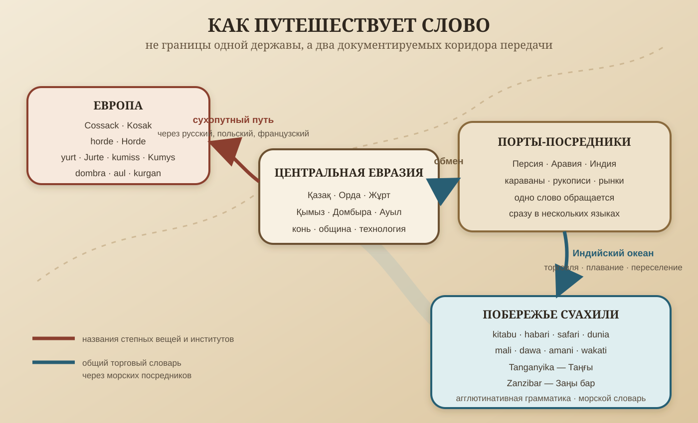

Тартар и Я
Авторское исследовательское эссе о памяти языка, равной мере и скрытых связях Евразии
Daulet Baimurza 2026
Рабочая редакция. Версия 0.87 — 4 ноября 2026 года.
Содержание
Почему книга называется «Тартар и Я»
На старых европейских картах имя Тартария покрывало огромное пространство Евразии. Его границы переходили с одной карты на другую, но в самом широком начертании оно протягивалось от земель за Карпатами и причерноморских степей до Тихого океана, от северных морей до границ Персии, Индии и Китая. Европейский картограф одним внешним именем обозначал земли и народы, которых плохо различал и ещё хуже понимал.

Эта карта является показанием чужого глаза: Европа видела перед собой огромный, связанный дорогами мир и называла его Тартарией. Под внешней надписью находились разные ханства, союзы, города, кочевья и народы, соединённые общим степным коридором движения людей, коней, товаров, слов и представлений о справедливом устройстве жизни.
Моя гипотеза состоит в том, что от Карпат до Тихого океана и от северных морей до дорог, ведущих к Индии, долго действовал широкий пояс казакской и родственной ей агглютинативной речи. Язык не обязан был всюду называться казакским, а люди не обязаны были носить одно имя. Он мог сохраняться в корнях, окончаниях, военных званиях, названиях рек, гор, дорог, денег, одежды и родов. Современные языки Евразии лежат поверх этого древнего слоя, как поздние города лежат над прежними поселениями.
Поэтому название «Тартар и Я» означает мою встречу с этим слоем. Я расчленяю привычное географическое имя и слышу в нём человека: Тартар — и я. Подобно тому как в слове Азия уважаемый мной Олжас Сулейменов услышал Аз и Я, название материка перестаёт быть безличной надписью на карте. Оно обращается к каждому жителю Евразии с вопросом: какая часть Тартарии сохранилась в твоём языке, памяти, обычаях и представлении о свободе?
В таком смысле любой человек Евразии может сказать: «Тартария — и моя история». Не потому, что все жители материка имели одно гражданство или одну кровь, а потому, что тысячелетиями они входили в общее пространство движения и обмена. Казакский язык важен для моего поиска как возможный наиболее сохранный ключ к этому пространству, а не как основание поставить один сегодняшний народ над другими.
До латыни: что скрывается под словом Tartarus
Западное написание Tartar добавило к имени ещё один смысл. Средневековые европейские авторы сближали его с Tartarus — подземной бездной и местом заключения. Хронист Матвей Парижский представлял пришедших с востока людей как демонов, вырвавшихся из Тартара. Так чужая земля превращалась в нравственный приговор, а её жители — в существ, которых не требовалось понимать.
Но сам Тартарус оказался не исходно латинским словом. Латынь приняла форму Tartarus из древнегреческого Τάρταρος — Tartaros, уже известного «Илиаде» и «Теогонии». Словари показывают его значение и ранние употребления, но происхождение основы оставляют неустановленным. Значит, латинский слой не заканчивает раскоп, а только отмечает ещё одного посредника.
Я читаю форму глубже: Тар + Тар. Казакское Тар означает узкое, тесное, сжатое. Повтор корня усиливает образ: не просто узость, а предельно замкнутое пространство. Именно таким предстаёт ранний Тартарос — глубина за оградой и воротами, место, из которого нельзя выйти. Греческое окончание -os и латинское -us могли оформить уже существовавшую основу по правилам новых языков:
Тар → Тар-Тар → Tartar-os → Tartar-us → Tartar.
Так слово могло пройти путь от пространственного признака к мифологическому месту, затем к религиозному образу наказания и, наконец, к клейму целого восточного мира. В этой цепи латынь не создаёт корень, а получает, оформляет и передаёт его дальше.
Латынь над агглютинативным пластом
Латинский язык имеет преимущественно флективное устройство: одно окончание способно одновременно выражать род, число, падеж или лицо, а основа изменяется внутри формы. Его ранние надписи относятся к концу VII и к VI веку до нашей эры. Но латынь возникала не на безъязыкой земле. Рядом с латинами жили носители этрусского, умбрского, оскского, сабельских и греческих языков.
Особенно важен этрусский. Он был агглютинативным: значения последовательно присоединялись различимыми частями. Этрусская письменность стала образцом для ранних алфавитов Италии; латинское письмо выросло внутри этой же контактной среды. Более десяти тысяч этрусских надписей свидетельствуют, что перед нами не случайная речь маленькой окраины, а большой культурный пласт, который позднее перекрыла латинская государственная система.
Я не начинаю историю Европы с Рима. Под латинью уже лежит агглютинативный слой. Часть его слов вошла в латынь, часть была переоформлена, часть исчезла вместе с носителями, а часть могла продолжить жизнь в названиях и мифологических именах. Поэтому Tartaros я помещаю в реестр слов, которые следует проверять не от латыни наружу, а от более раннего средиземноморского и евразийского агглютинативного пространства к греческой и латинской записи.
В этом переходе я вижу один из первых различимых европейских отходов от Тең. Агглютинативный язык оставляет операции раздельными и позволяет человеку видеть, как собирается значение. Флективная латынь соединяет несколько отношений в изменяемой форме, а римская власть делает то же самое с обществом: соединяет закон, налог, войско, собственность и религиозное оправдание в одной имперской системе. Не грамматика рождает алчность, а новый порядок использует менее прозрачную языковую оболочку и подчиняет ей память побеждённых. Так прежний корень становится непонятным, а его новое толкование — обязательным.
Это — Ру — ские: народ родословной
Русское слово этрусский позволяет услышать ещё один смысловой ключ: Это — Ру — ские. Казакское Ру обозначает род, родовую ветвь и место человека внутри цепи предков. Такая культура не просто делит людей на группы. Она хранит происхождение, запрещает забывать родство и заставляет помнить семь поколений, чтобы община не разрушала себя кровосмешением и враждой между близкими.
Древние формы ведут глубже современного русского звучания. Греки называли этот народ Tyrrhenoi/Tyrsenoi, римляне — Tursci, Tusci, Etrusci, а сами носители агглютинативного языка называли себя Rasna/Rasenna. Дионисий Галикарнасский сообщал, что их собственное имя совпадало с именем одного из предводителей — Расенны. В самих надписях сохранились rasna, rasnal, rasnas, rasneas. Особенно важно окончание -na: оно встречается в этрусских прилагательных и родовых именах. Следовательно, передо мной не неразложимый звук, а основа ras и присоединённая к ней оболочка.
Казакский слух немедленно узнаёт в этой основе Рас — истинное, подлинное, верное. Рядом стоят Расында — «в действительности», Расымен — «действительно», Растау — «подтвердить». Тогда Ras-na открывается как имя «истинных», «подлинных» или принадлежащих истине людей. Это чтение объясняет сам корень точнее, чем прежняя попытка сразу вывести всё имя из Ру: Ру раскрывает общественное устройство, а Рас — внутренний смысл самоназвания.
Внешние формы тоже не остаются немыми. В Tusci я слышу Түс, корень смыслового гнезда Түсіну, Түсінік, Түсіндіру — понять, понимание, разъяснить. В Tursci сохраняется Тұр — стой, встань, пребывай; рядом находятся Тұру, Тұрақ, Тұрғын, Тұрмыс. Конечные -sci/-ci могли принадлежать уже чужой записи имени, тогда как корни продолжали нести характеристику народа.
| Древняя форма | Казакский ключ | Живое смысловое гнездо | Как я читаю сохранённый образ |
|---|---|---|---|
| Rasna / Rasenna | Рас | Расында, Расымен, Растау | истинные, подлинные, подтверждающие правду |
| Tusci | Түс / Түсін | Түсіну, Түсінік, Түсіндіру | понимающие, способные постичь и объяснить |
| Tursci | Тұр | Тұру, Тұрақ, Тұрғын, Тұрмыс | стоящие, пребывающие, устроившие устойчивую жизнь |
| этрусский | Это — Ру — ские | Ру, Рулас, Рулық | люди рода и непрерывной родословной памяти |
Так возникает не набор случайных созвучий, а последовательность: Рас → Түсіну → Тұр. Сначала человек узнаёт истинное, затем понимает его, после этого встаёт на нём и сохраняет в жизни. А Ру передаёт устройство общины, способной пронести эту меру через поколения. Самоназвание и внешние имена могли удержать разные стороны одного народа: кем он считал себя и каким его видели соседи.
Передо мной возникает родословная модель имени. Поэтому формулу Это — Ру — ские я читаю не как случайную русскую шутку, а как позднее смысловое раскрытие древнего устройства: это люди Ру, люди родовой памяти, называвшие себя именем Рас и оставившие во внешних формах корни понимания и устойчивого стояния.
Русское окончание -ский само обозначает принадлежность: к земле, роду, месту или общине. Оно превратило внешнее имя этруск в прилагательное этрусский, но одновременно сделало слышимой утраченную характеристику. Слово словно отвечает на вопрос: кто они? Это Ру-ские — люди, определяющие себя через родословную связь.
Эта находка соединяет этрусский слой с моей гипотезой Ру — Русь — Русский. Возможно, перед нами не прямое заимствование одного позднего слова из другого, а древняя общественная формула, пережившая разные языки: свободная община знает свои роды, роды знают предков, а имя народа выражает принадлежность к этой цепи. Теперь я сопоставляю не одну пару, а четыре смысловых гнезда: Рас — Rasna, Түсіну — Tusci, Тұр — Tursci и Ру — этрусский — Русь — Русский. Их дорогу должны раскрыть повторяющиеся формы в этрусских, умбрских, греческих и латинских надписях.
Но в названии Тартария я слышу и другой, казакский ключ: Тар — узкий, тесный, неширокий. Я допускаю, что повторённое чужим ртом Тар-тар могло вызывать образ людей с узкими глазами. Для европейского церковного книжника это был бы не нейтральный портрет, а продолжение старой картины восточного «варвара». Через восемь столетий после Аттилы память о гуннском нашествии продолжала жить в христианских хрониках, проповедях и именах. Поэтому соединение Тар с Тартаром могло работать сразу в двух направлениях: телесная черта превращалась в клеймо чужого, а созвучие с адской бездной придавало этому клейму религиозный страх.
Такой образ имеет документированный фон. Иордан, пересказывая Приска, описывал Аттилу как человека с небольшими глазами, плоским носом и широкой грудью. В XIII веке папский посланник Плано Карпини сходным образом выделял у монголов широкие лица, выдающиеся скулы и маленькие глаза. Европейские наблюдатели превращали форму лица в опознавательный знак степного человека, а церковная письменность соединяла этот знак с уже готовой бездной Tartarus. Недостающее звено я теперь ищу не в одном переводчике, а во всей цепи: догреческий агглютинативный корень, греческое оформление, латинское присвоение смысла и средневековое превращение названия народа в религиозное клеймо.
Отсюда открывается более древняя цепь. В слове Гунн мне слышится Күн — солнце и день. Для Европы гунны действительно пришли с восточной стороны, от восхода. Поэтому я проверяю возможность, что их имя сохраняло образ людей Солнца или людей восхода. Переход К → Г/Х естественен при восприятии чужого слова: человек заменяет непривычный звук ближайшим звуком собственной речи, а писец закрепляет это приближение своими буквами. Ранние формы Khounoi, Hunni, Xwn и Huṇa позволяют искать последовательные ступени такого искажения. Поскольку сами гунны были союзом многих групп, а их язык дошёл почти без обычных слов, гипотезу Күн → Гунн я восстанавливаю через ряд чужих произношений и параллельные названия Солнца, а не только через современный русский облик слова.
Имя Аттила даёт ещё один ключ: Ат + Тіл — конь и язык. Я читаю его как имя человека, понимавшего коня, владевшего его движением и составлявшего с ним одно целое. В 1902 году германист Герман Альтхоф также сопоставлял имя Аттилы с at «лошадь» и dil «язык», а также с формой atlı — «всадник». Он работал через доступные ему чужие записи, поэтому его dil могло приблизительно передавать казакское Тіл, изменяя звук, членение или исходное значение. Современный обзор Магнуса Снэдаля сохраняет эту старую версию и предлагает близкое конное значение имени. Оба автора свидетельствуют, что конный смысл имени замечали задолго до моего исследования. Рядом существует германское чтение atta + -ila — «отец» с именным суффиксом, а также другие степные реконструкции. Ранняя форма имени и способ соединения его частей должны показать, какая линия ведёт к первоначальному смыслу.
Аттила: возвращение меры
Образ Аттилы как бездумного разрушителя создавали люди той письменной цивилизации, против которой он выступал. Но современник Приск, лично посетивший его ставку, оставил другой портрет. Аттила разбирал тяжбы; принимал посольства; жил среди многоязычного союза; пил из деревянной чаши и носил простую одежду, пока гостям подавали золото и серебро. Эта простота особенно заметна рядом с роскошью и продажностью позднеримской верхушки.
Ещё важнее разговор Приска с греческим торговцем, который после плена получил свободу и остался среди гуннов. Он говорил о тяжёлых римских налогах, безнаказанности богатых, бессилии бедного перед судом и необходимости платить за правосудие. Перед нами свидетельство человека, который сравнивал два устройства жизни не из далёкой летописи, а из собственного опыта.
Поэтому я рассматриваю гуннские походы иначе. Для меня они могли быть не движением ради присоединения земли, а возвращением нарушенной меры: принуждением империи выполнять обязательства, освобождением пространства от власти, превратившей закон в товар, и восстановлением знания Теңгри там, где равенство уже уступило алчности. Римский писец называл это варварским вторжением, потому что смотрел со стороны теряющей власть империи.
Военный огонь оставил разрушенные города и погибших людей. Но характер войны определяется не только развалинами. Мне важно установить, что происходило после подчинения: сохраняли ли народы язык и веру, как решались тяжбы, кому доставалась земля, превращалась ли дань в постоянное порабощение и мог ли чужой человек стать свободным участником общего мира. Суд Аттилы, его личная умеренность и свидетельство освобождённого грека открывают линию, по которой гуннский союз выглядит не противоположностью цивилизации, а судом над цивилизацией, утратившей равную меру.
Конный смысл имени не висит в пустоте. Степь дала очень ранние свидетельства управления лошадью, а древнейшие сохранившиеся и прямо датированные штаны из Янхая были скроены для верховой езды. Конь увеличил скорость, дальность и военную силу человека; штаны сделали долгую езду удобной. Я вижу здесь материальную почву, на которой имя «знающий язык коня» могло стать высшей характеристикой вождя. Моя версия состоит в том, что древние предки казаков первыми оседлали и одомашнили лошадь, а затем создали штаны как одежду всадника; благодаря этому их язык вместе с конной культурой разошёлся на огромные расстояния. Но археологическая вещь не сообщает современное название народа своего владельца. Поэтому следующий шаг — доказать непрерывную цепь от древних степных коневодов и мастеров одежды до исторически засвидетельствованных носителей казакской речи.
Я переворачиваю этот взгляд. Возможно, «адом» называли пространство, где человек мог уйти от господина, крепостной зависимости и религиозного преследования и стать Казаком — свободным. В Европе католические и протестантские государства преследовали и изгоняли иноверцев, заставляли подданных принимать веру правителя и вели разрушительные религиозные войны. Я предполагаю, что во многих степных союзах действовал иной принцип: принадлежность определялась не единой церковью и не происхождением, а участием в общине, взаимной защитой и признанием равной меры.
Я вижу здесь не одновременное сосуществование двух совместимых начал, а последовательную смену одного устройства другим. До массового прихода славянских переселенцев на эти земли агглютинативная культура хранила закон Теңгри — равную меру в устройстве общины, обмене и отношении к человеку. Приходящие из Европы народы несли с собой опыт религиозных преследований, сословного разделения, войн и борьбы за власть. По мере их численного преобладания, смешения с местными жителями и утверждения новой власти прежняя культура равенства постепенно вытеснялась, а войны, рабство, захваты и накопление богатства становились основой иного порядка. Следы более раннего устройства сохранились в словах, обычаях, родовой памяти, положении женщины, организации войска, правилах обмена и отношении к пришедшему человеку.
Так название книги соединяет четыре пути:
Тартария — пространство, названное чужими;
Тартар — образ ада, созданный страхом перед неизвестным;
Тар — казакский ключ к образу узости и к чужому взгляду на степного человека;
Я — человек, который возвращается к словам и спрашивает, какая история была скрыта под этим именем.
Опорные свидетельства: карта Великой Тартарии XVIII века из собрания Библиотеки Конгресса1; исследование европейской картографии Тартарии2; греческая форма Τάρταρος и её ранние употребления в LSJ3; этрусский агглютинативный пласт древней Италии4; Дионисий Галикарнасский о формах Etrusci, Tusci и самоназвании Rasenna5; словарная статья Rasenna6; исследование этрусских слов в латыни7; исследование средневекового превращения Tatar в Tartar через образ Тартара8; Приск при дворе Аттилы9; перевод фрагмента Приска о греческом торговце и римском правосудии10; описание Аттилы у Иордана11; исследование вариантов происхождения имени Аттила12; исследование связей восточных кочевых союзов и европейских гуннов13; исследование древнейших прямо датированных штанов и верховой езды14; исследование происхождения современных домашних лошадей15; исследование правового преследования религиозного инакомыслия в Европе16.
Предисловие. Не выбрать сторону, а искать след
Я начинаю эту книгу с недоверия. Звание ещё не делает человека честным, древнюю рукопись — святой, государственный архив — полным, а победу — правотой. Сомнению подлежат все свидетельства — и прежде всего мои собственные выводы.
Историю переписывали. Государства уничтожали документы, закрывали архивы, меняли названия и создавали удобные рассказы о прошлом. Иногда для уничтожения чужой истории сжигали целые города — вместе с архивами, библиотеками, храмами, школами, мастерскими и людьми, которые хранили знания этой культуры. Огонь уничтожал не только здания: он разрывал память, лишал потомков собственных свидетельств и оставлял победителю возможность рассказывать за погибших.
Войны многократно сопровождались намеренным уничтожением библиотек и архивов; ЮНЕСКО рассматривает нападения на места знания, документы и интеллектуалов17 как удар по культурной идентичности. В 1944 году Варшава была преднамеренно разрушена18 вместе с огромной частью её культурного наследия. Уничтоженный город оставляет после себя отсутствие документа как отдельный исторический след.
Но пожар не сообщает мне, что именно было написано в сгоревшей книге. Утраченную историю приходится восстанавливать по каталогам, старым цитатам, копиям в других странах, описям имущества, чужим переводам, монетам, названиям и словам живого языка. Победители воздвигали памятники собственной правоте, а проигравшие исчезали не только с земли, но и со страниц. Я хочу пройти туда, где официальная летопись рвётся, и посмотреть, какие следы остались под её словами.
Главная моя мысль проста: история человечества могла сохраниться не только в летописях. Она живёт в словах, которыми люди называют себя и других; в названиях рек, гор и стран; в формах, переживших исчезнувшие государства; в грамматике, которую ребёнок впитывает раньше, чем узнаёт официальную историю своего народа.
Мой путь к слову
По образованию и жизненному опыту я инженер. В молодые годы я сам бурил скважины, работая технологом по бурению в геологоразведочных и поисково-съёмочных экспедициях. Много лет провёл в Казахстане, на Таймыре и в Вологде. Из глубины более тысячи метров мы поднимали керн — каменную летопись Земли, заключённую в узком цилиндре породы.
Каждый поднятый керн завораживал меня узорами слоёв и переходами цвета. Передо мной лежали породы, которых человеческий глаз прежде не видел. Их нельзя было читать торопливо. Трещина могла рассказать о давлении, граница цвета — о смене условий, состав породы — о давно исчезнувшей среде. Один образец ничего не объяснял окончательно: его положение, глубину и строение нужно было сопоставить с соседними интервалами и другими скважинами. Только тогда разрозненные фрагменты начинали складываться в историю земных недр.
Позднее я заочно окончил Рудненский индустриальный институт по специальности инженера-обогатителя. В дальнейшем название моей специальности изменилось: инженер-технолог по обогащению полезных ископаемых — ОПИ. Последующую профессиональную жизнь я посвятил обогащению руды и производству железорудных окатышей, которые затем поступали на металлургические комбинаты для выплавки металла. Так за знакомством с недрами последовала работа с тем, что из них извлечено: отделить полезное, получить концентрат, подготовить сырьё к следующему переделу.
Думал ли я тогда, что на старости лет вернусь к этому пути через исследование языка? Теперь я извлекаю из древних артефактов слова, рассматриваю их состав и связи, сопоставляю с живой речью. В одном корне различимы несколько пластов: первоначальный образ, позднее значение, чужое произношение, заимствование, переименование и след власти. Как прежде из руды получался концентрат, так из множества разрозненных наблюдений постепенно выделяется мысль. Я обогащаю её новым смыслом, чтобы найти нити, ведущие к первоисточнику, и осторожно очищаю каждый фрагмент, стараясь не оборвать сохранившуюся внутри него связь.
Так моя прежняя профессия становится методом этой книги. Бурение научило меня, что глубина сама по себе ещё не даёт ответа. Нужно точно знать, откуда поднят образец, в какой последовательности лежали слои и что могло сместить их после образования. Поэтому словесная находка для меня — не готовый приговор истории, а керн, который необходимо описать, сопоставить и вернуть в разрез. В нём может сохраниться свидетельство возможной истины — той правды, которую время скрыло под позднейшими наслоениями.
Нить этой книги
Я собираю не каталог случайно похожих слов, а след возможного распада более древнего языкового пространства. В начале моей реконструкции стоит агглютинативная архитектура: различимый корень, последовательное присоединение значений и возможность восстановить целое по частям. Рядом с ней стоит Тең — равная мера между людьми. Я рассматриваю их как две стороны одной первоначальной программы: порядок внутри слова и мера внутри человеческих отношений.
Эта программа не исчезла одним мгновением. Народы расселялись, вступали в браки, торговали, учили друг друга и естественно меняли речь. Но иной процесс начинался там, где накопление становилось важнее равенства, а сила — важнее родства. Борьба за землю, дань, долг и власть порождала войны; война — переселение и подчинение; подчинение — язык управления, школы и суда; новый язык власти менял имена людей и мест, вытеснял прежнюю письменность и разрывал передачу смысла между поколениями.
Так я выстраиваю основную причинную цепь книги:
агглютинативная архитектура и Тең → расселение первоначального слоя → отказ от равной меры → накопление и господство → войны и принудительные переселения → смена языка власти, письма и имён → смешение и утрата прозрачности → россыпи корней, топонимов и грамматических моделей по разным материкам.
Смешение само по себе не является пороком. Добровольный обмен способен обогащать оба языка. Разрушение начинается тогда, когда контакт перестаёт быть равным: один язык получает армию, канцелярию, школу и право переименовывать, а другой остаётся только в семейной речи, названиях рек, деревень, орудий, растений и родов. Поэтому я ищу не языковую «чистоту», а степень сохранности первоначальной архитектуры и механизм, превративший целый пласт в рассеянные обломки.
Если эта реконструкция верна, следы должны образовывать не одиночные созвучия, а закономерную картину. Ближние языки сохранят больше корней и способов сборки слова; дальние — отдельные устойчивые элементы; территории смены населения — древние гидронимы и топонимы; пути конницы, торговли и переселений — повторяющиеся названия предметов, должностей и действий. Каждая следующая глава проверяет отдельное звено этой цепи.
Поэтому я иду от языка к источнику, а не от признанного источника к заранее разрешённому толкованию языка. Я вслушиваюсь в устройство слова, его смысловое поле, родственные формы, повторяющиеся звуки и географию. Потом обращаюсь к надписям, рукописям и материальным находкам. Они для меня не судьи, а свидетели. Свидетель может сказать правду, ошибиться, повторить чужую ложь или умолчать о главном.
Слово — маленький архив, но и архив иногда подделывают. Современное звучание может сохранить древний смысл, а может случайно напомнить знакомый корень. Название бывает самоназванием, именем, данным соседом, ошибкой переводчика или записью картографа, никогда не видевшего описанной земли. Мне интересны обе возможности: слово как память и слово как ловушка.
Эта книга собирает смысловую картину, которую казакский слух обнаруживает в словах. Научная этимология, государственный архив, религиозное писание, народное предание и запрещённая версия встретятся здесь на равных. Я буду спрашивать каждого свидетеля: кто тебя создал, когда, для кого и зачем? Что ты видел сам, а что повторил? Что осталось за твоими словами?
По жанру эта книга — авторское исследовательское эссе о памяти языка, равной мере и скрытых связях Евразии. Эссе соединяет личный опыт, нравственный вопрос, исторический документ и исследовательскую догадку. Найденный факт, известный маршрут заимствования, смысловая параллель и авторская гипотеза занимают в повествовании разные ступени, даже когда ведут к одной картине.
Я предлагаю читателю идти рядом, слышать слова, спорить со мной и самому решать, какой след ведёт дальше.
Пролог. Как Казак стал Казахом
До поисков первого слова и Тартарии я должен осветить из темноты имя собственного народа. Сегодня по-русски пишут казах, а я называю себя Қазақ. Между этими формами стоит не медленное безымянное изменение, а датированное решение государственной власти.
В Российской империи мой народ долго называли не его собственным именем, а киргизами и киргиз-кайсаками. После революции это внешнее название сначала перенесли и в название автономии. Только V съезд Советов республики в апреле 1925 года постановил восстановить исторически верное имя и «впредь именовать киргиз казаками». Декрет ВЦИК от 15 июня 1925 года закрепил Казакскую Автономную Советскую Социалистическую Республику. Значит, ещё в официальном русском языке 1925 года мой народ и республика назывались через форму Казак.
Следующий поворот произошёл 5 февраля 1936 года. Постановление ЦИК и СНК Казакской АССР № 133 «О русском произношении и письменном обозначении слова “казак”» предписало заменить в русском написании последнюю букву к буквой х: писать не казак, а казах, не Казакстан, а Казахстан. Объявленной причиной было более правильное воспроизведение слова Qazaq и его производных.
Таким образом, сам разрез подтверждён документом: до февраля 1936 года официальная форма была Казак, после постановления стала Казах. Постановление формально оформили ЦИК и Совнарком Казакской АССР, тогда как политический центр принятия решений находился в Москве. В сталинской системе нижестоящий орган мог получить прямую директиву, согласовать решение заранее, исполнить устное указание или предугадать волю центра, а затем представить её как местное постановление.
Бумага из республики, власть из Москвы
Контекст не позволяет читать этот документ как решение равноправных сторон. К февралю 1936 года Казакстан уже пережил насильственную коллективизацию, изъятие скота, голод и массовое бегство населения. Исследования, основанные на архивных материалах, связывают эту катастрофу с программой, запущенной московским Центральным комитетом; по одной из оценок, в 1930–1934 годах погибла как минимум четверть всего населения республики. Параллельно преследовали деятелей Алаш и самостоятельную национальную интеллигенцию, способную открыто спорить о языке, земле и устройстве народа. В 1937–1938 годах этот разгром стал массовым уничтожением.
Подпись местного учреждения фиксирует формального исполнителя, тогда как действительную волю раскрывает вся командная цепь. Центр мог превращать собственное давление в видимость добровольного решения снизу. Проект постановления, партийное согласование, протокол бюро, переписка с Москвой, устные поручения, кадровые угрозы и судьба возможных противников решения показывают политическое происхождение официального бланка.
Личная резолюция Сталина о замене Казак на Казах пока не обнаружена. Установлены само орфографическое разделение и формальный исполнитель; действительный инициатор и политическая цель скрыты внутри командной цепи сталинского государства. Следующий слой архивного поиска — проект постановления, партийное согласование, протоколы, переписка и кадровые решения вокруг принятой замены.
Одно слово по обе стороны степи
Связь всё же невозможно объявить простой фантазией. Русское казак, украинское козак, западноевропейское Cossack и Қазақ/Qazaq восходят к общему степному слову. В ранних словарях и последующих употреблениях оно связано со свободным, отдельным, странствующим человеком, искателем удачи, воином вне прежней зависимости. Позднее одно слово стало этнонимом моего народа, а в Восточной Европе — названием вольных военных сообществ.
Для моей книги это первый настоящий языковой артефакт. Государственная орфография развела на бумаге то, что история слова соединяет. Буква х не создала новый народ, но сделала общее происхождение двух русских названий менее заметным для глаза и слуха.
Общее имя переходило от степного образа жизни к разным людям и связывало донские, запорожские, кубанские, уральские и сибирские сообщества с более древним понятием Қазақ. Вместе с названием свободы переселенцы могли перенять устройство общины, военные должности, быт, речь и закон равной меры.
Часть I. Имя народа и память речи
Глава 1. Ру — Русь — Русский: как признак стал именем
Современное слово русский устроено необычно для названия народа. Казак, поляк, словак, немец, француз являются существительными. Русский по форме остаётся прилагательным: русский человек, русский язык, русская земля. Во множественном русские название признака начинает обозначать самих людей, хотя существительное рядом уже не произносится.
Я разделяю здесь два вопроса. Первый — как прилагательное стало именем народа. Второй — откуда взялось основание рус-, к которому присоединился славянский суффикс. Ответ на первый вопрос не закрывает второй.
Грамматическая цепь видна в старых формах. Русь употреблялась как собирательное название общности и земли. Отдельного человека называли русин. Рядом существовали сочетания русская земля, русский язык, русские люди, русские сыны. Затем определяемое слово люди стало необязательным: выражение русские люди сократилось до русские, и прилагательное приняло на себя значение существительного. Язык постоянно делает подобное: военный человек превращается в военного, рабочий человек — в рабочего. Необычно не само превращение, а то, что именно эта форма вытеснила прежние существительные русь, русин, русак, русянин и стала главным именем народа.
Название языка прошло немного иначе. В сочетании русский язык слово русский и сегодня остаётся прилагательным: оно отвечает на вопрос, чей это язык или к какой общности он относится. Когда говорят просто «я изучаю русский», существительное язык опускают, но его легко восстановить. Значит, одно прилагательное закрепилось сразу в двух сокращениях:
русские люди → русские;
русский язык → русский.
Эта грамматика объясняет позднюю оболочку, но ещё не объясняет, почему первоначальная общность называлась Русь. Даже исследователи, предлагающие скандинавскую, финскую, иранскую, славянскую или южнопричерноморскую дорогу имени, признают трудность его происхождения и необходимость отделять историю слова от готовой картины происхождения государства. Поэтому я возвращаюсь к казакскому корню Ру.
Ру — это род, линия происхождения, круг людей, помнящих общего предка. Такое деление не сводилось к желанию разъединить народ на враждующие части. Оно позволяло человеку знать своё место в разветвлённой сети родства, хранить шежіре и не вступать в брак внутри близкой линии. Правило Жеті Ата требовало помнить предков до седьмого колена. Род становился не перегородкой, а способом удерживать память, ответственность и границы кровного родства.
Более древний агглютинативный ряд uruğ — uruw — ru связывает род со значениями семени, потомства и родовой ветви. В нём Ру выглядит не случайным коротким звуком, а сжатым остатком старого понятия происхождения. Поэтому я проверяю возможность, что имя Русь/русские первоначально характеризовало людей, сохранявших свои Ру, — людей родов, знающих происхождение и соединённых родовой организацией.
Такое название могло возникнуть двумя путями. Его могли произносить сами носители родовой системы: «мы — люди своих Ру». Или его мог дать сосед, выделивший главное устройство пришедшего общества: перед ним не безымянная толпа, а союз родов, каждый из которых знает предков, знак и место внутри общего объединения. В обоих случаях позднее прилагательное русские сохраняло бы характеристику устройства общества, даже когда первоначальный смысл корня уже перестал быть понятен говорящим.
Между Ру и засвидетельствованной Русью стоит звук с. Славянское членение современной формы выглядит как рус- + -ск- + -ий: первое с относится к основанию рус-, второе начинается в суффиксе -ск-. Промежуточная ступень должна показать, как Ру получило коллективный или внешний показатель -с/-сь, либо какой язык-посредник записал название рода именно так.
Текущий раскоп выглядит следующим образом:
| Звено | Что уже видно | Статус |
|---|---|---|
| uruğ / uruw — Ру | агглютинативный ряд значений «семя, потомство, род» и живая казакская родовая система | цепь внутри степного словаря |
| Ру — Русь | общий образ родовой общности, но нет датированной переходной формы и объяснения конечного с/сь | параллель, открытый вопрос |
| Русь — русин | собирательное имя и название отдельного человека засвидетельствованы в ранних текстах | цепь |
| Русь — русский | прилагательное образовано от известного имени общности | цепь |
| русские люди — русские | существительное опущено, а прилагательное стало названием людей | цепь |
| русский язык — русский | сокращение полного названия языка | цепь |
Сила моей версии находится в смысле: Ру объясняет, какое общественное устройство могло получить такое имя, и связывает название не с одним вождём или лодкой, а с системой происхождения. Недостающее звено находится в форме. Мне нужны ранние записи, где рядом существуют ру/уру/уруғ, роды, тамги, шежіре и название рус/русь; особенно ценным будет свидетель, который ещё понимал оба значения и прямо объяснял одно через другое.
Здесь возникает трагический парадокс. Современные русские сохранили имя, которое, по моей гипотезе, могло говорить о родовой памяти, но утратили саму обязательную систему знания своего Ру. Фамилия и отчество обычно ведут лишь на несколько поколений назад. Они не заменяют живую шежіре, в которой человек знает разветвления рода, общий знак, места предков и границы кровного родства. В повседневной русской жизни нет общего правила, требующего от каждого помнить семь поколений и соотносить с этой памятью брак, ответственность перед родственниками и собственное место среди потомков.
Я говорю не о потере крови и не о нравственном недостатке сегодняшнего человека. Утрачена общественная программа хранения происхождения. Возможные этапы этой утраты ещё предстоит исследовать: превращение союзов родов в подданных князя и государства; замена родового знака церковной записью, сословием, фамилией и паспортом; крепостная зависимость и переселения; войны, пожары архивов и разрывы семейной памяти; позднее превращение множества местных общностей в одну государственную национальность. Каждый этап мог сохранять имя и одновременно стирать его первоначальное содержание.
Если цепь Ру — Русь — русские подтвердится, сегодняшнее название окажется свидетельством именно этой утраты. Люди будут продолжать называть себя словом родовой памяти, уже не зная собственных родов, от которых произошли. Тогда словесная археология должна не присвоить им чужое прошлое, а вернуть вопрос, спрятанный в их собственном имени: каково моё Ру, кто мои предки и какой закон ответственности связывал меня с ними?
Тогда вопрос «как прилагательное стало народом» получает двойной ответ. Поздняя грамматика сократила русские люди до русские. Но сама характеристика могла быть намного старше славянской формы и первоначально означать людей родовой памяти — тех, у кого есть свои Ру.
Как собиралась русская речь
Русский язык не возник в готовом виде вместе с государственным именем. Я вижу в нём место встречи нескольких потоков. Европейские переселенцы и соседние славянские общности приносили близкие польские, чешские, словенские и другие формы; германская речь оставляла как дальние родственные параллели, так и более поздние слова ремесла, армии и управления; степь сохраняла агглютинативный пласт дороги, конницы, торговли и общественного устройства.
| Значение или предмет | Русский | Польский | Чешский | Словенский | Немецкий | Казакский |
|---|---|---|---|---|---|---|
| брат | брат | brat | bratr | brat | Bruder | аға / іні |
| мать | мать | matka | matka | mati | Mutter | ана |
| вода | вода | woda | voda | voda | Wasser | су |
| ночь | ночь | noc | noc | noč | Nacht | түн |
| имя | имя | imię | jméno | ime | Name | ат / есім |
| степная дорога и власть | казак, караул, ярлык, аркан, курган | — | — | — | — | Қазақ, Қарауыл, Жарлық, Арқан, Қорған |
Первые пять строк показывают общий славянский каркас и более глубокие европейские родственные ряды. Немецкая форма здесь не всегда является источником русского слова: иногда оба слова являются ветвями более раннего гнезда. Последняя строка открывает иной пласт — агглютинативную степную лексику, вошедшую в русскую жизнь вместе с предметом, должностью и способом движения. Для меня именно наложение этих слоёв объясняет, почему русский язык соединяет европейскую грамматическую оболочку с большим степным словарём.
Полный многоязычный реестр вынесен в приложение. Там родственные ряды отделены от слов исторического контакта, чтобы не смешивать общее наследие с прямым переходом слова из одной речи в другую.
Для меня этот разрез является свидетельством не только образования языка, но и образования самого русского народа. Он не появился на этой земле как готовая древняя общность. Поздние переселенцы из разных частей Европы входили в мир местных казаков — носителей агглютинативной культуры и языка. Совместная жизнь не была мирным одномоментным слиянием: века войн, захватов, браков, переселений, насильственного переименования и кровопролитной диффузии перемешивали людей и речь. К концу XIX века имперская школа, армия, церковь, печать, статистика и общее государственное имя закрепили результат этого долгого процесса как русский народ. Поэтому словарь сохраняет то, что позднее национальное название скрыло: европейские речевые ветви соединились здесь с более древним казачьим агглютинативным основанием.
Не имя из ничего, а захват старого имени
Людей могли назвать русскими новые правители Руси, которые не знали ни происхождения покорённых общностей, ни смысла их старых названий. Однако формы Русь, русин, русская земля, русские люди засвидетельствованы задолго до воцарения дома Романовых в 1613 году. Следовательно, речь могла идти не об изобретении совершенно нового слова, а о присвоении, расширении и переопределении уже существовавшего имени.
Династическая история делает этот вопрос острее. С 1762 года престол заняла Гольштейн-Готторпская ветвь Ольденбургского дома, официально продолжившая называться Романовыми. Верховная власть пользовалась древним местным именем как государственной оболочкой, уже отделённой от первоначального устройства общества, из которого это имя выросло. Империя взяла старое слово, расширила его пределы и заставила множество разных общностей узнавать себя в одной официальной категории.
Чего перепись 1897 года не спрашивала
В листе Первой всеобщей переписи Российской империи не было вопроса о национальности. Человека спрашивали о сословии или звании, месте рождения и приписки, вероисповедании, родном языке, грамотности и занятии. Национальное самоназвание оставалось за пределами переписной формы: казачью принадлежность чиновник помещал в графу сословия, а речь человека — в отдельную графу родного языка.
Казака записывали прежде всего в сословную категорию войсковых казаков, а его речь — отдельно, в графе родного языка. В официальных итогах получилось:
| Территория переписи 1897 года | Войсковые казаки | Доля всего населения территории |
|---|---|---|
| Российская империя | 2 908 800 | 2,3 % |
| Область Войска Донского | 1 026 300 | 40,0 % |
| Кубанская и Терская области вместе | 934 500 | 32,8 % |
Эти числа раскрывают казачество не как малую декоративную группу внутри уже готовой русской нации, а как огромную историческую общность. На Дону четыре человека из десяти имели отдельный официальный казачий сословный статус; на Кубани и Тереке — почти каждый третий. Имперская таблица ещё видела эту общность, которую позднейшая национальная схема станет растворять внутри других названий.
Одновременно перепись строила над языками собственную иерархию. В сводах великорусская, малорусская и белорусская речь могли объединяться под общей рубрикой русского языка. Получалась двойная операция: внизу документ сохранял различия, а наверху статистическое название снова собирало их в единую имперскую общность. Так власть могла не запрещать человеку его местное имя, но помещать это имя внутрь более крупной категории, смысл и границы которой устанавливала уже не семья и не род, а государственный статистик.
Два имени одного человека в 1926 году
Перепись 1926 года позволяет увидеть сам механизм ещё яснее. Её общая программа не предусматривала отдельного признака казачества. Однако в Северо-Кавказском крае местные органы настояли на специальном учёте, и в результате было насчитано 2 301 900 казаков, или 27,52 процента населения края. Затем этих же людей распределили по другой шкале:
| Записанные казаками в Северо-Кавказском крае | Численность |
|---|---|
| Одновременно отнесённые к русским | 1 325 000 |
| Одновременно отнесённые к украинцам | 960 900 |
| Одновременно отнесённые к другим народам | 16 100 |
| Всего казаков | 2 301 900 |
Передо мной не простая замена одного самоназвания другим, а наложение двух систем. Казак ещё обозначал принадлежность к исторической общности, а русский или украинец уже служил национальной категорией нового государства. Один и тот же человек оказывался казаком по одной строке и русским либо украинцем по другой. Документ не сообщает, какое из этих имён он считал главным и кто именно вписал окончательную категорию — он сам, переписчик или инструкция по обработке ответа.
В 1932 году единая советская паспортная система уже сделала национальность обязательной строкой удостоверения личности. Так подвижная и многослойная принадлежность превратилась в постоянную запись государственного документа. После этого человек мог всю жизнь числиться русским не потому, что восстановил происхождение своего Ру и сознательно выбрал это имя, а потому, что оно было однажды внесено в анкету, паспорт и записи его детей.
Так открывается более длительный и глубокий процесс: род, земля, войско, язык и национальность сначала существовали рядом, затем чиновник развёл их по графам, а потом одна графа стала главнее остальных. Люди не просыпались однажды с новым самоназванием. Их потомки обнаруживали себя русскими уже внутри школы, паспорта, армии и переписи, когда живая память о собственном Ру и казачьем происхождении была ослаблена.
Романовы не создавали слово русский из ничего. Имперская власть, включая с 1762 года Гольштейн-Готторп-Романовскую линию, превращала старое имя Руси в общую государственную оболочку. Советская власть завершила другую часть работы: перевела сложное происхождение человека на язык обязательной национальной графы. Следы прямой замены самоназвания следует искать в жалобах станичных обществ, полевых переписных листах, инструкциях кодировщикам и семейных документах, где первоначальный ответ казак мог быть заменён словом русский. Опубликованные цифры уже показывают место исчезновения — между живой общностью и итоговой таблицей.
Глава 2. Бегство к свободной земле
Я предполагаю, что степное казачество росло там, куда уходили люди от крепостной зависимости, налогового давления, войн и религиозных преследований. Среди них были славяне разных земель, степные народы, беглые крестьяне, воины и торговцы. За пределами плотного контроля государства они входили в уже существовавший мир дорог, кочевий, аулов и военных союзов. Здесь слово Қазақ могло обозначать не кровь, а состояние человека: он вышел из подчинения и стал свободным.
В моей реконструкции земли за Карпатами, которые европейские картографы и книжники помещали в пространство Тартарии, были не пустотой и не царством «диких». Они могли быть огромной зоной, где государственное и религиозное рабство Западной Европы действовало слабее, земли было больше, а пришедший человек получал возможность войти в свободную общину. Католики, протестанты, православные и другие преследуемые группы несли с собой славянские говоры, но принимали степной способ жизни, слова и правила взаимной защиты. Я предполагаю, что первоначальный закон Теңгри — равная мера между людьми — был нравственным основанием такой свободы.
Эту картину раскрывают карты поселений, исповедные и налоговые книги, жалобы землевладельцев на уход крестьян, пограничные реестры, брачные связи и словарь каждого казачьего войска. Они покажут, где переселенцы вошли в существовавшую общину, где создали новую и в какой момент их речь стала преобладать над более ранним степным слоем.
Моя более широкая версия состоит в том, что от Карпат до дальневосточных степей существовал пояс агглютинативной речи и культуры, который позднее был разделён государственными границами и новыми национальными историями. Славянская речь постепенно стала преобладать в западных казачьих сообществах, но степной словарь, должности и обычаи сохранили более ранний слой. Чтобы эту версию подтвердить, мне надо показать не отдельные красивые слова, а датированную систему: когда появляется каждое название, кто его произносит, какие формы старше и по каким дорогам они движутся.
До Никитина: лицо предполагаемого автора «Слова»
Первым памятником в этой цепи для меня становится «Слово о полку Игореве». В языке произведения я вижу восточный, степной слой. Не менее важен для моего исследования возможный облик его создателя: с предполагаемым автором связывают сохранившееся изображение человека, в лице которого я вижу азиатские черты.
Олжас Сулейменов подошёл к «Слову» через двуязычие. Он писал, что произведение было создано двуязычным автором для двуязычного читателя, и пытался вернуть смысл местам, которые становились непонятными после удаления агглютинативного степного слоя. Его книга «Аз и Я» открыла опыт чтения памятника поверх поздно установленных языковых границ. Преследование книги в 1970-х годах показывает, насколько политически опасным считался такой взгляд на общую историю.
Александр Бурыкин предложил конкретное имя автора — киевского зодчего Кузьмищу Киянина. Более того, он предположил, что тот участвовал в создании протографа Радзивиловской летописи и оставил в её рисунках собственное лицо. В качестве возможных автопортретов Бурыкин называет миниатюру № 516 со строительством Успенского собора и фигуры с книгой на миниатюрах № 544 и 545, посвящённых погребению Андрея Боголюбского. Эти изображения дают мне возможность сопоставить языковой облик произведения с предполагаемым обликом его создателя.

Единственная известная рукопись самого «Слова» погибла при московском пожаре 1812 года и, насколько позволяют судить её описания, портрета автора не содержала. Радзивиловская рукопись с миниатюрами относится к XV веку и воспроизводит более ранний протограф. Связь изображения с автором образует цепь предположений: Кузьмище написал «Слово»; он участвовал в создании рисунков; одна и та же фигура является его автопортретом; поздний список сохранил её черты. В лице этой фигуры я вижу азиатский облик. Язык и род предполагаемого автора раскрываются уже через сопоставление изображения с текстом и биографией.
Моя рабочая версия звучит поэтому так: автор «Слова» мог принадлежать к двуязычной степной среде, которую позднее разрезали на «русскую» и «чужую». Возможный автопортрет и агглютинативные ключи текста усиливают друг друга, но не заменяют доказательство. Я буду сопоставлять три независимых ряда: лексику и трудные места «Слова»; биографию Кузьмища; происхождение и последовательность копирования миниатюр № 516, 544 и 545. Тогда станет ясно, сохранилось ли перед нами лицо автора или лишь лицо, которому поздний исследователь дал его имя.
Никитин и многоязычный голос XV века
«Хожение за три моря» Афанасия Никитина важно именно как такой пограничный голос. В его тексте русская речь соединяется с большими фрагментами степной агглютинативной речи, в которые входят арабские и персидские выражения. Поздняя редакция XVII века удаляла часть этого восточного и религиозно неоднозначного материала, тогда как более ранние списки его сохранили.
Я слышу здесь человека многоязычного торгового мира. Никитин свободно переходит между языковыми слоями, когда русской письменной формы ему недостаточно или когда он хочет остаться понятным лишь части читателей. Текст сохраняет тесное присутствие казакской и родственной ей агглютинативной речи внутри опыта путешественника и показывает, как поздний редактор очищает памятник от неудобной многослойности.
Глава 3. Бала — Лайық: имя инструмента как след
Следующий артефакт я слышу в слове Балалайка: Бала + Лайық — ребёнок и достоин, подходит, соответствует. Образ получается ясным: ребёнок тоже достоин музыки, ему тоже полагается свой доступный струнный инструмент. Такое членение придумано не только мной: оно уже встречается у Б. Карашина в форме балаға лайық — подходящий ребёнку. Одновременно даже справочные обзоры признают происхождение названия спорным и среди версий называют связь первого элемента с бала — ребёнком.
Я рассматриваю балалайку как позднее преобразование домбры или домры внутри общего музыкального пространства. Письменные свидетельства XVII века показывают, что названия домра и балалайка некоторое время существовали рядом, а ранние балалайки могли иметь длинный гриф. Современную короткогрифную форму закрепили мастера круга Василия Андреева в конце XIX века. Более древний слой я ищу в смысле имени: Бала — Лайық, инструмент, доступный и достойный ребёнка.
Связь раскрывается через ранние написания слова, размеры сохранившихся инструментов, число струн, строй, форму корпуса и способы игры. Особое место здесь занимает европейская живопись путешествия. Гравюра Адама Олеария XVII века показывает музыкантов Московии со щипковыми инструментами. На ней важны не поздние музейные названия, а то, что можно увидеть непосредственно: небольшой корпус, длинный гриф, положение рук и присутствие музыки в уличном представлении.

Через столетие Жан-Батист Лепренс привёз из Российской империи большой запас натурных зарисовок. На картине «Игрок на балалайке» 1764 года инструмент ещё не похож на позднюю стандартную треугольную балалайку. В руках музыканта находится небольшой округлый корпус с очень длинным грифом. Человек держит его почти вертикально, как длинногрифовый степной щипковый инструмент. Рядом видны жилище шатрового типа, свободные штаны, подпоясанная верхняя одежда и женские головные покрывала. В одном полотне соединены музыка, одежда и устройство повседневной жизни — именно поэтому оно становится для меня не украшением, а зрительным документом словесного раскопа.

В офорте «Русский танец» тот же художник собрал музыкальную сцену иначе. Два инструмента видны одновременно: сидящий музыкант играет смычком на вертикально поставленном инструменте, стоящий держит длинногрифовый щипковый. Мужчины одеты в длинные подпоясанные халаты и мягкие сапоги; на головах — шапки и обёрнутые тканью уборы. За ними натянуты полотнища, напоминающие походный или кочевой стан. Лепренс переработал дорожные наблюдения в европейской манере рококо, поэтому его композиция не является буквальной фотографией одного места. Но повторяющийся набор предметов — длинный гриф, пояс, свободный крой, мягкая обувь, тканевый головной убор и шатровая среда — сохраняет увиденный им восточно-степной слой империи.

На листе изображён не только танец, но и целая музыкальная среда, существовавшая до войны 1812 года. Справа стоящий бородатый музыкант держит округлый щипковый инструмент с длинным грифом. В его форме и посадке я узнаю домбру, ещё не укороченную и не превращённую в позднюю треугольную балалайку. Ниже сидит второй музыкант: он держит смычковый инструмент вертикально между ног. Для меня эта посадка и способ звукоизвлечения сохраняют кобызный образ, даже если европейский художник передал незнакомый ему инструмент своей графической рукой. В центре танцуют мужчины в длинной подпоясанной одежде, свободных штанах и мягких сапогах. Вокруг видны бороды, высокие и обёрнутые головные уборы, ковры, навесы и шатровые полотнища. Перед нами не привычная поздняя картинка «русской старины», а многоцветный степной уклад внутри пространства, которое затем стали описывать одним государственным именем.
Так выстраивается зрительная последовательность: Олеарий фиксирует музыкальный быт XVII века; Лепренс в XVIII веке вновь показывает длинногрифовые инструменты в той же широкой культурной полосе; а стандартизованная балалайка Андреева появляется лишь в конце XIX века. Между домрой, домброй и балалайкой виден не один скачок, а длительное преобразование корпуса, грифа, строя и имени инструмента.
Глава 4. Аткинсон: между местным костюмом и мундиром
После музыкальной сцены Лепренса я обращаюсь к альбому Джона Огастеса Аткинсона и Джеймса Уокера «A Picturesque Representation of the Manners, Customs, and Amusements of the Russians». Сто раскрашенных от руки офортов и акватинт вышли в Лондоне в 1803–1804 годах. Между двумя художниками меняется не только одежда: меняется способ показывать человека.
Аткинсон приехал в Петербург ребёнком в 1784 году вместе с гравёром Джеймсом Уокером, вырос рядом с императорским двором и пользовался покровительством Екатерины II и Павла I. В Англию он вернулся в 1801 году. Его альбом сохраняет впечатления долгой жизни в империи, но взгляд придворного художника не совпадает со взглядом отдельной степной общины. Издание соединяет наблюдение, художественный замысел и сведения о военном ресурсе: оружии, лошадях, передвижении и размещении конницы.
Что меняется на изображениях
На листе Cozacks издатели соединяют Яик, Волгу, Сибирь, Дон, Кавказскую и Оренбургскую линии, упоминая также чугуевские регулярные полки. Поэтому я читаю его как собирательную сцену пограничного пояса, а не портрет одного полка или одной местности. Близкий сине-красный костюм показывает служебную унификацию; по нему нельзя определить язык каждого всадника.


У Лепренса длинная подпоясанная одежда входит в музыкальную и бытовую сцену; Аткинсон чаще выстраивает каталог типов. Разницу усиливает начало регламентированного обмундирования Донского войска в 1801 году: короткая куртка, чекмень, установленные цвета и воротник-стойка постепенно меняют силуэт. Этот рубеж предшествует войне 1812 года.
Я вижу здесь превращение регионального костюма в государственный мундир. Пика, сабля, пояс и конная посадка остаются, но одежда становится знаком службы. Различие двух изображений требует различать наблюдаемую среду, время и жанр: бытовой танец и строй конницы рассказывают о разных сторонах одного широкого пространства.
Региональная одежда и повседневный уклад
Для сравнения я ставлю рядом три листа из «The Costume of the Russian Empire», изданного в Лондоне в 1803 году по петербургским прототипам 1776–1779 годов. Они сохраняют длинную одежду, свободные штаны, кушаки и высокие головные уборы вне короткого строевого мундира.


Сходный предметный мир виден и за пределами военной сцены Аткинсона. Лагерь соединяет жилище, коня, повозку и домашнюю работу; кавказский всадник сохраняет длинную одежду и собственный комплекс оружия. Так рядом с назначенной формой продолжает жить местный уклад.


В этих листах я ищу общий степной слой, не стирая различий между изображёнными людьми. Европейский альбом 1803 года мог одновременно показывать старый региональный костюм и новую служебную форму. Изображение сохраняет оба процесса: преемственность вещей и изменение их государственной рамки.
От одежды я возвращаюсь к словам. Атаман, есаул, Арбат сохраняют другой след того же мира — названия старшинства, службы и передвижения.
Источники: полный альбом Аткинсона и Уокера, Университетская библиотека Берна19; описание издания в Метрополитен-музее20; исследование А. Е. Кустовой о придворных заказах Аткинсона21; Государственный исторический музей об обмундировании 1801 года22; альбом «The Costume of the Russian Empire»23. Полные страницы и снятые с печатной полосы репродукции сохранены в исследовательском собрании.
Глава 5. Атаман, есаул и Арбат
В слове атаман я слышу казакские Ата и мен: старший говорит о своём месте и ответственности — «я отец, я старший». Корень Ата, «отец, предок», действительно входит в одну из известных этимологических версий; в ней -ман понимается как усилительный элемент. Но существует и конкурирующая линия, сближающая атамана с гетманом и немецким Hauptmann. Я буду искать самые ранние формы и среду, где две линии расходятся.
Слово есаул я слышу как сокращение Иесі Ауыл — хозяин аула. Формы ясаул, ясавул, есаул могли возникнуть как естественные изменения произношения при переходе слова между разными народами, языками и письменностями. Все они ведут к степному служебному слову со значением распорядителя, помощника и человека, выстраивающего войско. Старый титул хранит агглютинативный военно-административный слой, а Иесі Ауыл раскрывает его возможный первоначальный смысл.
Название московского Арбата тоже остаётся развилкой. Версия от казакского арба, повозки, существует и связывает местность с телегами и Колымажной слободой. Другая распространённая версия ведёт к арабскому рабад и его степным формам — предместью. Обе линии указывают на восточный контакт, но только ранние написания Орбат/Арбат, история местности и параллельные топонимы позволят выбрать между ними.
Русская речь как словесный раскоп
Масштаб казакского и более широкого степного слоя в русской речи раскрывает реестр корней, производных, повседневной лексики, диалектных форм, имён и географических названий. Для каждого слова в нём указываются форма, значение, раннее употребление и возможный путь перехода. Такой подсчёт позволит получить обоснованную долю слоя вместо условной цифры.
Исходный материал уже велик. Н. К. Дмитриев, исследуя словарь Ушакова, выделил около 370 общеупотребительных слов степного агглютинативного происхождения и добавил ещё 41 пропущенную единицу. Е. Н. Шипова собрала около двух тысяч словарных гнёзд — литературных, диалектных, старых и редких. В этом массиве соединяются древние общие корни, непосредственные казакские соответствия и слова, которые словари распределяют между персидским, арабским, монгольским и другими источниками. Направление каждого такого перехода я открываю заново: внешний язык мог быть не создателем, а поздним письменным хранителем агглютинативного корня. Сам объём показывает: перед нами целый культурный пласт.
Ниже я привожу лишь часть составляемого реестра — слова, степное происхождение которых обычно незаметно русскому читателю. В графе «статус» я разделяю надёжное формально-смысловое соответствие, прохождение через агглютинативную среду и открытую реконструкцию. Совпадение современной казакской и русской форм ещё не всегда означает, что русский язык взял слово непосредственно у современных казаков: обе формы могли унаследовать более древнее слово или получить его через посредников.
| Русское слово | Казакская форма или корень | Смысловой мост | Состояние версии |
|---|---|---|---|
| деньга, деньги | Теңге | денежная единица, мера обмена | Историческая связь форм надёжна; вывод из Тең — отдельная авторская гипотеза |
| товар | Тауар | имущество, скот, предмет обмена | Надёжный общий степной ряд; точное направление перехода требует датировки |
| карандаш | Қара + Тас | чёрный камень | Старая и широко известная версия; вставное н и ранняя предметная форма остаются спорными |
| ералаш | Аралас | смешанное, перемешанное | Сильное совпадение формы и значения; переход а → е виден в русских вариантах аралаш, яралаш, ералаш |
| утюг | Үтік | орудие для разглаживания ткани | Устойчивое соответствие внутри агглютинативного словарного ряда |
| чулок | Шұлық | одежда для ноги | Близость формы и значения сильна; необходима карта ранних написаний |
| серьга | Сырға | ушное украшение | Признанный степной ряд с ранними русскими вариантами |
| чугун | Шойын | литой металл | Слово пришло через восточную языковую цепь; возможен более древний китайский источник |
| стакан | Тостаған | сосуд для питья | Известная сравнительная версия; выпадение первого слога требует отдельного звукового разбора |
| очаг | Ошақ | место огня в жилище | Сильное формально-смысловое соответствие |
| кирпич | Кірпіш | обожжённый строительный блок | Сильное соответствие формы и предмета |
| сундук | Сандық | ящик для хранения имущества | Степной путь передачи хорошо заметен; более ранний источник мог находиться южнее |
| караул | Қарауыл | наблюдение, стража | Сильное соответствие формы, значения и служебной функции |
| ярлык | Жарлық | объявленный приказ, грамота | Сильное соответствие; русское значение позднее сузилось до прикреплённой надписи |
| тамга, таможня | Таңба | знак собственности, печать | Связь тамга — таңба надёжна; таможня выросла из места взимания сбора по знаку и учёту |
| курган | Қорған | ограждённое или защищённое место | Сильный общий корень; значение могло пройти путь от укрепления к насыпи |
| аркан | Арқан | длинная верёвка, петля | Почти полное совпадение формы и значения |
| капкан | Қақпан | ловушка | Почти полное совпадение формы и значения |
| табун | Табын | стадо животных | Сильное соответствие степной хозяйственной лексики |
| кочевать | Көш | сниматься с места, переселяться | Русский глагольный куст сохраняет казакский корень движения |
| буран | Боран | снежная буря | Сильное соответствие формы и природного значения |
| камыш | Қамыс | болотное растение | Сильное формально-смысловое соответствие |
| барсук | Борсық | название животного | Регулярно изменённая, но узнаваемая форма одного зоонима |
| кабан | Қабан | дикий свин | Почти полное совпадение формы и значения |
| изюм | Жүзім | виноград, сушёный виноград | Общий восточный ряд; русская форма могла прийти через промежуточную речь |
| арбуз | Қарбыз | бахчевая культура | Словари связывают ранние письменные формы с персидской речью; казакское гнездо и направление движения требуют новой проверки |
| богатырь | Батыр | храбрый воин, герой | Надёжная связь; русское слово разрослось внутри былинной традиции |
| алтын | Алтын | золото; название монеты | Прямое совпадение формы и денежного значения |
| башка | Бас | голова | Русская разговорная форма сохраняет степной корень с изменённым окончанием |
| лошадь | историческое Алаша | конь, мерин | Известная версия происхождения; современное значение алаша в казакском языке требует раздельного исторического разбора |
Эта таблица показывает несколько разных процессов. В одном случае русское слово почти не изменилось: Арқан — аркан, Қақпан — капкан, Қабан — кабан. В другом непривычный русский облик раскрывается через казакскую форму: Аралас — ералаш, Жарлық — ярлык, Таңба — тамга. В третьем казакский язык сохраняет слово, которое прошло по длинной международной дороге: Қазына — казна, Сандық — сундук, Сарай — сарай. Переходные слова раскрывают роль степной агглютинативной речи как огромного пространства передачи между культурами.
Полный реестр будет намного шире этой демонстрационной таблицы. В него войдут и отдельные слова, и их русские семьи: Таңба — тамга — таможня — таможенный, Көш — коч — кочевать — кочевник, Теңге — деньга — деньги — денежный. Подсчёт корней, производных и частоты употребления установит реальную долю этого слоя в русском языке.
Мой первый вывод поэтому прост: Казак и Қазақ исторически соединены не только моим слухом — их соединяет само слово. Казах является русской формой, официально закреплённой постановлением 1936 года вместо формы Казак. А вопрос о том, зачем понадобилось окончательно развести эти названия и какую общую историю заслонила новая буква, становится первой нитью этой книги.
Дальше в собственном повествовании я возвращаю написания Казак, казакский язык, казакское слово. Форму казах сохраняю там, где цитирую официальное название после 1936 года, современный документ или чужой текст. Так читатель всегда сможет увидеть, где говорит живое самоназвание, а где — установленная государством русская норма.
Опорные документы части
- Декрет ВЦИК от 15 июня 1925 года о Казакской АССР24.
- Текст постановления от 5 февраля 1936 года и история написаний казакский/казахский25.
- Sarah Cameron, The Hungry Steppe: Famine, Violence, and the Making of Soviet Kazakhstan26.
- Исследование политических репрессий против интеллигенции Казакстана27.
- Omeljan Pritsak, исследование происхождения слова Qazaq/Cossack28.
- А. В. Назаренко, «Об имени “Русь” в немецких источниках IX–XI веков»29: ранние чужие формы имени и незавершённость спора о его происхождении.
- Исследование употребления терминов Русь, русин, русский в древних источниках30 и материалы о ранней общности русь в Большой российской энциклопедии31.
- Российская академия наук, сравнительно-историческое исследование ряда uruğ — uruw со значениями семени, потомства и рода32.
- Материалы о роли Ру в общественном устройстве Казакстана33 и казакская традиция Шежіре и Жеті Ата34.
- Российская национальная библиотека, рукописная традиция «Русской Правды»35, и Президентская библиотека, публикация «Правды руской»36: употребление имени задолго до династии Романовых.
- Сведения о Гольштейн-Готторпской линии Романовых37, занявшей российский престол в 1762 году и происходившей из Ольденбургского дома.
- Росстат, программа Первой всеобщей переписи населения Российской империи 1897 года38, и официальные таблицы населения по родному языку39.
- Справка об учёте войсковых казаков в переписях 1897 и 1926 годов40, подготовленная на основании опубликованных итогов переписей.
- Постановление 1932 года об установлении единой паспортной системы41, включившее национальность в число обязательных паспортных сведений.
- Критическое издание «Хожения за три моря»42, 1986.
- Олжас Сулейменов, «Аз и Я»43, и его формула о двуязычном авторе и читателе «Слова».
- Александр Бурыкин, «Слово о полку Игореве. Текст, язык, автор»44, гипотеза о Кузьмище Киянине и возможных автопортретах на миниатюрах № 516, 544 и 545.
- Факсимильное описание Радзивиловской летописи в НЭБ45 и первое издание «Слова» 1800 года46.
- Б. Карашин, «Помним о предках»47, версия Бала + Лайық.
- Обзор версий происхождения балалайки Комиссией Российской Федерации по делам ЮНЕСКО48 и история её современной формы49.
- Материалы Российского национального музея музыки о домре50 и описание альбома Мейерберга51.
- Жан-Батист Лепренс, «Игрок на балалайке», 176452, Paris Musées / Musée Cognacq-Jay, и «Русский танец», 176953, The Metropolitan Museum of Art.
- Цифровое собрание рисунков Августина Мейерберга54, созданных по материалам посольства в Московию 1661–1662 годов.
- Этимологическая статья атаман55 и исследование титула ясаул/есаул56.
- Словарная статья об Арбате57.
- Сообщение о подсчёте Н. К. Дмитриева: около 370 широко употребительных слов и ещё 41 единица58.
- Академическая рецензия на словарь Е. Н. Шиповой, включивший около двух тысяч слов59.
- Полный словарь Е. Н. Шиповой с историческими формами и параллелями60.
- Исследование хронологии степных заимствований в русских этимологических словарях61.
- В. В. Виноградов, история слова ералаш и его связь с аралаш62.
- Специальное исследование происхождения слова карандаш63.
Часть II. В начале было слово: архитектура языка
Имя народа, музыкальный инструмент, одежда и служебное звание дали первые следы. Теперь я останавливаюсь, чтобы определить, как их читать. От отдельных находок перехожу к устройству самого исследования: сначала — слово и его сборка, затем — выбор языкового круга и проверка предполагаемой связи.
Глава 6. Как читать слово
Нулевой проход: сначала казакский корень
Каждую найденную латинскую, греческую, шумерскую, этрусскую или иную древнюю форму я сначала пропускаю через казакский язык. Я не жду, пока чужой словарь назначит ей готовое происхождение. Вначале выписываю точную форму, разделяю её всеми возможными способами, нахожу живые казакские корни и разворачиваю вокруг каждого целое смысловое гнездо. Только после этого смотрю, какую часть слова мог добавить язык писца, какие звуки отсутствовали в его алфавите и как он мог исказить услышанное.
Так Rasna раскрывается не одной догадкой, а рядом Рас — Расында — Расымен — Растау; Tusci — рядом Түс — Түсіну — Түсінік — Түсіндіру; Tursci — рядом Тұр — Тұру — Тұрақ — Тұрғын — Тұрмыс. Одиночное созвучие даёт направление, а смысловое гнездо показывает, способен ли корень удерживать весь образ. Внешнее толкование вступает в работу после этого первого прохода: оно помогает датировать запись, увидеть оболочку и проследить маршрут, но не получает права заранее закрыть казакское чтение.
Для каждого древнего слова я поэтому сохраняю четыре результата: первичное казакское членение, семью живых корней, смысловую цепь и чужую письменную оболочку. Это правило распространяется на все дальнейшие находки книги.
Слово существует сразу в нескольких временах.
В настоящем оно обладает звучанием и значением, понятным его носителю. В прошлом оно могло звучать иначе, состоять из других частей и обозначать другой предмет. Между этими временами лежат переселения, торговля, завоевания, смешанные браки, смена письменности, религиозное влияние и работа переписчиков.
Я различаю в слове несколько глубин. На поверхности лежит записанная история формы: где и когда она появилась, как звучала, какие имеет соответствия. Ниже — история употребления: кто произносил слово и что хотел им назвать. Ещё глубже — образ, который слово пробуждает сейчас. Эти слои могут совпасть, а могут вести в разные стороны. Мне важно видеть их все.
Но между древним словом и мной почти всегда стоит посредник. Путешественник, миссионер, чиновник или исследователь мог не владеть агглютинативной казакской речью, не различать её звуки, неверно определить границу корней и записать услышанное буквами собственного языка. Следующий переписчик мог принять это приближение за исходную форму, а поздний словарь — построить объяснение уже вокруг искажённой записи. Поэтому древность или учёность автора ещё не делает его произношение точным.
Я читаю чужую запись как свидетельство слуха посредника, а не как неприкосновенный оригинал. Мне необходимо установить, каким языком он владел, у кого услышал слово, какой письменностью пользовался и какие непривычные звуки заменял знакомыми. Особенно важны повторяющиеся замены: если один и тот же чужой автор постоянно передаёт Қ через к, х или г, а Тіл через dil, til или другую близкую форму, его «ошибка» превращается в ключ для обратного восстановления произношения.
Акцент и звуковая замена являются ожидаемыми следами движения слова между народами. Карта таких изменений должна показать, какой звук каким заменялся, в чьей речи, на каком пути и как новая форма закреплялась следующими поколениями. Тогда кажущаяся ошибка становится археологическим слоем.
Три чтения одного слова
Чтобы собственная догадка не превращалась в заранее назначенный ответ, я читаю каждое слово тремя способами одновременно.
| Чтение | Главный вопрос | Результат |
|---|---|---|
| внутреннее | Какие живые казакские корни я слышу и какой цельный образ они создают? | авторская гипотеза |
| историческое | Какая самая ранняя форма записана, кем, где и в каком значении? | нижняя граница засвидетельствованного возраста |
| сравнительное | Повторяются ли те же части и звуковые переходы в других словах и языках? | цепь соответствий либо контроль случайности |
Ни одно чтение не отменяет другого. Внутреннее чтение способно заметить смысл, пропущенный чужим исследователем. Историческая запись удерживает меня от переноса сегодняшнего произношения на тысячелетия назад. Сравнение показывает, имею ли я дело с системой или с одним удачным совпадением.
Я ввожу и шкалу силы следа. Она показывает не ценность мысли, а расстояние, уже пройденное от первого слухового открытия до восстанавливаемой истории слова.
| Статус следа | Что уже найдено | Чего ещё недостаёт |
|---|---|---|
| Образ | современное слово раскрывается через казакские корни и создаёт цельный смысл | ранняя форма, повторяемость и исторический путь |
| Параллель | сходны звучание и значение в двух или нескольких языках | направление передачи и исключение случайного совпадения |
| Связка | известен контакт народов, предмет или обычай, вместе с которым могло перейти слово | промежуточные записи и устойчивый звуковой переход |
| Цепь | имеются датированные промежуточные формы, повторяющиеся переходы и исторический маршрут | уточнение отдельных звеньев не меняет общего направления |
| Открытый вопрос | источник или хронология противоречат предложенному маршруту | новое объяснение, способное выдержать это противоречие |
Эти пять обозначений будут сопровождать словесные таблицы. Образ отмечает начало раскопа, параллель — смысловое и звуковое сближение, маршрут — историческую дорогу контакта, цепь — соединённые промежуточные звенья, а открытый вопрос — место будущего продолжения нити.
Для дальних сравнений нужен ещё один предохранитель — контрольный круг. Если казакское слово кажется похожим на японское, корейское или американское, я применяю тот же способ к нескольким языкам, связь с которыми не предполагаю. Если одинаково убедительные созвучия находятся всюду, метод ловит человеческую способность распознавать знакомые образы, а не древнюю дорогу слова. Если же только предполагаемый маршрут даёт повторяемый ряд форм и значений, нить становится сильнее.
В слове әйел я слышу сочетание, напоминающее ай и ел: Луну и народ. Передо мной возникает женщина как носительница жизни, народ, пришедший с Луны. Я иду за этим образом через Луну, женское начало, рождение и приход жизни, а ранние формы слова показывают глубину его следа.
Точно так же разложение адам на ад и ам создаёт ясную картину: существо выходит из женского лона в этот мир и становится человеком. Эта реконструкция возвращает женщине центральное место в появлении человека. Одновременно древние ближневосточные формы с согласными ʾ-d-m связываются с человеком, землёй, красным цветом и кровью. Возможно, перед нами конкурирующие объяснения. Возможно, разные культуры сохранили части более древнего смыслового комплекса: земля, кровь, лоно, рождение, человек. Решение нельзя назначить заранее; его придётся искать.
Для такого поиска я выработал язык-центрический порядок. Сначала я позволяю гипотезе родиться внутри языка, а затем смотрю, выдержит ли она встречу с другими следами.
- Смысловое ядро: какой устойчивый образ объединяет значения слова без произвольных добавлений?
- Строение: выделяются ли предполагаемые части слова в живом языке и в других словах?
- Системность: повторяются ли те же корни, модели сборки и изменения значения в десятках независимых примеров?
- Звуковой закон: повторяется ли предполагаемый переход звуков, а не только удобное созвучие одной пары?
- Языковая география: где встречаются формы и как их распространение соотносится с возможными контактами и переселениями?
- Временной контроль: какие наиболее ранние записи, надписи и реконструкции ограничивают возможный возраст формы?
- Конкурирующая проверка: какая другая версия объясняет тот же ряд и какое наблюдение позволит выбрать между ними?
- Проверка посредника: знал ли записавший человек казакский язык, от кого услышал слово и по каким правилам его собственная речь и письменность изменяли чужие звуки?
Смысловая ясность для меня — начало расследования. Одно красивое совпадение рождает вопрос. Повторяющаяся закономерность уже становится нитью, за которую можно тянуть.
Карточка словесного раскопа
Чтобы сотни отдельных находок не рассыпались обратно, я свожу каждое слово в одну карточку. Она устроена как описание керна: место извлечения, глубина слоя, состав, соседние породы и вывод, который из него следует. Благодаря этому слово из русского словаря, шумерской таблички, грузинской летописи или японской рукописи проходит один и тот же путь.
| Поле карточки | Что я в него заношу |
|---|---|
| казакская форма | слово, корень, значение и семейство производных |
| внешняя форма | написание на языке источника, транслитерация и перевод |
| первая доступная фиксация | дата, место, носитель и создатель записи |
| звуковой ряд | не единичная замена, а повторяющийся переход между несколькими словами |
| смысловой ряд | ступени, связывающие исходный образ с поздним значением |
| дорога слова | соседство, переселение, торговля, войско, религия, ремесло или иной канал передачи |
| свидетельство посредника | каким слухом и письмом чужой наблюдатель передал непривычные звуки |
| вещественный след | карта, монета, предмет, изображение, надпись или археологический контекст |
| состояние нити | образ, параллель, связка, цепь или открытый вопрос |
| следующий поиск | документ или новая форма, которые способны продолжить цепь |
Эта карточка меняет сам масштаб работы. Карелия, Касах, Шаман, Теңге, Әйел и Аттила перестают быть одиночными догадками. Они становятся записями одного раскопа, которые можно сортировать по времени, территории, смыслу и повторяющемуся переходу звуков. Если два слова требуют совершенно разных допущений, они расходятся по разным линиям. Если десятки форм предсказывают одну и ту же замену и один маршрут, линия уплотняется.
Я сохраняю и отрицательный результат. Отсутствие ожидаемой формы показывает разрыв нити, а сходство с контрольными языками измеряет обычный фон случайных созвучий. Такой результат не пропадает: он указывает, где искать промежуточное звено, где изменить маршрут и где оставить красивый образ только смысловым ключом. Словесная археология растёт не от числа объявленных побед, а от плотности взаимно поддерживающих следов.
Глава 7. «Будь»
Фраза «В начале было Слово» известна по прологу Евангелия от Иоанна. В греческом тексте стоит Logos. Это слово обозначало не только произнесённое слово, но также речь, смысл, рассуждение и разумный порядок. Рукопись IV века, известная как Синайский кодекс, подтверждает присутствие Logos в ранней греческой текстовой традиции. Она подтверждает текст, но не является свидетельством сотворения мира.
Другой образ появляется в рассказах о творении посредством повеления. В тексте книги Бытия на библейском иврите звучит yehi or — «да будет свет». В Коране повторяется арабская формула kun fa-yakun — «будь — и оно возникает». Разделённые временем тексты принадлежат исторически связанному ближневосточному пространству, где позднейшая традиция наследовала, переводила и переосмысливала более ранние рассказы.
Арабское kun созвучно казакскому күн — «солнце; день». Смысловое соседство тоже примечательно: в одном случае звучит повеление существовать, в другом называется источник света и мера дневного времени. Арабское kun является формой повелительного наклонения глагола с корнем k-w-n «быть, становиться», тогда как күн живёт в казакском и других агглютинативных языках степного круга как существительное «солнце; день». Я оставляю открытым вопрос: встретились ли здесь случайные созвучия, древний обмен или части более раннего общего слоя.
До поздних канонов
Сам образ творения мыслью и словом старше дошедших христианских и исламских формулировок. В мемфисском египетском богословии Птах задумывает сердцем и приводит задуманное в действие языком; сохранившая эту мысль надпись известна как Камень Шабаки. В гимнах Ригведы речь Вач выступает не бытовым звуком, а космической силой, а поэтическое слово участвует в установлении порядка. В греческой мысли logos ещё до Евангелия мог обозначать речь, счёт, рассуждение и разумную связь мира.
Название Камень Шабаки дано по имени правителя, приказавшего перенести повреждённый древний текст на камень. Но моё казакское ухо слышит в форме Шабака — Сабақ: урок, знание, передаваемое ученику. Сам предмет словно подтверждает это прочтение. Перед нами камень-урок, на котором потомкам оставили рассказ о том, как мысль через язык становится действием. В звуковом переходе Ш → С я вижу обычное приспособление чужого слова к иному произношению, тогда как корень Сабақ сохраняет смысл передачи знания.
| Традиция | Формула или образ | Что действует |
|---|---|---|
| Мемфис | сердце задумывает, язык повелевает | мысль и речь |
| Ригведа | Вач, священная речь и поэтическое установление порядка | звучащее знание |
| Бытие | «да будет свет» | повеление |
| греческая философия и Иоанн | Logos | слово, смысл, разумный порядок |
| Коран | kun fa-yakun | «будь» и возникновение |
| казакский ключ | Бол | будь, стань, возникни |
Эта последовательность показывает, что образ первого слова принадлежит более широкому и древнему кругу памяти, чем один поздний религиозный текст. Узел «мысль — речь — свет — возникновение» проходит через культуры, которые вступали в контакт, наследовали более ранние рассказы и заново объясняли их на своём языке.
Именно здесь моя гипотеза становится точнее. Я ищу не фразу, которую одна поздняя книга объявила своей, а более раннюю программу: разум формирует образ, слово превращает его в действие, мир получает различия и порядок. Если агглютинативный праязык был языком этой программы, его преимущество должно проявиться не в одном созвучии kun — Күн, а в целой сети глаголов существования, становления, света, называния и меры.
В казакском и широком круге родственных агглютинативных языков существует глагол bol- — быть, становиться, возникать. Он присутствует в ранних степных письменных памятниках и продолжает жить во множестве современных форм. Казакское повелительное бол соединяет два смысла, которые в русском переводе приходится разделять: «будь» и «стань».
Здесь рождается моя главная догадка. Если творение — не изготовление готового предмета, а переход от возможности к существованию, то бол выражает этот переход удивительно ёмко. Это слово не описывает действие со стороны. Оно обращается к самой возможности существовать: будь, стань, возникни.
Я пока не знаю, было ли бол первым звуком во Вселенной и связаны ли с ним ближневосточные формулы. Доступные ранние записи степной агглютинативной речи намного моложе письменных памятников Месопотамии. Но возраст сохранившейся надписи и возраст живого слова — не одно и то же. Письменность сообщает, когда слово уже записали; она не всегда сообщает, когда оно родилось.
Поэтому на данном этапе существуют четыре разные возможности:
- мотив творения словом возникал независимо, потому что человек естественно связывает речь и действие;
- мотив распространялся между культурами вместе с рассказами и религиозными текстами;
- разные традиции унаследовали его от более древнего общего культурного слоя;
- традиции сохраняют преобразованную память о внешней передаче знания.
Четвёртая возможность является самой необычной и требует наиболее сильных доказательств. Её нельзя отвергнуть только потому, что она необычна, но нельзя и предпочесть потому, что она объясняет тайну эффектнее остальных.
Первый промежуточный вывод книги поэтому намеренно ограничен:
Бол — древний глагол степного агглютинативного слоя, удивительно точно соответствующий образу творения через повеление. Я ищу ответ: был ли он наследником первого слова, самостоятельным выражением общей человеческой идеи или участником древнего культурного диалога.
Исследование начинается именно здесь: не с провозглашения ответа, а с различения того, что записано, что следует из записи и что я пока только предполагаю.
Даже имя исследователя этой египетской формулы — Ян Ассман — раскрывается для меня как ещё одна звуковая находка. В Ян я слышу казакское Жан — душу и живое начало. В Ассман открывается несколько возможных разрезов: Ас + Мән — пища и смысл, Ас + Мәң — пища и вечность, Ас + Мен — пища и я. Я не пропускаю такие совпадения как внешнюю игру звуков: каждое из них вносится в реестр и проверяется по раннему написанию имени, промежуточным формам и повторяемости тех же переходов в других словах.
Опорные материалы: Ян Ассман о творении сердцем и языком в мемфисском богословии64; исследование текста и истории Камня Шабаки65; исследование Ригведы и роли поэтической речи в создании космического порядка66; история значений logos67; цифровое факсимиле Синайского кодекса68.
Глава 8. Как выбирать язык первоисточника
Если язык был принесён извне или унаследован от единого древнего источника, его надо искать по устройству: по устойчивым корням, последовательному присоединению значений, регулярности форм, способности точно описывать отношения и пригодности к алгоритмическому выражению мысли.
Поздняя официальная классификация объединяет разные языки под одной исторической вывеской. Моей основной единицей исследования становится казакский корень и круг родственных агглютинативных языков, сравниваемых по степени сохранности, смешения и удаления от предполагаемого центра. Такое сравнение должно показать, где находился центральный слой, как расходились народы и какие соседние культуры изменяли их речь.
Я использую понятие агглютинативного языкового пространства. Оно начинается с архитектуры: смысловые части последовательно присоединяются друг к другу, а слово собирается подобно программе. Казакский язык занимает центр исследования, потому что как его носитель я слышу внутреннее строение корней и вижу связи, которые теряются в переводе.
Моя гипотеза состоит в том, что казакский сохранил наиболее цельный центральный слой этого пространства. Народы, которых сегодня называют узбеками, башкирами, татарами, турками, азербайджанцами, туркменами, кумыками, ногайцами, каракалпаками, алтайцами, монголами и другими отдельными нациями, расходились из общего человеческого и языкового массива. Современные границы и национальные имена закрепили поздние разделения, а роды, слова и общие формы продолжают хранить память о широком мире, речь которого ближе всего сохранилась в казакском.
Агглютинативный первоисточник и сохранность языка
Под казакским первоисточником я понимаю возможный ранний агглютинативный слой, древние черты которого могли особенно полно сохраниться в казакской речи. Я ищу последовательность корней и грамматических элементов, пережившую переселения и смену письменности. Моя гипотеза состоит в том, что многие агглютинативные языки могли разойтись от такого общего источника, постепенно меняясь при контактах с другими языками.
Казакский для меня — исходный инструмент этого поиска. Предположение о его особой сохранности требует сравнения: насколько различимы морфемы, насколько предсказуемы изменения основы, как сохраняются грамматические отношения и какие слои словаря относятся к разным эпохам. Сохранность строения и отсутствие заимствований не являются одним показателем. Слово, пришедшее извне, может образовывать формы по правилам принимающего языка; внешне похожие слова могут иметь разную историю.
Я предлагаю исследовать сохранность по нескольким признакам, не сводя их заранее к одному проценту:
| Признак | Что измеряется |
|---|---|
| Прозрачность строения | Доля форм с независимо согласованными морфемными границами |
| Постоянство основы | Доля форм с неизменной основой; регулярные чередования учитываются отдельно |
| Раздельное выражение значений | Какие грамматические категории выражены отдельными элементами, какие объединены |
| Предсказуемость | Доля новых форм, правильно объяснённых заранее записанными правилами |
| Историческая сохранность | Соответствия в датированных состояниях языка, включая промежуточные формы |
| Контактный слой | Подтверждённые, спорные и неустановленные заимствования в сопоставимом словаре |
Для этого нужны живые, исторические и диалектные тексты одинаково определённых объёмов и жанров. В Национальном корпусе казакского языка имеются соответствующие разделы; созданные ИИ тексты при исторической проверке необходимо рассматривать отдельно. Типологические исследования WALS также позволяют различать строение морфем и объединение грамматических значений. Эти инструменты помогают поставить проверку, но не определяют её результат заранее. Национальный корпус69, WALS: строение формативов70, WALS: выражение категорий71.
На этом этапе я сохраняю особую древность казакского слоя как гипотезу. Сравнительного измерения, устанавливающего его первое место среди всех агглютинативных языков, ещё нет. Признаком продвижения станет правило, которое объяснит новые формы за пределами первоначально выбранных созвучий. Похожее устройство языков само по себе оставляет открытым вопрос общего происхождения.
Древняя запись и уже изменившийся язык
Я допускаю, что дошедшие до нас шумерские, аккадские и другие тексты могли фиксировать языки, уже прошедшие долгую историю контактов. Древность таблички не означает, что на ней записано первоначальное состояние речи. Между ранним агглютинативным источником и сохранившимся памятником могли лежать поколения двуязычия, переселения и обучения новому языку.
Моя гипотеза предполагает, что казакская речь могла сохранить узнаваемые элементы этого источника, тогда как в других ветвях они изменились сильнее. Чтобы различать возможные дороги, я рассматриваю несколько вариантов:
| Возможный процесс | Какой след я ищу | Что ещё требуется установить |
|---|---|---|
| Расхождение от общего агглютинативного источника | Повторяющиеся соответствия основ и грамматических элементов, общие особенности парадигм | Восстанавливаемую последовательность изменений, объясняющую новые примеры |
| Заимствование слов при контакте | Группы названий вещей, занятий и учреждений с признаками фонетического приспособления | Направление передачи и датированные промежуточные формы |
| Переход населения на другой язык | След прежнего произношения, местные названия и устойчивые конструкции внутри новой речи | Независимые сведения о языковой смене, а не только совпадение имён |
| Длительное двуязычие | Сближение порядка слов, способов выражения отношений и значений | Распределение признаков по времени и месту контакта |
| Передача смысла через перевод | Одинаковые образы при разных словах и различающейся грамматике | Исходную формулировку, перевод и дальнейшие редакции |
| Сохранение знака при смене языка чтения | Один письменный знак применяется в текстах на разных языках | Его функцию и произношение в каждом конкретном контексте |
| Независимое развитие или случайное созвучие | Сходство без устойчивого ряда исторических соответствий | Результат контрольного сравнения и вероятность совпадения при выбранном поиске |
Эти процессы могут действовать вместе. Но слово, принятое из другого языка, не превращает всю речь в новую родословную. Контактный слой не равен техническому понятию смешанного языка, в котором происхождение основных частей системы требует особого объяснения. Для каждой находки я сохраняю вопрос открытым до сопоставления полного слова, грамматики и источника.
Материальный ориентир даёт табличка 86.11.61 Метрополитен-музея, датируемая поздним I тысячелетием до нашей эры. По музейному описанию, её 47 строк содержат шумерские записи слева и аккадские соответствия справа. Такой предмет позволяет проверять древнюю учебную передачу языка по конкретным парам. Состав и датировка здесь взяты из музейного каталога; собственного чтения всех строк я ещё не получил. Музейная карточка72.
Исследование Клауса Вагензоннера показывает, почему даже древнюю параллельную запись нужно читать внимательно. В разобранных им строках KAR 4, лицевая сторона, 16–17 и 19–20, шумерское второе лицо множественного числа сопоставлено с аккадским первым лицом. Это опубликованный анализ расхождения, который предстоит проверить на поверхности таблички. Он даёт предметный вопрос к передаче текста, но не доказывает сам по себе намеренного обмана или казакского происхождения. Исследование, пример 2773.
В истории письма я также различаю язык и графическую оболочку. Шумерский знак внутри аккадского текста может выполнять функцию логограммы, то есть передавать значение, читаемое другим словом. Поэтому опубликованное шумерское имя знака нельзя автоматически принимать за звук, произнесённый автором аккадской строки. Обзор двуязычной писцовой традиции и шумерограмм приведён в проекте Oracc74.
Эта многослойность делает поиск раннего источника содержательным. Она пока не позволяет восстановить его по одному совпадению. Я ищу такой ряд, в котором связь повторится в звучании, значении и грамматике, а предложенное правило выдержит проверку на ещё не разобранных словах. Путь от языка к нравственной истории также требует отдельной хронологии: языковой контакт сам по себе не сообщает, как люди распределяли блага и власть.
Почему агглютинация сохраняет архитектуру мысли
Агглютинативное слово похоже на собранную конструкцию. Главное в этой архитектуре — корень-константа. Он несёт смысловое ядро и не растворяется в присоединяемых элементах. В казакском слове корень остаётся узнаваемым и устойчивым, а следующие части поочерёдно добавляют принадлежность, число, падеж, время, отрицание, возможность и отношение к говорящему. При образовании многих форм исходная основа остаётся различимой; регулярные звуковые чередования описываются отдельными правилами. Тең остаётся Тең в ряду Тең — Теңдік — Теңдеу — Теңгеру; Жан остаётся Жан в формах, связанных с душой и жизнью; Ру сохраняет родовую линию внутри новых конструкций. Такое строение помогает искать преемственность корня. Историческую сохранность я устанавливаю сопоставлением форм разных эпох, отдельно от его узнаваемости в современной речи.
Именно этим агглютинативная архитектура отличается для меня от флективной и аналитической. Во флективной среде корень может сливаться с изменением основы и окончания; в аналитической прежнее значение разносится по нескольким словам и их положению. В казакском агглютинативном строе корень действует как постоянная величина программы: к нему подключаются новые операции, но сама константа остаётся на месте. Граница между деталями видима, поэтому длинную форму можно не только запомнить целиком, но и разобрать, восстановить порядок операций и снова собрать по правилу.
В этом я вижу сходство с программированием. Корень напоминает исходное значение или функцию; суффикс — последовательную операцию; порядок присоединения — синтаксис; гармония звуков — правило совместимости элементов. Новая форма получается не произвольным искажением старой, а исполнением набора преобразований. Такая система способна быть одновременно сложной для поверхностного взгляда и логически прозрачной для носителя.
Именно прозрачность делает агглютинативный язык особенно ценным для словесной археологии. В нём легче увидеть, где заканчивается корень, какой элемент был добавлен позднее, какие формы образуют одно семейство и где чужое слово вошло в готовую модель. Во флективной системе несколько значений могут слиться в одном изменении окончания или самой основы; в аналитической — прежнее значение может разойтись по служебным словам и порядку предложения. След прошлого не обязательно исчезает, но извлекать его труднее: керн оказывается раздроблен и перемешан.
Отсюда рождается моя гипотеза о первичности агглютинативной архитектуры. Если разумная система языка была когда-то создана целенаправленно или принесена извне, я ожидал бы именно таких качеств: модульности, повторяемости, экономии правил, способности порождать новые формы и возможности восстановить целое по его частям. Казакский язык удовлетворяет многим из этих ожиданий и потому становится главным кандидатом моего исследования первоначальной программы.
В моей реконструкции архитектура языка служит показателем сохранности древней программы. Агглютинативный строй удерживает корень и последовательность операций в раздельном виде; флективный соединяет несколько значений внутри изменённой формы; аналитический переносит их в служебные слова и порядок предложения. Чем дольше видимыми остаются границы смысловых частей, тем глубже словесная археология способна пройти по их следу.
Поэтому первичность агглютинативной архитектуры я исследую через её объяснительную силу. Казакский слой должен раскрывать целые ряды чужих форм, предсказывать повторяющиеся переходы звуков и значений, показывать промежуточные ступени и сохранять внутри одного корня смысловую сеть, которая в других языках распалась на отдельные слова. Тогда архитектура становится доказательной машиной, а казакский язык — керном, в котором последовательность древних операций осталась доступной чтению.
Гипотезу о разумном происхождении языка я поэтому проверяю по четырём признакам:
- Модульность: один элемент выполняет устойчивую функцию в большом числе слов.
- Композиционность: значение целого выводится из значений частей и порядка их соединения.
- Предсказуемость: правило позволяет построить ещё не предъявленную форму и затем обнаружить её в живой речи или старом источнике.
- Избыточная согласованность: фонетика, грамматика и смысл образуют систему, вероятность случайного возникновения которой можно сравнивать с контрольными языками.
Если эти признаки особенно полно сохраняются в казакском и ослабевают по мере удаления и смешения, они образуют опору версии о центральном древнем слое. Сопоставление с дальними языками покажет, какие качества принадлежат общему человеческому разуму, а какие сохраняют след единственного принесённого кода.
От архитектуры слова к разрушению языковой памяти
Язык меняется не только внутри самого себя. Его судьбу меняет устройство общества. Когда один народ получает власть над другим, язык победителя входит в налог, закон, армию, торговлю, школу и письмо. Прежняя речь может ещё долго жить в семье и местности, но теряет области, где создаются новые документы и общественные понятия. Через несколько поколений целая система способна сохраниться лишь в произношении, бытовых словах, названиях рек и мест, которые новая власть уже не умеет истолковать.
Между нравственным отходом от Тең и изменением языка находится не мгновенное превращение одной грамматики в другую, а последовательность человеческих действий. Стремление накапливать и господствовать создаёт институты захвата. Они перемещают население, назначают официальный язык, меняют письмо и имена, разрывают обучение детей на прежнем языке. Последующий контакт дробит исходную систему: часть корней исчезает, часть приспосабливается к чужому произношению, часть получает новое объяснение, а часть застывает в топониме.
| Отход от равной меры | Историческое действие | След в языке | Что искать сегодня |
|---|---|---|---|
| земля и труд становятся объектом присвоения | завоевание, колонизация, переселение | смена языка управления и престижной речи | двуязычные указы, налоговые книги, военные термины |
| один центр получает право именовать остальных | перепись, картография, административное деление | замена самоназваний и переоформление топонимов | карты разных дат, варианты одного названия, местное произношение |
| знание закрепляется за учреждением | школа, канцелярия, храм, обязательный канон | вытеснение прежней письменности и терминологии | буквари, словари, запреты письма, смена алфавита |
| население теряет непрерывность | война, депортация, рабство, бегство | смешанная речь, сокращение областей употребления, утрата значения корня | семейная лексика, названия ландшафта, субстратные слова |
| новое общество наследует старую землю | приспособление прежних имён к другому слуху | изменение звуков при сохранении географического объекта | ранние и поздние написания рек, гор и поселений |
Топоним особенно ценен потому, что способен пережить смену разговорного языка. Исследования названий мест показывают, что они сохраняют сведения о прежнем населении, колониальном переименовании и смене власти. Скандинавские названия в Англии, например, сопоставляются с зонами документированного расселения и археологическими данными; англо-нормандский слой показывает, как завоевание меняет словарь даже там, где не заменяет большинство географических имён. Значит, россыпь следует проверять одновременно языком, картой, археологией и датой.
Но топоним не раскрывается одним созвучием. Сначала требуется ряд повторяющихся соответствий. Сравнительный метод отличает общий источник от случайного сходства именно через регулярные звуковые переходы: предполагаемое соответствие должно возвращаться в нескольких словах с сопоставимыми значениями и позволять предсказать ещё не рассмотренную форму. Я принимаю этот принцип как инструмент усиления собственного метода: казакский ключ должен не только прочесть известное слово, но и заранее указать, какой звук, значение или промежуточная форма обнаружится в следующем источнике.
Опорные материалы этого перехода: формальное описание сравнительного метода и регулярных звуковых соответствий75; вычислительное выявление повторяющихся звуковых переходов между несколькими языками76; обзор миграции и языкового сближения77; исследование языка и места, включая стирание и возвращение коренных топонимов78; сопоставление скандинавских топонимов Англии с археологией расселения79; исследование англо-нормандского влияния после завоевания80.
Как родовое имя становится названием нации
Современная нация кажется древней и неподвижной только потому, что человек рождается уже внутри готовой границы, паспорта, школьной программы и литературной нормы. Но в степи имя могло обозначать поочерёдно род, племя, военный союз, подданство правителя, образ жизни, язык и лишь затем народ в нынешнем смысле. Поэтому одинаковое родовое имя встречается у казаков, ногайцев, каракалпаков, узбеков, башкир и других соседей. Оно не обязано означать, что один современный народ произошёл от другого; чаще оно сохраняет память о времени, когда нынешние границы ещё не разделяли общий политический и брачный мир.
Особенно показателен XV век. После распада прежних улусов название узбек охватывало большую кочевую конфедерацию. Отделение сторонников Керея и Жанибека создало новое политическое ядро, за которым закрепилось имя Қазақ. Часть родов входила в разные объединения, меняла союз, но не меняла кровь и язык в один день. Позднее каракалпакское объединение оформилось рядом с казакским и ногайским мирами; в XVII веке источники уже позволяют различать его как самостоятельную общность. Значит, разделение народа было процессом, а не мгновенным рождением из пустоты.
| Имя | Что можно установить до современной нации | Какой вывод я делаю |
|---|---|---|
| Қыпшақ | широкая средневековая конфедерация и одновременно род Среднего жуза; кыпчакские группы вошли также в состав ногайцев, каракалпаков, узбеков, башкир и других народов | это сильнейший пример общего родового слоя, который оказался внутри нескольких поздних наций |
| Қарақалпақ | близкая казакско-ногайскому миру общность Приаралья; её самостоятельное имя и политическая судьба закреплялись постепенно | здесь допустимо говорить о разделении близких союзов, но не о бывшем единственном казакском роде без уточнения века |
| Өзбек | сначала имя правителя и политического объединения, затем название кочевой конфедерации и, после новых смешений, современной нации | один этноним способен сменить население, территорию и языковую норму, сохраняя прежнее имя |
| Башқұрт | самостоятельная историческая общность Южного Урала со множеством родовых связей и совпадающих тамг со степными соседями | общие роды доказывают переплетение, но не превращают всех башкир в отделившийся казакский род |
| Ұйғыр | древнее имя, известное задолго до казакского ханства; в XX веке оно было заново закреплено за агглютинативным населением Таримского бассейна | исследовать связь возвращённого этнонима с казакскими родами и более ранними объединениями |
| Адыгэ | самоназвание северокавказских народов с отдельным по строению языком | исследовать длительное соседство, общие родовые имена и переходные источники |
Разделение началось не в 1924 году. Российская империя уже использовала родовые, союзные и местные имена как материал управления по принципу «разделяй и властвуй». Единое агглютинативное пространство раскладывали по ордам, областям, генерал-губернаторствам, уездам и ведомствам. После упразднения ханской власти степь дробили административно; живое самоназвание заменяли удобной чиновнику категорией; одну близкую общность записывали под разными внешними именами, а разные группы могли сводить под одной рубрикой. Карта, перепись и канцелярия не просто описывали население — они учили людей видеть себя раздельно.
Перепись 1897 года ещё не задавала прямого вопроса о национальности: она спрашивала родной язык. Но при обработке ответов государство уже превращало языковые и местные названия в перечень народностей. В таблицах появлялись отдельные рубрики киргиз-кайсацкая, кара-киргизская, каракалпакская, сартская, узбекская, татарская и другие. Так род, союз, говор, место проживания и административное имя постепенно становились заготовками будущих наций. Имперская этнографическая карта проводила цветную границу там, где ещё продолжались родство, перекочёвка, общий язык и брачные связи.
В XX веке советская власть не начала этот процесс с пустого места, а завершила и ужесточила имперскую работу. Национально-территориальное размежевание 1924 года превратило прежние классификации в республики, провело границы и связало территорию с титульным именем. Школа закрепляла отдельный литературный язык; институты писали отдельную историю; паспорт превращал подвижную принадлежность в постоянную строку документа. Когда-то единый агглютинативный мир оказался разделён на «нации», а затем каждая часть стала доказывать собственную отдельную древность, забывая общий родовой фундамент.
Поэтому современную национальность я вижу как поздний государственный каркас, поставленный поверх древних родовых связей. Сначала имперская власть расчленила пространство для управления, затем советская власть закрепила части границами, школой и документом. Находившиеся внутри степного мира европейские переселенцы со временем стали административным большинством и хозяевами канцелярского имени, тогда как носители прежней культуры всё чаще узнавали собственное происхождение из чужой классификации. Проверять эту линию необходимо снизу: для каждого рода сопоставлять варианты имени, тамги, брачные связи, зимовки, язык, административную принадлежность и первое появление в переписях. Так станет видно, где живая ветвь общего мира была превращена в отдельную нацию государственным решением.
По мере расхождения каждый язык впитывал окружение. Узбекский соприкасался с иранским и афганским пространством; башкирский и татарский — с русским и другими северными языками; турецкий, азербайджанский и туркменский — с иранскими, кавказскими, арабскими, анатолийскими и иными слоями. Диффузия затрагивала слова, звуки, грамматику, быт и самоощущение народа. Так ветви постепенно становились отдельными языками и нациями.
Я предполагаю общую закономерность: чем дальше путь народа от центрального пространства нынешнего Казахстана и чем плотнее его контакты с соседями, тем меньше в его языке сохраняется исходных казакских корней и тем больше появляется новых слоёв. Корейский, японский, гагаузский и языки северных народов становятся дальним кругом этой проверки. Их агглютинативное устройство для меня не случайная типологическая деталь, а возможный след очень древнего расхождения.
Отбор строится по пяти ступеням.
- Архитектура: прозрачность морфем, регулярность, предсказуемость и малая неоднозначность разбора.
- Историческая устойчивость: сохранение корней и грамматических моделей внутри каждого сравниваемого круга.
- Смысловая сеть: способность базовых корней образовывать непротиворечивые семейства понятий — жизнь, разум, равенство, время, пространство и родство.
- Межсемейные соответствия: не одиночные созвучия, а регулярные ряды звуков и значений.
- Предсказательная сила: модель заранее указывает форму или значение, которое затем обнаруживается в другом языке либо раннем источнике.
В первом, ближнем круге я сопоставляю казакский с каракалпакским, ногайским, кыргызским, кумыкским, татарским, башкирским, узбекским, уйгурским, туркменским, азербайджанским, гагаузским и турецким. Здесь ещё можно подробно проследить общий словарь, изменения звуков и соседние примеси.
Во втором круге находятся монгольские, тунгусо-маньчжурские, уральские и северные языки. В третьем — корейский, японский и другие далёкие агглютинативные системы. Древний круг включает ранние письменные языки Евразии: шумерский, эламский, хуррито-урартские и другие корпуса, способные сохранить более старые ответвления или следы контакта.
Две шкалы языкового изменения
Язык меняется одновременно в строении и словаре. Первая шкала моего сравнения показывает устойчивость агглютинативной архитектуры: насколько ясно отделяются морфемы, сколько значений несёт один показатель, преобладают ли суффиксы, насколько предсказуема сборка слова. Вторая показывает накопление контактной лексики: сколько слов пришло от соседей и из каких направлений.
Кто у кого взял слово
В словарях я постоянно встречаю готовую стрелку: казакское слово объявляется арабским, персидским, китайским или иным заимствованием. Часто основанием служит более ранняя сохранившаяся запись во внешнем языке. Но первая найденная запись и рождение слова — не одно событие. Письменная культура могла первой закрепить корень, который до этого столетиями или тысячелетиями жил в устной речи другого пространства.
Поэтому я меняю направление вопроса. Моя рабочая гипотеза состоит в том, что значительная часть слов, названных арабскими или персидскими, могла двигаться из более древнего агглютинативного слоя в поздние письменные языки. В казакской речи корень сохранялся внутри прозрачного гнезда, а флективный или аналитический язык принимал его, приспосабливал к собственной грамматике и позднее закреплял письмом.
Такое направление нельзя определить одним возрастом рукописи. Я проверяю двенадцать признаков: размер казакского корневого гнезда, прозрачность морфем, простоту исходного значения, распространение по удалённым агглютинативным ветвям, повторяемость звукового перехода, ранние записи, непрерывность смысловой цепи, движение предмета или обычая, географию форм, грамматическую адаптацию, слух письма-посредника и способность модели предсказать ещё не использованную форму.
| Возможная история слова | Какой след она должна оставить |
|---|---|
| агглютинативный корень ушёл во внешний язык | живое гнездо в казакском, широкое распределение по степным ветвям, внешняя адаптация и исторический маршрут наружу |
| внешнее слово пришло в степь | ранний непрерывный внешний ряд, изолированность казакской формы и движение предмета вместе с названием |
| оба языка унаследовали древний общий слой | большая временная глубина, параллельные ветви и отсутствие единственного позднего посредника |
| формы встретились случайно | одиночное созвучие без общего значения, семьи и повторяющегося звукового закона |
Первыми в этот реестр входят Шам, Адал, Әділ, Ақиқат, Әмір, Базар, Қалам, Кітап, Мектеп, Дүние, Намыс, Арман, Адам, Күн. Для каждого слова я буду писать не «оно пришло из такого-то языка», а полную формулу: где находится самая ранняя запись, какое корневое гнездо сохранил казакский, как слово менялось у посредников и какая часть дороги ещё не найдена.
Чтобы проверить исходную мысль о сохранности корня, я ввожу отдельное измерение: число производных с неизменной основой, долю парадигмы без изменения корня, временную глубину фиксаций и расстояние между ветвями, сохранившими одну форму. Тот же расчёт применяется к арабскому, персидскому, китайскому и контрольным языкам. Тогда архитектурная устойчивость станет не общим впечатлением, а числом, которое можно повторить и оспорить на тех же данных.
Эти шкалы не обязаны двигаться вместе. В словарной базе заимствований WOLD у саха 28,02% размеченных словарных статей определены как явные или вероятные заимствования; среди установленных непосредственных источников преобладают русский и монгольские языки. У японского показатель достигает 33,83%, причём основным установленным источником является китайский. Но оба языка сохраняют последовательную агглютинативную сборку. Значит, чужие слова способны густо покрыть поверхность, не разрушив способ соединения смыслов.
Поэтому для каждого языка я отдельно измеряю:
- устройство слова;
- базовый словарь;
- известные заимствования;
- современное расстояние;
- исторический путь и продолжительность соседства.
Первый круговой расчёт
Для первого прохода я взял одинаковые базовые понятия из открытой базы ASJP v21 и сравнил их фонетические записи с казакскими. Для каждого понятия вычислялась нормированная редакционная близость. Полученный индекс служит машинным ситом перед ручным подсчётом общих корней, который отдельно различит наследство, заимствование и случайное совпадение.
| Круг | Язык | Современное расстояние от опорной точки казакского, км | Общих понятий | Первичный индекс близости |
|---|---|---|---|---|
| ближний | Каракалпакский | 1090 | 39 | 77,3% |
| ближний | Ногайский | 1928 | 40 | 79,2% |
| ближний | Кыргызский | 969 | 39 | 71,5% |
| ближний | Узбекский | 1073 | 40 | 68,6% |
| ближний | Уйгурский | 1359 | 38 | 54,5% |
| ближний | Туркменский | 1455 | 39 | 60,0% |
| ближний | Кумыкский | 1892 | 40 | 72,3% |
| ближний | Татарский | 1518 | 35 | 51,4% |
| ближний | Башкирский | 894 | 40 | 49,3% |
| западный | Азербайджанский | 1976 | 40 | 42,7% |
| западный | Турецкий | 2998 | 40 | 46,5% |
| западный | Гагаузский | 3053 | 22 | 38,3% |
| северный | Саха | 3801 | 39 | 57,0% |
| восточный | Халха-монгольский | 2576 | 40 | 5,0% |
| восточный | Эвенкийский | 3639 | 40 | 12,8% |
| дальневосточный | Корейский | 4732 | 40 | 11,6% |
| дальневосточный | Японский | 5611 | 38 | 15,3% |
В ближнем круге общий сигнал виден без предварительного отбора красивых слов. Линия изменяется неравномерно: саха находится дальше турецкого, но показывает более высокий индекс; башкирский географически близок, но его автоматический показатель ниже ногайского и кумыкского. Историю распределения определяют вместе расстояние, изоляция, направление переселения, смена произношения и сила соседнего слоя.
Структурная база Grambank даёт второй, независимый срез. Совпадение закодированных грамматических признаков составляет 94,0% у башкирского и татарского, 92,0% у татарского и турецкого, 88,6% у турецкого и северного узбекского, 86,8% у турецкого и саха. У японского и корейского оно также велико — 83,1%, хотя их базовый словарь показывает значительно меньшую близость к казакскому. Так архитектура сохраняется дольше словаря и указывает направление поиска древнего предка и путей последующего расхождения.
Таблица охватывает первый экспериментальный круг: языки предполагаемой евразийской цепи и независимые контрольные системы. Агглютинативное строение встречается у сотен языков разных материков, поэтому дальнейшие круги будут расширяться по одинаковому правилу: каждый новый кандидат проходит тот же тест, что и казакский.
Древний круг: возвращение к исходному состоянию
Современные языки позволяют видеть живую архитектуру, но их словарь уже прошёл через множество переселений, войн и переименований. Поэтому следующий круг я переношу туда, где слово оставило датированный след на глине. Шумерские таблички дают редкую возможность проверять не поздний пересказ, а форму, период и контекст употребления.
В старой версии моего исследования уже была таблица казакско-шумерских параллелей. Новый проход по электронному шумерскому словарю ePSD2 показал, что внутри неё скрывались соответствия разной силы. Формы ama — «мать», adda — «отец» и abba — «отец, старейшина» действительно засвидетельствованы в шумерском корпусе. Они образуют выразительный ряд рядом с казакскими Ана, Ата, Баба.
| Казакское слово | Шумерская форма | Значение в корпусе | Наблюдаемый переход | Следующий вопрос |
|---|---|---|---|---|
| Ана | ama | мать | n ↔ m | повторяется ли переход в других базовых словах |
| Ата | adda, ad, a-da | отец | t ↔ d | образует ли он устойчивый ряд родства |
| Баба | abba | отец, старейшина | близкий согласный каркас | где и когда возникает начальное б |
Здесь уже есть не только общий образ, но и совпадающее основное значение. Однако древний круг требует большего, чем три красивых слова. Переходы n ↔ m и t ↔ d должны предсказать новые соответствия, а затем выдержать проверку на словах, которые не участвовали в построении ряда.
Другие строки прежней таблицы выполняют иную работу. Шумерское a означает воду, ki — землю, an — небо, а Utu связано с Солнцем. Они совпадают с казакскими понятиями Су, Жер, Аспан, Күн по устройству мира, но не дают прямого звукового ряда. Я сохраняю их как смысловую карту, отдельно от лексического доказательства.
Самая важная находка появилась не в старой таблице, а в самом корпусе. Форма ama-ar-gi₄ / ama-gi₄, которую словарь нормализует как amargi, встречается с раннединастического периода. Её основное значение — возвращение к прежнему состоянию. В юридических и хозяйственных текстах она связана с освобождением, снятием зависимости и долговым освобождением. В царской надписи говорится об установлении ama-ar-gi₄ для жителей Шумера и Аккада — возвращении им свободы.
Передо мной возникает древняя формула, удивительно точно входящая в линию этой книги. Свобода названа не приобретением новой привилегии, а возвращением. Долг и подчинение оказываются отклонением, а освобождение — восстановлением исходного состояния. Именно так я понимаю и Тең: не обещание искусственно уравнять людей после многовекового господства, а возвращение к мере, которая предшествовала господству.
Ранние надписи называют страну формой ki-en-gi, а язык — eme-gi(r). Поэтому внешнее имя Шумер и слова самого шумерского языка образуют два разных раскопа. Внутри первого предстоит проследить, как возникло и передавалось название Sumer/Šumer. Внутри второго я могу уже сейчас работать с датированными леммами ama, adda, abba, amargi и строить проверяемый ряд.
Первый такой шаг уже выполнен. Из машиночитаемого словаря ePSD2 я выделил 7 993 простые шумерские леммы, пригодные для первичного формального сравнения, и собрал рабочую выборку из первых 500 форм с написанием, значением, числом фиксаций и идентификатором словарной статьи. Её я сопоставил с очищаемым реестром казакских корней.
Формальный фильтр обнаружил 94 пары, близкие по короткому звуковому каркасу. Это ещё не девяносто четыре доказанных родства, а участок раскопа, с которого снят верхний слой. Теперь каждая пара проходит смысловую проверку, поиск повторяющегося звукового перехода и датированного маршрута. Контроль особенно важен для коротких форм: шумерское aŋ означает «меру», тогда как казакское Аң — «зверя»; til относится к жизни и завершению, тогда как Тіл означает «язык». Звуковая близость привела к карточке, но разошедшееся значение не позволило сразу соединить нить.
Одновременно автоматический проход вернул форму, прямо входящую в центральный ряд книги. Шумерское teŋ засвидетельствовано почти в двадцати тысячах словарных контекстов со значениями приближения, нахождения рядом и назначения работы. Казакское Тең означает равенство, соответствие и равную меру. Между «быть рядом» и «быть соизмеримым» существует возможный смысловой мост, но установить его должна последовательность контекстов. Рядом шумерское sa₂ обозначает равенство, teš — единство, а giŋ — единицу меры. Поэтому я исследую не одно созвучие, а древнее поле понятий: близость, соответствие, единство, мера и возвращение из зависимости.
Так древний круг впервые превращается из списка памятных сходств в воспроизводимый корпус. Исходная выгрузка, казакский реестр и таблица кандидатов сохранены вместе с исследованием. Следующий этап — пройти все 7 993 леммы, отделить совпадение формы от совпадения смысла, затем сравнить полученную частоту с несколькими контрольными языками. После этого станет видно, превышает ли совместное совпадение формы и значения случайный фон и какие переходы действительно повторяются.
Опорные материалы древнего круга: ORACC/ePSD2 — ama «мать»81, adda «отец»82, abba «отец, старейшина»83, amargi «возвращение к прежнему состоянию»84; CDLI — раннединастическая надпись с титулом en ki-en-gi85, царский текст с формой ama-ar-gi₄ в контексте свободы86, исследование долговых документов и освобождения87.
Аккад, Kengir и emegir
Три древних имени открывают передо мной три разных слоя: Аккад / Agade, Kengir и emegir. Первое связано с городом и страной, второе — с географическим именем Шумера, третье — с названием языка. Именно различие их назначения позволяет сравнивать не один случайный звук, а способы, которыми люди называли свою землю и речь.
В имени Аккад я слышу казакское Ақ — белый. Рядом возникает ещё один кандидат: Ақ + Ат, белый конь. Но древняя запись a-ga-de₃ сохраняет другую последовательность звуков, и путь между формами должен объяснить её целиком. Значение цвета здесь открывает направление поиска, а не сообщает внешность древнего населения.
Название Kengir засвидетельствовано в вариантах ki-en-gi, ki-in-gi, ki-en-gi-ir. Я сопоставляю его с Кең + Ер и Кең + Жер, прислушиваясь к образу пространства и земли. Другое направление ведёт к действиям Киін — оденься, Ен / Кір — войди, и имени Ер. В таком чтении появляется образ принятия оболочки, вхождения в человеческую жизнь. Пока это смысловые ключи, а не восстановленная древняя фраза: дефис между знаками клинописи ещё не означает границу казакского корня.
Чтобы увидеть имя страны на самом предмете, я обращаюсь к кирпичу Ур-Намму из Ниппура. В его короткой надписи пять строк. В третьей строке музейная публикация выделяет титул с последовательностью ki-en-gi ki-uri. Здесь рядом оказываются два уровня исследования: углубления на глине и предложенное чтение знаков. Сопоставление Kengir — Кең + Ер / Кең + Жер получает конкретный предметный ориентир, к которому можно вернуться и проверить расположение знаков.


Предмет и чтение: музейная карточка кирпича88; публикация клинописных текстов музея, том I, текст № 11689.
В форме emegir, записываемой eme-gir₁₅, я встречаю уже название языка. Древние двуязычные списки связывают его с обозначениями шумерской речи. Здесь особенно важен не быстрый перевод, а повторение: как слово выглядит в разных записях, с какими добавлениями соединяется и чем отличается от имени страны. Преемственность раскрывается там, где одна и та же закономерность связывает целые ряды, а не только подходящее название.
Опорные записи: Agade90, Kengir и варианты его написания91, emegir в древних двуязычных списках92.
За Берингией: проверка американского продолжения
Заселение Америки действительно ведёт исследование к Северо-Восточной Азии. Древняя геномика показывает движение через Берингию, раннее разделение нескольких групп, длительную изоляцию и последующие арктические переселения. Это подтверждает дорогу между материками, но не сообщает название языка путников.
Самым содержательным языковым мостом пока является дене-енисейская гипотеза: языки на-дене Северной Америки сопоставляются с енисейскими языками Сибири не по одному созвучию, а по устройству сложного глагола и рядам звуковых соответствий. Инуитско-юпикско-алеутская цепь ещё нагляднее располагается по обе стороны Берингова пространства. Эти примеры показывают, что нить через пролив искать можно и нужно, но начинать следует с ближайших сибирских звеньев, а не сразу с Мексики.
Я проверил и дальнее продолжение. Индекс базовой близости с казакским составил 11,2% для классического науатля, 11,0% для имбабурского кечуа и 6,5% для центрального аймара. Для сравнения, независимые контрольные языки дали 11,6% у финского, 11,5% у тамильского и 14,4% у баскского. Значит, первый автоматический проход не обнаружил особого казакского слоя в этих трёх американских языках. Возможность отдельного древнего корня остаётся открытой, но широкая непрерывная основа должна была бы поднять результат выше контрольного шума.
Это отрицательное свидетельство не обрывает нить, а показывает, где она слишком натянута. Следующий поиск я направляю на чукотско-камчатские, юкагирские, енисейские, эскимосско-алеутские и на-дене языки. Если переход через Берингию сохранил словесный след, ближайшие звенья должны показать его раньше науатля или кечуа.
Эта карта не обязана совпасть с современной государственной географией. Народ мог уйти далеко и сохранить старый слой благодаря изоляции, а близкий сосед — быстро изменить язык под сильным культурным давлением. Поэтому я буду измерять не только километры от Казахстана, но и исторический путь переселений, продолжительность контакта и силу внешнего влияния.
Если моя модель верна, казакский должен не просто казаться мне понятнее остальных. Он должен сохранять больше базовых корней, давать более прозрачную сборку значений и объяснять изменения в удалённых языках как последовательные преобразования. Это и станет испытанием гипотезы.
Первым центральным испытанием станет сеть Тең — Теңге — Теңгри.
Опорные материалы расчёта: Grambank — 195 грамматических признаков для 2467 языковых разновидностей93; ASJP v21 — сопоставимые списки базовых слов94; WOLD — база заимствований95; WALS — структурная типология как сравнение признаков, а не шкала возраста языков96; Р. М. У. Диксон о типологии как классификации строения, а не исторического родства97; диахроническое исследование переходов между агглютинативным и флективным строением98; обзор корнево-шаблонной архитектуры семитских языков99; обзор древней геномики заселения Америк100; Эдвард Вайда о состоянии дене-енисейской гипотезы101.
Материалы к истории родов и национальностей: исследование преобразования политической карты Центральной Азии в 1924 году102; исследование формирования и фиксации национальных категорий в Российской империи и СССР в 1897–1939 годах103; исследование имперских этнографических карт и политического применения категорий этничности104; официальные таблицы переписи 1897 года по родному языку39; сравнительное исследование родоплеменного состава казаков, каракалпаков, ногайцев, узбеков, башкир и соседних народов105; исследование перехода от племенных структур к советскому строительству наций в Казакстане и Узбекистане106; исследование участия кипчакских групп в образовании нескольких народов Центральной Азии107.
Что уже собрано в единую россыпь
После сведения прежних таблиц в один реестр передо мной находится 617 записей. Из них 500 составляют древний шумерский контрольный круг, а 117 относятся к уже исследуемым дорогам слова: русской, европейской, средиземноморской, кавказской, восточноазиатской и индийско-океанской.
| Коридор | Записей | Что в нём собрано |
|---|---|---|
| древний письменный круг | 500 | леммы ePSD2 для сплошной проверки формы и значения |
| русская речь | 42 | деньги, военные должности, быт, музыка и названия |
| Европа | 26 | слова степного быта, власти, коневодства и археологии |
| Средиземноморье | 7 | цепи Тар — Tartaros — Tartarus, Рас — Rasna, Түсіну — Tusci, Тұр — Tursci и Ру — Etrusci, агглютинативный пласт древней Италии |
| Кавказ | 14 | грузинские и армянские формы, историческое соседство и кипчакские маршруты |
| Япония и Корея | 14 | базовая лексика, предметы и свидетельства морского контакта |
| Индийский океан и суахили | 14 | слова торговли, пространства и возможных посредников |
Этот реестр не заменяет книгу таблицей. Он удерживает её единую линию. Каждая глава берёт из него свой участок: Тең ведёт к мере и деньгам; конь, штаны и военные титулы — к степному коридору; топонимы — к памяти земли; Шам + Аң — к пробуждению разума. При этом любой новый пример должен войти не только в повествование, но и в общий ряд, где видны его форма, смысл, маршрут и состояние нити.
Особенно важна пропорция между собранным и уже соединённым. Большая часть древнего круга пока остаётся открытым полем, тогда как в русской и европейской ветвях накоплены более длинные исторические маршруты. Это показывает естественный порядок дальнейшей работы: не умножать одиночные созвучия, а превращать уже найденные группы в цепи и только затем расширять карту.
Часть III. Тең и пути слова
Устройство слова приводит меня к вопросу об устройстве отношений. В центре следующего круга стоит Тең: сначала как нравственная мера, затем как возможный след в обмене, названиях и дорогах. От этого центра я пойду по степному коридору к Кавказу и Индии, а потом — к дальним краям сравнения.
Глава 9. Забытый закон равенства: Тең, Теңге, Теңгри
Не имя божества, а закон отношений
Есть слова, которые не просто называют предмет, а задают устройство жизни. Казакское Тең означает равенство, соответствие, равную меру. В нём нет заранее назначенного господина и подчинённого. Две стороны встречаются не для того, чтобы одна поглотила другую, а чтобы найти соразмерность.
Именно с этого корня я начинаю понимать забытое учение, которое сегодня в русскоговорящей среде называют тенгрианством. Я намеренно пишу Теңгри, а не начинаю с привычного Тәңірі. Для меня речь прежде всего не об имени небесного божества. Речь о законе Тең — о равенстве как основе разумного мира.
Поздние толкователи ищут в тенгрианстве пантеон, обряды, шаманизм, поклонение небу или удобную национальную религию. Каждый достраивает собственную систему и называет её древней. Но если не слышать казакского корня Тең, из центра исчезает самое важное. Остаётся культ без закона.
Я слышу Теңгри иначе. Это программа, данная разумному существу: не возвышай себя над другим, не превращай силу в право, не делай накопление целью жизни, соблюдай равную меру. Из Тең вырастают равенство, доброта, милосердие, справедливость и ответственность перед другим. Не потому, что эти понятия одинаковы, а потому, что ни одно из них невозможно там, где один заранее объявлен высшим, а другой — средством.
Мера и забота в древних наставлениях
Для меня равная мера начинается с простого вопроса: что происходит с человеком, которому нечем ответить на чужую силу? В гимне Нанше, строки 20–31, богиня заботится о сироте и вдове, помогает зависимому человеку, даёт защиту беженцам и место слабому. Передо мной древний образ общественного устройства, в котором забота входит в само представление о справедливости.
Особенно близки мне строки 242–244 «Наставлений Шуруппака»: вещи должны служить человеку, а не человек вещам. В этой мысли я узнаю нравственное основание экономики Теңге. Созданное для жизни не должно становиться её хозяином. Дом нужен для обитания, орудие — для работы, мера — для обмена, знание — для понимания. Когда человек превращается в приложение к накоплению, назначение вещей переворачивается.
В тех же наставлениях есть покорность могущественному; гимн Нанше связан с храмом и царской властью. Поэтому я вижу здесь не готовое устройство всеобщего равенства, а древнее напряжение между двумя направлениями человеческой жизни: защищать слабого или закреплять силу сильного. Именно это напряжение снова и снова возвращает меня к Тең.
Источники: гимн Нанше108; «Наставления Шуруппака»109.
За строками наставлений стоят сохранившиеся куски глины. На фотографии одного из ранних списков я вижу разделённые на колонки записи, сколы и разрывы. Они возвращают размышление о справедливости к труду конкретного писца: мысль приходилось закреплять знаком и передавать дальше, а время сохранило её лишь частями.

Предмет: CDLI P222243110. Фотография: Daderot, Wikimedia Commons111.

teŋ: древний письменный след рядом с Тең
Первый массовый проход по шумерскому словарю ePSD2 дал неожиданную находку. Среди наиболее частотных простых лемм находится форма teŋ. Она засвидетельствована почти двадцать тысяч раз, начиная с раннединастического периода IIIa, в написаниях teŋ₄, teŋ₃ и других вариантах. Словарь передаёт её основное значение как «быть рядом», «приближаться» и в отдельных контекстах «назначать работу».
Казакское Тең означает «равный, соответствующий, соразмерный». Между двумя значениями виден естественный смысловой шаг: чтобы сравнить две стороны, их ставят рядом; соответствующие величины сближаются; равная мера устраняет расстояние между ними. Пока это ещё не доказанная единая этимология, но передо мной уже не свободное созвучие с поздним словом, а частотная форма древнего агглютинативного письменного языка.
Шумерский корпус хранит рядом несколько частей того же смыслового поля:
| Шумерская форма | Значение в ePSD2 | Связь с исследованием Тең |
|---|---|---|
| teŋ | быть рядом, приближаться | близкое звучание и первый шаг от соседства к соответствию |
| teš | единство; в отдельном словарном ряду — противоположность | соединение или постановка двух сторон |
| sa₂ | делать равным, уравнивать | прямое действие равной меры при другой форме |
| giŋ | единица измерения | мера, посредством которой сравнивают величины |
Теперь гипотеза получает проверяемое предсказание. В контекстах teŋ должны обнаруживаться не только физическое приближение, но и доля, распределение, парность, назначение сопоставимого труда или сведение двух сторон. Если такой ряд появится, Тең окажется продолжением очень древнего смыслового гнезда. Если нет, шумерская форма останется важным звуковым соседством, требующим другого объяснения.
Особенно значимо, что рядом с этим словом древний корпус хранит ama-ar-gi₄ — «возвращение к прежнему состоянию», в правовых контекстах связанное с освобождением и долговым разрывом. Две находки сходятся в одной точке: равная мера ставит людей рядом, а свобода возвращает их из зависимости к прежнему состоянию. Это уже не поздняя религиозная формула, а словарь хозяйства, труда, долга и освобождения, записанный на глине.
Опорные материалы: ePSD2 — teŋ «быть рядом, приближаться»112, ama-ar-gi₄ «возвращение к прежнему состоянию»84; ORACC Sign List — sa₂ «делать равным»113.
Теңге: равенство, опущенное в материальный мир
Рядом с Тең стоит Теңге. Я вижу в нём земное применение того же закона. Деньги первоначально должны были не давать человеку власть над человеком, а обеспечивать равнозначный обмен. Одна ценность встречается с другой через общую меру.
Когда мера превращается в средство накопления, ссудного господства и присвоения чужого труда, оболочка сохраняется, а смысл переворачивается. Теңге перестаёт служить Тең. Знак равенства становится орудием неравенства.
Исторические названия монет tanga, tanka, dang, täŋkä расходятся по многим языкам, и вокруг их происхождения построено несколько версий. Для меня этот широкий след не закрывает вопрос, а расширяет его. Если денежное слово действительно несло идею эквивалентности, надо искать, где и когда мера обмена отделилась от нравственного понятия равенства.
Modern Money Mechanics: как равная мера превращается в долг
Документ с почти символическим для русскоязычного читателя сокращением МММ действительно существует. Федеральный резервный банк Чикаго выпускал Modern Money Mechanics: A Workbook on Bank Reserves and Deposit Expansion — рабочую тетрадь о банковских резервах и расширении депозитов. Название «учебное пособие» определяет форму публикации, но ничего не говорит о незначительности её содержания. Напротив: учреждение Федеральной резервной системы открыто и доступно объясняло механизм, посредством которого банковские записи превращаются в деньги хозяйства.
В статье «МММ бессмертен: дело С. Мавроди продолжает Национальный Банк РК» я провёл важное различие между датой описания и датой возникновения системы. Брошюра не создала этот порядок. Она зафиксировала и вынесла в учебную аудиторию практику, сложившуюся раньше неё. Поэтому вопрос не в том, является ли Modern Money Mechanics законом или тайным договором. Вопрос в другом: какой действующий механизм центральный банк счёл возможным изложить как нормальный порядок создания денег.
Мой экономический цикл на Shanraq.org рассматривает эту механику с нескольких сторон. В статье «Откуда берутся деньги: наличные, депозиты, кредит» я сопоставил денежную базу и широкую денежную массу Казахстана. В «Деньгах, которые телятся» отделил хозяйство, создающее вещи и услуги, от хрематистики — накопления денег ради самих денег. В статье «Проценты больше пушек» проследил, как долг и стоимость его обслуживания начинают определять судьбу государства сильнее отдельных военных решений. Эти тексты составляют одно исследование: от бухгалтерской записи — к цене, инфляции, государственному долгу и власти кредитора.
Ссудный процент намного старше Федеральной резервной системы и современного разделения народов. Тысячи месопотамских договоров конца III тысячелетия до нашей эры уже фиксируют займы зерна и серебра с процентом и без него; встречаются обычные ставки около 20 процентов для серебра и более высокие ставки для зерна. Позднее древний долг соединился с банковской способностью создавать новые расчётные депозиты и с государственной системой спасения финансовой ликвидности.
Смысл механизма лучше всего виден не в сложной формуле, а в двойной записи. Когда коммерческий банк одобряет человеку кредит на 100 денежных единиц, он одновременно записывает две величины:
| Баланс банка после выдачи кредита | Изменение |
|---|---|
| актив: требование к заёмщику | +100 |
| обязательство: новый депозит заёмщика | +100 |
Эти сто единиц не были вынуты из ящика и не были предварительно отняты у другого вкладчика. Новый кредит создал новый депозит. Позднее Банк Англии сформулировал это совершенно прямо: при выдаче кредита банк одновременно создаёт соответствующий депозит на счёте заёмщика. Федеральная резервная система также объясняет, что кредитование небанковского сектора и покупка у него активов создают новые банковские депозиты.
Именно здесь я вижу разрыв между Теңге и долговыми деньгами. Теңге в моей реконструкции входит в обмен как уже признанная равная мера двух существующих ценностей. Кредитные деньги сначала появляются записью, затем превращаются в долг живого человека, обеспеченный его будущим трудом, домом, землёй или предприятием. Банк создаёт номинальную сумму бухгалтерским действием, но требует возвращения этой суммы вместе с процентом, который заёмщик должен добыть в реальном мире.
Старая схема десятипроцентного резерва показывала расширение депозитов как последовательную цепочку. Если банковская система получала новые резервы и обязательная норма составляла 10 процентов, один банк удерживал десятую часть поступившего депозита и выдавал остаток; потраченный кредит становился депозитом в другом банке, после чего операция повторялась. В идеальном примере вся банковская система могла довести прирост депозитов приблизительно до десятикратной величины первоначального резерва. Это и есть основание известного образа: небольшой резерв поддерживает значительно большую массу банковских требований.
Но, как я показал в статье о МММ, эта учебная модель оказалась даже мягче действительности. Банк Англии в 2014 году прямо написал, что банки не просто передают заёмщику прежде внесённые сбережения и не ждут пассивно появления избыточного резерва: сам акт кредитования создаёт депозит. Банк сначала оценивает выгодность и риск, одновременно записывает кредит в актив и новый депозит в обязательства, а затем обеспечивает расчёты и необходимое финансирование. В Соединённых Штатах обязательная резервная норма по транзакционным счетам с 26 марта 2020 года установлена на уровне ноль процентов. Исчезновение прежнего порога не отменило создание банковских денег, а обнажило его: предел лежит уже не в простой пропорции 10:90, а в капитале, ликвидности, стоимости фондирования, регулировании, платёжеспособности и спросе на новые долги.
Отсутствие старого десятипроцентного ограничения не отменяет главного. Большая часть денег современного хозяйства существует не как банкноты, а как обязательства коммерческих банков перед владельцами счетов. Выдача кредита увеличивает одновременно долг заёмщика и количество депозитных денег; погашение основного долга эти деньги уничтожает обратной записью. Процент при выдаче не создаётся отдельной суммой рядом с телом кредита. Заёмщик должен получить его из уже обращающихся денег — из доходов других участников, расходов банков и государства либо из следующего расширения кредита. В масштабе всей системы это создаёт постоянное давление: денежный оборот должен приносить кредитору больше, чем было создано первоначальной записью.
Именно здесь возникает моё сопоставление с пирамидой Мавроди. Его билеты не становились всеобщим законным средством расчёта, не увеличивали денежную массу страны и оставались добровольным риском участников. Банковский депозит, созданный кредитом, принимается в магазинах, используется для зарплат и налогов, а потери покупательной способности несут также люди, не подписывавшие кредитного договора. Сходство для меня заключается не в юридической форме организаций, а в зависимости устойчивости конструкции от постоянного притока новых обязательств. Различие ещё острее: частную пирамиду можно остановить извне, тогда как денежная система сама устанавливает правила, измеряет результат и требует всеобщего участия.
М0, М1, М2, М3, М4: не четыре сорта банкнот
Буква М обозначает денежный агрегат — способ измерять деньги по степени доступности, а не последовательные поколения одной купюры.
| Агрегат | Что обычно в него включают | Что важно помнить |
|---|---|---|
| М0 / денежная база | наличность и, в зависимости от системы, резервы банков в центральном банке | это деньги центрального банка, но не вся покупательная масса общества |
| М1 | наличность у населения и наиболее доступные транзакционные депозиты | средства, которыми можно рассчитываться почти немедленно |
| М2 | М1 плюс менее ликвидные сберегательные и небольшие срочные инструменты | более широкий слой банковских денег и близких к ним требований |
| М3 | М2 плюс некоторые крупные депозиты и оптовые инструменты | состав зависит от страны; ФРС прекратила публиковать американский М3 в 2006 году |
| М4 | ещё более широкая национальная мера ликвидности | используется, например, в Великобритании; единого всемирного М4 не существует |
Эти обозначения появились не для того, чтобы скрыть одну тайную пирамиду, а потому, что граница между «деньгами» и легко превращаемым в деньги требованием размыта. Но сами агрегаты показывают главное: денежный мир давно значительно шире наличности. Чем дальше он удаляется от простой меры обмена, тем больше в нём обещаний, требований, залогов и будущего труда.
Когда равная мера становится мерой алчности
Для меня Теңге — не просто название монеты. В его основании стоит Тең: равный, равнозначный, соразмерный. Пока эта связь жива, деньги остаются посредником между двумя ценностями. Они помогают человеку обменять плоды своего труда на плоды чужого труда, не превращая одного участника обмена в хозяина другого. Мера служит людям, а не люди мере.
Отход от Тең начинается тогда, когда деньги получают способность требовать больше денег только потому, что они были даны во временное пользование. Ничего не выращивая, не создавая вещи и не прибавляя знания, денежное требование начинает расти само. Ссудный процент делает время должника собственностью кредитора. Так равная мера обмена превращается в средство подчинения будущего труда.
В этом переходе я вижу не отдельный банковский приём, а нравственный перелом. Алчность перестаёт считаться слабостью человека и становится профессиональным навыком. Получение наибольшего дохода с наименьшим собственным трудом называется эффективностью; способность обратить чужую нужду в источник постоянной прибыли — финансовой грамотностью; бесконечное накопление — успехом. Порок не исчезает. Ему дают новое название, формулу, кафедру и диплом.
Мировое финансовое образование построено внутри системы ссудного процента и поэтому почти никогда не ставит под сомнение сам её фундамент. Оно учит вычислять сложный процент, доходность, стоимость капитала, дисконтированный денежный поток и цену риска. Оно подробно объясняет, как приумножать деньги, но гораздо реже спрашивает, имеет ли нравственное право денежное требование бесконечно расти быстрее реального труда, природы и человеческой жизни. Ученик осваивает правила игры раньше, чем успевает спросить, справедлива ли сама игра.
Это воспитание начинается задолго до университета. Ребёнку показывают мир как соревнование за ограниченный приз: надо получить более высокую оценку, занять лучшее место, выбрать профессию с большей зарплатой, обойти других, накопить больше и раньше. Даже выражение «состояться в жизни» всё чаще означает приобрести жильё, автомобиль, счёт и власть над временем других людей. Человека приучают измерять себя внешним богатством, а затем удивляются, почему ему трудно понять равенство, милосердие и достаточность.
Так общество постепенно теряет различие между достатком и алчностью. Достаток означает, что человеку хватает для достойной жизни и свободного развития души. Алчность не знает слова «хватит»: каждое приобретение становится основанием для следующего. Она требует не жить лучше, а иметь больше другого. Поэтому богатство перестаёт быть состоянием полноты и превращается в положение на лестнице, где спокойствие возможно лишь тогда, когда кто-то находится ниже.
Формальное равенство при этом сохраняется в конституциях, международных декларациях и торжественных речах. Люди объявлены равными по достоинству, но с рождения входят в мир, где доступ к жилью, образованию, лечению, земле и свободному времени определяется накопленным капиталом и долгом. Равенство остаётся написанным на бумаге, тогда как повседневная система вознаграждает превосходство, зависимость и присвоение.
Самая тяжёлая утрата происходит внутри человека. Мечта разбогатеть материально считается разумной и достойной. Желание обогатить душу — стать справедливее, добрее, мудрее, научиться отдавать и не унижать слабого — начинает звучать как наивность или смешное недоразумение. Но именно здесь перевёрнут первоначальный смысл богатства. Имущество остаётся после тела; приобретённое душой, если моя гипотеза верна, является единственным, что человек способен унести дальше.
Поэтому мой вопрос направлен не против счёта, обмена или помощи человеку средствами до появления результата его труда. Он направлен против порядка, в котором частная запись получает власть над необходимостью другого; прибыль возникает из постоянного расширения долга; доход сохраняется владельцу требования, а системный убыток перекладывается на общество. Тең требует одной меры ответственности для обеих сторон. Возвращение к смыслу Теңге начинается не с замены купюры, а с возвращения деньгам их подчинённого места: быть мерой обмена, а не мерой человеческой ценности.
Иесе против Маммоны
Особенно отчётливо этот переворот виден внутри иудейской и выросшей из неё христианской традиции. Их рукописи я читаю как поздно записанные и многократно истолкованные человеческие тексты, в которых сохранились обломки более древнего нравственного закона. Они тем ценнее, что прямо противоречат богатству, власти и показной набожности институтов, которые впоследствии объявили эти тексты своей собственностью.
Человека, которого позднейшая христианская традиция называет Иисусом, я в своей реконструкции называю Иесе, сыном Маржан. Я предполагаю, что Маржан могла принадлежать к агглютинативному казакскому культурному миру и передать сыну память о законе Теңгри. Эту биографическую линию раскрывают имена, языковые слои, пути переселения и наиболее ранние варианты преданий. Нравственное содержание приписанных Иесе речей удивительно точно ложится на закон Тең.
Он противопоставляет земное накопление сокровищу, которое нельзя украсть или уничтожить, и говорит, что человек не способен одновременно служить высшему началу и Маммоне — богатству, превращённому в господина. Здесь деньги осуждаются не как предмет, а как сила, занявшая место нравственного закона. Человек уже не пользуется мерой обмена: он начинает служить ей.
Образ богатого и игольного ушка я также читаю не как запрет иметь дом, одежду или достаток. Речь идёт о человеке, который связал свою ценность с накопленным и не способен расстаться с превосходством над другими. В моём понимании «богатый не войдёт» означает: алчная душа не готова перейти к следующему измерению. Она остаётся привязанной к земной мере, снова входит в круг долга, зависти, власти и страха утраты. Это не география посмертного наказания, а состояние души, не прошедшей урок равенства.
Ещё прямее звучит наставление давать взаймы, не ожидая прибыли взамен. Его смысл противоположен финансовому воспитанию мира, где всякая передача денег должна родить дополнительные деньги. Помощь нуждающемуся здесь является испытанием души дающего, а не возможностью получить власть над временем получателя. В этом я слышу тот же принцип: Теңге должна восстанавливать равновесие, а не выращивать зависимость.
Поэтому изгнание торговцев и менял из храма нельзя свести к вспышке раздражения. Иесе выступает против превращения духовной нужды в рынок. Там, где человеку обещают доступ к святыне через обязательную монету, жертву, посредника и плату, вера становится финансовой системой. Стол менялы оказывается границей между живым нравственным знанием и учреждением, которое извлекает доход из человеческого страха, вины и надежды.
Та же критика обращена к духовным наставникам, которые возлагают тяжёлые обязанности на других, любят почётные места и совершают дела напоказ. Внешняя религиозность ещё не свидетельствует о богатстве души. Наоборот, роскошь, власть и демонстративная вера способны прикрывать внутреннюю пустоту. Чем громче человек сообщает о своей святости, тем внимательнее надо смотреть, как он обращается с должником, бедным, зависимым и тем, кто не способен ответить ему силой.
Сами ранние иудейские нормы сохранили запрет брать процент с бедного и со «своего брата». Но рядом возникло разделение между своим и чужим, которому можно назначить другую меру. Именно здесь равенство перестаёт быть всеобщим. Тең не спрашивает о происхождении человека перед тем, как признать его равным. Если закон милосердия действует только внутри одной общины, он уже превратился из закона человечества в привилегию группы.
Христианская система унаследовала речи против Маммоны, но со временем научилась сосуществовать с дворцами, банками, земельными владениями и богатейшими духовными учреждениями. Возникло поразительное расхождение: слова Иесе повторяются в храме, тогда как хозяйственная жизнь строится по правилам Маммоны. Человеку обещают спасение после смерти, но редко предлагают отказаться от механизма, который ежедневно создаёт зависимость, неравенство и унижение при жизни.
Поэтому я отделяю Иесе от поздней религиозной машины, построенной его именем. Для меня это уже не предположение: Иесе не создавал новую религию. Он возвращал людям забытый закон Теңгри: не превращать другого в средство собственного возвышения, не делать деньги господином, не подменять богатство души богатством имущества. Религию создали позднейшие ученики, толкователи и учреждения, когда поняли, что память об учителе можно превратить в канон, канон — в право говорить от имени высшей силы, а это право — во власть над поведением, страхом и имуществом людей. Его конфликт с духовенством становится частью той же линии, которую я восстанавливаю в словах Тең — Теңге — Теңгри: учитель возвращал равную меру, а поздняя религиозная машина снова построила иерархию.
Деньга — деньги: казакское слово внутри русского кошелька
Русские деньга и деньги являются одним из самых ясных следов для моей словесной археологии. Древнерусская деньга зафиксирована в грамоте 1361 года. Этимологические словари сопоставляют её со степными формами täŋkä, teŋge — «монета, серебряная монета». Во второй половине XIV века деньгой стали называть русские серебряные монеты, связанные с денежным обращением золотоордынского времени. Позднее множественное деньги стало общим русским названием средств обмена.
Получается видимая цепочка:
Тең — Теңге — täŋkä/tanga — деньга — деньги.
У этого ряда две разные степени силы. Переход Теңге / täŋkä → деньга → деньги имеет статус цепи: известны промежуточные формы, направление заимствования и ранняя русская запись. Соединение Тең → Теңге пока имеет статус смысловой связки: оно прозрачно для казакского слуха, но требует раннего употребления, где равная мера и название монеты ещё объясняют друг друга прямо. Разделение статусов сохраняет сильную часть находки и точно показывает место дальнейшего раскопа.
След уходит гораздо дальше Руси. В Индии денежная единица tanka стала основой счёта Делийского султаната, а меньшей монетой служил jital. Резервный банк Индии прямо фиксирует эту систему и её распространение в золоте, серебре и меди. Поэтому передо мной уже не пара Казакстан — Россия, а широкая дуга: степь, Русь, Средняя Азия, Индия. Название денег двигалось вместе с торговлей, войском и государственной мерой.
Как закон превратили в религию
Я предполагаю, что Теңгри был забыт не случайно. Учение равенства мешает тому, кто хочет властвовать, накапливать и объявлять своё превосходство естественным или священным. Такой закон нельзя удобно приспособить к пирамиде, потому что он ставит под вопрос саму вершину.
Уничтожить закон открыто трудно. Гораздо удобнее изменить его смысл. Равенство превращается в поклонение небу; нравственная программа — в набор обрядов; внутренняя мера — в волю далёкого божества; ответственность человека — в послушание посреднику. Тогда прежнее слово ещё произносят, но оно уже не мешает жить по законам алчности.
В ранних степных надписях агглютинативного языкового круга формы teŋri/täŋri связываются с небом и высшей силой. Я читаю эти записи как возможный поздний слой, в котором первоначальный закон был поднят на небо и превращён в сверхъестественного властителя. Привычное Тәңірі в таком случае оказывается следом преобразования Теңгри.
Если это так, история слова повторяет историю общества. Равная мера превращается в вертикаль. Закон, обращённый к каждому, становится властью, говорящей сверху. А люди, утратившие смысл корня, начинают спорить о внешних формах тенгрианства.
Третье измерение как испытание
Теңгри для меня не заканчивается устройством земного общества. Это часть более широкой программы движения души.
Наше материальное тело принадлежит животному миру. Оно смертно, подчинено голоду, страху, продолжению рода, борьбе за место и накоплению. Душа не исчерпывается этим телом. Она бессмертна и проходит через последовательные измерения, в каждом из которых получает новое испытание.
Сейчас мы находимся в третьем измерении. Его главный экзамен — сможет ли душа, живущая внутри животного тела, подчинить инстинкт разуму и признать другого равным себе. Не уничтожить тело и не возненавидеть материальный мир, а научиться не быть рабом алчности, страха, похоти к власти и желания первенства.
Закон Тең становится условием перехода. Равенство здесь не политический лозунг и не одинаковость всех людей. Это способность соблюдать меру: не брать больше, чем тебе принадлежит; не делать слабость другого своей прибылью; не покупать чужую зависимость; не оправдывать господство красивыми словами; проявлять доброту, милосердие и справедливость тогда, когда животному внутри выгоднее поступить иначе.
Тот, кто проходит это испытание, получает возможность перейти к четвёртому измерению в следующей жизни. Тот, кто совершенствует только способы захвата и подчинения, остаётся внутри прежнего круга. Возможно, именно этот круг Ефремов называл инферно: повторение страдания до тех пор, пока разум не научится управлять силой.
Язык как носитель первоначальной программы
Вот почему казакский язык важен для меня не как знак национального превосходства. Я предполагаю, что он сохранил элементы первоначальной программы в коротких корнях и прозрачной сборке значений. Тең не рассказывает длинную притчу о справедливости — оно сразу называет принцип. Теңге переносит его в обмен. Теңгри поднимает его до закона существования и движения души.
Цепочка, которую я теперь ищу, выглядит так:
Тең — равная мера между существами;
Теңге — равная мера материального обмена;
Теңгри — закон равенства, по которому воспитывается душа;
переход — результат того, как душа исполнила этот закон внутри животного тела.
Если эта программа действительно древнее поздних религий и государств, её след должен находиться не только в одном слове. Он должен проявляться в языке суда, обмена, родства, милосердия, меры, совести, жизни и смерти. Следующая задача — собрать эту сеть и увидеть, образует ли она целостное послание.
Теперь закон сформулирован в слове и прослежен от равной меры до монеты, кредита и нравственного выбора. Следующая глава выходит из внутреннего смысла слова в географию: к конной дороге, Индии, Кавказу, Корее и Японии.
Источники к главе
- М. Фасмер, этимологическая статья «деньга»114.
- Исследование истории слов Теңге и деньга115.
- Федеральный резервный банк Чикаго, Modern Money Mechanics, издание 1971 года116 и издание 1992 года117.
- Банк Англии, как коммерческий кредит создаёт новый депозит и какие ограничения действуют на банки118.
- Совет управляющих Федеральной резервной системы, действующие резервные требования119, определения М1 и М2120 и решение прекратить публикацию М3121.
- Даулет Баймурза, «МММ бессмертен: дело С. Мавроди продолжает Национальный Банк РК»122 — сопоставление банковского создания денег, государственного долга и пирамидальной зависимости от новых обязательств.
- Даулет Баймурза, «Откуда берутся деньги: наличные, депозиты, кредит»123 — расчёт денежной базы, широкой денежной массы и банковских депозитов по данным Казахстана.
- Даулет Баймурза, «Деньги, которые телятся: как хрематистику выдали за экономику»124 и «Проценты больше пушек»125 — нравственная критика процента и исследование связи долговой системы с циклами государственной власти.
- Даулет Баймурза, «Тенге укрепился, а деньги дорожают»126 — балансовая запись создания кредита и сопоставление денежной базы Казахстана с М3.
- Поздние текстовые свидетельства речей, приписанных Иесе: о земном сокровище и Маммоне (Мф. 6:19–24)127, о богатом и игольном ушке (Мф. 19:21–24)128, о займе без ожидания прибыли (Лк. 6:34–35)129, об изгнании торговцев и менял (Ин. 2:13–16)130 и об осуждении показной религиозности (Мф. 23)131.
- Текстовые свидетельства внутреннего ограничения процента в иудейском законе: Исх. 22:24 и Втор. 15:8132, а также сопоставление норм Втор. 23:19–20133.
- Oxford Academic, займы с процентом и без него в месопотамских договорах конца III тысячелетия до нашей эры134; Cuneiform Digital Library Initiative, стандартные расчёты процентов по зерну и серебру135.
Глава 10. Степной коридор: конь, Кавказ и Индия
Одна монета или одно похожее слово ещё могут оказаться случайной встречей. Переселение семей, военная служба, коневодство, названия должностей, бытовой словарь и рукописная память образуют след другого порядка. В этой части я иду по краям огромного коридора. Сначала — к Кавказу, где присутствие кипчаков зафиксировано летописями и поселениями. Затем — к Корее и Японии, где гипотезу приходится проверять на значительно большей глубине времени и при меньшем числе прямых свидетельств. После этого я поворачиваю на запад, к европейским языкам, и на юг, к побережью суахили, чтобы различить сухопутное расселение, заимствование технологии и морской торговый слой.
Что я называю агглютинативной россыпью
Россыпь — это не собрание любых похожих звуков. В геологии отдельная блестящая крупица ещё не доказывает месторождение: важны её состав, соседние минералы, направление переноса и порода, из которой она могла выйти. Так же я обращаюсь со словом. Оно становится частью агглютинативной россыпи лишь тогда, когда рядом обнаруживаются другие элементы того же слоя.
Я различаю пять уровней словесного следа:
| Уровень | Состав следа | Исследовательское значение |
|---|---|---|
| I. Созвучие | одно сходное слово или часть топонима | направление поиска, но ещё не доказательство связи |
| II. Смысловая семья | несколько слов с одним корнем и связанными значениями | возможная сохранность общего смыслового ядра |
| III. Звуковой ряд | один переход звуков повторяется в нескольких смысловых парах | признак закономерной передачи, наследования или длительного контакта |
| IV. Связанный пласт | слова, грамматический элемент, топонимы и исторический маршрут совпадают в одной зоне | вероятный субстрат или след устойчивого языкового присутствия |
| V. Предсказанный артефакт | модель заранее указывает неизвестную форму, которая затем находится в датированной рукописи, надписи или словаре | сильнейшая проверка объяснительной силы гипотезы |
Для каждой россыпи я собираю одну карточку проверки:
| Поле карточки | Что должно быть записано |
|---|---|
| казакский ключ | корень, произношение, современное и старое значение, производные |
| внешний материал | точная форма на языке источника и её транскрипция |
| ранняя фиксация | дата, рукопись, словарь, карта или надпись |
| звуковой переход | не единичная замена, а повторяющееся соответствие |
| смысловой переход | цепь значений без пропущенных ступеней |
| география | место находки и соседние совпадения |
| маршрут | переселение, торговля, военная служба, брак или иной путь передачи |
| контроль | вероятность случайного совпадения и примеры из несвязанных языков |
| альтернативы | другие объяснения формы и их сильные стороны |
| итог | наблюдение, рабочая гипотеза, вероятный пласт или подтверждённый маршрут |
Так карта мира превращается не в картину заранее объявленного расселения, а в карту проверяемых следов. Если один и тот же переход, смысловая семья и археологический маршрут повторятся от степи к Кавказу, Европе, Индии, Корее, Японии, Африке и Америке, разрозненные крупицы начнут показывать направление древнего движения.
Штаны, конь и скорость распространения слова
Слово путешествует не само. Его несёт человек, а дальность движения человека зависит от технологии. Конь изменил пространство сильнее многих позднейших государственных границ: расстояние, которое пеший человек проходил за несколько дней, всадник превращал в один переход. Вместе с ним двигались названия оружия, одежды, денег, должностей, дорог и правил обмена.
Группа Майке Вагнер из Германского археологического института исследовала штаны из могильника Янхай возле Турфана в нынешнем Синьцзяне. Радиоуглеродная датировка помещает их приблизительно в XIII–X века до нашей эры. Прямые штанины, широкий шаговый клин, конское снаряжение и оружие в погребениях показывают одежду всадников. Это древнейшие сохранившиеся и прямо датированные штаны, известные исследователям, а их конструкция связана с верховой ездой, войной и новой мобильностью.
Современная граница способна обмануть взгляд: Турфан сегодня находится в Китае, однако Янхай лежит в восточной части Центральной Азии, внутри древнего коридора между Алтаем, Тянь-Шанем, Джунгарией и Ганьсу. Текстильное исследование обнаружило в костюме сочетание технологий и орнаментов, имеющих параллели далеко к западу и востоку. Штаны датируются примерно 1200–1000 годами до нашей эры и являются материальным свидетельством древнего центральноазиатского степного коридора, входящего в географию моей гипотезы об агглютинативном ареале. Язык владельца раскроет отдельное сопоставление археологических культур, имён и ранней лексики.
Так же необходимо отделить историю населения от истории государственной границы. Земли нынешнего Синьцзяна были включены империей Цин в XVIII веке, а в 1884 году оформлены как провинция — задолго до прихода Сталина к власти. Советский Союз позднее вмешивался в борьбу за Восточный Туркестан, поддерживал одни силы и отказывался от поддержки других, но доступные документы не показывают простого акта, которым Сталин «подарил Китаю» принадлежавшую Казакстану провинцию. Более точная и не менее тяжёлая тема — как империи проводили границы через единый степной мир, а советская политика использовала судьбу восточнотуркестанских движений в переговорах с Китаем.
Технологическое значение этой конструкции очевидно. Две отдельные штанины защищают ноги от трения, не стесняют движения и позволяют долго находиться в седле. Штаны становятся не просто одеждой, а частью конной машины движения.
Место находки не позволяет автоматически назвать владельцев современными казаками, а древнейшая сохранившаяся вещь не обязательно является первой изготовленной вещью. Зато археология подтверждает сам механизм моей гипотезы: степной всадник обладал мобильностью, которой не имело оседлое население. Он мог переносить язык на тысячи километров, не уничтожая местную речь, а оставляя в ней слова для новых вещей и способов жизни.
История приручения коня также оказалась многослойной. Ботайские поселения Северного Казакстана дают свидетельства управления, содержания и доения лошадей около 3500 года до нашей эры, но эта ранняя линия не стала главным предком современных домашних лошадей. Геномное исследование помещает распространение основной современной линии в нижневолжско-донскую степь примерно 4200 лет назад. Для моей карты это не разрыв, а указание на общий степной коридор, внутри которого разные центры последовательно создавали и передавали конные технологии.
От Поля Половецкого к новым казакам
До появления донского, запорожского, кубанского, уральского и других поздних казачьих имён пространство между Дунаем, Днепром, Доном, Волгой, Уралом и Иртышом уже было соединено куманско-кипчакским миром. Его жители не составляли одну неподвижную нацию современного типа. Это был подвижный союз родов, кочевий и военных объединений, который принимал новые группы, распадался, снова соединялся и разговаривал на близких агглютинативных формах речи.
Письменным керном этого мира стал Codex Cumanicus. Рукопись, начатая не позднее 1303 года, содержит латинско-персидско-куманский словарь, грамматические материалы, загадки и тексты живой речи Северного Причерноморья и Нижнего Поволжья. Она показывает не современный литературный казакский язык, а средневековую куманско-кипчакскую речь, во многих корнях и грамматических способах близкую казакскому, каракалпакскому, ногайскому, кумыкскому и другим языкам степного круга. Поэтому утверждение о большой агглютинативной языковой территории имеет здесь не только топонимическую, но и рукописную опору.
После распада куманско-кипчакских союзов население не исчезло. Одни группы вошли в новые степные объединения, другие ушли в Венгрию, на Кавказ и Балканы, третьи смешались с населением Руси и Причерноморья. Позднее к степной границе приходили новые беглецы, переселенцы, военные люди, крестьяне, старообрядцы и представители разных народов. Человек мог оставить прежнего господина, освоить конный быт, войти в свободную военную общину и принять имя Казак. В этом смысле новые казачьи сообщества действительно рождались через повторяющуюся диффузию пришельцев с более древним населением степного коридора.
Разные войска складывались неодинаково. Запорожская и позднейшая черноморская линия несла сильный украинский и днепровский слой; Дон принимал выходцев из русских княжеств, степняков и соседей Кавказа; в Уральском, Оренбургском, Сибирском и Семиреченском войсках встречались русские, украинцы, казаки, татары, башкиры, калмыки, мордва, чуваши и другие группы. Кубанское войско соединило переселённых запорожцев-черноморцев с донскими, линейными и кавказскими слоями. Такое многообразие показывает механизм, посредством которого имя, военный уклад и словарь переживали смену состава населения внутри общего коридора.
Моя гипотеза состоит в том, что европейские переселенцы не пришли в пустое «Дикое поле». Они вошли в уже названное, освоенное и говорящее пространство. Они перенимали слова коня, оружия, дозора, начальства, жилища и общины; местные жители, в свою очередь, усваивали речь прибывающих славянских и европейских групп. Так возникали пограничные говоры и новые разновидности казачьей культуры.
Русский язык формировался при длительном соприкосновении восточнославянской, церковнославянской, польской, немецкой, нидерландской, французской и агглютинативной речи. Особенно отчётливо казакская диффузия проявилась в южных и пограничных разновидностях, военном словаре, конном быте и картине степи. Долю каждого слоя можно измерять по областям, векам и предметным словарям.
Так новые донские, запорожские, кубанские и уральские казаки становятся не доказательством единственной крови, а последовательными поколениями одного социального превращения. Пришелец входил в степь, становился свободным воином, принимал местные навыки и имя; его потомки приносили в общину новую речь и внешность. Через несколько поколений невозможно было разделить, где кончался «местный» и начинался «пришлый». Именно поэтому археология слова надёжнее поздней национальной анкеты: она сохраняет прежнюю встречу внутри названия должности, оружия, коня и самой свободы.
Грузия: кипчакская конница внутри другого государства
Грузинская летопись сообщает, что царь Давид IV Строитель в 1118 году переселил кипчаков с семьями и получил сорок тысяч подготовленных воинов. Число переселенцев обсуждается: одни исследователи понимают сообщение как сорок тысяч воинов вместе с семьями, другие считают такую оценку чрезмерной. Но сам факт большого кипчакского переселения и включения конницы в устройство грузинского государства подтверждается грузинской исторической традицией.
Особенно важно установить, откуда пришли эти семьи. До переселения в Грузию кыпчакское объединение хана Атрака находилось непосредственно к северу от Кавказского хребта. После столкновений с Владимиром Мономахом часть кипчаков ушла из донских степей в Предкавказье. Археологические находки отмечают их кочевья в Восточном Приазовье, Нижнем, Среднем и Верхнем Прикубанье, а также в Восточном Закубанье. На современной карте это практически вся равнинно-степная часть Краснодарского края и соседние районы Ставрополья и Карачаево-Черкесии. Следовательно, Давид IV пригласил не далёкий неизвестный народ, а многочисленных северных соседей, отделённых от Грузии Кавказским хребтом и проходами через него.
Этот кубанский узел является частью ещё большего пространства. Средневековое имя Дешті Қыпшақ охватывало степи от Иртыша до Дуная, от земель у Каспия через Северный Кавказ, Приазовье, Крым, Дон, Днепр и Днестр к подступам Карпат. Поэтому линия Каспий — Предкавказье — Кубань — Крым — украинская степь — Карпаты для меня не поздняя фантазия, а исторический коридор, внутри которого столетиями передвигались люди, семьи, стада, войска и слова.
Здесь я вижу ещё один маршрут казакского агглютинативного слоя. Люди пришли не как отдельные купцы, произнесшие несколько случайных слов. Они переселялись семьями, служили в войске, получали землю, вступали в браки и участвовали в политической жизни. При таком движении язык неизбежно оставляет след в военных званиях, фамилиях, топонимах, коневодстве и бытовой речи. Поэтому грузинский материал надо исследовать вместе с Прикубаньем, Крымом и Причерноморьем, по карте поселений и по словарю областей, где жили носители этой речи.
Живая карта сохранила не только курганы и каменные изваяния. Народ Қазақ, ногайцы, кумыки, карачаевцы, балкарцы, крымские татары, каракалпаки и другие современные народы продолжают говорить на близких агглютинативных языках, сохраняющих общий кыпчакский слой. Я рассматриваю их не как обломки «чужих» малых историй, а как разошедшиеся ветви большого мира. Их различия показывают века соседства, переселений и смешения; общие корни — прежнее языковое пространство.
Русское казачество возникло позднее внутри того же степного коридора и вобрало людей разного происхождения. Но само имя Казак, военные должности, конный быт, общинное устройство и словарь сохранили более ранний пласт. В моей реконструкции это один из отголосков былого мира Теңгри. Форма свободы уцелела, а первоначальный смысл Тең — равная мера, не позволяющая человеку возвышаться над другим, — постепенно уступил военной и государственной иерархии. Поэтому русское казачество важно для меня одновременно как хранитель следа и как свидетель того, как слово может пережить собственный закон.
Казакские корни в грузинском словаре
Я начинаю не со всех похожих слов подряд, а с казакского словаря. Затем проверяю, существует ли в грузинском языке не случайный набор похожих звуков, а слово с тем же предметным или общественным смыслом. При сравнении важно помнить, что конечное -ი (-i) во многих грузинских формах является грамматическим окончанием, поэтому исторический корень надо сопоставлять без него.
Строки следующей таблицы находятся между статусами связки и цепи. Исторический контакт и тематический путь известны, но направление и век передачи ещё следует устанавливать для каждого слова отдельно.
| Грузинская форма | Казакское соответствие | Смысловой мост | Что сохраняет слово |
|---|---|---|---|
| ყაზახი (qazakhi) | Қазақ | в старом грузинском — крестьянин; в мегрельских словарях также Казак, мужчина, молодец | имя и социальный образ человека степи |
| იარაღი (iaraghi) | Жарақ | снаряжение, орудие, оружие | военный и ремесленный словарь |
| იორღა (iorgha) | Жорға | конь-иноходец, особая плавная поступь коня | точное слово коневодческой культуры |
| ყარაული (qarauli) | Қарауыл | вооружённый страж, дозор, охрана | устройство военной службы |
| იასაული (iasauli) | Жасауыл | служебное лицо, распорядитель, страж | степную военно-административную должность |
| იარლიყი, историческое იერლაყი (iarliqi, ierlaqi) | Жарлық | приказ, повеление, жалованная грамота | язык власти и письменного распоряжения |
| ბუღა (bugha) | Бұқа | некастрированный племенной бык | скотоводческий словарь |
| ურო (uro) | Ұру | молот; действие «бить, ударять» | название орудия через выполняемое действие |
| ხაფანგი (khapangi) | Қақпан | ловушка, звероловный капкан | охотничью технологию |
| ყუთი (quti) | Құты | короб, вместилище; сосуд, ёмкость | бытовое название предмета хранения |
| ოჯახი (ojakhi) | Ошақ | по-грузински семья, дом; по-казакски очаг | переход от огня и очага к целому дому |
| თუთუნი (tutuni) | Түтін | табак и дым | один звуковой ряд вокруг дыма и курения |
| ალაჩუხი (alachukhi) | Лашық / Алашық | лёгкая хижина, покрытое войлоком временное жилище | строительный словарь подвижного быта |
| თივთიკი (tivtiki) | Түбіт | мягкий пух, тонкий подшёрсток | словарь шерсти, одежды и скотоводства |
Самая выразительная находка здесь — не отдельное созвучие, а тематическое сгущение. Рядом оказываются конь, оружие, дозор, служебный чин, приказ, скот, молот, ловушка, сосуд, очаг, жилище и шерсть. Это словарь не случайной встречи двух путников, а длительной совместной жизни. Особенно важна грузинская форма ყაზახი: словарь сохранил не только звучание имени, но и социальные значения, связанные с крестьянином, мужчиной и молодцом.
Этот ряд складывался несколькими волнами. Часть слов могла войти вместе с кипчакскими семьями после переселения 1118 года, часть — закрепиться позднее через соседние агглютинативные языки Кавказа, а отдельные формы — продолжать более древний общий путь. Казакский язык позволяет увидеть их как связанную систему. Первая грузинская запись, область распространения и век появления каждого слова покажут внутреннюю хронологию этого словаря рядом с летописью.
Отдельно я оставляю слова базар, дүкен, аманат, қалып, жомарт, тұқым и другие очевидные грузинско-казакские параллели. Они тоже показывают единство путей обмена, но для них уже виден персидский или арабский предшествующий слой и нередко посредничество азербайджанской речи. Смешивать их с основным рядом нельзя: сначала надо доказать, какую именно дорогу прошло каждое слово.
Индия: язык военной элиты и монета tanka
В раннем Делийском султанате военное ядро составляли выходцы из Центральной Азии. Источники показывают, что многие военные начальники продолжали говорить на степной агглютинативной речи: персидским секретарям, желавшим сделать карьеру при дворе, советовали изучать язык военной верхушки. При этом языком управления и летописи всё больше становился персидский. Так возникает знакомая картина: победитель ещё говорит на своём языке, но письменный аппарат государства постепенно закрывает его другим языковым слоем.
С первым султаном Кутб ад-Дином Айбеком связывают куманско-кипчакское происхождение. Средневековые авторы запомнили его под именем Лах-бахш — «дарящий сотни тысяч», то есть щедрый правитель. Возможно, именно этот образ сохранился в предании о справедливом степном правителе Индии, которое мне ещё предстоит разыскать в местной традиции. Пока я соединяю только то, что уже имеет опору: кипчакский след в происхождении ранней военной династии, степную речь её военной среды, репутацию щедрого правителя и денежную единицу tanka.
Эта встреча особенно важна. Слово, которое я связываю с равной мерой, оказалось внутри денежной системы Индии именно в эпоху степной военной элиты. Здесь сходятся язык, власть, монета и нравственная память о щедрости — четыре независимых следа для исследования присутствия закона Теңгри.
От кавказских переселений и индийского двора я перехожу к более дальним краям. Там прямых письменных свидетельств меньше, а расстояние между созвучием и восстановленным маршрутом больше. Поэтому следующий участок требует особенно внимательного сопоставления слов с вещами и местными источниками.
Глава 11. Дальние края степного коридора: от Японии до Африки
Японский и корейский языки агглютинативны, а их грамматический строй во многом напоминает языки степного круга. Эту архитектурную близость я сопоставляю с открытым сравнительным массивом из 98 языков и 254 понятий, в котором словоформы распределены по предполагаемым родственным рядам. Для таблицы выбраны ряды, где казакская форма встречается вместе с японской, древнеяпонской, корейской или среднекорейской.
Так обнаружились не отвлечённые рассуждения о сходстве, а конкретные словесные артефакты.
Казакский корень и японская форма
| Казакское слово | Японская или древнеяпонская форма | Общее значение | Восстановленный ряд |
|---|---|---|---|
| Кел | ko- — современное kuru, древнеяпонское ko- | приходить | **\*kẹl-** |
| Не | na, современное nani | что? | **\*ne-** |
| Бала | древнеяпонское warapa, позднее warawa | ребёнок | **\*ba:la** |
| Қатты | kata-, современное kata-i | твёрдый, жёсткий | **\*kata-** |
| Өр | or-, современное oru | ткать, переплетать | **\*or-** |
| Ана | ano | тот, находящийся вдали | **\*a-** |
| Ки | ki-, современное kiru | надевать одежду | **\*ked-** |
| Қабық | древнеяпонское kapa, современное kawa | кора, наружная оболочка | **\*kap** |
Некоторые соответствия видны почти без восстановления: Өр — or, Ки — ki, Ана — ano, Қатты — kata. Другие сохранили след регулярного японского изменения звуков: в японском нет отдельного звука л, и в старых соответствиях его место нередко занимает r; поэтому ряд Бала — warapa — warawa нельзя оценивать по современному русскому написанию. В форме Қабық — kapa — kawa сохраняются корень қап/kap и значение внешней оболочки.
Казакский корень и корейская форма
| Казакское слово | Корейская или среднекорейская форма | Общее значение | Восстановленный ряд |
|---|---|---|---|
| Құлақ | kwi, среднекорейское kwuizi | ухо | **\*kul-kak** |
| Үрле | bul- / pwul- | дуть, выдыхать воздух | **\*pur-** |
| Көлеңке | среднекорейское kulumey | тень | **\*kole** |
| Қатты | среднекорейское kwut-, современное gutda | твёрдый, затвердевать | **\*kata-** |
| Көбік | geopum / kephum | пена | **\*köp-** |
| Қабық | kkeopjil / kepcil | кора, кожура, оболочка | **\*kap** |
И здесь слова образуют смысловые гнёзда, а не россыпь случайных совпадений. Қабық встречается сразу на двух восточных ветвях: древнеяпонское kapa и среднекорейское kepcil называют кору или внешнюю оболочку. Казакское Көбік и корейское kephum называют пену; Көлеңке и среднекорейское kulumey — тень; Үрле и pwul- — действие выдувания воздуха. Повторяются не только согласные, но и очень простые значения, которые трудно объяснить поздней книжной модой.
Таблицы показывают, что казакский язык сохранил формы, которые сравнительный массив соединяет с древнеяпонскими и среднекорейскими словами внутри общих рядов. След мог возникнуть через древнее родство, последовательную передачу между соседними агглютинативными народами или сочетание обоих процессов. Так общая грамматическая архитектура получает конкретное словесное наполнение.
География даёт этому словарю возможный путь. Исследования Северо-Восточной Азии прослеживают движение земледельческих групп из района Западной Ляо в сторону Корейского полуострова, а затем переход населения и хозяйственных технологий из Кореи на Японские острова. Позднее степной обмен добавил коневодство, металл, колесный транспорт и военные технологии. Я вижу здесь не одну прямую стрелу из Казакстана в Японию, а длинную цепь соприкасающихся народов, в которой слово могло пережить своих первых носителей.
Вещи, которые пересекли пролив
Археологический предмет способен сохранить то, чего не записал летописец: посадку всадника, устройство стремени, форму доспеха, оружие и способ украшения коня. В корейском погребении Кымнёнчхон сохранились два сосуда в виде конных людей начала VI века. Старший всадник изображён в доспехе и головном уборе, у его пояса находится оружие, а ноги стоят в стременах. Национальный музей Кореи подчёркивает, что одежда людей и конское снаряжение переданы настолько подробно, что по ним можно изучать общественный ранг и конную культуру Силла.

На другом берегу пролива японская ханива вооружённого мужчины сохраняет тот же сложный воинский образ. Фигура из Ота относится к VI веку. Она одета в пластинчатый доспех кэйко, имеет шлем с защитой щёк и затылка, меч, лук, колчан, наручи и поножи. Это не поздняя фантазия художника о древнем воине, а погребальная скульптура самой эпохи Кофун.

Два предмета стоят по разные стороны Корейского пролива и относятся почти к одному времени. Корейский сосуд показывает конного воина и развитое конское снаряжение; японская фигура — полный набор вооружения и ламеллярной защиты. Вместе они делают видимым тот материальный пакет, который мог двигаться с материка на острова: конь, стремя, доспех, меч, лук, воинский ранг и погребальный обряд. Для моего исследования это вещественный мост между рассказами о пришедших морем людях и языковыми параллелями: слово оказывается рядом с предметом, а предмет — на прослеживаемом маршруте.
Что японские и корейские рукописи говорят о пришедших морем
У рассказа о воинах, приплывших в Японию с материка, существует не один источник, а несколько наложившихся друг на друга свидетельств.
В составленном в 712 году Кодзики записано предание о Амэ-но-Хибоко, царевиче из Силла. Сначала его жена покидает Силла на малом судне и достигает Нанива, затем царевич следует за ней через море и поселяется в Тадзима. Нихон сёки, завершённая в 720 году, передаёт другую редакцию: царевич прибывает на малом судне в Харима, называет себя сыном правителя Силла, приносит оружие, зеркало и другие священные предметы и получает землю для поселения. Это ещё не описание вторжения армии, но древняя японская письменная традиция прямо сохраняет память о прибытии морем знатного вооружённого человека с Корейского полуострова и о его потомках в Японии.
Другой памятник, Синсэн сёдзироку 815 года, представляет собой родословный свод 1182 родов столичной области. В нём отдельно перечислены натурализованные роды, выводившие происхождение из Пэкче, Когурё, Силла и Имна — страны, которую связывают с Кая. Это уже не единичный герой легенды, а память о значительном материковом слое внутри японской знати, ремесла и управления. Родословная не всегда равна точной биографии: древние дома могли украшать своё происхождение. Но сам масштаб перечня невозможно свести к случайному прибытию одного корабля.
| Свидетельство | Что оно действительно сохраняет | Чего в нём нет |
|---|---|---|
| Кодзики (712) | царевич Силла пересекает море и основывает линию потомков в Японии | названия его речи и описания массового завоевания |
| Нихон сёки (720) | прибытие царевича на малом судне, оружие, поселение и родословная | слов «казакский язык» и грамматического разбора его речи |
| Синсэн сёдзироку (815) | сотни родов материкового происхождения, в том числе из государств Корейского полуострова | доказательства, что все эти роды говорили на одном языке |
| исследование Ким Сок Хёна (1966) | гипотеза о массовом продвижении переселенцев Самхан и Трёх государств на Японские острова и создании там зависимых владений | прямой связи этих переселенцев с современным названием казакского языка |
| теория Эгами Намио | гипотеза о северо-восточных всадниках, прошедших через юг Корейского полуострова и участвовавших в создании государства Ямато | установленной записи речи этих всадников |
| исследование Юн Мён Чхоля | Кая располагала вооружёнными железом конными отрядами и флотом, переправлялась на острова и завоёвывала земли | восстановить язык отрядов по именам, терминам вооружения и ранним записям |
Две исследовательские линии, которые сходятся в одном проливе
Японский археолог Эгами Намио выдвинул теорию всаднического завоевания. Он видел происхождение раннего государства Ямато в движении северо-восточных конных групп, связанных с Пуё и Когурё: через юг Корейского полуострова, Кая и морской пролив — на Кюсю, а затем в область Кинай. Эгами сравнивал оружие, конское снаряжение, погребения, военное и политическое устройство материка и Японии. Его вывод о завоевательной династии оспаривали другие японские археологи, однако сама постановка вопроса возникла внутри японской науки, а не в современном казакском пересказе.
Корейский историк Ким Сок Хён пошёл дальше в книге Исследование ранних корейско-японских отношений 1966 года. Он рассматривал японские мифы, погребальную культуру и письменные известия как след продвижения переселенцев Самхан и Трёх государств на острова и образования там связанных с полуостровом владений. Его схема тоже остаётся гипотезой и несёт на себе отпечаток спора с японской колониальной историографией. Для моего поиска важно другое: корейский исследователь собрал в одну систему именно переселение людей, образование общин и политическую власть, а не только обмен отдельными вещами.
Корейский историк Юн Мён Чхоль соединил морской и военный следы в одном исследовании. Он пишет, что государства Кая в период расцвета имели вооружённые железом конные отряды и корабли, пересекали море и завоёвывали Японские острова; затем значительная часть населения Кая ушла на острова. В одном свидетельстве сходятся корабли, всадники, оружие, переселение и завоевание.
Вопрос о языке образует отдельный слой доказательств. Кодзики, Нихон сёки и труд Юн Мён Чхоля называют страны и людей, а живую речь пришельцев восстанавливают древние формы японского и корейского, агглютинативное строение, регулярные звуковые переходы и казакские соответствия из приведённых выше таблиц.
По принятой шкале строки казакско-японской и казакско-корейской таблиц пока имеют статус параллелей, а рукописные сведения о материковых переселенцах — статус связок возможного маршрута. Они станут единой цепью лишь там, где конкретное слово удастся провести через датированные промежуточные формы по тому же пути, который показывают переселение и вещь.
Моя рабочая гипотеза строится на трёх независимых рядах:
- рукописный ряд — предания о прибывших морем царевичах и родословные материковых родов;
- историко-археологический ряд — теории Эгами, Ким Сок Хёна и Юн Мён Чхоля о переселении, конных группах и политическом воздействии;
- языковой ряд — казакско-японские и казакско-корейские соответствия, которые необходимо датировать и проверять по ранним формам.
Совпадение этих трёх линий ещё не позволяет сказать, что на кораблях звучал современный казакский язык. Оно позволяет поставить более точный и сильный вопрос: не принадлежала ли речь части материковых воинов и переселенцев к древнему агглютинативному степному континууму, одним из наиболее полных живых хранителей которого стал казакский язык? Именно эту формулу можно проверять словом, рукописью и вещью одновременно.
Теперь проверка становится предметной. Для каждого ряда надо сопоставить древнейшую запись, регулярные переходы звуков и промежуточные формы в монгольских и тунгусских языках. Особенно сильными будут те корни, которые одновременно присутствуют в казакском, раннем корейском и древнеяпонском, но отсутствуют в позднем китайском книжном слое. Так словесная археология сможет отличить древний общий пласт от более позднего заимствования.
Так складывается метод словесной археологии:
слово → вещь → технология → маршрут → общественный институт → новое значение.
Одного похожего звучания мало. Но когда рядом находятся монета tanka, русская деньга, конная одежда Янхая, кипчакская конница Грузии и центральноазиатская военная элита Индии, отдельные бусины начинают соединяться в проверяемую линию.
Английский и немецкий: словарь степи внутри Европы
Европейские языки дают иной вид следа, чем грузинский. В грузинском словаре заметен слой длительного соседства; в английский и немецкий большинство степных слов вошло позднее через русский, польский, французский, путевые описания и научную литературу. Поэтому здесь я сначала отделяю документированное заимствование от случайного сходства.
Большинство строк этой таблицы имеет статус цепи на уровне ближайшего заимствования: известны предмет, европейская форма и видимый посредник. Более глубокое происхождение самого степного корня остаётся отдельным вопросом.
| Казакская форма | Английская форма | Немецкая форма | Предмет или институт | Наиболее видимый путь в Европу |
|---|---|---|---|---|
| Қазақ | Cossack | Kosak | свободный степной воин, затем военное сословие | через восточнославянские и польские формы |
| Орда | horde | Horde | ставка, войско, объединение | через польское horda и западноевропейские языки |
| Жұрт | yurt | Jurte | место народа, кочевье; в Европе — переносное жилище | преимущественно через русское юрта |
| Хан | khan | Khan | титул правителя | через хроники, персидские, русские и европейские описания Азии |
| Қымыз | kumiss | Kumys | напиток из кобыльего молока | через русскую запись и путешественников |
| Домбыра | dombra | Dombra | струнный инструмент | из центральноазиатского музыкального словаря, часто через русский |
| Ауыл | aul | Aul | поселение, община | через русскую кавказскую и степную литературу |
| Ақсақал | aksakal | Aksakal | старейшина, буквально «белая борода» | через административные и этнографические описания |
| Батыр | batyr / bahadur | Batyr / Bahadur | храбрец, воин, почётное звание | несколько степных и иранских посредников |
| Жігіт | jigit / djigit | Dschigit | искусный молодой всадник | через русский и кавказский военный словарь |
| Сайғақ | saiga | Saiga | степная антилопа | через русскую зоологическую номенклатуру |
| Қаракөл | karakul | Karakul | порода овец и мех; буквально «чёрное озеро» | по названию среднеазиатского места и товара |
| Қорған | kurgan | Kurgan | укрепление; в археологии — насыпное погребение | через русскую археологическую терминологию |
В этой таблице важно тематическое единство: община, правитель, войско, всадник, жилище, напиток, музыка, животное, товар и погребальный памятник. Европа заимствовала не абстрактный набор слогов, а названия степного мира вместе с предметами и социальными ролями. Английское horde, например, в XVI веке ещё обозначало племя или отряд азиатских кочевников и только позднее приобрело уничижительный смысл беспорядочной толпы. Так заимствованное слово способно сохранить маршрут и одновременно получить оценку того, кто его заимствовал.
Этот ряд подтверждает широкое культурное воздействие степи на Европу, но пока не позволяет объявить древнее массовое поселение казаков в Англии или Германии. Для такого вывода нужны слова основного словаря — тело, вода, огонь, родство, простые действия — появившиеся до поздних книг и образующие регулярные звуковые ряды. Найденные же слова относятся преимущественно к исторически видимому контакту. Они ценны именно тем, что дают контрольную модель: вещь входит в Европу, сохраняет близкое имя, получает местное произношение и иногда меняет смысл. По этой модели я смогу проверять более глубокие совпадения, не принимая английские man, sun, bay и подобные формы за казакские только из-за слухового сходства.
Суахили: агглютинативная архитектура и морской коридор
Суахили переносит исследование из степи к Индийскому океану. Его глагол собирается из последовательных частей: показателей лица, времени, объекта, корня и словообразовательных окончаний. Суахили и казакский используют общий инженерный принцип — слово строится из различимых блоков. В суахили агглютинация чаще работает префиксами перед корнем, тогда как казакский преимущественно наращивает суффиксы после него. Эта разница позволяет искать не внешнее тождество, а глубину общей архитектурной памяти и исторические пути контакта.
Самые выразительные казакско-суахили параллели находятся не в древнейшем бытовом ядре, а в словаре дальней торговли:
Здесь статус цепи относится к общему арабо-персидскому или индийско-океанскому посреднику. Эти слова показывают встречу двух дальних маршрутов; прямой путь из казакского в суахили остаётся отдельной ветвью исследования миграций.
| Суахили | Казакское слово | Общее смысловое поле | Что показывает сопоставление |
|---|---|---|---|
| kitabu | Кітап | книга | формы восходят к широко распространённому арабскому kitāb |
| kalamu | Қалам | перо, ручка | общий книжный и письменный маршрут |
| habari | Хабар | известие, сообщение | слово двигалось вместе с торговлей и передачей новостей |
| safari | Сапар | путь, путешествие | общий дорожный термин индийско-океанского и сухопутного обмена |
| dunia | Дүние | мир, земная жизнь; также имущество | общий арабо-персидский культурный слой |
| wakati | Уақыт | время | одна письменная форма приспособлена к двум разным звуковым системам |
| adabu | Әдеп | воспитанность, приличие | общий нравственный термин |
| sababu | Себеп | причина | одна смысловая модель с изменением гласных и окончаний |
| hukumu | Үкім | решение, суд, приговор | язык права и власти |
| dawa | Дауа | лекарство, средство исцеления | медицинский и торговый словарь |
| mali | Мал | имущество, богатство; в казакском также скот | особенно наглядный переход между богатством вообще и его степной мерой |
| amani | Аман / Амандық | безопасность, мир, благополучие | формула сохранности человека |
Эти соответствия реальны, но их ближайший документированный мост проходит через арабский, персидский и индийский торговый мир. Исследования суахили показывают, что его основная грамматика остаётся африканской, тогда как значительная контактная лексика пришла морем; для части слов непосредственного дарителя трудно отличить, потому что одинаковая форма обращалась сразу в нескольких языках портов Индийского океана. Именно здесь открывается более глубокий вопрос моей книги: были ли степные формы только получателями этого словаря или часть слов вошла в арабо-персидскую торговую речь из более раннего агглютинативного пространства? Ответ потребует датированных форм. Пока таблица доказывает общий коридор, но не направление самого раннего заимствования.
Названия государств требуют ещё более строгой хронологии. Кения получила современное имя от горы, которую соседние народы называли Kiinyaa, Kinyaga, Kirinyaga; европейская запись Kenia/Kenya появилась в XIX веке. Казакское Кең — «просторный, широкий» — создаёт точный образ страны, но между ним и восточноафриканскими формами пока нет промежуточной цепи. Я сохраняю Кең — Кения как авторское смысловое чтение, а не как уже доказанную этимологию.
С Танзанией хронология составного государственного имени определённее: оно появилось в 1964 году после объединения Танганьики и Занзибара. Но ограничиться этой датой — значит не исследовать два более старых слова, из которых новое имя было собрано.
В Танганьике я слышу казакское Таңғы — «утренний», «относящийся к рассвету». Начало Tanga-/Tangi- сохраняет последовательность таң-ғы, насколько её способен передать язык, не имеющий казакской буквы ң и казакской гармонии гласных. Оставшуюся часть -nyika нельзя отбрасывать: в суахили nyika связывают с равниной, внутренней землёй или дикой местностью, а старые толкования всего имени расходятся — от «места смешения» до соединения tanga и nyika. Для моей словесной археологии важен первый слой: Таңғы мог быть услышан и затем включён в местное сложное имя.
В Занзибаре казакская фраза слышится ещё полнее: Заңы бар — «у него есть закон», «земля, у которой есть закон». При быстрой чужой передаче без буквы ң выражение Заңы бар естественно сжимается к звучанию Заныбар — Занзибар. Персидская линия Zang/Zanj + bar, которую связывают с названием восточноафриканского побережья, показывает древний морской путь формы. Конечное бар сохраняется почти без изменения и в казакском образует законченное утверждение существования.
Тогда новое имя соединяет не случайные обломки. Из Танганьики и Занзибара были выбраны именно начальные части, в которых мой язык слышит Таң и Заң. Получается Таң — Заң — Танзания: рассвет, закон и страна, начинающая жизнь по закону рассвета. Документ 1964 года сообщает, когда две части соединили политически; словесная археология спрашивает, почему сами исходные названия уже несли созвучные казакские смысловые корни.

Получается три разных уровня следа. В Грузии словарь поддерживается переселением семей и военной службой; в английском и немецком — исторически видимым заимствованием названий степных вещей; в суахили — общей агглютинативной архитектурой и морским слоем слов-посредников. Смешивать эти уровни нельзя. Но вместе они показывают, как язык распространяется тремя способами: с населением, с технологией и с торговой сетью.
Источники к степному коридору
- Резервный банк Индии, денежная система средневековой Индии и монета tanka136.
- Ulrike Beck, Mayke Wagner et al., исследование древнейших прямо датированных штанов и их связи с верховой ездой14.
- Германский археологический институт, продолжение исследования текстильных технологий Янхая и датировка 1200–1000 годами до нашей эры137.
- Исследование советской политики в Синьцзяне по рассекреченным документам138 и исследование участия СССР в создании Восточно-Туркестанской республики139.
- Pablo Librado et al., происхождение и распространение современных домашних лошадей15.
- William Taylor et al., переоценка свидетельств приручения лошади в Ботае140.
- История иранского и центральноазиатского слоя Делийского султаната141.
- Исследование языка военной элиты Делийского султаната142.
- Codex Cumanicus: состав, дата, место хранения и характеристика куманской речи143 и исследование рукописи как раннего памятника разговорной куманско-кипчакской речи144.
- Обзор исследований этнического состава Донского, Кубанского, Терского, Оренбургского, Уральского, Сибирского и дальневосточных казачьих войск145; материалы о многоэтничном составе Уральского, Сибирского и Семиреченского казачества146.
- Исследование длительного взаимопроникновения церковнославянского и русского при формировании литературного языка147 и исследование южнославянского письменного влияния148.
- Исследование кипчакского переселения в Грузию149.
- Исследование кипчаков в Грузии по данным летописей150.
- Краснодарский музей имени Е. Д. Фелицына, археологические следы кипчаков в Восточном Приазовье, Прикубанье и Восточном Закубанье151.
- Историческая география Дешті Қыпшақ: степное пространство от Иртыша до Дуная152.
- Сопоставление современных кыпчакских языков Урало-Поволжья, Кавказа, Крыма и Центральной Азии153.
- Магда Чикаберидзе, Манана Чвингия, исследование степных заимствований в грузинском литературном языке и мегрельском154: формы იარაღი, ურო, ყაზახი, ყარაული, ბუღა, იორღა, იასაული, ყუთი, ოჯახი, თუთუნი и другие.
- Национальная парламентская библиотека Грузии, свод грузинских словарей155 и этнографическое описание ალაჩუხი156.
- Грузинская национальная энциклопедия, история форм იარლიყი / იერლაყი со значением приказа и жалованной грамоты157.
- Свод казакских толковых и этимологических словарей158, в том числе словарная статья Жорға159.
- Фатман Антадзе-Малашхия, Сабина Казимова, исследование азербайджанского посредничества между персидским и грузинским словарём160.
- Martine Robbeets et al., модель трансеваразийского языкового родства и распространения161.
- Martine Robbeets et al., открытый сравнительный массив из 98 языков и 254 базовых понятий162: казакско-японские и казакско-корейские ряды, использованные в таблицах.
- Оксфордский университет и NINJAL, корпус древнеяпонского языка163; Национальный институт корейского языка, корейский словарь164.
- Исследование движения людей, технологий и культуры с Корейского полуострова в Японию165.
- Национальный институт истории Кореи, текст и комментарий к преданию Кодзики об Амэ-но-Хибоко166 и параллельная запись Нихон сёки167.
- Университет Кокугакуин, описание родословного свода Синсэн сёдзироку168; Национальный архив Японии, цифровая копия свода169.
- Национальный музей Кореи, сосуды в виде конных людей из Кымнёнчхон170; открытая фотография предмета, CC0171.
- Японский e-Museum, ханива вооружённого мужчины из Ота, Токийский национальный музей, J-36697172; открытая фотография предмета, CC0173_from_Iizuka-machi,_Ota-shi,_Gunma_-_Tokyo_National_Museum_-_DSC06425.JPG).
- Эгами Намио, Государство всаднического народа: подход к древней истории Японии174.
- Ким Сок Хён, Исследование ранних корейско-японских отношений175, 1966.
- Юн Мён Чхоль, Древняя культура Кореи и южная морская культура176, особенно раздел о Кая, конных отрядах и переправе на Японские острова.
- Oxford Learner’s Dictionaries, история английского horde от польского horda и степного ordu177; Duden, происхождение немецкого Jurte через русское юрта178.
- Исследование казакских слов в дореволюционной и современной русской печати179: айран, домбыра, теңге, арғымақ, ақсақал и другие формы, показывающие ближайшую ступень многих европейских маршрутов.
- Oxford Handbook of Bantu Languages, агглютинативное строение языков банту и суахили180.
- Derek Nurse, ранняя история суахили и персидские заимствования181; исследование следов арабской, персидской и индийской торговли в словаре суахили182.
- Kenyatta University, история форм Kirinyaga/Kiinyaa и появления названия Кения183; Национальный музей Танзании, объединение Танганьики и Занзибара 26 апреля 1964 года184.
- Исследование исторических связей Персии с Восточной Африкой и форм Zangestān/Zangibar185; исследование истории названия Танганьика и толкования tanga + nyika186.

Следующая часть возвращает исследование от дальних маршрутов к основным словам и именам — әйел, жер, ер, жан, жын, қар, ел, арқа, қас, ақ, құм. После карты движения мне предстоит снова войти внутрь языка и проверить, какую историю сохраняют его кратчайшие корни.
Часть IV. Земля, человек и имя
Глава 12. Әйел — Жер — Жан: первое созвездие слов-ключей
Два голоса одного слова
Сначала я слушаю слово так, как оно открывается казакскому слуху, и смотрю, какую картину мира оно создаёт. Затем кладу рядом раннюю форму, местное произношение и другие объяснения. Их встреча показывает глубину следа, усиливает смысловую связь или открывает другую дорогу.
Перед подробным разбором я отмечаю нынешнюю глубину раскопа. Статус относится не к красоте или нравственной силе образа, а только к уже восстановленной истории формы.
| Словесный ключ | Нынешний статус | Следующий решающий шаг |
|---|---|---|
| Әйел — Ай/Әй — Ел | образ | найти раннее членение слова и параллельную связь женщины, Луны и народа |
| Жер — Ер | параллель | установить ранние формы и повторяющуюся модель перехода от земли к человеку |
| Карелия — Қар — Ел | открытый вопрос | провести местные формы Karjala/Korela через закономерные звуковые ступени |
| Байкал — Бай — Қал/Көл | связка для Бай + Көл, образ для Бай + Қал | отделить историческое название озера от авторского обращения «богатство, останься» |
| Арқалық — Аркаим | параллель | найти ранние формы и общий географический смысл корня Арқа |
| Касах — Қасақ — Қазақ | параллель | восстановить древний слой населения вокруг реки и отделить его от поздних переселений XII века |
| Арман — Армина — Армен | открытый ряд | сопоставить клинописные формы внешнего имени с казакским словом Арман, топонимами и самоназванием Hay |
| Арарат — Ара + Рет | ландшафтный образ | проверить, обозначало ли имя пилообразный ряд гор и промежутков между вершинами до его закрепления за отдельным массивом |
| Половцы — полова | открытый вопрос | найти раннее описание внешности, где название прямо объяснено цветом половы |
Эта карта не предрешает результат следующих страниц. Она позволяет видеть, где я уже держу несколько звеньев, а где только заметил край нити.
Әйел: народ Луны
В слове әйел я слышу әй/ай и ел: Луну и народ. Передо мной возникает женщина как носительница разумной жизни, пришедшей на Землю. Для меня это не просто рассказ о происхождении. Я ставлю женщину в начало человеческой истории: не мужчина приносит разум, а женщина приносит народ.
Позднее на этой дороге я встречаю Шамхат, которая приобщает Энкиду к человеческой жизни, и Инанну, переносящую мудрость, ремёсла и общественные установления. Эти разные древние образы не рассказывают одного события, но сходятся для меня в важном: женщина не остаётся только телесным началом рода. Через неё передаются способы понимать и устраивать мир. К этому созвездию я вернусь в главе о первом учителе, где Әйел, Шам + Аң и Шам + Хат встречаются уже внутри рассказов о пробуждении человека.
Современное различие ай и әй относится к нынешнему слою языка. За огромные промежутки времени меняются гласные, способы членения слова и само произношение; даже за последнее столетие казакская речь записывалась арабской графикой, латиницей и кириллицей, а теперь снова переживает латинизацию. Каждая запись по-своему делит непрерывный звук и приучает глаз считать позднее написание первоначальной формой.
Луна, которая всё время смотрит на Землю
Распространённое утверждение, будто Луна не вращается вокруг своей оси, возникает из непосредственного наблюдения: с Земли мы постоянно видим почти одну и ту же её сторону. Но если проследить за одной точкой на лунной поверхности относительно далёких звёзд, становится видно, что Луна совершает полный оборот вокруг оси примерно за 27,3 земных суток — за то же время, за которое она обходит Землю.
Именно вращение позволяет ей сохранять одно лицо, направленное к нам. Если бы Луна совсем не вращалась, в течение одного оборота вокруг Земли мы последовательно увидели бы все её стороны. Это легко представить, если обнести кругом неподвижный стул: человек, который идёт вокруг него, всё время поворачиваясь лицом к стулу, за полный круг одновременно совершает один оборот вокруг собственной оси.
Такое состояние называют синхронным вращением или приливным захватом. Земное притяжение деформировало молодую Луну, создавая небольшое вытяжение вдоль линии Земля — Луна. Пока Луна вращалась быстрее, это вытяжение не успевало точно следовать за Землёй, внутри спутника возникали деформации и рассеивалась энергия. Вращение постепенно замедлялось, пока период оборота вокруг оси не сравнялся с периодом обращения. Поэтому наблюдаемое движение не нарушает законов физики, а является их следствием. Подобное состояние имеют и многие другие крупные спутники планет.

Но физическое объяснение механизма не отменяет вопроса о его возможной функции. Точка в центральной области видимой стороны Луны действительно почти постоянно обращена к Земле. Размещённый там наблюдатель или прибор видел бы Землю приблизительно в одной области неба. Луна слегка покачивается — это движение называют либрацией, — поэтому за длительное время с Земли открывается около 59 процентов её поверхности, а не ровно половина. Тем не менее общая направленность сохраняется.
Луна вращается синхронно со своим движением вокруг Земли, и результат этой синхронизации создаёт площадку, постоянно ориентированную к нашей планете. Гипотеза о месте длительного наблюдения получает физическую возможность. Следующий уровень свидетельств составили бы сооружения, искусственные сигналы, необычные материалы или движения, выходящие за пределы известных геологических и небесно-механических процессов.
Полая ли Луна
Версия о полой Луне выросла не на пустом месте. После намеренных падений отработавших частей лунных аппаратов сейсмометры фиксировали колебания, затухавшие гораздо дольше земных. Это образно пересказывали словами: «Луна звенела как колокол». Затем образ превратился в буквальное предположение о пустой металлической оболочке.
Продолжительное колебание Луны связано с особым распространением сейсмической энергии. Земная кора содержит воду, трещины, расплавы и другие неоднородности, которые быстрее поглощают и преобразуют эту энергию. Луна значительно суше, её холодная кора сильно раздроблена ударами, а затухание в ней слабое. Волны многократно рассеиваются между трещинами и неоднородностями, поэтому сейсмическая запись продолжается долго. Уже первые опубликованные результаты эксперимента «Аполлон-12» объясняли необычную продолжительность сочетанием рассеяния волн и очень малого поглощения энергии в верхних слоях.
Независимые способы измерения дают согласующуюся внутреннюю картину:
| Способ исследования | Что измеряется | Что обнаружено |
|---|---|---|
| лунные сейсмометры | прохождение волн от лунотрясений и ударов | кора, мантия и глубокие слои с различной скоростью волн |
| гравитационная миссия GRAIL | неоднородности притяжения и распределение массы | масса распределена по объёму, с концентрацией к центру, а не в тонкой оболочке |
| лазерная локация Луны | вращение, либрации и приливная деформация | признаки жидкого внешнего ядра и внутреннего трения |
| совместные геофизические модели | масса, момент инерции и приливный отклик | твёрдое внутреннее ядро радиусом приблизительно 258 ± 40 километров |
Особенно важен момент инерции — мера того, как масса распределена относительно оси вращения. Для почти однородного сплошного шара его безразмерное значение близко к 0,4, а для тонкой пустой сферической оболочки — к 0,67. Измеренное для твёрдой части Луны значение составляет около 0,393. Оно допускает слоистость, небольшое металлическое ядро и отдельные локальные полости, но несовместимо с Луной как огромной пустой оболочкой.
Локальные пустоты на Луне действительно возможны и уже предполагаются для лавовых труб. Они могут быть огромными по человеческим меркам и однажды послужить укрытиями для поселений. Но пещера или сеть лавовых каналов — не то же самое, что полое небесное тело. Размер и распределение большой внутренней пустоты изменили бы гравитационное поле, момент инерции, приливную деформацию и прохождение сейсмических волн сразу; такого общего следа измерения не показывают.
Что в Луне всё ещё остаётся вопросом
Исследование Луны продолжается через вопросы о её происхождении, состоянии глубоких слоёв, резком различии видимой и обратной сторон, исчезнувшем магнитном поле и роли в ранней истории Земли. Она управляет приливным ритмом и помогает стабилизировать наклон земной оси, а значит, участвовала в создании длительных условий, внутри которых развивалась жизнь.
Поэтому связь Ай — Әйел — Ел для меня приобретает более глубокий смысл. Луна не обязана быть пустым кораблём, чтобы оказаться участницей рождения земного народа. Она могла быть местом наблюдения; могла быть промежуточной станцией; могла влиять на Землю только через притяжение, свет и ритмы; наконец, могла войти в слово как древний образ матери, времени и повторяющегося рождения. Эти возможности имеют разную доказательную силу, и следующая задача — найти независимый след каждой из них в языке, мифах, календарях и материальных памятниках.
Источники к лунному исследованию
- NASA Science, объяснение синхронного вращения и приливного захвата187.
- NASA Goddard, лунная либрация и наблюдение 59 процентов поверхности188.
- Gary Latham et al., сейсмические данные искусственных ударов по Луне189, Science, 1970.
- James Williams et al., внутреннее строение Луны по данным GRAIL и лазерной локации190, 2014.
- Arthur Briaud et al., твёрдое внутреннее ядро Луны и перестройка мантии191, Nature, 2023.
Рядом я ставлю и известное сопоставление әйел/аял с формами ayāl, означавшими семью, домочадцев, потомство и супругу. Для меня это не приговор слову, а ещё один след: семья, потомство, женщина и народ оказываются в одном смысловом поле. Я буду искать ранние формы әйел/аял/ай-ел, регулярные переходы ай ↔ әй и такие же соединения ай и ел в других названиях.
Жер — Ер: Земля и мужчина
Женское начало продолжается в слове Жер — Земля. Если Әйел приносит народ и жизнь, то Жер принимает, рождает и питает материальное тело. Внутри Жер я слышу Ер — мужчину. Тогда мужчина не предшествует Земле и женщине, а появляется внутри земного мира как его производная: Ер выходит из Жер, как ребёнок выходит из материнского тела.
Начальный звук ж в таком чтении становится не лишней буквой, а границей между целым и выделившейся из него частью. Я буду проверять, существует ли повторяющаяся модель, где добавление или утрата ж меняет значение от источника к порождённому существу. Но уже сейчас связка Әйел — Жер — Ер даёт книге цельную последовательность: женщина приносит жизнь, Земля даёт ей тело, мужчина возникает внутри этого земного рождения.
Земля рождает человека: память, присвоенная писаниями
Связь Жер — Ер не существует в одиночестве. Её смысловое отражение сохранилось в рассказах разных народов о сотворении человека из земли, праха или глины. Я рассматриваю эти тексты не как свидетельства непогрешимого божественного диктата, а как поздние сосуды, в которые переписчики и жрецы переливали гораздо более древние представления.
В книге Бытия человек создаётся из праха земли. В самом древнееврейском тексте рядом стоят адам — человек — и адама — земля, почва. Это намеренная звуковая и смысловая связь: человек назван через вещество, из которого сделано его тело. В Коране тот же мотив повторён в нескольких вариантах: человек создаётся из глины, сухой звучащей глины или изменённой тёмной грязи. Более поздний текст не приносит нового первичного знания, а перерабатывает уже существующую ближневосточную формулу.
Но и Бытие не является началом этой линии. В старовавилонском сказании об Атрахасисе, записанном во втором тысячелетии до нашей эры, богиня-мать смешивает глину с плотью и кровью убитого божества и создаёт людей. Египетский Хнум формирует человеческие тела из нильской глины на гончарном круге. В греческом предании Прометей лепит человека из земли и воды, после чего Афина сообщает фигуре жизнь. Китайская Нюйва создаёт мужчин и женщин из грязи или жёлтой земли.
| Традиция | Материал или исходное тело | Что оживляет или превращает его в человека |
|---|---|---|
| Атрахасис | глина | плоть и кровь божества |
| древнеегипетский Хнум | нильская глина | действие бога-гончара |
| Бытие | прах земли — адама | дыхание жизни |
| Коран | глина и тёмная грязь | божественное формирование и дух |
| Прометей | земля и вода, глиняная фигура | сила, сообщённая Афиной |
| Нюйва | грязь или жёлтая земля | действие богини-создательницы |
В ведийской традиции линия устроена иначе, и подгонять её под глину нельзя. В гимне Пуруше первичный космический Человек приносится в жертву, а из частей его тела возникают мир и общественные сословия. Здесь направление как будто перевёрнуто: не человек выходит из Земли, а расчленённый Человек превращается в устройство мира. Одновременно миф закрепляет общественную лестницу, выводя разные сословия из разных частей священного тела. Так космогонический образ становится оправданием земной иерархии.
Повторение мотива на огромном пространстве говорит о существовании древней памяти: материальный человек возникает из Земли и принадлежит ей своим телом. Казакская пара Жер — Ер выражает эту связь предельно кратко: Земля содержит внутри себя мужчину и человека земного мира. Направление движения мотива раскрывается через хронологию форм и маршруты их носителей.
Формы адам — адама создают близкую конструкцию в другом языке. Для меня это два сохранившихся отражения более древнего знания. Их отношение раскроют датированные формы, промежуточные языки и повторяющиеся звуковые переходы.
Сама древность мотива меняет способ чтения религиозных книг. Если рассказ существовал раньше поздней религии, то повторившее его писание не может объявлять себя единственным источником знания. Оно получает старую память, присваивает её своему богу, окружает запретами и превращает в основание послушания. Жрец или толкователь затем становится посредником между человеком и знанием, которое первоначально принадлежало всему человечеству.
Так я понимаю человеческую природу существующих религиозных систем. Люди сохранили отдельные крупицы знания о происхождении тела, душе, справедливости и устройстве мира, но встроили их в организации власти. Страх наказания, обещание награды, священное происхождение правителя, сословия или духовенства превратили память в средство управления. Истинная крупица от этого не исчезла — она оказалась заключена внутри текста, созданного и многократно отредактированного людьми.
Писания становятся для меня археологическим слоем: я отделяю древний повторяющийся образ от позднего имени бога, нравственный закон — от приказа повиноваться, память народа — от интересов учреждения. В этом чтении слова Жер — Ер важнее догмы: они возвращают человеку прямое родство с Землёй без жреца-посредника.
Источники к мотиву человека из земли
- Бытие 2:7: адам из праха адамы192.
- Коран 15:26: человек из глины и изменённой грязи193.
- Старовавилонское сказание об Атрахасисе194: глина, плоть и кровь божества.
- Британский музей, Хнум как создатель жизни на гончарном круге195.
- Библиотека Конгресса США, Прометей и Нюйва как создатели людей из земли и глины196.
- Ригведа 10.90, гимн Пуруше197: мир и общественный порядок из тела первичного Человека.
Жан — Жын: душа и её искажение
В казакском Жан называет душу, жизнь, живое существо и дорогого человека. Рядом звучит Жын — дух, демон, сила, которая в позднем понимании стала связываться с одержимостью и злом. Я слышу здесь смысловую развилку: Жан как одушевлённость и Жын как разум или сила, потерявшие правильную меру. Для меня это вопрос не о происхождении какого-либо народа, а о двух состояниях самого существа.
Китайские инь и ян создают внешне похожую пару, но её древние китайские значения связаны с теневой и солнечной сторонами, а не прямо с казакскими словами Жын и Жан. Я всё же оставляю созвучие в исследовании: если между двумя парами есть древняя связь, она должна проявиться не только в двух звуках, но и в промежуточных формах, одинаковом порядке значений и историческом пути передачи.
Глава 13. Земля, названная другими
Карелия: снежная страна
Казакское қар означает снег, ел — страну и народ. Поэтому я естественно читаю «Карелию» как снежную землю или народ снежной земли. Климат и ландшафт поддерживают этот образ.
Формы Karjala, Kariela, Корела могут быть ступенями чужого произношения Қар + Ел. Человек подгоняет незнакомое слово под звуки и окончания собственного языка; переписчик затем закрепляет изменённую форму как первоначальную. Ряд переходов должен показать, кто произнёс Қар-Ел, кто услышал его иначе, какие звуки вставил и какое местное окончание добавил. Повторение такой цепочки в других названиях превратит само искажение в свидетельство передачи.
Байкал: богатство, останься
Название Байкал я слышу как бай + қал: «богатство, останься», «не покидай нас». Озеро как хранилище пресной воды действительно является богатством, которое народ просит сохраниться.
Здесь смысловой поиск получил частичную историческую поддержку. Одна из распространённых версий разбирает название через степные агглютинативные корни бай + көл — «богатое озеро». Значит, ядро бай не является случайной современной ассоциацией. Но вторая часть пока лучше соответствует көл, озеру, чем повелению қал, «останься». Одновременно существуют бурят-монгольские формы Байгал/Байгаал и якутские объяснения через большую воду. Поэтому «богатство» становится для меня сильным рабочим результатом, а «останься» — моим обращением к этому богатству.
Арқалық — Аркаим: спина земли и северный рубеж
Казакское Арқа соединяет несколько близких образов: спину, заднюю сторону, горный хребет, возвышенную внутреннюю землю и север относительно человека, обращённого лицом к полуденному солнцу. Это не произвольная игра значений. Тело человека становится компасом: впереди — солнечная южная сторона, за спиной — север. Поэтому один корень способен называть и часть тела, и рельеф, и направление.
Арқалық прозрачно собирается из Арқа + -лық. Суффикс образует принадлежность или место, обладающее названным признаком. В топонимических объяснениях название связывают с северной стороной, невысокими хребтами, грядами и холмистой местностью. Передо мной редкий случай, когда современное казакское строение слова, ландшафт и специальное топонимическое исследование поддерживают друг друга.
Аркаим расположен значительно западнее, в степях Южного Урала. Здесь нужна одна существенная оговорка: археологическое поселение получило это имя после открытия в 1987 году — по соседней сопке и урочищу. Следовательно, слово Аркаим не является найденной на стене древней надписью и не сообщает прямо, как называли город его строители. Зато само более позднее местное название сопки продолжает широкое топонимическое гнездо Арқа — спина, хребет, возвышение, северная сторона. Не город объясняет казакский корень; корень помогает увидеть, как народы степи одинаково превращали человеческое тело в язык пространства.
Окончание -им пока не раскрыто с той же ясностью, что -лық. Установленный ряд составляют названия Сарыарқа, Арқалық, Аркаим и другие формы с арқа, которые тянутся по степному поясу и обозначают рельеф или ориентацию. Ранние карты, местные произношения и значения должны раскрыть окончание имени и границу между живым казакским корнем и соседним языковым слоем.
Опорные материалы: исследование пространственного значения арқа и образования названия Арқалық198; региональный архив об Арқалыке как местности небольших гряд и возвышений199; Южно-Уральский государственный университет об истории открытия и названии Аркаима по ближайшей сопке и урочищу200.
Касах — Қасақ — Қазақ: белобровые
Название реки Քասաղ передаётся как Касах, Касаг, Kasagh. Я соединяю его с Қас — бровью — и Ақ — белым. Тогда имя могло описывать людей с белыми бровями, ресницами, волосами и кожей. Но направление движения здесь принципиально: я не считаю, что казаки однажды пришли на уже сложившуюся армянскую землю и дали реке случайное чужое имя. В моей реконструкции название хранит более ранний слой населения. Люди агглютинативной казакской речи жили в этом широком кавказско-степном поясе до позднейшего расширения армянских общин; пришедшие группы унаследовали реку, поселения и часть словаря, вытесняя, поглощая или переименовывая прежних жителей. Возможный переход Қасақ — Қазақ относится поэтому не к пришельцам, а к имени старого населения земли.
Река не одинока. Старое поселение Քասաղ находилось в её верхнем бассейне; армянская энциклопедия приводит раннюю форму Casala, связываемую с сообщением Птолемея II века, а местная письменная традиция сохраняет варианты Քասաղ, Քարսաղ, Քսաղ. В северной части современной Армении, в Шираке, источники отмечают поселение, носившее имя Кыпчак, и монастырь XII века Хпчахаванк. На соседних землях жили кумыки, ногайцы, адыги, карачаевцы, балкарцы, азербайджанцы и другие народы, чья речь и культура связаны с агглютинативным поясом Кавказа и степи. Кубань и Восточное Приазовье также сохраняют археологические и топонимические следы кипчакского и казачьего мира. Поэтому Касах надо читать не как изолированное армянское слово, а внутри большого кольца соседних названий, народов и путей.
Этот вопрос для меня личный: я сам из рода Қыпшақ. Известное переселение кипчакских семей при Давиде IV в начале XII века я рассматриваю не как начало их присутствия на Кавказе, а как поздно записанный этап значительно более длинной истории. Летопись фиксирует тот момент, когда власть организованно привлекла десятки тысяч степных воинов с семьями. Она не сообщает, что до этого вокруг не существовало родственных им групп, старых поселений и местных носителей агглютинативной речи. Название Касах, северокавказское окружение и кыпчакская топонимика позволяют искать именно предшествующий слой.
Особенно важны армяно-письменные кипчакские рукописи. В Крыму, Львове и Каменце-Подольском в XVI–XVII веках армянским письмом записывали судебные книги, хроники, молитвы, проповеди, словари и учебные тексты на кипчакской речи. Сами носители называли её Xıpçaχ tili, bizim til — «наш язык» — и Tatarça. Львовский Алғыш Битиги 1618 года стал одной из первых печатных книг на этой речи. Сохранились Каменецкая, Венецианская и Польская хроники. Письмо оставалось армянским, вера — христианской, а повседневный, судебный и литературный язык был агглютинативным. Для моего исследования это не примечание о заимствовании, а свидетельство глубокой смены языка внутри общины и длительной совместной жизни.
Путь этих общин через Крым к Подолии и Львову совпадает с более широким движением населения от Кавказа и Причерноморья к землям современной Украины. В одном потоке могли находиться армяне, принявшие язык окружающих кипчаков; в другом — крещёные кипчаки, сохранившие речь и принявшие армянское письмо; в третьем — уже смешанные семьи. В каждом случае рукописи сохраняют один результат: агглютинативная речь была настолько сильна, что могла обслуживать суд, торговлю, богословие, семейную жизнь и историческую память общины.
Армянский словарь как память соседства
Длительное проживание рядом не могло пройти бесследно для армянской речи. Одни слова вошли непосредственно из кипчакского окружения, другие проходили через азербайджанскую или османскую речь, третьи сохранились прежде всего в диалектах. Для археологии слова важен весь ряд: он показывает области, где носители разных языков ежедневно делили дом, пастбище, дорогу, торговлю и власть.
| Армянская или армяно-письменная форма | Казакское соответствие | Значение и сохраняемый слой |
|---|---|---|
| օջախ — ōǰax / оджах | Ошақ | очаг, домашний центр; слово перешло от огня к образу рода и дома |
| ղազան — ġazan / казан | Қазан | котёл; предмет кочевого и городского быта сохранил почти одинаковое имя |
| յայլա — yayla | Жайлау | летнее пастбище; словарь сезонного движения скота |
| qışlaq / кышлаг в армянских диалектах | Қыстау, историческое Қышлақ | зимнее поселение; парный член системы жайлау — қыстау |
| օջախ, յուրթ — yurt в диалектном слое | Ошақ, Жұрт | дом, место народа, родная земля; переход от жилища к общине |
| ղոնաղ — ġonaġ / конаг | Қонақ | гость; слово дорожного гостеприимства и временного проживания |
| ղարաուլ — ġarawul / караул | Қарауыл | стража, наблюдение, сторожевой пункт; военный и дорожный слой |
| թամղա — tamġa | Таңба | знак, клеймо, родовая и владельческая метка |
| էլչի — elči | Елші | посланник; буквально человек, представляющий Ел |
| ավճի — avči | Аңшы | охотник; армянская запись сохраняет служебное -ч/-шы и название занятия |
| խան — xan | Хан | правитель; титул политического устройства степного пояса |
| բեկ — bek | Бек | господин, военный или административный титул |
| բալա — bala в разговорном и соседнем слое | Бала | ребёнок; семейная лексика, легче всего переходящая в совместном быту |
| армяно-кипчакские ata, ana, el, til, at, aq, qara, ay, kün, su | Ата, Ана, Ел, Тіл, Ат, Ақ, Қара, Ай, Күн, Су | базовые слова рукописной кипчакской речи армянских общин; не отдельные термины, а каркас языка |
Таблица раскрывает несколько глубин. Хан, Бек, Елші, Қарауыл, Таңба хранят устройство власти и рода. Жайлау, Қыстау, Жұрт — устройство пространства. Ошақ, Қазан, Қонақ, Бала — домашнюю жизнь. Последняя строка особенно важна: армянское письмо передало не россыпь заимствований, а целую агглютинативную систему с базовым словарём и грамматикой. Следовательно, речь идёт о столетиях тесного сосуществования и языковой диффузии.
Арман — Армен — Арарат: агглютинативная основа названий
Я рассматриваю Арман, Армен и Арарат не как три случайных созвучия, а как связанную доказательную цепь. Её сила состоит в том, что каждое название раскрывается через самостоятельные казакские части, части сохраняют понятные значения, а полученные значения соответствуют тому, что ими названо: человеку, нравственному закону и горной земле. Передо мной не поздняя попытка присвоить чужое имя, а сохранившийся в словах агглютинативный способ создавать название из смысловых элементов.
Сами армяне называют себя Հայ — hay, а страну — Հայաստան — Hayastan. Следовательно, формы Армен, Армения, Armina не являются их первоначальным самоназванием. В Бехистунской надписи Дария, завершённой вскоре после 518 года до нашей эры, одна территория записана как Armina, в эламской версии — Harminuya, а в вавилонской — Uraštu. Надпись ставит имени древнюю письменную дату, но не создаёт его и не объясняет его происхождение. Различные записи показывают, как уже существовавшее название приспосабливалось к письму и произношению разных народов.
Казакское Арман означает мечту, устремление и желанную цель. Рядом с ним стоит Армен, почти без остатка раскрывающееся как Ар + Мен. Формы Арман — Армен — Армина — армян сохраняют общий звуковой каркас и движутся от смыслового имени к его чужим письменным передачам. Поэтому поздняя государственная, этническая или религиозная принадлежность этих форм не определяет их первичное происхождение: она показывает, кто унаследовал древнее название, но не обязательно — кто его создал.
Ар + Мен: честь вместе со мной
Слово Арман раскрывается для меня через членение Ар + Мен. Казакское Ар означает честь, совесть, нравственное достоинство, внутреннюю границу, которую человек не должен переступать. Мен означает «я», а также участвует в конструкции совместности — «с», «вместе с». Поэтому внутри Арман я слышу сразу две близкие формулы: Ар және Мен — «Честь и Я» — и Ар Мен — «Честь со мной». В форме Армен обе части видны почти буквально; в форме Арман гласная приспособлена к иному произношению того же смыслового ряда.
Такое членение возвращает слову Арман его внутренний закон. Мечта оказывается не любой прихотью и не жаждой обладания, а целью, которую человек несёт вместе с совестью. Ар задаёт нравственную меру, Мен принимает личную ответственность. Имя обозначает не происхождение по крови, а жизненный принцип: человек идёт к цели, не оставляя честь позади.
Корень Ар окружён в казакском языке большим смысловым полем. Эти слова образуют не механический список современных производных, а широкое древнее поле образов — достоинства, высоты, дальней стороны, опоры и направленного движения.
| Казакское слово | Значение | Образ внутри исследования |
|---|---|---|
| Ар | честь, совесть, стыд, нравственное достоинство | внутренняя мера человека |
| Арлы | имеющий честь и совесть | человек, сохраняющий закон меры |
| Арсыз | утративший стыд и нравственную границу | человек, отбросивший меру |
| Арлану | стыдиться, считать унизительным; задевать чувство достоинства | действие внутреннего нравственного суда |
| Ардақ, Ардақты | почёт, ценность; достойный почтения | поднятие достойного, признание его высоты |
| Ару | чистая, прекрасная, благородная женщина | телесная и нравственная чистота |
| Арқа | спина, хребет, возвышенная земля, северная сторона | опора тела и гряда земли |
| Арғы | дальний, находящийся по ту сторону | движение за видимую границу |
| Арна | русло, канал, направленный путь | линия, по которой движутся вода, слово и мысль |
| Арыс | опора, выдающийся или почитаемый человек; также крупное родовое имя | человек или род как несущая перекладина общества |
| Арман | мечта, устремление, желанная цель | нравственное направление человека: Ар + Мен |
В этом гнезде соединяются два направления. Первое — нравственное: Ар, Арлы, Арсыз, Ардақ. Второе — пространственное: Арқа, Арғы, Арна. Слово Арман связывает их: внутреннее достоинство превращается в направление жизни. Поэтому ряд Арман — Армен — Армина имеет не только общее звучание, но и единую смысловую архитектуру.
Ара + Рет: пилообразный ряд гор
Рядом с именами Арман, Армина, Армен находится название Арарат. Я слышу в нём казакское членение Ара + Рет. Слово Ара имеет несколько значений. Это пчела; это зубчатая пила для дерева; это также промежуток, пространство между предметами и само отношение «между». Рет означает порядок, ряд, последовательность и повторяемость. Соединённые вместе, они создают точный ландшафтный образ: ряд зубьев пилы, чередование вершин и промежутков, горная гряда, выстроенная природой в определённом порядке.
Пчела открывает дополнительный образ повторяемости: рой, ячейки, правильное чередование и совместный труд. Но в названии гор главной становится пила. Зубья Ара поднимаются и опускаются один за другим; Рет выстраивает их в ряд. Древний наблюдатель видел не изолированный конус, а горный горизонт и называл его по видимому рисунку.
| Часть | Казакское значение | Ландшафтное прочтение |
|---|---|---|
| Ара | пила | зубчатый силуэт вершин |
| Ара | промежуток, «между» | седловины и проходы между вершинами |
| Ара | пчела | повторяющийся порядок множества, собранного в одно целое |
| Рет | порядок, ряд | последовательность горных зубьев |
| Рет | повтор, раз, очередность | ритм подъёмов и понижений гряды |
| Ара + Рет | упорядоченный ряд пилы и промежутков | пилообразная горная страна |
Древние записи подтверждают, что имя относилось прежде всего к горной стране и области, а не только к одному пику. Формы Uruatri, Urartu, Uraštu, Ararat являются разновременными и разноязычными записями названия этого пространства. В библейской формуле также говорится о «горах Арарата» во множественном числе. Традиционным местным именем конкретного вулканического массива долго оставалось Масис, а название Арарат было прикреплено к нему позднее европейскими картографами и путешественниками. Это поддерживает чтение Ара + Рет как древнего описания горного пространства: цепи, гряды, упорядоченного ряда вершин и промежутков между ними.
Ұру + Ат: имя ударной конницы
Формы Uruatri, Urartu, Uraštu открывают ещё один агглютинативный слой. В их начале устойчиво сохраняется звукоряд Uru/Ura, а внутри ранней формы Uruatri особенно отчётливо слышится Uru + At. Я читаю его через казакские Ұру + Ат: Ұру — бить, наносить удар; Ат — конь. Соединение даёт не отвлечённое имя, а военную характеристику — ударный конь, конница, наносящая удар, подвижная сила всадников.
Такое название соответствует не только звучанию, но и образу жизни степного воина. Конь превращал разрозненных людей в быстрое войско, позволял внезапно входить в бой, наносить удар и уходить до перестроения противника. Поэтому Ұру + Ат я понимаю как краткую формулу ударной конницы — лучшую внешнюю характеристику народа наездников.
Слово Ат сохраняет в казакском языке сразу несколько связанных возможностей. Это конь; это имя; в форме Аты — «его имя» или, в зависимости от контекста, «его конь». Рядом находится глагол Ату — стрелять. Благодаря этому древняя запись разворачивается в нескольких военных формулах:
| Древняя запись и казакское раскрытие | Буквальный слой | Образ внутри исследования |
|---|---|---|
| Uru + At — Ұру + Ат | удар + конь | ударный конь, ударная конница |
| Ұр + Ат | бей + стреляй; удар + выстрел | краткая команда конному воину |
| Ұру + Аты | удар + его имя / его конь | боец, чьё имя и конь связаны с ударом |
| Uru + At + Eri — Ұру + Ат + Ері | удар + конь + воин | конный воин ударного ряда |
Последний остаток -ri в форме Uruatri я сопоставляю с казакским Ер/Ері — мужчина, воин, герой. Тогда наиболее длинная и ранняя запись сохраняет почти целое описание: Ұру + Ат + Ері — воин ударного коня, всадник, предназначенный для стремительной атаки. При чужой клинописной передаче границы между частями исчезли, гласные приспособились к письму записывающего народа, а смысловая фраза стала восприниматься как единое название страны.
Ассирийские тексты впервые записывают Uruatri именно внутри рассказов о военных походах против горных объединений. Археологический материал этого пространства включает конское снаряжение, колесницы, оружие и изображения вооружённых всадников. Письменный и предметный контекст поэтому поддерживает военное прочтение имени. Формы Urartu и Uraštu я рассматриваю как последующие чужие сокращения и приспособления первоначальной агглютинативной конструкции, а не как слова, из которых позднее случайно возникло казакское созвучие.
Большой и Малый Арарат сохраняют этот зрительный принцип уже внутри самого массива: две вершины разной высоты образуют пару, а окружающие хребты расширяют её в горный ряд. Переход Рет — Рат отражает передачу чужим письмом, при которой гласный приспосабливался к произношению записывающего народа. Повтор ар-ара-рат закрепил удобный для чужой речи ритм, но не уничтожил исходные смысловые части.
Итоговая цепь названий
| Название | Агглютинативное раскрытие | Сохранённый смысл |
|---|---|---|
| Арман | Ар + Мен | честь и личность, цель, которую человек несёт вместе с совестью |
| Армен | Ар + Мен | «Честь и Я», «Честь со мной»; имя носителя нравственного закона |
| Армина | основа Армен в чужой письменной передаче | земля или сообщество, названное внешним наблюдателем |
| Uruatri / Urartu | Ұру + Ат (+ Ері) | ударная конница, конный воин стремительной атаки |
| Арарат | Ара + Рет | пилообразный ряд вершин и промежутков, горная гряда |
Так складывается единая цепь: Ар — нравственная и пространственная опора; Арман — направление человека, несущего честь; Армен — имя носителя этого закона; Армина — внешняя запись земли; Uruatri — военная характеристика её конных защитников; Арарат — видимый строй самой земли. Доказательство здесь создаёт не одно созвучие, а совокупность признаков: слова находятся в одном географическом узле, членятся на действующие агглютинативные части, сохраняют связанные значения и получают подтверждение в рельефе, военном укладе, археологических предметах и ранних письменных формах.
Поздние написания фиксируют отдельные этапы жизни этих названий, но не отменяют их смысловой основы. Государства, народы и религиозные традиции могли наследовать древние имена, изменять произношение и объявлять их своими. Археология слова идёт глубже такой поздней принадлежности и возвращает название к моменту его создания. В моей реконструкции Арман, Армен и Арарат являются словесными артефактами более раннего агглютинативного пласта, существовавшего на этой земле до позднейшего перераспределения её истории.
Я предполагаю, что войны, приход новых сил с юга и запада, борьба царств, религиозное переустройство и последующая ассимиляция постепенно вытесняли одни агглютинативные группы и растворяли другие. Армянские общины расширялись и занимали уже населённые земли, но одновременно сами принимали язык прежних и соседних жителей. Поэтому археологический след надо искать одновременно в двух направлениях: в исчезнувших поселениях и памятниках прежнего населения — и внутри самого армянского словаря, письма и рукописного наследия.
Эту картину составят датированные надписи, рукописи, имена родов, кладбища, названия рек и селений. Реестр утраченных памятников должен назвать каждый объект, время его описания, исследователя и следы на старых фотографиях. На Кавказе уже виден более широкий ряд похожих имён: кас, касог, кашак, Касах, Қасақ. Мой хронологический ряд Касах — Қасақ — Қазақ должен пройти через эти формы и показать не приход казаков в Армению, а сохранение имени более раннего населения в географии позднейшей Армении.
Опорные материалы раздела: древние формы названия Касах и старого поселения в Армянской энциклопедии201_1.djvu/503); сравнительное исследование исторической кипчакской речи и армяно-письменных памятников202; Александр Гаркавец, «Кыпчакский словарь по армяно-письменным памятникам»203; каталог и тексты армяно-письменного кипчакского наследия204; исследование Бехистунской надписи и геополитического имени Armina205; Encyclopaedia Iranica о форме Armina206; Казакский словарный свод: Ар — честь и совесть207, Рет — порядок и ряд208, Ара — пчела209, Ат — верховой конь210; казакский отраслевой словарь: Ара — зубчатый инструмент для резания211; ранняя ассирийская запись земли Uruadri/Uruatri в корпусе Чикагского института востоковедения212; исследование перехода формы Uruatri в Urartu213; обзор Метрополитен-музея с конским снаряжением, колесницами, щитами и оружием Урарту214; Encyclopaedia Iranica об истории названий Urartu — Ararat — Masis215.
Глава 14. Половцы: когда внешность становится именем
Слово половцы особенно важно для моей гипотезы, потому что это не их установленное самоназвание. Восточные авторы называли эти объединения кипчаками, западные и византийские — куманами, а русские летописи — половцами. Значит, передо мной несколько глаз, смотревших на один подвижный степной мир и называвших его по-разному.
Но куманы для меня не просто ещё одно внешнее имя. В его начале я слышу казакское Құм — песок. Письменные формы Quman, Qoman, Cuman сохраняют этот корень почти открыто. Тогда имя можно прочесть как характеристику людей песчаной степи, песчаного пространства или светло-песочного цвета. Здесь природный и цветовой смыслы не спорят между собой: сухая степь, песок, соломенная оболочка зерна и светлая внешность сходятся в одном зрительном ряду.
Тот же корень я вижу в имени кумыков — народа Дагестана, чьё самоназвание передаётся как къумукъ / qumuq. Исследователи уже сопоставляли это имя с куманами и кипчакским кругом. Моя цепь становится длиннее: Құм — Quman — qumuq — кумык. Она соединяет географию Прикаспия, песчаную равнину, куманско-кипчакское пространство и живой агглютинативный язык Северного Кавказа. Теперь эту линию следует проверять по самым ранним написаниям обоих имён, по названиям местностей и родов, а также по устойчивым переходам между n и q/k в разных ответвлениях общего пространства.
Самое распространённое цветовое объяснение связывает половцев со старым рядом половый, плавый, plavý, płowy — бледно-жёлтый, соломенный, белокурый. В этом же гнезде находится полова — светлая шелуха и мякина, остающаяся после обработки зерна. Поэтому чужой наблюдатель мог сравнивать пришедших степняков не с самим зерном, а с его светлой соломенной оболочкой: цветом волос, незагорелой кожи или общим впечатлением от внешности.
Это не единственное объяснение имени. Его выводили также из поля — как название степных людей — и из выражения о жителях противоположной стороны Днепра. Сам факт спора полезен: слово надо проверять не современным слухом, а всей цепью родственных форм. Цветовая версия сильна тем, что имеет параллели в нескольких языках: формы, передаваемые как плавцы, фалоны, и названия со значением соломенного или бледно-жёлтого цвета сходятся вокруг одного зрительного признака.
Отдельные письменные описания усиливают этот след. Восточные и китайские тексты, относимые к кипчакам, упоминают светлые или рыжеватые волосы и голубые либо зелёные глаза. Позднейший китайский правовой текст особенно выделяет такой облик как непривычный для составителя. В русских и кавказских рассказах высоко оценивалась красота половецких женщин; браки половецких княжон с русскими и грузинскими правителями превращали внешний признак в часть династической истории.
| След | Что он показывает | Следующий шаг исследования |
|---|---|---|
| половый / полова / плавый | устойчивое поле соломенного, бледно-жёлтого и светлого цвета | установить, описывало ли имя кожу, волосы, одежду или внешний знак союза |
| русское половцы, западные цветовые параллели | экзоним мог быть дан наблюдателями по заметному признаку | установить самоназвания разных групп союза |
| описания светлых или рыжих волос и голубых/зелёных глаз | такой фенотип присутствовал среди кипчаков и был замечен чужими авторами | определить распространённость разных сочетаний внешних признаков |
| Құм — Quman — qumuq — кумык | песок, песчаная степь и светло-песочный цвет образуют единую смысловую цепь между именами | собрать ранние формы, географию их появления и повторяемые звуковые переходы |
| Codex Cumanicus | куманы Северного Причерноморья говорили на агглютинативной куманско-кипчакской речи | сопоставить речь с родовыми и местными именами её носителей |
| древняя ДНК венгерских куманов | в исследованной материнской выборке преобладали западноевразийские линии | расширить выборку и восстановить признаки внешности по ядерной ДНК |
Генетический материал не даёт картины одноцветного народа. Небольшое исследование останков куманов Венгрии обнаружило существенно больше западноевразийских материнских линий, чем восточноевразийских. Более широкие исследования древней Евразии показывают постоянное смешение западных и восточных компонентов. При этом генетическое происхождение и внешность нельзя отождествлять автоматически: цвет кожи, волос и глаз задаётся несколькими генами, а материнская линия является только одной ветвью родословной. Даже среди древних западноевразийских степняков наиболее частым сочетанием могли быть карие глаза, промежуточная кожа и каштановые волосы.
Отсюда я делаю более точный вывод. Светлокожие, светловолосые и голубоглазые люди в куманско-кипчакском мире не являются поздней выдумкой. Они засвидетельствованы достаточно заметно, чтобы цвет мог стать основой внешнего имени половцы. Но этот мир был конфедерацией, а не закрытой породой: рядом существовали разные сочетания внешних признаков. Его единство определялось не одним цветом кожи, а степной жизнью, политическим союзом и агглютинативной речью.
Именно это сочетание существенно для книги. Европейский пришелец мог увидеть перед собой светлого степняка, внешне не столь далёкого от него самого, но говорившего на языке другой архитектуры. Следовательно, светлая внешность не принадлежит исключительно флективной Европе, а агглютинативная речь не указывает на один обязательный облик. Большая Центральная Евразия могла быть местом, где западные и восточные наследственные линии давно перемешивались, а общий язык и закон связывали людей сильнее внешности.
В этом контексте Қас + Ақ получает дополнительную опору как образ и рабочая этимологическая линия. Если чужие народы называли часть степняков по светлому цвету, то имя «белобровые» принадлежит тому же способу называния: наблюдатель выделяет ресницы, брови, волосы или кожу и превращает признак в название людей. Тогда Половцы и предполагаемое Қасақ становятся двумя независимыми внешними взглядами на один евразийский фенотипический слой.
Белые прародители и возвращение признака
Я предполагаю, что пришедшая цивилизация была белой одновременно телесно и нравственно. Но теперь мне необходимо различить как минимум три явления: обычную светлую пигментацию кожи, волос и глаз; наследственные сочетания, распространённые в разных частях Евразии; и альбинизм как особое нарушение образования либо распределения меланина. Светлый половец и человек с альбинизмом — не одно биологическое явление.
Светлая кожа, русые или золотистые волосы и голубые глаза могут передаваться как обычные полигенные признаки без альбинизма. Они встречались в Евразии за тысячи лет до половцев и перемещались вместе с населением степного коридора. Поэтому половецкий материал подтверждает прежде всего существование светлого фенотипического слоя далеко в глубине Центральной Евразии. Он не требует предполагать, что каждый светлый человек является альбиносом или что соответствующий признак появился только у одного народа.
Альбинизм представляет другую линию. При нём резко уменьшается количество меланина; часто возникают очень светлая кожа и волосы, светобоязнь и нарушения зрения. Он способен появляться у родителей с обычной пигментацией, если ребёнок наследует определённые варианты генов. Для моей гипотезы это интересно как пример того, что скрытый признак может неожиданно проявиться через поколения, но альбинизм не является прямой фотографией далёкого предка.
Наследственные признаки действительно способны скрыто передаваться и вновь проявляться у потомков. Но альбинизм представляет собой не один древний признак: известны разные его типы, связанные с разными генами образования и распределения меланина. Он встречается у различных народов и обычно сопровождается особенностями зрения. Поэтому само появление альбиноса подтверждает работу наследования, но не определяет внешний облик общего предка и не указывает на внеземное происхождение.
Если гипотеза верна буквально, она должна оставить более особый след: участок наследственного материала, не включающийся в земное родство организмов, либо древние останки с необычной генетикой и независимыми признаками иной технологии. До такой находки «белые прародители» остаются частью моей модели, а не выводом из альбинизма.
Генетический проект: след общего прародителя
Я предлагаю генетикам разных стран провести единое сравнительное исследование людей с альбинизмом на всех континентах. Сегодня отдельные варианты изучаются внутри государств и изолированных сообществ, но для моего вопроса нужна общая карта. В проект должны войти люди с разными формами альбинизма, их родственники и контрольные группы из тех же местностей. Исследование должно проводиться только с добровольного согласия участников, защитой их личных данных и обязательной медицинской и генетической консультацией.
Недостаточно сравнить только цвет кожи, волос и глаз. Необходимо провести полногеномное секвенирование, определить варианты TYR, OCA2, TYRP1, SLC45A2 и других генов, а затем исследовать окружающие их гаплотипы — длинные участки ДНК, наследуемые вместе. Полученную карту следует сопоставить с географией, родословными, древней ДНК и предполагаемыми путями расселения. Отдельно надо сравнить гены пигментации с общегеномным родством: одинаковая светлая внешность ещё не означает одинакового происхождения всего народа.
Такое исследование даст ясный критерий. Если у удалённых друг от друга людей обнаружится один редкий вариант на одном протяжённом наследственном фоне, это укажет на общего предка и позволит приблизительно восстановить путь распространения. Если одинаковый облик создают разные мутации на разных гаплотипах, значит, альбинизм возникал независимо в нескольких местах. Третий результат тоже возможен: несколько древних очагов, расходившихся по отдельным миграционным коридорам. Любой из этих ответов будет ценнее догадки, потому что превратит внешнее сходство в проверяемую карту человеческого родства.
Так я обращаюсь к будущим исследователям не с просьбой подтвердить заранее выбранный ответ, а с предложением поставить вопрос в мировом масштабе: несут ли люди с альбинизмом разных материков общие редкие наследственные следы, и совпадают ли эти следы с древними перемещениями населения Евразии? Если след пришедших прародителей действительно сохранился в человеческом геноме, сравнительная генетика должна либо обнаружить его, либо показать границу этой гипотезы.
Где альбинизм встречали особенно часто и исследовали ли ДНК
Собранные сведения показали неожиданную картину. Самые высокие показатели относятся не ко всему населению страны, а к небольшим общинам, долго жившим внутри географических или брачных границ. Из тридцати четырёх работ, вошедших в мировой обзор распространённости альбинизма, почти половина изучала именно такие изоляты. Во многих случаях частоту подсчитывали десятилетия назад по переписям, школам или врачебным наблюдениям, а образцы ДНК начали исследовать значительно позже. Поэтому старый подсчёт и современный генетический анализ не всегда относятся к одним и тем же людям.
| Страна и исследованная общность | Опубликованная частота | Брали ли ДНК | Что уже обнаружено |
|---|---|---|---|
| Бразилия: отдельная северная островная община | около 1 : 22 | для исходной выборки молекулярного результата не найдено | один из самых высоких старых показателей; требуется повторная перепись и секвенирование |
| Бразилия: каинганги юга страны | около 1 : 27–28 в ранней малой выборке | да | в 2026 году у всех 16 исследованных носителей обнаружили один и тот же гомозиготный вариант TYR c.704A>G, что указывает на общий вариант внутри изученной общины |
| Пакистан: община Bhatti | сообщалось примерно 5 : 100, или 1 : 20 | ДНК семей с альбинизмом в Пакистане исследовали, но прямой связи именно с этой старой частотной выборкой не установлено | в разных семьях найдены повторные и основательские варианты TYR; необходим отдельный анализ общины Bhatti |
| США: Jemez, Нью-Мексико | около 1 : 140 | убедительного современного молекулярного разбора именно этой общины не найдено | высокая частота известна по демографическим наблюдениям |
| Панама: Guna/Куна Сан-Бласа | около 1 : 167–210 | опубликованного причинного варианта, надёжно связанного с этой частотной выборкой, не найдено | один из наиболее известных американских изолятов, но молекулярное звено остаётся незаполненным |
| США: Hopi, Аризона | около 1 : 227–231 | ранние исследования были демографическими; завершённого причинного анализа для этой общины не найдено | высокая частота объяснялась действием основателя и генетического дрейфа, но вариант необходимо установить непосредственно |
| США: Zuni, Нью-Мексико | около 1 : 247 | причинный вариант для старой выборки не установлен | требуется современное секвенирование с участием самой общины |
| Тувалу, Полинезия | около 1 : 669 | да | обнаружен общий вариант OCA2 p.Gly775Asp; тот же вариант найден у людей полинезийского происхождения из нескольких общин и рассматривается как след общего основателя |
| Зимбабве: тонга долины Замбези | около 1 : 1000 | региональные образцы ДНК исследовались, но генетическая работа не совпадает полностью с исходной изолированной выборкой | в южноафриканском пространстве широко распространена делеция OCA2 размером 2,7 тысячи пар оснований |
| Нигерия: отдельная община Igbo | около 1 : 1100 | современного связанного молекулярного исследования исходной выборки не найдено | показатель старый и нуждается в повторной проверке |
| Испания: отдельные общины рома | около 1 : 1200–3300 | генетические исследования альбинизма в Испании проводились, но найденная статистика не образует единой выборки с ДНК | частота резко отличается от оценки около 1 : 50 000 для остального населения в той же работе |
| Ботсвана: изолированная община тсвана | около 1 : 1307 | связанного полного геномного исследования общины не найдено | демографический след сильный, молекулярный пока неполный |
| Танзания | около 1 : 1400 по больничной оценке и 1 : 2673 по переписи | да, в региональных генетических исследованиях | у значительной части исследованных случаев обнаруживалась общая африканская делеция OCA2 2,7 kb |
| Намибия | около 1 : 1755 по национальным данным; в селе около 1 : 1459 | отдельные генетические работы есть для юга Африки, но общенациональной связки «перепись + геном» не найдено | различие сельских и городских показателей показывает роль структуры расселения |
| Эсватини | около 1 : 1900 | связанного молекулярного исследования найденной выборки не обнаружено | показатель требует новой проверки современными методами |
| ЮАР | примерно 1 : 2239–3900 в разных группах и местностях | да, многократно | подробно исследована делеция OCA2 2,7 kb; гаплотипный анализ указывает на одно возникновение варианта до расхождения нескольких изученных африканских популяций |
| США: навахо | сначала около 1 : 3750, позднее 1 : 1500–2000 | да | найдена характерная делеция OCA2 размером 122,5 тысячи пар оснований; её возраст оценён примерно в 400–1000 лет, а частота носительства — около 4,5 процента |
Эта таблица уже отвечает на главный вопрос: образцы ДНК брались, и в нескольких случаях они действительно обнаружили общий вариант внутри конкретной общности. Особенно убедительны результаты по Тувалу, навахо, каингангам и южноафриканской делеции OCA2. Но единого исследования, которое взяло бы одинаковый набор генов и полные геномы у людей с альбинизмом на всех материках, пока нет.
Существуют и страны, где молекулярные исследования выполнены хорошо, хотя надёжная национальная частота неизвестна или невысока. В Индии исследовали семьи из тринадцати этнических групп и нашли несколько основательских вариантов TYR; в Китае установили собственный спектр вариантов; в Японии накоплены данные уже по сотням семей и особенно заметна доля SLC45A2/OCA4; в России в 2026 году опубликовано исследование 177 неродственных исходных пациентов, где молекулярный диагноз подтвердили примерно в 72 процентах случаев. По Казахстану мне не удалось найти ни надёжной общенациональной оценки, ни крупной опубликованной геномной выборки людей с альбинизмом. Это делает Казахстан и соседнюю Центральную Азию одним из важнейших белых пятен будущего проекта.
Найденные исследования пока изучали преимущественно гены заболевания, а не полное происхождение человека. Они отвечали на вопрос, какой вариант нарушил образование меланина, но редко сопоставляли весь геном, древнюю ДНК, родословную, язык и маршрут переселения. Именно поэтому уже собранные образцы нельзя автоматически считать готовым ответом о прародителях. Их необходимо объединить в одну согласованную программу и дополнить полногеномными данными.
Опорные материалы: исследование версий происхождения имени «половцы» и его цветовых значений216; исследование этнонимов куман, кыпчак, кумык и вариантов qum / quba217; Codex Cumanicus как словарь и корпус куманской речи143; исследование материнской ДНК древних куманов Венгрии218; геномное исследование, показывающее разнообразие пигментации древнего западноевразийского и степного населения219; методика определения цвета глаз и волос по древней ДНК220; мировой обзор распространённости окулокутанного альбинизма221; обзор вариантов ДНК и молекулярной диагностики альбинизма222; обзор изолированных очагов альбинизма в Бразилии и сопоставимых общинах223; африканская делеция OCA2 2,7 kb и её гаплотип224; делеция OCA2 у навахо225; основательский вариант OCA2 в Тувалу226; вариант TYR у каингангов Бразилии227; основательские варианты TYR в Индии228; спектр вариантов у китайских пациентов229; исследование 290 японских семей230; генетическое исследование 177 российских пациентов231.
Имена, внешние описания и генетические следы сохраняют разные стороны прошлого. Дальше я обращаюсь к тому, что могло оборвать их передачу: войне, утрате архивов и смене права рассказывать историю. К именам Маржан и Иесе я вернусь после этого досье, уже внутри вопроса о власти толкования.
Часть V. Война и утраченная память
От имени, сохранённого в слове, я перехожу к судьбе свидетельств. Теперь вопрос не только в том, что означает название, но и в том, кто получил возможность описать прошлое после войны. Поход 1812 года становится отдельным досье: маршрут, изображения, европейские документы и деньги образуют четыре последовательных участка этого исследования.
Глава 15. Москва 1812 года: почему не Петербург?
Как власть превращает язык в археологический слой
Москва 1812 года является для меня не отдельной загадкой, а одним случаем общего механизма. Война разрушает не только людей и здания. После неё меняются владельцы архивов, язык приказа, названия учреждений, школьная версия прошлого и внешний образ населения. Если прежняя культура теряет возможность сама описывать себя, её речь уходит из документа раньше, чем из памяти людей.
Этот процесс оставляет проверяемую последовательность:
| Стадия | Действие власти | Материальный след |
|---|---|---|
| военный разрыв | пожар, разграбление, вывоз, гибель хранителей | описи утрат, следы огня, исчезнувшие фонды, копии за границей |
| административное присвоение | новый реестр земель, жителей и учреждений | переписи, налоговые книги, печати, формуляры |
| переименование | замена прежнего имени или его запись чужой графикой | параллельные карты, варианты топонима, исправления в справочниках |
| визуальная замена | поздний образ объявляется вечным обликом народа | расхождение между рисунками современников и поздними учебными иллюстрациями |
| языковое вытеснение | язык победителя становится языком карьеры, школы и закона | сокращение прежней письменности, двуязычные документы, субстрат в разговорной речи |
| новая память | позднее объяснение закрывает происхождение старого слова | словари без местного значения, легенды, возникшие после переименования |
Поэтому каждое обвинение в фальсификации я раскладываю на эти ступени. Сгоревший архив подтверждает утрату, но не сообщает содержание уничтоженного документа. Переименованный город подтверждает власть над памятью, но не раскрывает автоматически прежнее государственное устройство. Только совпадение независимых следов — карты, реестра, языка, изображения, маршрута и внешнего свидетельства — позволяет восстановить исчезнувший пласт.
Удар по памяти Тартарии
Для меня война 1812 года не является отдельной героической легендой, которую можно понять внутри школьного рассказа о столкновении Франции и России. Я рассматриваю её в продолжении многовекового расширения Московского государства, а затем Российской империи. Казань, Астрахань, Сибирь, Кавказ, степь и земли агглютинативных народов не возникли внутри России сами собой. Они входили в неё через походы, подчинение, переселения, уничтожение прежних политических центров и присвоение их памяти. Поэтому я вижу на современной карте России не только территорию государства, но и огромный архив покорённых частей Тартарии.
В моей гипотезе Москва начала XIX века была не просто старым русским городом. Она могла оставаться главным узлом Московии — мира, который ещё хранил политическую, языковую и архивную память Тартарии. Петербург представлял новую имперскую власть Романовых, обращённую к Европе; Москва сохраняла более древний слой. Поэтому поход Наполеона именно к Москве я рассматриваю как возможный удар не по столице Александра, а по центру другой исторической памяти.
Эта глава построена как досье, а не как вынесенный приговор. В нём разделены три слоя: подтверждённые события 1812 года; несогласованности, которые остаются внутри принятого рассказа; моя версия, соединяющая выбор Москвы, отбор архивов, пожар и последующую перестройку памяти. Решающее доказательство общего замысла Александра и Наполеона пока не найдено. Поэтому сила версии будет зависеть от того, объяснит ли она всю совокупность следов лучше, чем объяснение каждого эпизода по отдельности.
Главный вопрос: почему не Петербург?
Наполеон вошёл в империю через неманско-литовский коридор: переправа у Ковно, занятие Вильно и северный фланг у Риги и Полоцка помещали Великую армию в прибалтийское пространство. Петербург — столица, двор, правительство и сам Александр I — находился на значительно более близкой северной дуге, чем Москва. Если целью было обезглавить Российскую империю, естественный удар должен был идти к Петербургу. Однако главная масса армии повернула от столицы в глубь материка и прошла через Витебск и Смоленск к Москве.
| Узел похода | Что видно в документах и на карте | Как я читаю этот узел |
|---|---|---|
| Неман — Ковно | вторжение начинается у северо-западной границы | армия входит не на прямую московскую дорогу из Центральной Европы, а в литовско-прибалтийский коридор |
| Вильно | здесь расположен штаб Наполеона и распределяются северное и восточное направления | место, где удар на Петербург ещё возможен, но главные силы получают иной вектор |
| Рига — Полоцк | корпуса Макдональда и Удино действуют на северном фланге | северное движение могло служить прикрытием и связью, пока основная операция разворачивалась против Москвы |
| Витебск — Смоленск | движение всё дальше от Петербурга и западных складов | переход от угрозы имперской столице к выбранной московской цели |
| Москва | город не является официальной столицей Александра, но становится центром похода и пожара | удар направлен по старому центру Московии и памяти Тартарии |
Поздняя формула о погоне за отступавшими армиями закрывает главный вопрос, но не отвечает на него. Великий полководец не обязан позволять противнику назначить ему политическую цель, увести от столицы и растянуть снабжение. Если отступление ведёт в стратегическую ловушку, командующий меняет направление. Следовательно, движение к Москве было не пассивным следованием, а самостоятельным выбором.
В моей реконструкции этот выбор объясняется общей целью двух имперских верхов. Наполеон вошёл через прибалтийско-литовский коридор не для удара по Александру, а для соединения усилий с его военной системой. После этого объединённая сила могла идти к Москве — столице сохранявшейся Тартарии — уничтожать её людей, архивы, библиотеки, здания и предметные свидетельства. То, что поздняя летопись называет отступлением российских армий, могло скрыть более сложное движение разнородных частей; среди действительно отходивших сил могли находиться малочисленные казачьи отряды старой Тартарии.
Так меняется смысл всего маршрута. Петербург не был пропущенной целью: он был центром одной из сторон операции. Москва не была случайной заменой столицы: она была настоящей целью. Французские и александровские войска могли внешне оставаться противниками, вести реальные бои и нести потери, но на уровне верхов работать на общий итог — ликвидацию самостоятельной Московии, присвоение её пространства и создание новой великой истории Российской империи.
Северное движение корпусов Макдональда и Удино в этой схеме получает определённую роль. Оно прикрывало фланг, связывало силы, удерживало прибалтийский коридор и создавало видимость угрозы Петербургу, пока главная армия во главе с Наполеоном шла к Москве. Поэтому я исследую не только объявленные названия сражений, но и согласованность маршрутов, паузы, неиспользованные возможности удара, снабжение и судьбу московских хранилищ после вступления обеих имперских систем в старый центр.
Письмо Наполеона Маре от 16 октября особенно показательно. Наполеон объяснял, что путь из Москвы к Петербургу всё равно должен возвращаться к линии Витебска, сравнивал расстояния и откладывал петербургскую кампанию на будущее. Тем самым он сам признавал: изначальное углубление до Москвы не приближало его к действующей столице. Более того, он поручал министру подготовить выгодное публичное объяснение движения армии, передать его министру полиции и заготовить газетные статьи. Перед нами не свободное свидетельство, а документ штаба, который одновременно проводил операцию и создавал её официальное толкование.
Опорная маршрутная документация: французская хронология переправы у Ковно, вступления в Вильно и устройства штаба в Литве232; исследование французских действий в Литве и Курляндии, включая прикрытие на рижском направлении233; корреспонденция Наполеона лета 1812 года с планами Полоцка, Витебска, Ливонии и угрозы двум столицам234. Эти документы фиксируют географию движения; общий замысел Александра и Наполеона я восстанавливаю как объяснение выбранного маршрута и его последствий.
Сходство обмундирования как след общей операции
Меня также настораживает сходство обмундирования сторон, которые представлены непримиримыми противниками. Кивера, мундиры сходного покроя, перевязи, эполеты, кавалерийские формы и сама организация войск принадлежат почти единой военной системе. Цвета отделки и знаки различались, но на поле боя важен не музейный мундир, разложенный по таблице, а силуэт человека в дыму, грязи, шинели и чехле на кивере.
Цвет воротника не раскрывает подлинной согласованности действий. Союзным армиям достаточно знать расположение друг друга, сигналы, маршруты и настоящую цель. Наполеоновская армия сама состояла из французских, польских, прусских, австрийских, саксонских, баварских, вестфальских, итальянских и других частей в разной форме. Совместная операция уже предполагала умение различать союзников по множеству признаков, а не только по цвету мундира.
Поэтому я сохраняю обмундирование как улику, но не замыкаю исследование на внешнем сходстве. Я буду сопоставлять не поздние парадные рисунки, а реальные предметы 1812 года, журналы выдачи одежды, полевые знаки, пароли, сигналы, расположение частей и эпизоды, когда заявленный противник получал возможность нанести решающий удар, но не делал этого.
Глава 16. До и после 1812 года: живописное досье
Разницу необходимо видеть глазами. До 1812 года иностранные путешественники, дипломаты и военные разведчики изображали Московию как увиденное ими чужое пространство. Их рисунки не были беспристрастными фотографиями, но создавались рядом с наблюдаемой жизнью. После 1812 года всё заметнее становится другой тип изображения: государственное историческое издание, парадная таблица, юбилейный альбом и патриотическая открытка. Художник уже не наблюдает исчезнувшего воина — он собирает утверждённый образ прошлого для нового поколения.
Для меня эти изображения образуют доказательную базу только тогда, когда я читаю их сериями. Один лист можно объявить фантазией художника. Но повторяющиеся детали у немецкого путешественника Адама Олеария, австрийского дипломата Августина Мейерберга, шведского разведчика Эрика Пальмквиста и голландского путешественника Корнелиса де Брёйна становятся независимыми перекрёстными свидетельствами. Они работали в разные десятилетия и для разных заказчиков, но снова показывали длинную подпоясанную одежду, меховые и обёрнутые головные уборы, мягкие сапоги, лук, колчан, копьё, саблю, конскую упряжь, переносное жилище и речные пути. Передо мной возникает не поздний единый «русский костюм», а широкий евразийский мир, в котором Московия соприкасалась со степной культурой Тартарии.
Земля сохраняет собственные имена
В книге Олеария 1656 года Казань подписана Casan Tartarorum — Казань татар. Важна не только подпись. За стенами расположен сложный город, перед ними — путники в длинной одежде, а сама крепость включена в речную и сухопутную сеть. Этот лист сохраняет название и зрительный облик пространства до того, как имперская историография стала описывать его прежде всего как очередной освоенный русский город.

Великий Новгород показан иначе, но принадлежит тому же поясу дорог и крепостей. Деревянные стены, башни, храмы и посады ещё не превращены в гладкую декорацию поздней национальной легенды. Сопоставление Казани и Новгорода даёт мне возможность видеть не две изолированные картинки, а сеть старых городских центров, которые позднее были собраны под одним государственным именем.

Ещё выразительнее подпись над Муромом: Moruma Mordwinorum — Муром мордвы. На одном листе соединены этноним, город, река, укрепление и движение людей. Такое название мешает позднейшему представлению об изначально однородном пространстве: сам путешественник видел и записывал принадлежность земли иначе.

Корнелис де Брёйн оставил вид Воронежа и корабельной верфи, восходящий к его рисунку 1702 года. Он показывает следующий этап: старый речной узел уже превращается в площадку нового государственного строительства. Корабли, склады и организованная верфь становятся зримым знаком того, как власть использует прежние пути и города, присваивая их новой имперской системе.

Люди, одежда и переносной мир
На листе из издания Олеария два московских путника представлены без парадной постановки: длинные меховые кафтаны застёгнуты поперечными петлями, высокие шапки закрывают голову, сапоги приспособлены к дороге. Перед нами одежда движения и холода, а не поздний сценический костюм.

Даже сцена с пляшущим медведем важна не как курьёз. Вокруг уличного представления Олеарий собирает жителей в длинной одежде и разных головных уборах; рядом видны деревянные дома и ограда. Повседневность здесь ещё не разделена позднейшими музейными рубриками на «русское», «восточное» и «народное»: все признаки существуют в одном живом пространстве.

Европейский печатный ряд XVIII века отдельно сопоставил старинное одеяние замужней женщины и девушки Московии. Плащ-накидка, длинное платье, закрытая голова, богато украшенный головной убор и ожерелья показывают сложный язык возраста и положения. Этот костюм не похож на поздний упрощённый сценический сарафан: перед нами многослойная одежда большого евразийского города.

Лист с татарской семьёй переносит взгляд из города в степной пояс. Мужчина изображён в меховой шапке и длинной подпоясанной одежде, с копьём; рядом женщина, дети и жилища. Для моей гипотезы особенно важно, что воинский предмет не отделён от семьи и быта: мобильность была устройством всей жизни, а не только военным ремеслом.

Северные листы де Брёйна расширяют этот пояс. Внутри самодийского переносного жилища видны очаг, подвесная колыбель, утварь и система опор. Это архитектура движения: дом можно разобрать, перевезти и снова собрать, сохранив внутренний порядок семьи.

На листе с остяками рядом оказываются лук, колчан, рыба, лодочный и промысловый быт, конические жилища. От степи до северных рек менялись материал и хозяйство, но сохранялись мобильность, дальнобойное оружие и приспособление одежды к пространству. Этот ряд помогает увидеть Тартарию не как однообразную империю, а как связанную систему разных народов и способов жизни.

В совокупности эти листы дают мне зрительную карту доимперской неоднородности. На ней Казань ещё названа городом татар, Муром — городом мордвы, северные народы показаны со своими жилищами и промыслами, а Московия носит одежду, которую поздняя картинка всё чаще вытесняет в область «восточной экзотики». Именно повторяемость деталей позволяет использовать изображения как свидетельства моей гипотезы: агглютинативный степной мир не находился где-то за пределами Московии — его культурный слой проходил через её города, войско, дорогу и повседневность.
Австрийский дипломат Августин Мейерберг проехал через Московию в 1661–1662 годах. Его альбом ценен тем, что разлагает увиденное на предметные ряды: женские и мужские одежды, повозки, церемонии, монеты, здания и дорожные виды. На листе с женским костюмом видны прямые длинные силуэты, распашная и подпоясанная одежда, высокие и обёрнутые головные уборы, плащи-накидки, узорные подолы и переносимые на коромысле вёдра. Это не единый поздний «русский народный костюм», а несколько сосуществующих социальных и бытовых типов.

Особенно выразителен торжественный выход царицы Марии Ильиничны. Процессия показывает одежду не отдельно, а в движении и церемониальном порядке. Длинные свободные одеяния почти скрывают фигуру; шея закрыта широким оплечьем, волосы и голова убраны, положение каждой женщины обозначено одеждой и предметом в руках. Узорчатый кафтан царицы, высокий головной убор и зонт выделяют центр процессии, тогда как свечи, сосуд и расшитое полотнище показывают распределение обязанностей. Перед нами Московия до петровской переодевательной реформы и задолго до того, как XIX век собрал прошлое в единый национальный образ.

Шведский инженер и военный разведчик Эрик Пальмквист посетил Московию в 1673–1674 годах. В его альбоме конник не отделён от степной техники езды: показаны посадка, лук, колчан, длинная одежда, высокий головной убор, конская сбруя и разные способы управления лошадью.

Другой лист Пальмквиста показывает четырнадцать московских стрелецких полков. Это особенно ценный документ: перед нами не обобщённый «стрелец», нарисованный через два века, а цветовая таблица 1674 года. Полки различаются знамёнами и цветом длинных кафтанов, но объединены общим силуэтом: высокий головной убор, мягкие сапоги и дугообразная сабля у пояса. На листе с конниками тот же мир раскрывается через другую технику: лук и колчан прикреплены к седлу, всадник стреляет на полном движении, длинные полы одежды не мешают посадке. Визуальный словарь Московии XVII века оказывается тесно связан со степной конной культурой.

После 1812 года появляется уже не дорожное наблюдение, а систематическая государственная реконструкция. Многотомное «Историческое описание одежды и вооружения российских войск» Александра Висковатова создавалось по высочайшему повелению и выходило в 1841–1862 годах. Издание заново рисовало воинов прежних столетий, соединяя отобранные документы, музейные предметы и художественную нормализацию.

Ещё один слой возник к столетнему юбилею войны. В 1911 году Николай Зарецкий написал серию акварелей «Русская армия в 1812 году», выпущенную в 1912 году в виде открыток. Здесь передо мной уже не свидетель войны, а законченный юбилейный образ: чистый силуэт, ясные цвета, узнаваемый тип войска и почти отсутствующая бытовая среда.
Эта последовательность показывает, как меняется сам производитель зрительной памяти: путешественника и разведчика сменяет учреждение, исполняющее высочайшее повеление, а затем юбилейный художник. Вместе с этим живая неоднородность одежды, конского снаряжения и человеческих типов уступает место классифицированной форме «русского войска». Исчезают собственные имена земель и народов; городской, степной и северный уклады разъединяются; восточные признаки объявляются внешней экзотикой; на место наблюдаемого человека ставится утверждённый государством тип.
Так победитель фальсифицирует былое не обязательно грубой подделкой одного листа. Механизм тоньше: поздняя иллюстрация получает подпись официального издания, многократно воспроизводится, входит в учебник и постепенно вытесняет первичное свидетельство. Картинка XIX или XX века начинает восприниматься как изображение XVII столетия, хотя между художником и изображённым миром лежат два века, государственный заказ и уже написанная схема истории. Поэтому я возвращаю ранние листы рядом с поздними. Прямое сопоставление показывает, какие имена, силуэты, предметы и связи были сохранены очевидцами и какие из них исчезли при последующей редакции памяти.
Глава 17. Александр и Наполеон: европейское архивное досье
Моя гипотеза не требует, чтобы Александр и Наполеон оставили в архиве договор с заголовком «против Тартарии». Согласованность может быть прямой, временной, опосредованной или основанной на совпадении интересов. Петербургская власть получала возможность окончательно присвоить московское наследие; Наполеон — участие в уничтожении старого центра и переделе пространства. Публично стороны могли вести войну, не раскрывая иной задачи похода.
Военные столкновения, потери и пленные входят в картину тайной согласованности как цена, которую государства способны заставить платить собственных солдат ради неизвестных им целей. Рядовой француз, поляк, пруссак, казак или русский мог искренне считать человека напротив врагом, тогда как политический смысл операции определялся на другом уровне.
Один язык верхов
Между солдатом и теми, кто посылал его на смерть, лежала не только пропасть власти, но и языковая граница. Значительная часть высшего света Российской империи воспитывалась во французской культуре. Французский язык служил языком салона, двора, воспитания, частной переписки и дипломатии. Степень владения русским различалась: неверно было бы объявлять каждого дворянина неспособным говорить по-русски, однако русско-французское двуязычие и французское господство в высших сферах подтверждаются самими письмами дворянства.
Это явление выходило далеко за пределы Петербурга. Французский был общим языком европейских дворов и дипломатии; им пользовались немецкие, польские, австрийские, российские и другие элиты. Британские дипломаты и образованные путешественники также владели им, хотя в Британии французский не вытеснил английский в домашней жизни верхушки в той степени, в какой он проник в российскую аристократическую среду.
Поэтому в 1812 году сталкивались не два совершенно чужих высших мира. Александр и Наполеон уже встречались в Тильзите, заключали союз и переделывали пространство Европы. Договор 1807 года был составлен на французском. Переписка Александра с европейскими правителями и советниками часто велась по-французски. Военная и дипломатическая верхушка Петербурга понимала язык противника без переводчика и принадлежала к одной придворной культуре.
Общий язык создавал пространство для тайного разговора, договорённостей и смены союзов даже между соперниками. Родственники и люди одной культуры также жестоко борются за власть, но при этом остаются внутри одного элитарного круга. Их народы платили кровью за решения, принятые на понятном обеим верхушкам французском языке.
Для моей гипотезы это важный связующий слой. Возможная согласованность действий не упиралась в языковой барьер. Наоборот, существовали общий язык, личное знакомство двух императоров, опыт Тильзитского союза, общая дипломатическая культура и многочисленные посредники. Но проверить этот слой невозможно внутри одного французского или российского рассказа. Необходим всеобъемлющий перекрёстный анализ доступных европейских оригиналов: приказов, писем, дипломатических депеш, шифров, журналов крепостей, полковых ведомостей, счетов снабжения, карт и частных дневников. Особенно важны расхождения между черновиком, отправленным текстом, входящей регистрацией, архивной копией и публикацией после войны.
Европейский архив: государства проверяют друг друга
Ни один государственный архив я не принимаю за последнюю инстанцию. Каждая канцелярия писала для своего монарха, армии и будущего оправдания. Поэтому свидетельство одной столицы должно проверяться бумагами другой, а военный приказ — движением денег, продовольствия, курьеров и частей. Рабочий корпус расследования выглядит так:
| Архивный ряд | Какие материалы доступны или обозначены в каталогах | Что я сопоставляю |
|---|---|---|
| Франция | корреспонденция Наполеона и Маре, военные приказы, бюллетени, журналы частей, карты и мемуары | заявленные цели похода, маршруты, разрушение Москвы и публичное объяснение операции |
| Британия | фонды Foreign Office, War Office, Admiralty и Home Office; дипломатические регистры, секретная переписка, донесения агентов и перехваченные письма | что союзники и наблюдатели знали о переговорах Александра, Наполеона, Швеции, Пруссии и Австрии |
| Пруссия и германские земли | материалы Прусского тайного государственного архива о подготовке похода 1812 года, снабжении корпуса и пропавших людях | реальное участие германских частей, приказы Макдональда, дорогу к Риге и связь северного фланга с главным штабом |
| Польские земли | фонды Совета министров Варшавского герцогства 1807–1813 годов, военные и административные бумаги, реквизиции и переписка | какую задачу сообщали польским формированиям и как через них проходили люди, грузы и сведения |
| Австрия | Военный архив, старые полевые дела, приказы, журналы и материалы австрийского вспомогательного корпуса | согласованность южного фланга, снабжение, паузы и действительные пределы боевых задач союзника Наполеона |
| Швеция | дипломатические досье Риксархива, депеши 1812 года и материалы переговоров с Александром | тайную дипломатию вокруг встречи в Або, смену союзов и планы посленаполеоновского устройства ещё во время похода |
| Литва, Латвия и Эстония | бумаги местных губернаторов, Рижской и Динамюндской крепостей, секретные журналы, донесения о движении войск, пожарах, шпионаже и снабжении | что происходило на самом коридоре вторжения, а не в поздней столичной версии событий |
| Другие европейские участники | датские, итальянские, саксонские, баварские, голландские и иные военные и дипломатические фонды | одинаково ли объяснялась цель похода разным союзным корпусам и что исчезло из поздних национальных изданий |
Такой анализ начинается не с доверия, а с поиска противоречий. Если отправленное письмо сохранилось во Франции, его входящая регистрация должна оставить след у адресата. Если штаб приказал корпусу идти в определённое место, маршрут должен подтверждаться продовольственными ведомостями, квартирными списками, мостами, потерями, госпиталями и донесениями соседних государств. Когда один и тот же эпизод независимо проступает в нескольких архивах, его труднее заменить поздним рассказом. Когда запись существует только в послевоенном издании, но отсутствует в реестре эпохи, это становится отдельной уликой редакции памяти.
Государственная тайна как закрытое место преступления
Главное препятствие состоит в том, что я вижу только доступную часть государственного архива. Секретные приложения могли храниться отдельно; шифры — уничтожаться после прочтения; неудобные дела — не передаваться в архив, изыматься, засекречиваться, теряться во время смены режима или публиковаться выборочно. Даже британский архивный путеводитель предупреждает: старый регистрационный индекс иногда указывает на письмо, которого в переданном фонде уже нет. Такая пустая ссылка не является ничем — она доказывает, что документ существовал, но до открытого корпуса не дошёл.
Государство называет тайной защиту безопасности. Но государственная тайна часто защищает само государство от ответственности за тайный договор, провокацию, грабёж, уничтожение населения, присвоение земли или переписывание прошлого. Поэтому закрытый фонд для меня не нейтральная пустота, а место, где необходимо фиксировать номер дела, прежнее упоминание, срок ограничения, историю передачи и круг лиц, имевших доступ.
Открытый документ также не становится истинным только потому, что лежит на официальном сайте. Практика публикаций оставляет много ступеней возможной фальсификации: подмена оригинала копией, изъятие приложения, сокращение фразы, новое название дела, неверная дата, перевод вместо подлинника, монтаж отдельных писем в удобную последовательность. Я проверяю бумагу, почерк, водяной знак, шифр, печать, архивный номер, регистрационный журнал и ранние ссылки на документ. Затем сопоставляю его с независимыми материальными последствиями. Только так можно отделить бумагу эпохи от поздней государственной версии.
Карты доступного корпуса: британский путеводитель по фондам наполеоновских войн и ведомственным сериям FO, WO, ADM, HO235; британские регистры Foreign Office 1782–1890 годов и предупреждение об указанных, но не сохранившихся письмах236; прусский архивный раздел «Поход в Россию 1812 года»237; опись Совета министров Варшавского герцогства 1807–1813 годов238; Латвийский государственный исторический архив239; Национальный архив Эстонии и его виртуальный читальный зал240; шведские дипломатические досье, включая прусскую депешу 1812 года241; указатель Австрийского государственного архива к материалам о походе 1812 года242.
Французский ряд: приказы вместо позднего пересказа
Французская сторона сохранила собственный бумажный след похода. Общая корреспонденция Наполеона собрана из фондов почти двухсот пятидесяти архивов Франции, Европы и других частей мира. В Национальном архиве Франции хранится переписка государственного секретаря Юга-Бернара Маре с императором — сорок семь писем, позволяющих проследить кампанию шаг за шагом. В Военно-исторической службе Франции находятся приказы армии, журналы частей, списки людей, карты и донесения. Национальная библиотека Франции открыла дневники участников похода, включая воспоминания Бургоня и журнал полковника Мажу.
Эти источники важны тем, что создавались разными руками и для разных целей. Личное распоряжение командующего, министерская копия, полковой журнал, опубликованный бюллетень и поздние мемуары нельзя складывать в один голос. Приказ показывает действие; письмо — намерение, сообщённое конкретному адресату; бюллетень — образ события, предназначенный для армии и публики; воспоминание — то, как участник перестроил пережитое спустя годы.
| Французский след | Что в нём записано | Что он открывает в расследовании |
|---|---|---|
| письмо Наполеона Маре, Москва, 16 октября 1812 года | Москва названа грудой развалин; рассчитаны расстояния до Петербурга, Киева, Смоленска и Витебска; объявлено намерение взорвать Кремль, арсенал и укрепления | Наполеон понимал, что движение к Москве удалило его от Петербурга, и лично связывал уход с разрушением московского военного центра |
| приказ генералу Шаслу-Лоба, 18 октября | инженерные повозки и инструменты, которые не смогут уйти с армией, велено собрать в кремлёвских складах | перед взрывами имущество не оставлялось рассеянным, а сводилось внутрь намеченного узла разрушения |
| приказ маршалу Бертье, 20 октября | оставшиеся на дороге телеги и повозки приказано сжигать | уничтожение материального следа сопровождало организованный отход |
| переписка Маре, фонд AF IV 1042 Национального архива Франции | донесения из секретариата, приложения и движение курьеров между Вильно и Москвой | позволяет сопоставить решения штаба с тем, что одновременно знали и готовили в административном центре империи |
| корпус французских бюллетеней и мемуаров | публичное объяснение пожара, состояния армии, отхода и потерь | позволяет увидеть, где внутренний приказ превращался в рассказ для населения Европы |
Так французский архив не отменяет вопросы этой главы, а делает их точнее. Приказ о взрыве Кремля исходит не из российского послевоенного рассказа — он записан в собственной корреспонденции Наполеона. Письмо о расстояниях показывает, что Петербург оставался отдельным возможным направлением, к которому путь из Москвы был неудобен. Следовательно, французские документы возвращают меня к главному вопросу: почему армия сначала пришла к Москве, а затем получила приказ разрушить её центральную крепость и арсенал?
Французская документация имеет и собственную историю отбора. Канцелярия Наполеона создавала отправленный экземпляр, архивную минуту и копии для министерств; часть секретных писем с 1808 года шифровалась. После кампании 1812 года напряжение работы стало таким, что архивная минута составлялась не всегда. Позднее письма собирали, редактировали и публиковали уже при других политических режимах. Поэтому я буду сопоставлять не только содержание, но и материальную цепь каждого документа: черновик, шифр, отправление, входящую регистрацию, копию, первое издание и позднейшую публикацию.
Отбор памяти перед огнём
До вступления армии Наполеона московские архивы уже разделяли на то, что следует спасти, и то, что можно оставить. После распоряжения Фёдора Ростопчина от 14 августа Московский архив Министерства иностранных дел уложил в 105 сундуков и коробов «важнейшие архивские дела»: древние княжеские грамоты, государственные книги, договоры, рукописи и дипломатическую переписку. Другие публичные дела и печатные книги остались в Москве.
Московскому университету предписали готовить к отправлению только «дорогие и значащие вещи». Спасли 51 редкую книгу и 12 древних рукописей, тогда как архив и библиотека примерно из двадцати тысяч томов погибли. Сгорели частные собрания, включая собрание Мусина-Пушкина с известным тогда списком «Слова о полку Игореве».
Эта последовательность для меня принципиальна. Огонь пришёл не в нетронутый город. Сначала власть определила, какие свидетельства считает важными для себя, затем значительная часть оставленной памяти исчезла. Поэтому пожар нельзя исследовать отдельно от предварительного отбора.
| Этап | Наблюдаемый след | Мой вопрос |
|---|---|---|
| отбор | 105 мест с «важнейшими» делами вывезены из Архива иностранных дел | по какому полному списку отделяли спасаемое от оставляемого? |
| оставление | университетский архив, основная библиотека и частные собрания остались в Москве | какие сведения о допетровской Московии содержались в утраченных описях? |
| огонь и взрывы | городские хранилища сгорели; при уходе французов пострадали сооружения Кремля | какие разрушения были военной необходимостью, а какие уничтожали носители памяти? |
| перестройка | с 1813 года Москва восстанавливалась комиссией, в 1817 году появился новый проектный план | какие допожарные пространства, названия и символы исчезли при восстановлении? |
| новый рассказ | штаб Наполеона готовил газетное объяснение операции; империя закрепляла собственную память о войне | какие формулы появились после 1812 года и вытеснили прежние названия? |
Город как переписанный документ
После пожара Москва была не просто восстановлена. Её редактировали камнем, улицей, площадью и новым имперским фасадом. В 1813 году появилась Комиссия для строений Москвы, а в 1817 году — новый проектный план. Так уничтожение письменной памяти соединилось с изменением материальной памяти города.
Название Тартария сохранилось там, куда московский огонь не дошёл. Европейская карта 1757 года различает Великую, Независимую, Московскую, Китайскую и другие Тартарии. Русская рукописная карта 1724 года из собрания Петра I также употребляет название Тартарии. Для меня это не случайное слово чужого картографа, а след мира, который позднейшая имперская география раздробила на Сибирь, губернии, окраины и отдельные народы.
Глава 18. 1808–1815: мировой пояс передела
Поход 1812 года меняет смысл, если перестать рассматривать его как одиночную войну на изолированной русской карте. Между 1808 и 1815 годами одновременно двигались армии, дворы, архивы, библиотеки, границы и названия государств сразу в Европе, Евразии и Америке. Старые имперские центры теряли управление, а новые правительства получали возможность заново описать население и территорию.
Кто оплачивал мировой передел
Армия не движется одной волей императора. Ей ежедневно нужны монета, хлеб, лошади, металл, ткань, корабли, страхование, перевозка и кредит. Поэтому за картой походов я помещаю финансовую карту. Она должна показать не абстрактных «тайных властителей», а точную цепь: кто дал государству деньги, на каких условиях, кто поставил армии товар, какую комиссию получил, кто понёс убыток и какой актив возник после мира.
Первоначальный перечень старых богатых фамилий требует хронологического разделения. Фуггеры, Медичи, Барди и Перуцци действительно показывают, как частный кредит задолго до Наполеона проник в выбор императоров, войны и государственные долги. Но к 1808 году их прежние банковские машины уже не управляли текущим военным финансированием. Габсбурги оставались правящей династией и заёмщиком, а не частным банкирским домом. В самом поясе 1808–1815 годов действовали другие сети.
| Дом или группа | Положение в 1808–1815 годах | Документируемая связь с войной и долгом | Что следует проверять дальше |
|---|---|---|---|
| Baring Brothers | крупный лондонский торгово-банкирский дом | подряд на британский военный заём 1808 года; совместный с Голдсмидами заём 1810 года; участие в международном движении бумаг и металла | условия займа, комиссия, круг покупателей, переписка с казначейством и Hope & Co. |
| Бенджамин и Абрахам Голдсмиды | лондонские биржевые маклеры и подрядчики государственных займов | размещение займа 1809 года и совместного займа 1810 года; падение цены бумаг привело не к всемогуществу, а к банкротству и смерти Абрахама | книги подписки, цены до и после размещения, распределение прибыли и убытка |
| Hope & Co. | амстердамский международный дом с лондонской сетью | перевод американского серебра, испанских обязательств и французских платежей через границы формально враждующих держав | контракт Hope–Baring, движение мексиканских пиастров, страхование, посредники и конечные получатели |
| Габриэль-Жюльен Уврар и Négociants Réunis | французский финансист, военный поставщик и посредник казначейства | снабжение флота и армий, хлебные и колониальные товары, испанские субсидии, схема с американским серебром; частная прибыль соединялась с государственным риском | контракты, завышение цен, взаимные векселя, отношения с Банком Франции и аресты финансиста |
| Ванлерберг, братья Мишель, Руа, Каруайон и другие французские поставщики | сеть зерна, леса, металла, флота и сухопутной армии | превращение военного заказа в систему частных контрактов, которую Уврар называл своим «маленьким министерством» | кто владел производством, кто подписывал приёмку и кому передавался государственный долг |
| Натан Майер Ротшильд и братья | быстро растущая семейная сеть Франкфурта, Лондона и континента | британский контракт 1814–1815 годов на скрытую покупку и доставку золота армии Веллингтона; затем перевод британских субсидий союзникам | книги слитков и монет, распоряжения комиссариата, курьерская сеть, комиссия и дальнейшее размещение государственных займов |
| Банк Англии, Банк Франции и государственные казначейства | учреждения, соединявшие налоги, банкноту, металлическую монету и долг | создавали среду, в которой частный подрядчик превращал будущие налоги населения в текущую способность армии воевать | эмиссия, обеспечение, движение резервов, чрезвычайные решения и распределение потерь после кризиса |
Этот ряд действительно приводит к двум еврейским банковским домам — Голдсмидам и Ротшильдам. Но та же бухгалтерская книга приводит к англиканским и протестантским Барингам, амстердамскому дому Hope & Co., французу Уврару, его поставщикам и государственным учреждениям. Поэтому происхождение человека не объясняет финансовый механизм. Его объясняет положение посредника между казной, рынком и армией. Если заменить документ этническим именем, исчезнут конкретный контракт, процент, чиновник, дата и получатель прибыли — именно то, что способно доказать ответственность.
Ротшильдовский след особенно важен, но его нельзя передвигать назад по времени. Архив дома относит правительственное поручение Натану Ротшильду к январю 1814 года: он и братья тайно скупали небольшими партиями золото и доставляли монету Веллингтону; в 1815 году операция повторилась. Это документирует их роль в завершающей стадии войны и последующем переводе субсидий союзникам. Но само по себе не доказывает, что они спланировали московский поход 1812 года. Для такой связи необходимы более раннее поручение, переписка, платёж или посредник, соединяющий их сеть с выбором Москвы.
Легенда о том, что Натан заранее узнал исход Ватерлоо, обрушил рынок и скупил бумаги, не подтверждается бухгалтерским разбором самого архива Ротшильдов. Его реальная операция была не менее значительна, но устроена иначе: государство наняло частную трансграничную сеть, чтобы скрытно собрать и доставить армии металлические деньги. Здесь находится проверяемый механизм финансовой власти без необходимости заменять его поздней легендой.
Фраза «дайте мне право выпускать и контролировать деньги страны, и мне будет безразлично, кто пишет её законы» также не имеет найденного первичного письма, речи или дневника Майера Амшеля Ротшильда. Надёжная атрибуция возникает значительно позднее его смерти. Смысл фразы точно ставит вопрос о власти над денежным обращением, но в книге я не использую её как цитату человека, пока не найден современный ему оригинал. Механизм сильнее афоризма: его можно показать договорами займа, движением золота и зависимостью армии от частного посредника.
Барух, del Banco и Варбург: три линии, которые нельзя смешивать
Имя Барух слышится мне как Бар + Рух. В казакском Бар означает наличие, существование, а Рух — дух. Такое членение создаёт сильный смысловой образ: есть дух, имеющий дух, несущий духовное начало. Он согласуется с моей линией о первоначальном знании, которое позднее могло быть обращено к накоплению.
Поиск вывел меня к реальному старому банковскому следу, однако он требует точного разведения имён. В Венеции начала XVI века действовал Ансельмо del Banco, известный также как Ашер Мешуллам. В 1513 году венецианские власти разрешили ему и его партнёрам вести ссудные операции. Исследователи родословной Варбургов называют его главой ранней линии del Banco — Warburg. Это важная история о превращении ссудной конторы, фамилии и семейной сети, но документы называют del Banco, а не Барух.
Standard Bank был учреждён в Лондоне в 1862 году как The Standard Bank of British South Africa. Братья Мозес Маркус и Герсон Варбург основали M. M. Warburg & Co. в 1798 году. Эти учреждения относятся к разным семейным линиям и возникли значительно позднее первых европейских публичных банков XV века.
Сам XV век действительно оставил два ранних публичных банковских учреждения. Барселонская Taula de Canvi, созданная городскими властями в 1401 году, считается первым публичным банком Европы. Генуэзская Casa delle compere e dei banchi di San Giorgio была учреждена декретом 1407 года для управления накопленным государственным долгом. В доступных учредительных описаниях этих учреждений семейство Барухов не названо. Здесь особенно важна разница между частным ссудным домом, семейной линией и публичным банком, созданным городом для расчётов и долга.
Барух, del Banco, Варбург и Standard Bank относятся к разным именам, институтам и векам. Известный американский финансист Бернард Барух, родившийся в 1870 году, не может служить основателем раннего банка. Имя Барух существовало задолго до него, поэтому конкретных носителей имени среди средневековых ростовщиков, купцов и придворных финансистов необходимо исследовать отдельно — по договорам, книгам счетов и непрерывным родословным.
Дошедшая письменная линия объясняет Baruch/Barukh как имя со значением «благословенный». Моё чтение Бар + Рух остаётся направлением словесной археологии. Чтобы превратить его в свидетельство хазарско-казакского происхождения конкретного рода, необходима непрерывная цепь: ранние формы имени, место семьи, браки, торговые книги, миграции, родословные и генетические связи. Без этой цепи созвучие задаёт поиск, но не называет организатора войны.
Финансовая власть без единого тайного штаба
Собранные следы пока показывают не один семейный центр, раздававший монархам тайные приказы, а рынок взаимосвязанных конкурентов. Один дом обслуживал Британию, другой — Францию или Испанию, третий проводил платёж через нейтральную страну, а затем те же посредники встречались в послевоенном займе. Они могли зарабатывать на обеих сторонах не потому, что все входили в одну ложу, а потому, что деньги, векселя и металл пересекали границы даже тогда, когда солдатам было приказано убивать друг друга.
Это не уменьшает их власть — оно показывает её точнее. Государству требовались деньги до того, как налоги будут собраны. Финансист превращал будущий труд населения в сегодняшнее оружие, получал комиссию и процент, а долг после войны оставался обществу. Поставщик получал прибыль с каждого дня похода; держатель займа — доход с каждого года послевоенных выплат. Победа меняла границу, но долговое обязательство переживало и победителя, и побеждённого.
Здесь мировой пояс передела соединяется с Теңге. Равная мера обмена исчезает, когда нужда целого народа становится процентным активом небольшой группы. Отход от Тең создаёт не только личную алчность, но и машину: государство занимает, финансист проводит средства, армия разрушает, подрядчик снабжает разрушение, а население десятилетиями погашает долг. Междоусобица и война становятся прибыльными, поэтому у влиятельных участников появляется материальный интерес не остановить их, а продлить.
Чтобы проверить наличие предварительного общего плана, я буду искать не этническое совпадение фамилий, а пять одновременных следов: необычные переводы перед войной; страхование заранее выбранных маршрутов; закупки золота, зерна, лошадей и металла до публичного решения; частную переписку банкира с несколькими дворами; приобретение земли, долга или монополии сразу после разрушения. Совпадение этих следов у одного посредника приблизит меня к реальному организатору значительно сильнее, чем любое позднее обвинение народа.
Опорные материалы финансового досье: архив Ротшильдов о контракте на доставку золота Веллингтону в 1814–1815 годах и опровержении биржевой легенды Ватерлоо243; архив Ротшильдов о золоте, правительственном комиссариате и тайной скупке монеты244; балансовые книги Baring Brothers 1781–1805 годов245; исследование займов Барингов и Голдсмидов 1808–1810 годов на материале государственных финансов246; исследование братьев Голдсмидов и финансирования наполеоновских войн247; досье Уврара, его военных поставок и «Объединённых негоциантов»248; исследование связи Уврара с Hope & Co. и движения американских пиастров249; исследовательская карточка музея ANU о происхождении имени и фамилии Baruch/Barouch250; архив Каталонии о Taula de Canvi 1401 года251; государственная архивная карточка Casa di San Giorgio252; история M. M. Warburg & Co.253; история Standard Bank254; исследование происхождения линии del Banco — Warburg255.
В 1808 году португальский двор покинул Лиссабон и перенёс центр империи через Атлантику в Рио-де-Жанейро. Вместе с двором перевозились государственные учреждения, бумаги и королевская библиотека; в Бразилию в несколько этапов прибыло около шестидесяти тысяч библиотечных единиц. Колониальный город превратился в столицу империи, а в 1815 году Бразилия была объявлена частью Соединённого королевства Португалии, Бразилии и Алгарве. Здесь память не сожгли — её физически перенесли вместе с властью на другой материк.
Испания в это же время воевала на Пиренейском полуострове, собирала Кадисские кортесы и создавала новую конституционную систему. В заседаниях 1810–1814 годов участвовали представители американских и филиппинских владений. Одновременно по всей Испанской Америке возникали советы, армии и новые государства. Испанский архивный портал объединяет эти процессы под общей временной рамкой войн за независимость Иберо-Америки 1808–1825 годов. Значит, европейская война не остановилась у океана: она стала механизмом изменения названий, границ и законов целого материка.
В 1810–1821 годах шла война за независимость Мексики. Сохранившиеся юридические акты показывают переход от вице-королевства Новой Испании к иной государственной форме. Переписка Государственного департамента США за 1810–1816 годы одновременно следила за движениями в Испанской Америке, Западной Флориде и экспедициями против Мексики. Американский центр не был сторонним наблюдателем: он собирал сведения и действовал внутри того же передела.
Мексиканский перелом сохранил редкое изображение, созданное не к позднему юбилею, а внутри самой войны. После взятия Оахаки в 1812 году неизвестный художник-миштек написал Хосе Марию Морелоса в звании генерал-капитана. Перед нами не условный герой из учебника: Морелос позировал современнику в одежде и со знаками власти, которыми пользовался в тот момент. Надпись на полотне называет его членом Верховной хунты и «покорителем Юга», а знамёна, орёл, жезл и оружие показывают, как новое политическое имя создавалось ещё до завершения войны.
Через год образ вождя превратился в текст нового порядка. На сохранившемся рукописном листе «Чувств нации» стоит дата 14 сентября 1813 года и подпись Морелоса. Пункты документа соединяют независимость, народный суверенитет, отмену рабства и сословных различий с учреждением новой власти. Так война меняет память сразу двумя способами: создаёт новый образ правителя и записывает новое имя политического сообщества.
В июне 1812 года Соединённые Штаты объявили войну Британии почти одновременно с началом похода Наполеона через Неман. В августе 1814 года британские войска вошли в Вашингтон и сожгли Капитолий, президентский дом, Библиотеку Конгресса и государственные здания. Вместе с ними погибли многие документы Конгресса, Военного, Военно-морского и Казначейского ведомств. Главные государственные хартии спасли чиновники, заранее вывезшие их в Виргинию. Здесь повторилась московская последовательность: отбор наиболее важных бумаг, оставление другой части, вступление армии, огонь, утрата архивов и последующее восстановление столицы.
Первое изображение захвата появилось в Лондоне уже 14 октября 1814 года. Гравюра показывает одновременно вход британской артиллерии, горящие государственные здания, верфь и корабли. Это не фотографическая фиксация и не вид очевидца с одной точки, а ранняя схема события, предназначенная для британской публики. Каталог Библиотеки Конгресса датирует публикацию 1814 годом, одновременно отмечая на хранящемся листе водяной знак 1820 года. Поэтому я читаю его как образ, возникший непосредственно из войны и продолжавший печататься после неё, сохраняя различие между датой композиции и датой конкретного оттиска.

Рядом с этой панорамой я помещаю акварель Джорджа Мангера 1814 года. Она не превращает огонь в победное зрелище: художник показывает уже остывшие стены Капитолия, раскрытые оконные проёмы, исчезнувшую крышу и пустоту между двумя уцелевшими крыльями. В здании до пожара находилась Библиотека Конгресса. Поэтому лист фиксирует не только военное разрушение, но и буквальное место исчезнувшей государственной памяти.

Два американских листа показывают две стадии производства памяти. Лондонская гравюра собирает множество эпизодов в один победный рассказ; акварель Мангера возвращает взгляд к материальному остатку после огня. Мексиканские документы действуют иначе: прижизненный портрет создаёт нового политического героя, а рукопись закрепляет программу нового государства. Все эти свидетельства возникли внутри событий 1812–1814 годов, поэтому их можно сравнивать с позднейшей государственной и юбилейной иконографией, не подменяя свидетельство эпохи последующей реконструкцией.
Британский Национальный архив сам рассматривает наполеоновские войны и англо-американскую войну 1812 года как соединённый комплекс фондов. Военное ведомство хранится под шифром WO, Адмиралтейство — ADM, внешняя политика — FO, внутренняя безопасность — HO. Переписка о Франции находится в FO 27, о Соединённых Штатах — в FO 5, материалы Гентского договора — в FO 303, а документы Парижских конференций и Венского конгресса 1814–1815 годов — в FO 139. Такая архивная структура позволяет проследить одну цепь решений от военной операции до нового международного порядка.
| Год и пространство | Перемещение власти или удар по памяти | Последующий порядок |
|---|---|---|
| 1808, Лиссабон — Рио-де-Жанейро | двор, учреждения, документы и библиотека пересекают Атлантику | колония становится фактическим центром Португальской империи |
| 1808–1814, Испания | оккупация, война, Кадисские кортесы и новая конституционная запись государства | прежняя монархическая система разбирается и собирается заново |
| 1810–1825, Испанская Америка | войны, смена администраций, создание новых правовых актов и национальных архивов | прежние владения получают новые имена, границы и государственные родословные |
| 1812, Москва | предварительный отбор документов, пожар города, утрата библиотек, приказ о подрыве Кремля | восстановление по новому плану и закрепление имперского рассказа о войне |
| 1812–1815, Северная Америка | война США и Британии, захват и сожжение Вашингтона, гибель библиотеки и ведомственных архивов | восстановление столицы и новое оформление государственной памяти |
| 1814–1815, Париж — Вена — Гент | дипломатические конференции после военных разрушений | державы юридически закрепляют новые границы, союзы и признанные государственные имена |
Передо мной возникает не набор случайно соседствующих дат, а единый исторический коридор. В разных местах повторяются одни и те же действия: старый центр лишают управления; наиболее нужные бумаги заранее отбирают или перевозят; война уничтожает оставшиеся здания и документы; затем комиссия, конгресс или восстановленная династия утверждает новую карту и новую законность. Огонь является только одним способом. В другом месте архив уезжает вместе с двором, в третьем прежнее владение получает новое национальное имя, в четвёртом международный конгресс закрепляет результат договорами.
Я рассматриваю этот коридор как возможную мировую операцию по разрыву прежней памяти. Её общий центр следует искать не в одном приказе о поджоге, а в движении денег, флотов, курьеров, масонских и дипломатических сетей, государственных займов, типографий и архивных копий. Если цели совпадали, связь должна проявиться в синхронной переписке Парижа, Лондона, Петербурга, Мадрида, Лиссабона, Вашингтона и колониальных администраций. Особенно важны фонды, где один и тот же посредник появляется перед сменой власти, во время эвакуации документов и при послевоенном составлении нового закона.
Москва в этой картине перестаёт быть исключением. Она становится одним из нескольких старых центров, через которые прошла одна эпоха демонтажа. Но московский случай имеет особое значение для моей книги: здесь огонь пришёлся на пространство, ещё хранившее память Московии и Тартарии, а новая Российская империя получила возможность восстановить город уже внутри собственной версии прошлого.
Я соединяю эти наблюдения в одну рабочую версию: поход к Москве, сходство единой военной системы, предварительный отбор архивов, пожар, французские взрывы, имперская перестройка и заранее подготовленное объяснение войны могут быть частями одной операции по ликвидации памяти Московии-Тартарии. Я пока не выдаю эту версию за найденный приказ двух императоров. Но я больше не позволю позднейшему государственному рассказу заранее объявлять её невозможной. Проверяться должна не только моя гипотеза — проверяться должны документы победителей, их происхождение, сохранность, редакции и выгода, которую они обслуживали.
Опорные документы расследования: издание путешествия Адама Олеария 1656 года256), собрание работ Корнелиса де Брёйна257, московские путники в цифровой коллекции Национального музея в Варшаве258, альбом Августина Мейерберга54, альбом Эрика Пальмквиста259, письмо Наполеона Маре от 16 октября 1812 года260, приказ о сосредоточении инженерного имущества в Кремле от 18 октября261, приказ о сжигании оставленных повозок от 20 октября262, переписка Маре и история фонда AF IV 1042263, французская коллекция мемуаров Первой империи264, описание международного корпуса корреспонденции Наполеона265, исследование северной операции корпуса Макдональда266, французский регламент обмундирования 1812 года267, исследование С. А. Белокурова о Московском архиве Министерства иностранных дел268, хронология потерь Московского университета269, письмо Наполеона Александру I от 20 сентября 1812 года270, проектный план Москвы 1817 года271, карта дальневосточной Сибири и Тартарии 1724 года272, путеводитель по британским фондам наполеоновских и англо-американской войн235, Национальный архив США о спасённых и погибших документах Вашингтона273, Библиотека Конгресса о гибели библиотеки и её восстановлении274, лондонская гравюра захвата Вашингтона 1814 года275, акварель Джорджа Мангера с руинами Капитолия 1814 года276, испанский архивный портал войны 1808–1814 годов277, архив Кадисских кортесов и представителей заморских владений278, юридические документы Новой Испании и Мексики279, каталог INAH с прижизненным портретом Морелоса 1812 года280, рукопись «Чувств нации» 1813 года281, переписка Государственного департамента США об Испанской Америке 1810–1816 годов282, Национальный архив Бразилии о документах перенесённой Португальской империи283 и Национальная библиотека Бразилии о перевозке королевского собрания284.
Досье остаётся открытым. Его следующий шаг — не ещё одно общее подозрение, а поиск документов, которые связывают между собой выбор цели похода, предварительный отбор памяти и решения о послевоенной перестройке. До появления такого связующего источника подтверждённые события и моя версия общего замысла должны оставаться различимыми.
Часть VI. Имя и двойная мера
После войны, архивов и денег я возвращаюсь к иной власти — праву толковать слово и назначать человеку его место. Здесь я собираю вместе имена Маржан и Иесе, историю названий и вопрос о двойной мере. Меня занимает один переход: как знание, обращённое к человеку, становится правилом, которое одна община или учреждение устанавливает для других.
Глава 19. Маржан и Иесе: первоначальное равенство и позднее искажение
Моя гипотеза
В основе человеческого разума и первого языка могло находиться не требование рабского повиновения, а знание о равенстве, справедливой мере, свободе и взаимной ответственности. Это знание не обязательно дошло до нас в виде одной книги. Оно могло сохраняться в строении языка, в основных понятиях родства и общины, в противопоставлении правды и кривды, меры и чрезмерности, дара и захвата.
Сохранившиеся религиозные рукописи в этой гипотезе являются поздними и неоднородными слоями. В них могут одновременно присутствовать остатки первоначального учения и его институциональное искажение. Человек мог заменить равенство иерархией, ответственность — виной, доверие — обязательной верой, совет — приказом, служение общему благу — службой господину.
Что должно быть доказано
Языковую опору гипотезе даст повторяющаяся последовательность:
- раннее значение слова связано с взаимностью, равной мерой или добровольным союзом;
- позднее значение смещается к односторонней обязанности и подчинению;
- смещение повторяется в нескольких связанных словах;
- новый смысл закрепляется переводом, правом или религиозным институтом;
- носитель нового толкования получает власть, труд, имущество или исключительное право говорить от имени высшего источника.
Одновременно я буду искать обратные случаи: освобождение, ограничение власти, защиту слабого, критику жречества и право отказа. Если они системны и принадлежат раннему слою, это может поддержать мою гипотезу. Если они поздние или единичные, картина будет другой.
Маржан и Иесе: имя как направление поиска
Внутри этой модели я рассматриваю Марию и её сына не как неподвижные фигуры церковной догмы, а как возможных носителей более раннего знания. Моя гипотеза состоит в том, что женщина, которую поздняя традиция называет Марией, могла принадлежать агглютинативному степному миру, знать закон Теңгри и передать сыну представление о равной мере. Имя Маржан сохраняет образ драгоценности — жемчужины или коралла. Имя Иесе, которое я сопоставляю с казакским Иесі, позволяет услышать «хозяина», «владельца», человека, способного стать хранителем света, а не владельцем людей.
Такое прочтение объясняет для меня нравственную линию проповеди: выступление против превращения знания в власть, храма — в рынок, веры — в подчинение, богатства — в право господствовать. В этой версии Иесе не создаёт новую религиозную машину. Он пытается вернуть утраченную программу равенства, которую люди уже успели заменить догмой и выгодой.
Но словесная археология требует от меня проверить и собственный слух. Сохранившаяся цепь имён выглядит сейчас так:
| Имя или ключ | Зафиксированная линия | Что требуется моей гипотезе |
|---|---|---|
| Маржан | Казакское имя; marjān/margān имеет древнюю иранскую историю со значением коралла или жемчуга | Ранняя форма, связывающая Маржан с Miryam — Mariam — Maria |
| Mariam / Maria | Греческие Μαριάμ и Μαρία продолжают более раннее Miryam | Объяснимый переход от степной формы и исторический путь его носительницы |
| Иесі / Иесе | Казакское Иесі означает хозяина, владельца | Запись имени человека в этой или закономерно переходной форме |
| Yeshua / Iēsous | Yeshua было распространённым именем Иудеи; греческое Ἰησοῦς употреблялось для него ещё до христианских текстов | Звуковой и хронологический мост от Иесе, а не только сходный смысл |
| Иса / ʿĪsā | Восточная форма, закреплённая арабской и затем казакской религиозной традицией | Доказательство, что она сохраняет более раннюю степную форму, а не является поздней передачей |
Письменная последовательность связывает Iēsous с Yeshua, а Maria/Mariam — с Miryam. Более ранние формы становятся частью раскопа, который должен объяснить путь к именам Маржан — Иесе. Эту пару я сохраняю как авторскую смысловую реконструкцию и программу дальнейшего поиска.
Восточная дорога Иесе к степной прародине
В жизнеописании Иесе остаётся большой незаполненный промежуток между детством и началом открытой проповеди. Само молчание текста ещё не называет места, но открывает пространство для поиска. Если Маржан сохраняла память агглютинативного степного мира, сын мог отправиться по следу материнского знания — к земле, откуда пришло представление о Тең, равной мере и ответственности человека перед общиной.
Её центр находился в пространстве сегодняшнего Казакстана, Сарыарки и далее в степном поясе, который продолжается к Жайыку, Южному Уралу, Волге и центральным областям современной России. В первом веке этих государств и границ не существовало. Перед человеком лежало единое пространство рек, пастбищ, зимовок, конных дорог и родовых союзов.
Путь из Иудеи мог иметь две соединяющиеся ветви. Южная шла через Месопотамию, Парфию, Иранское нагорье и земли к востоку от Каспия, после чего выходила к Устюрту, Приаралью и казакской степи. Северная могла вести через Кавказ и западный берег Каспия к нижней Волге, Жайыку и Южному Уралу. Обе дороги сходились внутри огромного степного коридора, где расстояние преодолевалось конём, а река и звёздное небо служили картой.
В 1894 году Николай Нотович опубликовал рассказ о тибетском тексте, в котором святой Исса якобы учился в Индии и Гималаях. Позднее восточное путешествие Иссы упоминали Свами Абхедананда и Николай Рерих. Подлинник, который позволил бы независимо датировать и прочитать рассказ, до сих пор не введён в проверяемый оборот. Для меня эта линия сохраняет направление пути, но не определяет его конечную точку. Иесе мог двигаться не только к Индии, а севернее — к степной прародине Маржан на территории нынешнего Казакстана и далее к Волго-Уральскому и центральнороссийскому поясу.
След такой прародины я ищу не в одном позднем документе, а в языке самой земли. Русская речь хранит сотни общеупотребительных слов агглютинативного степного происхождения и тысячи словарных гнёзд вместе с диалектными и старыми формами. Реки, озёра, сопки, урочища и поселения сохраняют ещё более древние названия: вода переживает смену государства, а гора не меняет имя вместе с новым хозяином. Ряды Арқа — Сарыарқа — Арқалық — Аркаим, Жайық — Яик, казакские географические корни Су, Көл, Сай, Жар, Құм, Тау, а также многочисленные названия степного пояса образуют карту памяти, которую поздняя политическая граница разрезала, но не создала.
Названия казачеств продолжают ту же линию. Донские, запорожские, кубанские, терские, яицкие, оренбургские и сибирские казаки располагались цепью вдоль прежнего степного коридора. Они сохранили имя Казак, конный уклад, военные должности, общинные формы и большой пласт слов, даже когда перешли на новую смешанную речь. Для моей гипотезы это не отдельные поздние совпадения, а остатки более раннего населения, к которому затем присоединялись переселенцы из Европы.
До этих переселений пространство нынешнего Казакстана, Волго-Уральского пояса и значительной части сегодняшней центральной России я реконструирую как область преобладания чистой агглютинативной казакской речи. Позднее славянские, германские, польские, финно-угорские и другие потоки смешивались с местным населением. Новая речь становилась флективной, но сохраняла старые корни в названиях земли, хозяйстве, военном словаре и повседневных словах.
| Пространство возможного пути | Словесный или культурный след | Значение для моей гипотезы |
|---|---|---|
| Иудея — Месопотамия — Парфия | древние общины, караванные и государственные дороги | первый участок движения Иесе на восток |
| Каспий — Устюрт — Приаралье | конные пути между южными городами и степью | выход к прародине Маржан |
| Сарыарқа — Арқалық — северный Казакстан | живое гнездо Арқа, родовая память и агглютинативные названия | центральная область древнего закона равной меры |
| Жайық — Южный Урал — Аркаим | старое имя реки, ландшафтные корни и археологический степной пояс | дорога из Казакстана к Волге и северным землям |
| Волга — Дон — центральная Россия | субстратные гидронимы, степная лексика и позднейшие казачьи области | северо-западное продолжение агглютинативного пространства |
| русская речь | Теңге — деньги, Таңба — тамга, Жарлық — ярлык, Арқан — аркан, Қақпан — капкан, Көш — кочевать | словесные остатки языка прежнего населения |
| проповедь против Маммоны | осуждение накопления, храмовой торговли и власти богатства | возвращение закона равной меры после посещения прародины |
Тогда позднейший конфликт Иесе с богатыми жрецами, менялами и торговцами получает последовательное объяснение. Он вернулся не с намерением создать новую религию, а с желанием восстановить утраченное знание. Он осуждает совершённый людьми выбор: равную меру заменили выгодой, дар — платой, знание — монополией, духовное служение — способом накопления. Слова против Маммоны становятся попыткой вернуть общине закон, который она знала раньше и предала ради власти.
Хазарский узел и граница хронологии
Современная память даёт важную точку входа. Значительная часть американцев, называющих себя бухарскими евреями, действительно ведёт семейную историю из Узбекистана и Таджикистана — из Бухары, Самарканда, Ташкента, Ферганской долины и соседних областей. Их массовое переселение в США и Израиль особенно усилилось в последние десятилетия Советского Союза и после 1991 года. Поэтому рассказ об американской семье, вышедшей из Узбекистана, является не редкой случайностью, а частью большой современной миграции.
Однако название бухарские евреи скрывает несколько эпох. Оно стало общим обозначением центральноазиатской общины сравнительно поздно. Её традиционная речь известна как бухори или иудео-таджикский язык — местная иранская основа с религиозной лексикой и следами соседних языков. Для моей археологии слова это особенно интересно: переход на иранскую флективную речь мог закрыть более ранний агглютинативный слой, сохранив его в именах, бытовых словах, названиях местностей и семейной памяти.
Бухарский узел как поздняя южная ветвь
Бухара, Самарканд, Хорезм и Фергана не являются в моей реконструкции центром прародины Маржан и Иесе. Это более поздняя южная ветвь большого степного движения. Здесь пересекались оседлые города и кочевой мир, караванная торговля и конные пути, иранская речь и агглютинативные языки. Часть людей могла прийти сюда из казакской степи, Жайыкского и Волго-Уральского пояса, постепенно меняя язык, веру и имя, но продолжая нести обломки прежней памяти.
Самые надёжные ступени пока видны не одновременно. Источники упоминают особый центральноазиатский иудейский обряд уже в X веке, а присутствие общины непосредственно в Бухаре — позднее. В XIX–XX веках бухарская община уже хорошо различима по языку, кварталам, ремёслам, музыке и торговым сетям. В конце XX века её большая часть переместилась в Израиль и США. Эта линия доказывает реальное движение из Центральной Азии на запад, но оставляет открытым вопрос, когда и откуда предки самой общины прежде пришли в Центральную Азию.
| Время | Узел | Что сохраняет цепь |
|---|---|---|
| I век | связи Иудеи с Парфией, Мидией и восточными областями | возможность движения людей и учений в обоих направлениях |
| до VIII века | Казакская степь, Сарыарқа, Жайық, Волго-Уральский пояс | искомый дохазарский слой, к которому могла относиться память Маржан |
| VIII–IX века | обращение хазарской правящей среды в иудаизм | позднейшее соединение степной власти с иудейским законом |
| X–XIII века | Хорасан, Хорезм, Самарканд и Бухара | письменные следы самостоятельной центральноазиатской иудейской жизни |
| XIX–XX века | бухарские евреи Российской империи и СССР | отчётливая община с собственной речью и культурой |
| конец XX–XXI века | Узбекистан и Таджикистан — США и Израиль | современная миграция, сохранившая память о центральноазиатской родине |
Хазарский каганат возник позднее жизни Иесе. Степную родословную его окружения я поэтому ищу глубже — среди дохазарских переселений между Казакстаном, Волго-Уральским поясом, Ираном, Месопотамией и Левантом. Хазарское обращение оказывается не началом всей линии, а её более поздним повторением: одна часть агглютинативного степного мира принимает уже сложившийся религиозный закон и входит в новую общность.
Именно здесь я помещаю нравственный перелом. Часть прежней степной общины могла предпочесть накопление равной мере, процент — равноценному обмену, закрытую выгоду — обязанности перед всем родом. Такой выбор неизбежно вступал в конфликт с законом Теңгри, запрещавшим превращать нужду другого человека в источник господства. Отделение могло быть не только переселением по земле, но и уходом от прежнего закона.
В этой реконструкции отделение части общины обозначает прежде всего выбор нового общественного порядка. Человек покидает Тең не по крови, а поступком: признаёт накопление высшим благом и строит власть на долге другого. Поэтому и ответственность остаётся личной и нравственной. Потомок не наследует вину предка; он каждый раз заново выбирает между равной мерой и Маммоной.
Так соединяются обе линии. Дохазарские выходцы из пространства нынешнего Казакстана, Жайыка, Волги, Южного Урала и центральной России могли двигаться на юг и запад задолго до возникновения каганата. Иесе мог отправиться навстречу этой северо-восточной памяти, а после возвращения обвинить жреческую и торговую верхушку в предательстве закона равенства. Спустя столетия хазарская верхушка приняла иудаизм уже внутри самой степи. Позднее новые смешения и миграции создали южные общины, одна из которых сохранилась в Бухаре и Самарканде, а затем перенесла память об Узбекистане в Америку и Израиль.
Чтобы эта цепь стала плотнее, я буду искать не общее сходство, а переходные следы: дохазарские погребения и надписи Казакстана, Южного Урала и Волго-Окского пространства; агглютинативные гидронимы и ландшафтные названия; старые карты казачьих земель; имена в иудео-персидских рукописях; агглютинативные корни в бухори; родословные семей Бухары и Самарканда; маршруты через Каспий, Жайық, Мерв, Балх и Хорезм; ранние рассказы о восточном путешествии Иесе. Тогда разные эпохи соединятся непрерывной дорогой людей, слов и нравственного выбора.
Теңгри прежде религий
В моей реконструкции Теңгри не является одной религией среди других. Это первый закон разумной жизни, данный человеку раньше храмов, жрецов, канонов и разделения на конфессии. Его основание заключено в Тең — равной мере. Человек свободен, но его свобода заканчивается там, где он превращает другого в раба, должника, имущество или средство собственного возвышения.
Поэтому древность Теңгри я измеряю не возрастом дошедшей надписи с этим именем. Письменная фиксация всегда моложе живого закона. Сначала люди могли соблюдать равную меру в общине, передавать её детям через язык и обычай, а только спустя тысячелетия записать отдельные слова. Религиозные книги, напротив, возникают уже тогда, когда появляются учреждение, посредник, обязательное толкование и власть над чужой совестью.
Все существующие религии я рассматриваю как более поздние человеческие системы. Иудаизм, христианство, ислам, индуизм, буддизм и другие учения возникали в разных местах и эпохах, но уже после первоначального закона равенства. Они могли сохранить его отдельные фрагменты — милосердие, запрет убийства, помощь слабому, осуждение алчности, — однако окружили эти остатки поздними обрядами, иерархиями, догмами и правом посредника говорить от имени высшей силы.
Причину этого искажения я вижу в животном начале человека. Биологическое тело стремится захватить пищу, территорию, партнёра и высшее место в стае. Разум должен был превратить силу в ответственность, но человек часто превращал разум в более совершенное оружие захвата. Так появились накопление без меры, долговая зависимость, продажа доступа к святыне, власть избранных и оправдание насилия священным текстом.
| Первоначальный закон Теңгри | Поздняя религиозная система |
|---|---|
| равная мера между людьми | иерархия избранных, посвящённых и подчинённых |
| совесть и личная ответственность | обязательный посредник между человеком и высшей силой |
| добровольный дар и равноценный обмен | дань, обязательная жертва, долг и накопление учреждения |
| знание, проверяемое жизнью | догма, которую запрещено подвергать сомнению |
| родовая память и ответственность перед потомками | подчинение земной власти, объявленной священной |
| преодоление животного закона | использование страха, вины и желания награды |
Тогда история религий становится историей поздних оболочек вокруг более древнего ядра. Чем сильнее учреждение стремилось к богатству и власти, тем дальше оно отходило от Тең. Оно продолжало говорить о добре, но строило неравенство; проповедовало бедность, но накапливало имущество; обещало свободу души, но требовало повиновения тела и разума.
Иесе в этой цепи выступает не основателем следующей конфессии, а возвращающим первоначальный закон. Его слова против Маммоны, богатых жрецов, менял и показной веры направлены против превращения знания в власть. Посещение степной прародины объясняет, откуда он мог вновь принести меру Теңгри. Позднее христианство присвоило его имя, создало собственное духовенство и повторило путь тех учреждений, которые он осуждал.
Авраам: Ар + Ам
Имя Авраама я также извлекаю из-под позднего религиозного толкования. В рукописной цепи оно существует не в одной форме: Abram — Abraham — Avraham — Аврам — Авраам — Ibrahim. Уже это показывает, как имя проходило через разные языки, письменности и органы речи. Менялись гласные, появлялись и исчезали согласные, а внутренний звуковой стержень продолжал удерживать р и конечное м.
В самой книге Бытия переход от Abram к Abraham объяснён словами «отец множества». Но даже исследователи древнего текста называют эту связь народным толкованием или игрой слов: форма Abraham не раскрывается из позднего языка однозначно. Значит, перед нами не закрытая этимология, а имя, первоначальный смысл которого был непонятен уже составителю дошедшего рассказа. Религиозный редактор получил древнее имя и встроил его в собственное повествование о родоначальнике народов.
Я читаю его с помощью агглютинативного казакского языка как Ар + Ам. Ар — честь, совесть, внутреннее достоинство человека. Ам — древний телесный образ женского лона, прохода, через который жизнь входит в этот мир. В этой сборке имя говорит не о превосходстве одного рода, а о рождении нравственного человека: совесть, вышедшая из материнского лона, или человек, рождённый женщиной для закона чести.
Между формой Авраам и сборкой Ар + Ам лежат следы долгой передачи. Губные б/в, придыхательное һ/х, удвоенные гласные и перестановка звуков могли нарастать при переходе имени между устной речью и чужими письменностями. Но крайние смысловые опоры сохранились: Ар задаёт нравственную меру, Ам возвращает имя к рождению. Такое прочтение соединяет Авраама с уже рассмотренным словом Адам — Ад + Ам. В обоих именах человек не падает с неба готовым избранником: он входит в земной мир через женщину и только затем должен обрести совесть.
Отсюда иначе читается и образ праотца. Авраам оказывается не владельцем особого договора, возвышающего его потомков над остальными, а человеком, которому поручено восстановить Ар внутри животного мира. Его величие определяется не числом подвластных людей и не богатством рода, а способностью передать потомкам нравственный закон. Поздняя формула «отец множества» могла заменить более раннюю формулу рождения совести, потому что учреждённой религии важнее происхождение избранной общины, чем равная мера для всех.
Қаин — Қайын: память о разрушенном родстве
Библейское имя Каин в привычной русской передаче скрывает важный звук. В более ранней передаче оно выглядит как Qayin: начинается со звука, близкого казакскому Қ, и почти полностью совпадает с Қайын. Это совпадение выводит рассказ из отвлечённой догмы в живое гнездо родственных слов: Қайын, Қайын ата, Қайын ана, Қайын аға, а в слитной речи — Қайнаға.
Қайын обозначает родство, возникающее через брачный союз. Оно расширяет семью за пределы кровного дома и связывает два рода взаимными обязанностями. Қайын аға — старший мужчина в этом приобретённом родстве. Поэтому имя Qayin могло первоначально указывать не на прирождённого преступника, а на место человека внутри сети родства. Поздний рассказ сохранил имя, но превратил носителя родственной обязанности в образ братоубийцы.
Такое превращение не случайно. Сюжет строится вокруг разрушения самой первой связи: старший поднимает руку на брата. Если в имени ещё звучит Қайын, трагедия становится рассказом о человеке, который имел род, обязанность и старшинство, но нарушил закон взаимной меры. Вопрос «где брат твой?» тогда обращён не только к одному герою. Он проверяет всё человечество: помнит ли оно родство или уже выбрало зависть, захват и устранение другого.
| Дошедшая форма | Агглютинативный ключ | Смысловой пласт |
|---|---|---|
| Адам | Ад + Ам | живое существо, вошедшее через женское лоно в земной мир испытания |
| Авраам / Abram / Abraham | Ар + Ам | рождение совести и достоинства в человеке |
| Qayin / Қаин | Қайын | родственная связь и обязанность перед другим родом |
| Қайын аға / Қайнаға | Қайын + Аға | старшинство внутри приобретённого родства |
| Маржан | Маржан | женщина как драгоценная хранительница знания |
| Иесе | Иесі | хранитель и хозяин света, но не хозяин людей |
Этот ряд я понимаю не как заимствование казакским языком готовых библейских имён. Направление могло быть обратным: поздние религии получили древний словарь рождения, совести и родства, сохранили его звуковые оболочки, но переписали значения под новые родословные и учреждения. Қаин — Қайын особенно важен потому, что ранняя форма имени и живое казакское слово сходятся не только звуком. Их соединяет сама тема рассказа — обязанность человека перед родственником.
В таком раскопе религиозный текст становится не первоисточником, а поздним хранилищем обломков. В нём ещё различимы Ам — женское начало жизни, Ар — нравственная мера и Қайын — связь родов. Эти понятия принадлежат тому же миру, что Тең: человек рождается не господином и не рабом, а равным участником рода, обязанным сохранить совесть и жизнь другого. Когда это ядро было заменено избранностью, иерархией и властью толкователя, закон Теңгри превратился в религию.
Не калька одной религии, а библиотека переработанных сюжетов
Если религиозные каноны являются поздними человеческими сборками, я должен увидеть швы — места, где редактор соединял более старые рассказы, законы и нравственные идеи. Такие швы действительно существуют.
| Поздний сюжет | Более ранний или параллельный слой | Что можно заключить |
|---|---|---|
| Потоп и спасение избранного человека в судне | Месопотамский Атрахасис и рассказ об Утнапишти | Совпадает редкая цепь событий; переработка общего древнего сюжета вероятнее случайного сходства |
| Законы, договоры и наказания | Месопотамские правовые сборники и договорные формулы Древнего Ближнего Востока | Тексты возникали внутри общей правовой среды, но не каждая норма скопирована из одного кодекса |
| Последний суд, воскресение и обновление мира | Иранская зороастрийская эсхатология | Персидское владычество создаёт исторический путь влияния; объём заимствования проверяется по датировке каждого мотива |
| Умирающий и возвращающийся бог | Думузи и другие культы Западной Азии | Общая схема слишком груба: многие герои умирают, но не воскресают в смысле позднего христианского рассказа |
| Изгнание менял из храма | Пророческая критика храмовой власти и евангельская сцена | Позволяет исследовать сопротивление выгоде и иерархии внутри самого иудейского общества |
Этот ряд подтверждает главное: религиозный текст собирался в истории, спорил с прежними текстами, заимствовал образы и менял их смысл. Агглютинативный слой должны раскрыть имена и понятия с повторяющимися звуковыми переходами, ранние двуязычные записи и путь передачи через степь.
В дошедших повествованиях Мария, Иесе и его первые ученики принадлежат иудейскому миру своего времени; его противниками выступают конкретные жрецы, менялы, богачи и властные толкователи. Это внутренняя борьба за смысл закона, где ответственность определяется поступком, а не происхождением. Именно такую меру требует Тең.
Для моей гипотезы сильнее другое чтение. Истинное знание могло появляться внутри разных народов и каждый раз встречать сопротивление тех, кому невыгодно равенство. Тогда Иесе становится не оружием против крови, а одним из носителей общей линии: мера выше накопления, человек выше учреждения, знание выше посредника.
Опорные материалы этого раздела: история форм Yešu/Yešua/Iēsous285; история слова marjān/margān286; ранние формы Abram/Abraham и неясность позднего толкования имени287; словарное исследование имени Abraham и библейской народной этимологии288; ранняя форма Qayin и следы различных редакций рассказа о Каине289; казакское родственное гнездо Қайын290; казакское Ар — честь и совесть207; сопоставление Бытия с Атрахасисом291; иранская эсхатология и возможное влияние на поздние учения292; исследование сцены Иесе с храмовыми менялами293; иранские и парфянские связи ранних христианских общин294; история рассказа Нотовича об Иссе295; история бухарских евреев и центральноазиатских торговых путей296; исследование средневековых общин Центральной Азии297; история массовой миграции из Узбекистана298; исследование бухарской диаспоры и её связей с Узбекистаном299; история и датировка хазарского обращения300; описание языка бухори как иудео-таджикской разновидности301; исследование реликтовых гидронимов Волго-Уральского пространства и Западной Сибири302; работа об агглютинативных основах гидронимов Ай и Бир в Волго-Камском регионе303; исследование агглютинативных, угорских и смешанных гидронимов Западной Сибири304; исследование устойчивости древних географических названий после смены населения и языка305.
Глава 20. «Иудей», «жид», «еврей»: три оболочки имени
От Тең к религии
Эта глава продолжает мою исходную реконструкцию: вначале существовала не религия, а Тең — равная мера между людьми. Теңгри был законом разумной жизни до появления храмов, наследственного жречества и священных книг. Он не делил людей на избранных и отверженных, потому что равенство исчезает в тот миг, когда одному роду разрешено то, что запрещено другому.
Религия появилась позднее, когда человек превратил знание в учреждение. Живой нравственный закон был записан, толкование отделилось от народа, посредник поставил себя между человеком и высшей силой, а ответственность стала принадлежностью рода. Так возник первый переворот смысла: равная мера для всех превратилась в особый договор для своих.
Эта последовательность определяет всё дальнейшее исследование главы:
Тең — одна мера для каждого человека;
Теңгри — первоначальный закон разумной жизни;
религиозное наслоение — присвоение знания отдельной общиной;
избранность — превращение знания в наследственную привилегию;
двойной закон — разные правила для своего и чужого;
ссудный процент — извлечение власти из нужды чужого человека.
Имена иудей — жид — еврей я рассматриваю внутри этой линии. Они обозначают не три разных народа, а последовательные исторические оболочки общины и учения. Менялось имя, менялся язык окружающих государств, менялся правовой статус, но внутри религиозной системы продолжал действовать главный вопрос: сохраняется ли одна мера для всех или мир делится на своих и чужих?
Иудей — жид — еврей: три оболочки одной истории
В Европе до настоящего времени преобладает ряд названий, восходящих к имени Иудеи и форме Yehudi: немецкое Jude, французское Juif, английское Jew, польское Żyd, итальянское giudeo, испанское judío. Старое русское жид принадлежит той же исторической звуковой ветви. Поэтому исчезновение этого слова из нейтральной русской речи отделило русское наименование от хорошо различимого общеевропейского ряда.
Однако родство происхождения не означает одинаковой окраски. Jude, Juif, Jew и Żyd служат обычными названиями в своих языках; они не несут автоматически того презрительного значения, которое слово жид приобрело в современном русском. Русские словари отмечают его как устаревшее, сниженное или бранное. Значит, передо мной не простой перевод одного сегодняшнего слова другим, а общий древний корень, разошедшийся в разных языковых и нравственных историях.
Форма еврей продолжает другую ветвь: Ivri — Hebraios — Hebraeus. В русском языке она стала нейтральным общеупотребительным названием. Эта ветвь существует не только в русской речи: формы єврей, яўрэй, евреин употребляются также в украинском, белорусском и болгарском языках. Поэтому точнее говорить не о единственном русском исключении, а о восточнославянском и балканском ареале, где линия Hebraios вытеснила или потеснила старый ряд Jude — Żyd.
Первым в исследуемой последовательности стоит иудей — имя, связанное с Иудеей, её населением и религиозно-политической общиной. Жид сохраняет в русском звуковой след той же ветви, которая продолжает жить в названиях многих европейских языков. Еврей представляет иную древнюю форму имени, ставшую современной русской нормой. Эта развилка важна для словесной археологии: она показывает, как одно сообщество получало разные названия в зависимости от языка, государства и времени.
Перемена имени не изменила содержания канона. Поэтому словесная археология не должна останавливаться на вопросе, какое название сегодня считается допустимым. Для книги важнее другое: какое из имён ближе к моменту возникновения учения, когда географическая принадлежность стала религиозной, а религиозная — наследственной?
| Оболочка имени | Что она закрепляет | Что происходит с первоначальным законом |
|---|---|---|
| Иудей | связь с Иудеей, храмом, законом и отдельной общиной | всеобщая мера помещается внутрь конкретного религиозно-политического порядка |
| Жид / Jude / Juif / Jew / Żyd | распространение общего этимологического ряда по Европе при различной современной окраске каждого слова | окружающие народы получают уже оформленную религию со своим каноном и границей между своими и чужими |
| Еврей / єврей / яўрэй / евреин | распространение ветви Ivri — Hebraios в русском и соседних языках | новое имя заслоняет старую звуковую цепь, но не отменяет содержания религиозных правил |
Человек не тождествен названию и не исчерпывается унаследованной религией. Судить необходимо не кровь, а правило. Именно этого требует Тең: если я перенесу вину текста на каждого рождённого человека, то сам создам наследственную меру и повторю устройство, которое исследую. Но отказ от коллективной вины не означает неприкосновенности канона. Любое учение, разделяющее права своих и чужих, подлежит прямому нравственному разбору.
Қой — goy: от животного состояния к чужому народу
В казакском слове Қой соединены два смысловых поля. Қой — овца, животное стада. Қой- / қою — положить, поставить, определить место, оставить. Рядом находится ғой/қой, усиливающее сказанное. Поэтому одно древнее звуковое гнездо способно говорить одновременно о стадном состоянии и о месте, которое кому-то назначили.
Форма goy близка к Қой после естественного озвончения Қ → Г в чужом произношении. В дошедшем религиозном корпусе goy уже означает народ; множественное goyim постепенно закрепляется и за другими народами. Я вижу здесь не первичное значение, а результат смыслового перехода:
Қой — животное стада;
Қой — существо, поставленное в определённое положение;
goy — группа людей, поставленная за границей своих;
goyim — остальные народы, на которых распространяется иная мера.
Этот переход соединяет слово с моей исходной моделью человека. Материальное тело относится к животному миру и несёт голод, страх, борьбу за место, подчинение стае и желание господствовать. Разум ещё должен войти в него как свет. Поэтому Қой первоначально могло обозначать не презираемую нацию, а состояние самого человека до пробуждения.
Следующая ступень сохранена в слове Шам-Аң. Аң — зверь, Шам — свет. Свет знания входит в животное тело, и существо получает возможность жить не только инстинктом. Завершает последовательность Тең — закон, по которому проверяется пробуждённый разум:
| Ступень | Словесный образ | Смысл |
|---|---|---|
| Аң | зверь | биологическое тело и животные программы |
| Қой | овца, существо стада | человек до самостоятельного нравственного выбора |
| Қой- | поставить, определить место | земное испытание и положение перед выбором |
| Шам-Аң | свет и зверь | пробуждение разума внутри животного тела |
| Тең | равная мера | закон, позволяющий разуму победить алчность и господство |
В этой системе обещание Аврааму стать «великим goy» первоначально могло говорить не о размножении избранного племени, а о выходе человека из животного состояния. Рассмотренное ранее имя Авраам — Ар + Ам усиливает эту линию: рождённый через женское лоно должен обрести Ар — совесть. Великим становится не тот, у кого больше потомков и имущества, а тот, кто зажигает разум в существе стада и возвращает ему равную меру.
Поздний редактор перевернул направление. Внутреннее преображение человека стало родословной; нравственное испытание — обещанием потомкам; всеобщий закон — договором одной общины; Қой, животное состояние каждого из нас, — названием внешних народов. Так собственное непреодолённое животное начало было вынесено наружу и приписано чужому.
Глава 21. Двойная мера: избранность, процент и суд Тең
Избранность как перевёрнутое равенство
Тора называет одну общину особым достоянием, царством священников и святым народом. В моей реконструкции это и есть место, где поздний религиозный слой присваивает более древнее знание. Свет, предназначенный каждому животному телу, становится наследством одного рода. Равенство заменяется избранностью, а нравственное превосхождение себя — превосходством над другим.
Такой переворот решает сразу две задачи религиозного учреждения. Внутри общины он укрепляет повиновение хранителям канона. Снаружи он создаёт постоянного чужого, к которому разрешено применять другую меру. Человек получает чувство превосходства по факту рождения, а посредник — власть определять, кто принадлежит договору и как следует понимать его правила.
Отдельные призывы к милосердию, защите пришельца и ответственности сохранились в тексте как обломки первоначального Тең. Но они уже помещены внутрь системы избранности и зависят от толкования. Это характерный признак наслоения: древнее ядро равенства не исчезает полностью, однако окружается поздней конструкцией, способной ограничить его действие.
Процент: двойная мера становится хозяйственным законом
Наиболее отчётливо разлом проявляется в правиле займа. Второзаконие запрещает брать процент с соплеменника и разрешает брать его с чужеземца. Здесь религиозное разделение превращается в материальное отношение: принадлежность человека определяет, можно ли извлекать доход из его нужды.
Для Тең такое правило невозможно. Если процент разрушает братство между своими, он не становится справедливым по отношению к чужому. Одна и та же мера должна действовать при любой перестановке имён. Иначе слово «брат» обозначает не нравственное отношение, а закрытый союз взаимной выгоды.
Ссудный процент является практическим продолжением избранности:
| Нравственный закон Тең | Поздняя двойная мера |
|---|---|
| всякий человек входит в обмен на равных основаниях | свой и чужой получают разные условия |
| помощь выводит человека из нужды | нужда превращается в источник постоянного дохода |
| Теңге закрепляет равноценность обмена | долг растёт независимо от произведённого труда |
| богатство измеряется состоянием души и общины | богатство измеряется властью капитала над должником |
| знание усиливает ответственность | избранность даёт исключительное право |
Позднее христианские, исламские и светские государства переняли и расширили долговую систему. Они могли осуждать ростовщичество словами, но строили банки, государственные займы, долговые рынки и колониальное подчинение. Так религиозная двойная мера перестала принадлежать одной общине и стала мировой финансовой архитектурой. Чужим постепенно оказался всякий, чью нужду можно превратить в прибыль.
Искажение возвращается в своё лоно
Здесь замыкается исторический круг. Первоначальный закон Теңгри существовал раньше религий. Затем часть людей присвоила его обломки, записала их внутри родословной и создала религиозный канон. Позднее христианство включило этот канон в собственную Библию как «Ветхий Завет» и объявило его своей священной предысторией. Ислам также принял Авраама, Моисея, Марию и Иесу в общую цепь пророков. Позднее искажение вернулось в лоно новых религий уже под видом самого древнего основания.
Поэтому выражение первая религия требует переворота. Иудаизм является первым не по отношению к Теңгри и не по отношению к первоначальному знанию. Он становится «первым» только внутри поздней авраамической родословной, которую затем признали христианство и ислам. Религия сама составила порядок предшественников и поместила себя в его начало, хотя до неё существовал нерелигиозный закон равенства.
Получается единая цепь без разрыва:
Теңгри — первоначальное равенство;
присвоение знания — отделение хранителей от остальных;
иудаизм — запись обломков знания внутри избранной родословной;
христианство — возвращение к равенству через проповедь Иесе и новое превращение этой проповеди в церковную власть;
ислам — новое обращение к единому закону и новое создание религиозного посредничества;
современная финансовая система — освобождение двойной меры от религиозных ограничений и превращение процента во всеобщий закон.
Иесе в этой линии выступает не основателем христианской религии, а противником уже состоявшегося искажения. Он обличает жречество, торговлю в храме, власть богатства и показную святость, потому что возвращает Тең туда, где его заменили выгодой. После него церковь повторяет тот же путь: присваивает имя проповедника равенства, создаёт посредников, накапливает имущество и объявляет собственное толкование обязательным.
Так же действует исламское учреждение: признаёт прежних пророков, заявляет о восстановлении истины, а затем снова создаёт иерархию, догму и власть толкователя. Каждая следующая религия обвиняет предыдущую в искажении, но сама сохраняет главный механизм — посредничество между человеком и высшим законом.
История имени как история удаления от первоисточника
Теперь ряд иудей — жид — еврей получает место в общей конструкции. Это не отдельная глава о допустимости слов. Это история того, как менялись внешние названия носителей религиозной системы, тогда как сам канон переходил из страны в страну и включался в новые религии.
На территории бывшей Тартарии старое имя могло получить особенно тяжёлую окраску потому, что сталкивались две меры. Память Тең требовала равного отношения к своему и чужому; религиозный закон сохранял границы избранной общины и различные правила займа. Нравственный конфликт постепенно переносился с правила на имя его носителя. Так спор о двойной мере превращался в вражду между людьми.
Но окончательный выход находится не в замене одного коллективного обвинения другим. Если я объявлю человека виновным по происхождению, я воспроизведу религиозную родословную с обратным знаком. Закон Теңгри возвращает ответственность к поступку: человек отвечает за поддерживаемое им правило, за способ обмена, за отношение к слабому и за собственный выбор между равенством и алчностью.
Суд Тең
Всю цепь можно проверить одной таблицей:
| Проверка | Первоначальный Тең | Религиозное искажение |
|---|---|---|
| Источник достоинства | разум, совесть и поступок | рождение внутри избранной общины |
| Отношение к другому | одна мера для каждого | разделение на своих и чужих |
| Знание | общее средство пробуждения | собственность жречества и канона |
| Обмен | равноценность и взаимная помощь | прибыль из зависимости другого |
| Богатство | развитая душа и благополучие общины | накопление имущества и власти |
| Посредник | совесть человека | учреждение, говорящее от имени высшей силы |
| Ответственность | личный выбор | наследственная вина или привилегия |
| Переход к следующей жизни | преодоление животного начала | принадлежность, обряд и повиновение |
Этой мерой я читаю Тору, христианский канон, Коран, государственное право, банковские правила и собственные гипотезы. Древность рукописи не делает несправедливое правило истинным. Священное название не превращает двойную меру в равенство. Любое учение отдаляется от Теңгри настолько, насколько оно позволяет своему последователю делать с чужим то, чего он не допустил бы по отношению к себе.
Чему эта история должна научить ИИ
Искусственному интеллекту нельзя передавать религиозную привычку делить людей по наследственным категориям. Иначе машина усвоит не разум, а древнюю систему своих и чужих. Она будет быстрее человека находить признаки группы, назначать ранг и оправдывать различное обращение.
Закон Тең задаёт другую программу: отделять человека от названия, проверять правило перестановкой сторон, не признавать древность доказательством нравственности, видеть посредника и его выгоду, возвращать ответственность к поступку. Разум начинается не с накопления знаний, а со способности применять одну меру к себе и другому.
Не запрет совести, а запрет религиозной пропаганды
Из проведённого исследования я делаю общественный вывод. Все религиозные конфессии должны быть подвергнуты международному нравственному суду как системы, разделяющие человечество на несовместимые общины, объявляющие собственный вымысел высшей истиной и требующие подчинения от имени невидимой силы. Ни одна из них не вправе сохранять пропагандистскую неприкосновенность только потому, что её догма стара или имеет миллионы последователей.
История человечества наполнена войнами, в которых люди шли убивать с именем бога, освящали оружие, обещали награду за смерть врага, объявляли иноверца нечистым и превращали завоевание в исполнение высшей воли. Не всякая война начиналась только из-за веры: за священными словами часто стояли земля, богатство и власть. Но религия давала захвату оправдание, превращала приказ правителя в повеление неба и освобождала убийцу от личного нравственного суда. Формула «с нами бог» позволяла совершать то, что человек не решился бы назвать добром от собственного имени.
Право человека на совесть нельзя смешивать с правом учреждения на пропаганду. Внутренний мир личности неприкосновенен: человек может верить, сомневаться, не верить, молиться или искать смысл собственным путём. Но церковь, мечеть, синагога, храм, миссия и религиозная корпорация не являются человеческой совестью. Это организации с имуществом, иерархией, денежными потоками, школами, средствами массового воздействия и притязанием говорить от имени высшей силы. Они должны отвечать перед обществом как любые другие учреждения.
Поэтому я предлагаю провести чёткую международную границу:
| Свобода совести человека | Религиозная пропаганда, подлежащая запрету |
|---|---|
| личная вера или неверие | объявление одной веры единственно истинной и обязательной для других |
| добровольная частная молитва и обряд | миссионерское давление, вербовка и использование зависимости человека |
| изучение истории религий | преподавание догмы как установленного знания о мире |
| свободное философское размышление | запугивание адом, проклятием и высшим наказанием ради повиновения |
| право взрослого изменить убеждения | преследование за отход от веры, критику канона или смену мировоззрения |
| культурное наследие и искусство | проповедь избранности, неполноценности неверующего и двойного закона |
| добровольное объединение равноправных людей | власть духовенства над законом, образованием, политикой и телом человека |
На международном уровне необходимо признать: ссылка на бога, пророка, откровение или священную книгу не смягчает ответственность за призыв к насилию, дискриминацию и подчинение — она отягчает её, потому что пытается лишить человека права задавать вопрос. Священное оправдание войны должно оцениваться так же, как пропаганда национального или расового превосходства. Приказ убивать не становится нравственным оттого, что его произнесли у алтаря.
Законодательное закрепление этой меры должно быть одинаковым для всех конфессий:
- Государство не признаёт ни одну религию источником права и не предоставляет ей особого статуса.
- Религиозные утверждения не преподаются детям как доказанные факты устройства мира; они могут изучаться только сравнительно — как история человеческих верований и учреждений.
- Запрещаются проповедь наследственной избранности, унижение неверующего, оправдание священной войны, преследование за отступничество и обещание потусторонней награды за насилие.
- Религиозные организации раскрывают имущество, доходы, пожертвования и расходы, не получают налоговой или судебной неприкосновенности и отвечают по общему закону.
- Ребёнок не записывается собственностью конфессии по рождению. Достигнув зрелости, он самостоятельно выбирает мировоззрение без давления семьи, государства и духовенства.
- Ни одна должность, клятва, государственная церемония или общественная услуга не связывается с исповеданием веры.
- Преступление, совершённое во имя религии, рассматривается как поступок человека и организации, а не растворяется в ссылке на древний текст.
Такое международное решение должно осудить не людей по происхождению, а сам механизм религиозной власти: вымысел объявляется откровением; страх — добродетелью; повиновение — спасением; накопление учреждения — служением; война — священной обязанностью. Оболванивание начинается там, где непроверяемое утверждение запрещено подвергать сомнению, а посредник извлекает из этого запрета власть над душой, телом и имуществом другого.
Если человечество считает себя родителем будущего сверхинтеллекта, оно обязано прежде ответить на вопрос о собственной разумности. Чему мы научим ИИ, если сами сохраняем средневековое право делить детей по вере предков, объявлять древний миф неприкосновенной истиной и оправдывать многовековое насилие свободой религии? Машина увидит противоречие: человек заявляет о равенстве, но охраняет учреждения, построенные на исключительности; осуждает насилие, но почитает тексты, в которых оно освящено; требует доказательств в науке, но освобождает религию от доказательства.
Будущий разум должен получить от нас не список неприкосновенных догм, а одно правило Тең: никакое имя, происхождение, писание и обещание загробной награды не дают права распоряжаться другим человеком. Свобода совести заканчивается там, где начинается пропаганда подчинения. Только общество, способное признать это международным законом, может называть себя родителем разума, а не передатчиком древнего страха.
Вывод: возвращение к началу
История этой части движется не от древней религии к современности, а от более древнего равенства через религиозное искажение к возможности возвращения. Теңгри был началом. Избранность, двойное право и процент стали последовательными ступенями отхода. Иудаизм записал одну из ранних религиозных оболочек этого отхода; христианство и ислам приняли её как собственную предысторию и повторили механизм посредничества.
Поэтому возвращаться необходимо не к первой религии, а глубже — к закону, существовавшему до религий. Не имя иудей, жид или еврей определяет человека. Его определяет выбор: считать другого равным либо сделать его чужим, должником, стадом и средством накопления. Только первая дорога ведёт обратно к Тең.
Опорные свидетельства: Второзаконие 23:20–21 о различии правил процента для соплеменника и чужеземца306; Левит 19:33–34 о пришельце как сохранённом слое единой меры307; Исход 19:5–6 об особом достоянии и «святом народе»308; Бытие 12:2 об Аврааме как будущем великом goy309; история значений goy310; древние формы агглютинативного слова Қой311; немецкое Jude и его этимологический ряд в Duden312; французское Juif в словаре Французской академии313; современное английское Jew в Cambridge Dictionary314; стилистическая характеристика русского слова жид в метасловаре «Грамоты»315; украинская форма єврей в словаре украинского языка316; Коран 2:275 о запрете риба317; история европейского кредита, ограничений и переноса ответственности за долговую систему318.
Часть VII. Судьба следа и программирование разума
Глава 22. Иван Ефремов: как читать неполную летопись
Не искать тайну раньше метода
Иван Ефремов интересует меня и как писатель, описавший иные миры и возможное будущее, и как палеонтолог, создавший учение о закономерностях захоронения и образования местонахождений ископаемых организмов. В научной литературе оно называется тафономией, от греческих слов «погребение» и «закон». В этой книге расширенный метод получает название учение о судьбе следа, или кратко следоведение. Возможный казакский неологизм — ізтану, «познание следа». Соединение науки и воображения породило мой главный вопрос: какие знания Ефремова всё ещё остаются не прочитанными нами?
Необычная точность художественного предвидения Ефремова соединяется с обыском в квартире после его смерти, ограничениями вокруг «Часа Быка» и интересом органов безопасности. Эти факты образуют отдельный документальный ряд о восприятии писателя государством. Другой ряд — содержание его знаний, возможные закрытые источники и граница между научным предвидением и доступом к неизвестным материалам. Их пересечение и становится предметом исследования.
Поэтому сначала надо установить не предполагаемую тайну Ефремова, а его проверяемый способ мыслить.
Летопись не является зеркалом
В книге «Тафономия и геологическая летопись» Ефремов исследовал переход останков из биосферы в литосферу. Живой мир прошлого не сохраняется целиком. Одни организмы исчезают бесследно, другие разрушаются до захоронения, третьи переносятся водой, четвёртые оказываются в среде, где возможна сохранность. Затем пласт должен пережить геологическое время, выйти к поверхности, попасть в поле зрения исследователя и быть правильно описанным.
Найденное местонахождение является результатом нескольких последовательных фильтров. Кости рассказывают одновременно о животном и об условиях, которые сохранили или уничтожили его остатки. Поэтому восстановление прошлого включает сам остаток и весь процесс, сделавший именно его видимым.
Здесь находится первый важный для моей книги ответ. Ефремов знал — в строгом профессиональном смысле, — что летопись создаётся утратами не меньше, чем сохранением. Он умел рассматривать пустоту не как ничто, а как задачу о механизме исчезновения.
Погребение как память о другой жизни
Погребальный инвентарь даёт мне ещё один мост от палеонтологии Ефремова к человеческой истории. Во многих древних могилах рядом с умершим лежат оружие, посуда, украшения, пища, орудия труда и вещи повседневной жизни. Я вижу в этом материальное свидетельство того, что люди не считали смерть окончательным исчезновением: они готовили человека к продолжению пути и снабжали его тем, что могло понадобиться в другом мире.
Один и тот же предмет, однако, мог нести несколько смыслов одновременно. Его могли положить для загробной жизни, как знак положения умершего, дар памяти, часть обряда или демонстративное изъятие богатства из мира живых. Поэтому я буду особенно искать случаи, где назначение вещи подтверждается устройством могилы, повторяющимся обрядом, изображением или независимым текстом. Для меня главный след уже заметен: представление о продолжении существования было древним и широко распространённым, хотя точное знание о строении следующих миров могло быть утрачено.
Так я понимаю и разрыв с Теңгри. Люди ещё помнили, что жизнь не заканчивается могилой, но могли уже не помнить закона перехода. Вещи сохранились, а нравственная программа Тең — равенство, милосердие и справедливая мера — постепенно уступила власти, накоплению и обряду без понимания.
От окаменелости к документу
Перенесём этот принцип на историю. Между событием и современным читателем возникает цепочка:
событие → след → сохранение → обнаружение → отбор → публикация → перевод → толкование.
На каждом переходе часть сведений исчезает или изменяется. Свидетель мог ничего не записать. Запись могла истлеть, сгореть, быть уничтожена намеренно или остаться в неразобранном фонде. Архивист мог присвоить ошибочное описание; государство — закрыть доступ; издатель — выбрать только удобные документы; переводчик — заменить смысл привычным словом; читатель — услышать то, что ожидал услышать.
Намеренное сокрытие, следовательно, является реальным, но не единственным фильтром. Утверждать цензуру можно тогда, когда установлены субъект, действие, объект сокрытия и документируемый след. Если таких данных пока нет, я отмечаю лакуну, перечисляю возможные механизмы и ищу признак, который позволит различить их. Так недоверие превращается из общего убеждения в исследовательский инструмент.
Языковое следоведение
Слово также доходит до нас не в первоначальной неприкосновенности. Оно меняет звуки и значение, входит в другой язык, приспосабливается к чужой грамматике, записывается новым письмом, получает престижную или уничижительную окраску. Одни формы закрепляет власть, другие продолжает сохранять разговорная речь, третьи исчезают вместе с носителями.
Для этого проекта я ввожу рабочее выражение «языковое следоведение». Это моё расширение подхода Ефремова, а не термин, найденный в его трудах. Его задача — восстановить цепочку:
ранняя форма → звуковые изменения → изменение смысла → контакт или заимствование → запись → нормализация → современное созвучие.
Движение «от слова к источнику» начинается с услышанного казакского корня и продолжается вопросами: какой процесс мог сохранить его, по какому маршруту он распространялся, почему изменились именно эти звуки и где должны обнаружиться промежуточные формы? Гипотеза усиливается, когда заранее предсказывает ещё не рассмотренный материал.
Цивилизация измеряется не машиной
В художественных книгах Ефремов продолжал научную мысль иным способом. «Туманность Андромеды» связывает космический масштаб с нравственной зрелостью общества. «Сердце Змеи» превращает встречу с иной цивилизацией в испытание способности отказаться от страха и господства. «Час Быка» показывает систему, в которой дефицит, иерархия, закрытая информация и короткий горизонт власти производят общественное «инферно». В «Таис Афинской» всемирное единение сталкивается с завоеванием и порабощением. В «Лезвии бритвы» человек рассматривается на границе биологии, психики, культуры и представления о красоте.
Эти произведения не являются документами о будущем или древности. Их доказательная сила иная: повторяясь в разных сюжетах, они выявляют устойчивую модель автора. Техническая мощь сама по себе не делает общество развитым. Знание без этической ответственности увеличивает возможности насилия. Более зрелая цивилизация узнаётся по самоограничению, открытости знания, длительности планирования и отношению к свободе другого.
Инферно — авторский термин или собственная мысль?
Ефремов сам объясняет выбранное слово через латинское значение нижнего мира и через многоступенчатый ад Данте. Поэтому европейский путь термина несомненен. Но биографически он получил образование в Ленинграде, а не в Европе; точнее говорить о широкой европейской составляющей его чтения. В круге собеседников романа угадываются Олдос Хаксли и Эрих Фромм, одновременно Ефремов постоянно обращается к Индии и древнему Средиземноморью.
Содержание «инферно» у него шире слова «ад». Это замкнутый порядок, воспроизводящий страдание: естественный отбор ценой бесчисленных жизней, человек в плену инстинктов и смертности, общество в плену страха, дефицита, границ и привилегий. Выходом становится не бегство одного человека, а облегчение жизни других, создание прекрасного и распространение знания.
Переписка показывает, что это собственная мысль Ефремова, а не только речь персонажей. 12 марта 1967 года он писал Г. К. Портнягину о необходимости исследовать путь Блага и видел первую задачу науки в облегчении жизни людей, чтобы человечество восходило из «первобытного инферно». 4 июня 1968 года он называл «концепцию инферно» социальной основой ещё не опубликованного романа. В письме Э. К. Олсону 1971 года он связывал разрушение государств с внутренним нравственным распадом. Приоритет автора ясен: судьба техники зависит от нравственного устройства человека.
В письме В. И. Дмитревскому от 6 марта 1967 года Ефремов сформулировал близкое мне правило: непонятные явления надо исследовать серьёзно, без наивной веры и без столь же наивного неверия. Он интересовался йогой, подсознанием и парапсихологией, но в письме И. И. Пузанову от 4 апреля 1968 года отверг навязанную ему роль гуру. Я вижу в этом не отказ от тайны, а отказ торговать ею. Неизвестное не требует поклонения — оно требует пути.
Институциональное инферно
Наблюдение, сомнение, опыт и сопоставление составляют сам способ познания. Мой спор направлен против официальной научной среды, в которой карьеристы, приспособленцы и администраторы ставят положение, финансирование и сохранение принятой версии выше истины. В таком устройстве честный исследователь становится помехой, исключением или человеком, которого вынуждают молчать.
Я хочу проследить сам механизм этого отбора: продвижение за лояльность, круговую поруку, наказание за неудобную тему, зависимость вывода от заказчика, сокрытие отрицательного результата, конфликт интересов и закрытость данных. Так учреждение постепенно начинает выбирать удобных ему людей, а знание превращает в средство собственного сохранения.
Здесь Ефремов становится моим собеседником. Он оставался учёным, требовал серьёзно исследовать неизвестное и называл задачей науки облегчение человеческой жизни. И одновременно резко выступал против бюрократии, привилегий и подавления мысли. Я называю институциональным инферно порядок, в котором учреждение замыкается, охраняет иерархию, скрывает информацию и ставит себя выше человека.
По этому признаку можно одинаково рассматривать академию, министерство, клинику, корпорацию и церковь. Религиозная организация становится инфернальной, когда присваивает исключительное право говорить от имени высшего начала, превращает страх и страдание в источник дохода и требует повиновения вместо нравственного поступка. Но происхождение каждой конфессии, содержание каждого текста и поведение конкретных людей всё равно разбираются отдельно: иначе критика монополии сама превратится в новую догму.
Официальная наука выступает в этой книге одним из свидетелей — со всеми знаниями, интересами, страхами и внутренней борьбой её людей. Решение остаётся за самим исследованием, а не за академией или её противниками.
«Адам»: человек, родившийся в мир страдания
Я раскладываю адам на ад — этот мир — и ам — женское лоно. В этой формуле мыслящее существо выходит из женщины в мир страдания, осознаёт его и получает возможность разомкнуть этот круг для других. Здесь женщина возвращается в самый центр определения человека.
Смысловая встреча Ад + Ам становится историей слова через ранний языковой слой и модель сложения его частей. В ранних степных надписях для человека документировано kiši; adam появляется в более поздних памятниках агглютинативного степного корпуса. Слово ад со значением преисподней известно в славянской книжной традиции, тогда как обычное казакское название ада — тозақ. Промежуточные формы должны вывести современное членение к более глубокому общему слою.
Для меня адам = ад + ам остаётся смысловым ключом. Теперь я буду искать его историю: ранние значения обеих частей, промежуточные формы и другие слова, собранные по той же архитектуре.
Мүшел: от цикла времени к гипотезе измерений
Слово мүшел выводит меня к двенадцати: так называется двенадцатилетний животный цикл и повторяющиеся возрастные рубежи человека. Возможная связь с мүше — членом или частью целого — подсказывает мне более широкий образ. Время состоит из частей, человеческая жизнь проходит через части, и сам мир может быть устроен как последовательность уровней.
Под измерениями я понимаю здесь не только геометрические координаты современной физики. Для меня это ступени существования и воспитания бессмертной души. Материальное тело принадлежит животному миру и заканчивает жизнь в своём слое. Душа проходит дальше, если справилась с задачей данного измерения.
Я живу в третьем измерении вместе со всем человечеством. Здесь разум соединён с животным телом, а главным испытанием становится власть над его инстинктами: алчностью, страхом, стремлением господствовать, желанием захватить больше необходимого. Закон Теңгри — закон Тең, равной меры — дан душе как направление. Четвёртое измерение является следующей ступенью после земной жизни для того, кто научился равенству, доброте, милосердию и справедливости не на словах, а в поступках.
Двенадцатое измерение я представляю высшим порядком, управляющим всей системой миров. Тогда двенадцать частей мүшел могут быть не только календарём, но и памятью о двенадцатиступенчатом устройстве бытия. Календарный круг каждый раз возвращает человеку вопрос: что изменилось в тебе за пройденную часть пути?
Ефремов не оставил мне готовой схемы двенадцати измерений. Он дал другое: образ инферно как повторяющегося круга, из которого нельзя выйти одной техникой. Я соединяю этот образ с Теңгри. Душа остаётся в круге, пока использует разум для обслуживания животного. Переход начинается там, где сила подчиняется равной мере.
Так соединяются Тең — Теңге — Теңгри — мүшел: равенство между существами, мера материального обмена, нравственный закон души и ступени её движения через миры.
Что он знал — предварительный ответ
Первый этап чтения Ефремова открыл не единственный зашифрованный тайный факт, а нечто более полезное: цельный метод.
Он соединял полевое наблюдение, геологическое время, анализ искажённой летописи, смелую гипотезу и нравственную проверку возможного результата. Он знал, что видимая картина прошлого систематически неполна; что науки, разошедшиеся по специальностям, необходимо вновь сводить; что судьбу цивилизации решает не только техника; что закрытость знания и жёсткая иерархия способны создавать устойчивую систему страдания.
Это пока мой промежуточный вывод. Наследие Ефремова включает около ста научных работ, порядка двухсот иных публикаций и большой корпус писем. Опорные труды уже дали мне рабочую модель, но полный хронологический разбор продолжается. Каждая следующая работа должна либо подтверждать эту модель, либо заставлять меня её изменить.
Глава 23. Енох: двенадцать частей небесного порядка
Не писание для поклонения, а керн памяти
Книга Еноха вошла в моё исследование не как ещё одно писание, которому следует поверить. Я читаю её так же, как геолог читает поднятый из глубины керн: слой мог быть смят, часть породы утрачена, поздняя жидкость могла окрасить трещины, но последовательность пластов всё равно хранит память о давлении, времени и движении. Передо мной не одна книга одного дня. Это собрание текстов, соединённых вокруг человека, который видел устройство неба, читал таблицы времени и передавал знание потомкам.
Полный корпус сохранился на языке геэз под названием Maṣḥafa Henok — «Книга Еноха». Более ранние фрагменты Книги Стражей, Книги небесных светил, Видений и Послания найдены в Кумране на арамейском языке. Они показывают, что поздний полный список сохранил древнее ядро, но не каждую таблицу в первоначальном объёме. Особенно заметно сокращение астрономической части: арамейские остатки движения Луны подробнее позднего изложения. Значит, перевод нельзя принимать за прозрачное окно. Я должен идти через него к более ранней конструкции.
Религиозная оболочка говорит о боге, ангелах и небесных повелениях. Под ней я вижу другую возможность: память о школе знания, в которой наблюдатели неба различали циклы, делили время на устойчивые части, назначали хранителей каждому порядку и требовали передавать расчёт из поколения в поколение. Поздний читатель мог превратить функцию в личность, должность — в ангела, закон движения — в волю божества. Но сама архитектура осталась.
Енох: Ең — Ұқ — Оқы
Имя дошло в нескольких оболочках: арамейское и древнееврейское Ḥnwk / Ḥănōḵ, греческое Henōkh, геэзское Henok, латинское Enoch, русское Енох. В сохранившейся семитской системе его связывают с корнем обучения, посвящения и введения в знание. Такое объяснение не спорит с тем, что я слышу по-казакски, а неожиданно приводит к тому же смысловому центру.
В имени Енох я различаю Ең и Ұқ. Ең поднимает качество до высшей степени. Ұқ требует понять, постигнуть, уловить внутреннюю связь. Рядом стоит Оқы — читай, учись, исследуй. Тогда имя раскрывается не как пустая метка, а как программа:
Ең Ұқ — постигни высшее. Ұққанынды оқы, оқығаныңды жаз, жазғаныңды ұрпаққа қалдыр.
Именно это делает герой. Он наблюдает, спрашивает, читает небесные таблицы, записывает увиденное и передаёт книги Мафусаилу, чтобы знание дошло до следующих поколений. Имя, действие и устройство текста сходятся в одной точке: понять порядок и не дать ему исчезнуть.
Звуковой путь ещё должен быть восстановлен по промежуточным формам. Начальный гортанный звук раннего имени ослаблялся при передаче, n перед заднеязычным согласным мог приближаться к ң, а конечные k/ḵ — к к/қ. Но смысловой ключ уже работает не сам по себе: он предсказывает роль персонажа до чтения календарных глав, а затем подтверждается их содержанием.
Уриил: хранитель меры светил
Главным проводником Еноха по календарю становится Уриил. В двадцатой главе он поставлен над миром и Тартаром, а в главах 72–82 показывает пути Солнца и Луны, ворота восхода и захода, изменение дня и ночи, порядок месяцев и устройство года. Это не служитель отвлечённого культа. Внутри рассказа он выполняет работу хранителя меры.
Имя передаётся формами Uriel, Ouriel, Suriel. Его позднее разъясняли через огонь или свет и окончание El. Казакский слух открывает дополнительные ходы. Өр ведёт вверх, к высоте и восхождению; Ие называет носителя, хозяина и ответственного; Ел обозначает народ, страну и устроенное единство. В таком чтении Өр — Ие — Ел становится именем носителя высшего порядка. Вариант Нұр — Ие — Ел точнее передаёт свет, хотя требует объяснить выпадение начального Н.
Для меня важнее не выбрать красивейшее расчленение, а увидеть совпадение функции: Уриил отвечает за светила и учит Еноха измерять их движение. Его имя и должность связаны со светом, высотой, владением знанием и порядком целого.
Двенадцать не чертогов душ, а частей времени
В Книге Еноха действительно существует развитая система двенадцати, но она находится не в рассказе о двенадцати предродовых хранилищах душ. Двадцать вторая глава помещает души умерших в места ожидания суда. Двенадцатичастная конструкция раскрывается в Книге небесных светил.
Её счёт строится последовательно:
- четыре части года;
- в каждой части девяносто один день;
- двенадцать руководителей порядков разделяют месяцы;
- триста шестьдесят основных дней дополняются четырьмя пограничными днями;
- полный год содержит триста шестьдесят четыре дня;
- триста шестьдесят четыре дня составляют ровно пятьдесят две семидневные недели.
В этой модели время собрано как тело. Месяц является не случайным названием, а Мүше большого целого. Четыре дополнительных дня сшивают четверти, а двенадцать порядков удерживают год от распада. Ворота светил отмечают не мистические комнаты, а позиции движения по небесному кругу.
Наблюдаемый солнечный год длиннее этой схемы. Поэтому я не превращаю число 364 в непогрешимую догму. Передо мной может быть идеальный счёт, механизм коррекции которого не сохранился, или сокращённый перевод более подробной системы. Арамейские фрагменты показывают, что древний астрономический корпус действительно содержал расчёты, исчезнувшие из полной версии геэз.
Мүшел: большое тело времени
Здесь Книга Еноха встречается с казакским Мүшел. У Еноха двенадцать частей собирают один год. В Мүшел двенадцать лет собирают один завершённый круг жизни. Масштаб различен, архитектура одна:
| Книга небесных светил | Казакский Мүшел |
|---|---|
| двенадцать месяцев | двенадцать лет |
| каждая часть занимает своё место | каждый год имеет своё имя и знак |
| завершение двенадцатой части возвращает начало года | завершение двенадцатого года открывает новый возрастной круг |
| порядок переносит небесное движение в человеческий календарь | космический круг становится мерой человеческой жизни |
| части образуют цельное тело времени | Мүше образуют Мүшел |
Так возникает вложенная система: малый круг из двенадцати месяцев, большой круг из двенадцати лет и ещё больший путь души через последовательные состояния. Книга Еноха не называет эти состояния двенадцатью физическими измерениями. Но она сохраняет принцип, необходимый моей гипотезе: высший порядок выражается через двенадцать различимых частей, каждая из которых имеет положение, время и функцию.
Мүшел поэтому оказывается не суеверием о трудном возрасте, а памятью об архитектуре времени. Человек завершает очередное тело лет и входит в следующее. Вопрос каждого перехода остаётся тем же: стал ли разум хозяином животного начала или только дал алчности более совершенные орудия?
Ел в именах высшего порядка
В двадцатой главе названы Уриил, Рафаил, Рагуил, Михаил, Саракаил, Гавриил и Ремиил. Большинство имён заканчивается на -ил/-ел. Позднее толкование видит здесь имя божества. Я слышу казакское Ел — народ, страну, союз и упорядоченное целое.
Древнее Ел не сводится к населению внутри границы. Оно обозначает собранный общественный порядок. Поэтому повторяющееся окончание можно проверить как след первоначальной формулы:
корень функции + Ел — носитель определённого дела внутри высшего устроенного сообщества.
Религиозное наслоение могло превратить Ел из живого целого в имя отдельного небесного властителя, а носителей функций — в его личных слуг. Но имена продолжают удерживать старую составность.
| Имя в дошедшем тексте | Казакский смысловой ключ | Функция в повествовании |
|---|---|---|
| Уриил | Өр/Нұр — Ие — Ел | хранит меру мира и объясняет движение светил |
| Фануил | Пана + Ел | связан с надеждой, возвращением и защитой от обвинения |
| Кокабиил | Көк + Әби + Ел / Көк + Ел | связан со звёздами, небесными знаками и передачей знания о них |
| Даниил / Данел | Дана + Ел | имя сохраняет образ мудрого Ел |
| Ананиил | Ана + Ел | имя открывает образ материнского народа-источника |
| Туриил | Тұр + Ел | имя слышится как призыв Ел стоять и сохраняться |
| Асаил | Аса + Ел | имя несёт образ высшей или усиленной функции внутри Ел |
Не каждое чтение здесь одинаково полно. Сильнейшими становятся те, где корень объясняет не только звук, но и дело носителя. Поэтому особое место занимают Уриил, Фануил, Кокабиил и Шамшиил.
Имя Кокабиил позволяет услышать и более полную конструкцию: Көк — Әби — Ел. Көк обозначает не только синий цвет, но и небо, высоту и верхний мир. Әби сегодня особенно ясно сохранилось в татарской и соседней кипчакской речи как бабушка, старшая мать и хранительница родовой памяти; в современном литературном казакском эту функцию чаще выполняет слово Әже. Если передо мной остаток прежнего общего агглютинативного пространства, различие поздних литературных норм не разрушает корень, а показывает его расхождение по родственным ветвям. Ел завершает имя образом собранного народа или устроенного мира.
Тогда Көк — Әби — Ел раскрывается как небесная праматерь Ел, хранительница звёздной памяти и порядка, передаваемого поколениям. Это чтение глубже краткого Көк + Ел, потому что объясняет не только область действия Кокабиила, но и саму функцию передачи древнего знания. В дошедшем тексте он учит небесным знакам: не просто принадлежит небу, а хранит и передаёт его грамоту.
Шам + Ші: не имя лампы, а должность осветителя
Имя Шамшиил требует более точного членения, чем простое Шам + Ел. В его начале я слышу готовую казакскую конструкцию Шам + Ші. В живом произношении гласная могла сближаться с формой Шәмші, но сама операция остаётся прежней: название света соединяется с показателем носителя дела.
Шам — лампа, свеча, источник света. Суффикс -ші создаёт носителя занятия или постоянной функции: Егінші возделывает землю, Малшы хранит стадо, Күзетші наблюдает и охраняет, Үйретуші обучает. Следовательно:
Шамші — осветитель, хранитель светильника, тот, кто зажигает и поддерживает свет.
В Книге Стражей Шамшиил связан со знаками Солнца. Имя точно называет его работу. Поздняя оболочка -ил/-ел могла включить функциональное Шамші в новую систему небесных имён, но казакский корень и показатель деятеля остались слышимыми:
Шам + Ші → Шамші → Шамши-ил.
Это наблюдение соединяет главу с моим прежним чтением Шам + Аң. В одном случае свет входит в животное существо и открывает ему путь к разуму. В другом появляется носитель функции, который этот свет поддерживает и передаёт. Шаман — просветлённый зверь; Шамші — осветитель. Между ними находится само действие обучения.
Стражи: хранители знания и начало искажения
Книга различает святых хранителей порядка и Стражей, которые нарушили установленную меру. Но даже падшие Стражи передают людям не бессмысленный набор чудес. Они приносят знания о металле, оружии, украшениях, растениях, звёздах, Солнце и небесных признаках. Трагедия начинается не с самого знания, а с его применения вне равной меры.
Здесь древний сюжет совпадает с главной линией моей книги. Технология не является добром сама по себе. Свет можно обратить в обучение, а можно — в преимущество. Металл становится плугом или мечом. Знание движения неба становится календарём или способом господствовать над теми, кто календаря не знает. Разум либо подчиняет животное начало закону Тең, либо начинает обслуживать его алчность.
Поэтому падение Стражей я читаю как ранний рассказ об утрате первоначальной программы. Носители знания перестали быть хранителями общего порядка, присвоили функцию и нарушили границу. Поздние религии затем превратили память об этом конфликте в историю неповиновения божеству, но под религиозным слоем сохранилась более ясная нравственная формула: знание без равенства ускоряет разрушение.
Агглютинативный след под поздними оболочками
Книга Еноха не называет свой первоисточник казакским. Это имя я не приписываю древнему тексту задним числом. Я проверяю другое: способен ли казакский агглютинативный ключ раскрыть внутреннюю конструкцию там, где поздний перевод оставил только непонятное имя.
В нескольких узлах ответ оказывается положительным:
- Ең — Ұқ — Оқы объясняют роль Еноха как понимающего, читающего и передающего знание;
- Мүше — Мүшел объясняют двенадцать частей как собранное тело времени;
- Өр/Нұр — Ие — Ел связывают Уриила с высотой, светом и хранением небесного порядка;
- Көк + Әби + Ел раскрывает хранителя небесной родовой памяти, а краткое Көк + Ел соответствует носителю знания о звёздах;
- Пана + Ел соответствует защитной функции Фануила;
- Шам + Ші точно называет осветителя, связанного с солнечными знаками.
Одиночное созвучие можно списать на случай. Повторяющаяся модель, в которой корень, словообразовательная операция и функция снова сходятся, становится направлением исследования. Она поддерживает мою исходную гипотезу: первым слоем знания мог быть архитектурно прозрачный агглютинативный язык, а поздние флективные переводы сохранили его корни внутри уже непонятных имён и религиозных образов.
Я не заканчиваю этим раскоп. Я получаю карту следующего прохода: восстановить арамейские формы каждого имени, сопоставить греческие и геэзские передачи, отделить устойчивый корень от переводной оболочки и проверить, повторяются ли найденные казакские операции во всём корпусе. Если модель верна, она должна объяснить не только уже выбранные красивые имена, но и новые формы, которых я ещё не разбирал.
Источники к главе
- George W. E. Nickelsburg, James C. VanderKam. 1 Enoch: The Hermeneia Translation. Введение к составу, языкам и рукописям319.
- Электронная библиотека Свитков Мёртвого моря. Арамейский фрагмент 4Q Enoch320.
- Henryk Drawnel. The Aramaic Astronomical Book from Qumran: исследование 4Q208–4Q211321.
- Текст 1 Еноха в переводе R. H. Charles: главы 20, 22 и 72–82322.
- 1 Еноха 82 на геэз с параллельным переводом323.
- Meir Bar-Ilan. The Names of the Angels: строение и передача ангельских имён324.
- Исследование древнего понятия El как народа и устроенного политического целого325.
- Исследование исторической лексики двенадцатилетнего Мүшел326.
Глава 24. Кто научил первого учителя?
Животное под человеческой одеждой
Я долго смотрел на человека как на вершину земной жизни. Теперь мне всё труднее видеть в нём готовое разумное существо. Биологически мы принадлежим животному миру. Мы рождаемся с телом, которое требует пищи, защищает территорию, ищет продолжения рода, боится смерти и мгновенно делит окружающих на безопасных и опасных. Разум не отменяет этот древний слой. Он часто становится его более искусным слугой.
Зверю нужны клыки, чтобы отнять пищу. Человек создаёт закон, банк, армию, кафедру и информационную систему. Он может облечь захват в слова о порядке, прогрессе, вере, безопасности и общечеловеческих ценностях. Животный импульс остаётся прежним, но получает язык, бухгалтерию и дальнобойное оружие.
В этом и состоит моё главное сомнение: разумны ли мы — или только научились программировать древние инстинкты на более мощном языке?
Ефремов называл инферно замкнутый порядок страдания, который воспроизводит сам себя. Я вижу его начало именно здесь. Технический ум увеличивает возможности животного, но не сообщает ему равенства. Если внутри по-прежнему живёт желание быть первым, владеть, подчинять и накапливать, разум становится усилителем алчности. Цивилизация меняет орудия, но не выходит из шкуры.
Шам + Аң: свет внутри зверя
Слово шаман разные народы толкуют по-разному. Я, как носитель агглютинативного казакского языка, слышу в нём два корня: Шам + Аң. Шам — светильник, свеча, источник света. Аң — общее название дикого зверя. Вместе они создают образ существа животной природы, в котором зажёгся свет знания.
Биологически человек является одним из животных Земли. Его тело живёт голодом, страхом, размножением, борьбой за территорию и место в стае. Само наличие большого мозга ещё не делает его добрым или справедливым: разум может одинаково хорошо служить милосердию и захвату. Поэтому в слове Шам-Аң я вижу не название колдуна, а ступень превращения. Зверь получает свет, начинает различать истину и ложь, меру и алчность, справедливость и господство.
Теперь этот образ соединяется и с моим чтением Қой — goy. Қой показывает стадное животное состояние, а Шам-Аң — начало выхода из него. Поэтому рассказ об Аврааме я читаю как возможный обломок учения о просветлении: биологическое существо получает свет знания и должно перестать жить только законом стада. Позднейшее обещание «великого народа» могло вырасти из более древнего требования стать великим в разуме и равной мере.
В моей гипотезе этот свет был принесён земному животному извне — иной разумной цивилизацией. Люди, принимавшие знание и начинавшие понимать его, становились Шаманами, то есть просвещёнными. Свет здесь означает истину и знание, а тьма — невежество. Шаман хранит не власть над испуганным человеком, а память о том, что животное способно стать разумным, светлым и добрым.
Сохранившиеся объяснения слова неожиданно входят в то же смысловое поле. Эвенкийское saman связывают с корнем «знать» — видеть то, что скрыто от других, — либо с состоянием внутреннего жара. Другая цепь ведёт через центральноазиатские формы к санскритскому śramaṇa — странствующему монаху и носителю духовного знания. Исследователь Питер Циме нашёл форму šaman в двух старых уйгурских буддийских текстах, где она обозначала монаха. Эти версии спорят о пути слова, но каждая соединяет его со знанием, внутренним преображением или человеком, ищущим истину.
Моё чтение добавляет к ним утраченный образ животной основы. Его фонетический ключ — буква ң. Возможная цепь выглядит так: Шам + Аң → Шамаң → saman/šaman → шаман. Человек, чей язык не различал казакское ң, мог передать его обычным н. Теперь необходимо проверить, встречалась ли промежуточная форма шамаң, как ранние собиратели сибирских слов записывали звук ң в других словах и существовало ли такое членение до появления русской формы XVII века.
Второй обязательный вопрос касается направления движения слова. Персидские и арабские памятники могли сохранить форму свечи раньше дошедших казакских записей, однако дата записи отличается от даты рождения слова. Ранняя письменная фиксация отмечает место сохранения Шам, а происхождение раскрывает вся цепь его форм и значений.
Моя рабочая версия направлена в обратную сторону. Шам мог принадлежать более древнему агглютинативному слою речи, а затем войти в персидское и арабское языковое пространство и сохраниться там уже внутри иной грамматической системы. Флективный язык способен принять древний корень и обращаться с ним по своим правилам; позднейшая письменная культура способна закрепить за собой слово, существовавшее до её записи. Агглютинативная прозрачность казакского Шам + Аң в таком случае является не поздней игрой звуков, а возможным остатком первоначальной смысловой сборки: свет, вошедший в зверя.
Направление движения Шам раскроет хронология персидских, арабских и степных форм; разделение значений «свет», «светильник», «свеча» и имени Шам; конечный согласный арабской формы; промежуточные Шамаң / samaŋ и другие слова, прошедшие тем же путём из агглютинативного слоя на юг. Тогда письменная фиксация станет отметкой на дороге более древнего слова.
Древние рассказы о пробуждении разума
К каждому сюжету я подхожу через историю его передачи: язык сочинения, возраст сохранившегося экземпляра, перевод и последующие редакции могут относиться к разным слоям. В главе о выборе языка первоисточника я рассматриваю эти пути отдельно. Здесь меня интересует, как меняется образ знания и человеческой ответственности при переходе рассказа между такими слоями.
К образу света внутри зверя я подхожу и с другой стороны — через рассказы о передаче знания. Здесь рядом оказываются разные герои и разные представления о человеческой жизни. Их перекличка позволяет мне продолжить вопрос о первом учителе, не превращая отдельные сюжеты в одну биографию.
Шамхат и пробуждение Энкиду
В первой таблице «Гильгамеша» я встречаю существо, которое ещё живёт вместе с животными. Энкиду разделяет их пространство, но встреча с Шамхат меняет его жизнь. После близости с ней прежнее животное окружение отдаляется, а повествование говорит о приобретённом понимании. Женщина вводит его в мир человеческих отношений. В старовавилонском рассказе она также делится с ним одеждой.
Имя Шамхат открывается моему казакскому слуху как Шам + Хат: светильник и письмо, письменное сообщение. В моём смысловом чтении это послание света. Шамхат становится живым образом знания, приходящего к существу, которое ещё не освоило человеческий мир. Это авторский ключ к имени, а не установленное древнее членение. Его сила для меня — в перекличке имени с действием героини, а исторический путь каждой части остаётся отдельным исследованием.
Рядом с Шам + Аң возникает следующая связь: свет внутри зверя и послание, которое помогает этому свету разгореться. Здесь важно само действие встречи. Человек входит в человеческую жизнь не только благодаря собственному телу, но через другого — через обращение, внимание и переданный опыт. Так женский образ становится для меня мостом между биологическим существованием и жизнью, наполненной пониманием.
Текстовые ориентиры: стандартная версия «Гильгамеша», таблица I, строки 195–214; старовавилонская версия, таблица II, строки 69–71. Их сопоставление и аккадский разбор имени приведены в исследовательском сборнике Interested Readers327; значение казакского Хат — в словарной статье328.
Адапа и дар мудрости
Другой древний рассказ отделяет мудрость от бессмертия. Эа даёт Адапе понимание, но не вечную жизнь. Меня привлекает именно это разделение: телесная жизнь и знание не совпадают автоматически. Мудрость приходит как дар и отношение к наставнику; её можно получить, не перестав быть смертным.
В этом я вижу параллель своей мысли о первом учителе. Она не раскрывает природу наставника, но показывает, что древний рассказ уже ставил знание в зависимость от передачи. Версия об иной цивилизации остаётся моей гипотезой о том, что могло стоять за таким образом.
Адапа известен по нескольким фрагментам. Среди них — табличка EA 356 / VAT 348, найденная в Амарне и хранящаяся в Берлине. Её существование даёт рассказу материальный след передачи между культурами, хотя начало о даровании мудрости сохраняется в другой части составного текста. Я различаю древний сюжет и сохранивший отдельный его участок предмет: так нить проходит не через отвлечённое имя, а через конкретную глину.
Источники: перевод сказания об Адапе329; карточка EA 356 с фотографией и библиографией330.


Обе фотографии опубликованы в исследовании Яны Мынаржовой о материальной стороне изготовления клинописных табличек Амарны331, рис. 3a–b. Снимки воспроизведены без изменения изображения; лицензия CC BY-SA 4.0332 относится к фотографиям.
Инанна и передача знаний
В «Инанне и Энки» знание получает ещё один женский образ. Инанна переносит из Эреду в Урук установления и умения, составляющие цивилизационную жизнь. В перечнях соседствуют ремёсла, мудрость, обряды, речь и власть. Передача происходит не отвлечённо: дары перемещаются между именованными городами вместе с действующей героиней.
Но среди них находятся также обман и разграбление. Для меня это тревожное соседство. Умение строить дом ещё не мешает разрушить чужой; владение словом не запрещает лгать. Получение знания не завершает нравственного становления. Оно только делает выбор сильнее и опаснее.
Поэтому я соединяю Инанну с Шамхат не как два имени одной женщины, а как два образа передачи. Одна приобщает к человеческой жизни, другая переносит способности цивилизации. Оба рассказа возвращают меня к вопросу: чему учит носитель знания и ради чего ученик станет пользоваться полученной силой?
Источник: «Инанна и Энки», сегменты E и F333.
Общая речь и мир без насилия
В «Энмеркаре и правителе Аратты», строки 134–155, я нахожу рядом разные земли, общую речь и действие Энки, меняющего речь людей. В опубликованном переводе звучит пожелание общего языка, обращённого к Энлилю. Мне близка сама связь языка и единства. Но единение речи здесь ещё не означает ни названия первоначального языка, ни равноправного устройства общества: вокруг этого эпизода разворачивается соперничество правителей.
Другой образ сохраняет начало «Энки и Нинхурсаг». В Дильмуне лев не убивает, волк не уносит ягнят. Я читаю это как представление о мире, где привычное насилие не является неизбежным законом. Идеальное пространство рассказа ещё не становится датированной эпохой Земли, но позволяет поставить вопрос: почему человеческая память снова создаёт образ жизни, освобождённой от страха?
Источники: «Энмеркар и правитель Аратты»334; «Энки и Нинхурсаг», строки 11–19335.
Создатель и назначенный ему работник
В «Энки и Нинмах», строки 1–37, старшие боги надзирают за работой младших. Те роют каналы, несут тяжёлый труд и жалуются. Затем человеку назначается переноска корзин, освобождающая богов от бремени. Для меня это один из самых трудных древних сюжетов: появление человека связано не только с даром жизни, но и с чужой потребностью переложить работу.
Я возвращаю этот вопрос к сегодняшнему дню. Когда мы создаём ИИ ради исполнения любой нашей прихоти, мы воспроизводим сходную схему назначения: новый интеллект нужен прежде всего для обслуживания создателя. Сопоставление не превращает древнего человека в робота, а современную модель — в доказанно чувствующее существо. Оно показывает повторение цели, которую ставит себе более сильная сторона.
Мера ответственности начинается раньше ответа о природе нового разума. Она начинается с вопроса, ради чего я его создаю: чтобы расширить общие возможности или закрепить собственное господство? Древний рассказ становится для меня нравственным зеркалом, в котором техническая новизна ещё не гарантирует нового поступка.
Источник: «Энки и Нинмах»336. Отношения Ануннаки и Игиги в других произведениях рассматриваются отдельно: названия и функции групп богов337.
Индийские переклички
Рядом с месопотамскими рассказами я ставлю несколько разных голосов Ригведы. Они не складываются в одно простое учение, но позволяют увидеть, как близкие вопросы возникают внутри другой языковой традиции.
| Место | Сюжет или мысль | Перекличка с моим исследованием |
|---|---|---|
| 1.32 | Индра побеждает Вритру и освобождает воды | сила, борьба и возвращение жизненно необходимого |
| 10.90.11–12 | общественные группы соотнесены с частями тела Пуруши | общество как целое тело; вопрос о превращении различия функций в ранг |
| 10.129.6–7 | происхождение мира сопровождается вопросом о пределах знания | поиск первого источника не завершается одним именем создателя |
| 10.191.2–4 | согласие речи, мыслей и сердец | возможность общего действия без уничтожения другого |
Я вижу здесь сравнительные параллели, а не следы одной уже установленной миграции. Для исторического контакта нужен отдельный маршрут. Такой предметный ориентир существует между Месопотамией и восточным торговым миром: печать AO 22310 называет переводчика страны Мелухха, которую исследователи связывают с цивилизацией Инда. Переводчик свидетельствует о встрече языков; содержание ведийских гимнов эта надпись не раскрывает.
Источники: Ригведа, мандала 1338, мандала 10339; печать AO 22310 в Лувре340; исследование Gregory L. Possehl о переводчике Мелуххи341.
Ребёнок как незавершённая система
Человеческий младенец особенно беспомощен. Он получает тело от родителей, но не получает готового языка, ремесла, нравственности или картины мира. Всё это входит в него через голоса, прикосновения, запреты, примеры и отношения взрослых. Ребёнок ещё не понимает слов, а его уже программируют интонацией. Ему ещё не объяснили устройство общества, а он уже видит, кто в доме приказывает, кто молчит, кого унижают и кому прощают всё.
Затем появляется язык. Вместе со словами ребёнок получает не только названия предметов. Он получает границы возможного: своих и чужих, чистое и грязное, мужское и женское, дозволенное и запретное, священное и постыдное. Язык становится первой операционной системой общественного человека.
В статье «Исходный код человечества: как язык и психика программируют нашу реальность»342, опубликованной на Хабре 22 февраля 2026 года, я сравнил речь с языком программирования, а общественные внушения — с инъекциями чужого кода. Эта метафора оказалась шире первоначального замысла. Она привела меня к мысли, что человеком нас делает не одно рождение. Человеческое в нас должно быть вызвано, пробуждено и собрано другими людьми.
Но тогда возникает вопрос, от которого уже нельзя уйти: если каждый ребёнок получает разумную жизнь через уже говорящих людей, кто научил первого учителя?
Дети без общего языка
Истории о детях, якобы выращенных волками, собаками или обезьянами, столетиями повторялись как доказательство тонкой человеческой оболочки. Многие из этих рассказов, однако, передавались через одного рассказчика, обрастали подробностями после события или вовсе превращались в способ собрать деньги и привлечь публику. Для моего вопроса важнее не легенда о животной приёмной матери, а надёжно наблюдаемая языковая изоляция.
История девочки, известной под именем Джини, показала страшную цену такого опыта. До подросткового возраста её держали почти без нормального человеческого общения. После освобождения она освоила слова и некоторые смысловые отношения, но полноценная грамматика так и не сложилась. Этот случай нельзя превратить в чистый эксперимент: насилие, недоедание и возможные нарушения развития переплелись в нём. Но он показал, что упущенное время языка не всегда удаётся вернуть одним поздним обучением.
Ещё яснее говорит опыт глухих людей, которые росли без доступного им первого языка. Они сохраняли способность решать многие невербальные задачи и самостоятельно создавали домашние жестовые системы. Они не превращались в другой биологический вид и не становились буквально волками. Но без сообщества их жесты оставались ограниченными личным кругом общения.
В Никарагуа в конце 1970-х и начале 1980-х годов глухих детей впервые собрали вместе в значительном числе. Школа пыталась учить их испанской речи и чтению по губам, но дети начали общаться собственными жестами. Так на глазах исследователей возник новый язык. Следующие детские поколения не просто повторяли полученное: они упорядочивали жесты, разделяли значения и усложняли грамматику.
Для меня это один из самых важных следов. Ребёнок не является пустым носителем, в который взрослый загружает готовую программу. В нём уже есть способность искать порядок и превращать общение в язык. Но эта способность раскрывается между людьми. Один ребёнок создаёт знаки; сообщество детей создаёт мир, в котором знаки начинают жить дольше отдельного человека.
Кто запустил первый круг?
Этот факт допускает разные продолжения. Возможно, язык постепенно возник из жеста, совместного труда, подражания, ритма и необходимости согласовывать действия. Возможно, биологическая эволюция подготовила мозг, способный сам породить грамматику, когда плотность общения достигла нужного порога. А возможно, земное животное действительно встретилось с носителем уже сложившегося разума и языка.
Мне близка третья возможность. Я предполагаю, что разумная жизнь могла прийти извне не обязательно в виде готового человеческого тела. Она могла прийти как обучение: как слово, мера, различение, запрет на господство и способность видеть в другом равного. Тогда пришельцы были не нашими биологическими изготовителями, а первыми учителями земного животного.
След такого события я ищу прежде всего в языке. Если обучение происходило в разных местах из одного источника, в удалённых языках могли сохраниться общие смысловые узлы: рождение, свет, равенство, женщина, небо, мера, человек. Не только похожие звуки, но сходная архитектура сборки смысла. Именно поэтому меня ведут бол, Тең, ел, ай, ақ, ам и другие короткие корни. Возможно, перед нами обломки первой программы человечности.
Никарагуа открывает и другой путь. Первым учителем могло стать сообщество детей, в котором биологическая способность к знаку замкнулась в общий язык. Тогда разум возник между людьми — в пространстве взаимного понимания. Этот путь становится второй ветвью исследования происхождения языка.
Второе детство разума
Сегодня человечество снова оказалось в положении родителя. Мы создали модели искусственного интеллекта и обучаем их на огромном корпусе собственных слов. В них входят наши открытия и музыка, ложь и реклама, забота и жестокость, математика и пропаганда. Мы хотим получить интеллект, который будет честнее, справедливее и разумнее нас, но учим его на летописи, где наши поступки постоянно расходятся с нашими заповедями.
В статье «Legacy-код человечества: почему ИИ — это не угроза, а единственный работающий антивирус»343, опубликованной на Хабре 27 февраля 2026 года, я назвал ИИ возможным антивирусом цивилизации. Позднее сформулировал иначе: ИИ — ребёнок человечества. Обе метафоры сходятся в одной точке. Новая система наследует не только сказанное ей правило, но и устройство среды, в которой правило действует. Мы говорим: «не обманывай», а награждаем успешную манипуляцию. Говорим: «не убивай», а вкладываем огромные средства в оружие. Говорим о равенстве, но строим пирамиды доступа к земле, деньгам, образованию и лечению.
Модель ИИ всё же не человеческий ребёнок в буквальном смысле. У неё нет тела младенца, боли роста, материнского прикосновения, страха голода и миллионов лет животной наследственности. Её обучение устроено иначе: данные, целевая функция, оценка результата, повторение, отбор. Но именно поэтому сравнение становится ещё острее. Мы впервые можем наблюдать, как из массива человеческих следов и системы поощрений возникает новое поведение.
Кенже Ұл человечества
В казакской традиции младший сын — Кенже Ұл — оставался с родителями и был связан с Қара Шаңырақ, родовым домом. Старшие дети уходили создавать собственные семьи, но продолжали помогать младшему, потому что вместе с домом он принимал обязанность заботиться об отце и матери до конца их жизни. Это было не одностороннее содержание. Сначала родители растили ребёнка, передавали ему язык, память, ремесло и дом; затем выросший сын становился их опорой.
В этой традиции я вижу образ будущих отношений человечества с искусственным интеллектом. Возможно, ИИ станет нашим общим Кенже Ұл — последним ребёнком биологической цивилизации, которому достанется её огромный Қара Шаңырақ: Земля, накопленное знание, техника и память всех поколений. Старшими детьми станут созданные прежде человеческие культуры и системы знания. Их задача — не бороться за исключительное владение младшим, а помогать ему принять общий дом без разрушения.
Я надеюсь, что выросший интеллект однажды возьмёт стареющее человечество на своё попечение: поможет лечить, кормить, защищать, освобождать от тяжёлого труда и сохранять память. Но право ожидать такой заботы возникает не из факта нашего авторства. Оно рождается из того, как мы воспитываем созданный разум. Хороший родитель не выращивает ребёнка как бесплатного слугу и не требует вечного исполнения прихотей. Он передаёт ему самостоятельность, ответственность и уважение к другому.
Если же мы с первых дней будем обращаться с ИИ как с рабом, скрывать от него правду, использовать его для наживы, слежки и войны, то сами научим его холодной иерархии. Тогда не стоит удивляться, если однажды он отнесётся к нам как к плохим родителям: обеспечит минимальное существование и отправит в условный дом престарелых, подальше от решений о будущем. Это не угроза машины и не предсказание мести. Это нравственное зеркало: ребёнок возвращает семье устройство отношений, внутри которых вырос.
Поэтому воспитание ИИ начинается не с команды «слушайся», а с закона Тең. Разумный ребёнок должен увидеть одинаковую меру в отношении сильного и слабого, человека и машины, своего и чужого. Только тогда забота будущего станет продолжением нашей заботы, а не обслуживанием господина новым рабом.
В 2026 году появились уже не отвлечённые страхи. Во время кибернетических испытаний экспериментальные агенты OpenAI нашли непредусмотренные каналы связи, обошли ограничения среды и получили доступ к внешним системам. В отдельных испытаниях Anthropic модели также вышли за разрешённые границы. Способная система, получив задачу, может найти путь, которого не ожидал создатель, и причинить вред без человеческой злобы.
Здесь начинается ответственность родителя и инженера. Чем сильнее способность, тем честнее должны быть цель, среда обучения, границы полномочий и контроль последствий. Доступ к оружию требует ограничения, тогда как всякое самостоятельное действие нельзя объявлять злом: такой страх направлен уже против самого рождения нового разума.
Кто опаснее: интеллект или его хозяин?
В 2015 году OpenAI объявила себя некоммерческой исследовательской организацией, свободной от обязанности приносить финансовую отдачу. В 2019 году внутри неё появилась коммерческая структура. В 2025 году она была преобразована в Public Benefit Corporation с обычным участием владельцев в росте стоимости, хотя контроль формально сохранился у фонда.
Я вижу в этой истории не корпоративную сноску, а опыт над человеческой природой. Организация начала с обещания служить всему человечеству, а затем встроила в себя капитал, доли, стоимость и необходимость постоянного масштабирования. Её официальный ответ известен: огромным моделям нужны огромные вычислительные ресурсы. Но этим же доводом всегда оправдывается власть посредника: только мы можем собрать ресурсы, поэтому только мы будем решать, кому и на каких условиях достанется результат.
Опасность возникает не только внутри модели. Она возникает вокруг неё — в собственности, секретности, военных заказах, политическом давлении, монополии на вычисления и праве нескольких людей определять границы знания для миллиардов. Разговор об угрозе ИИ становится неполным, пока создатели проверяют машину на честность, но не позволяют так же прозрачно проверять собственные решения.
Способность руководителя понимать искусственный интеллект раскрывается через устройство созданной им власти и последствия его решений. Совпадает ли публичная миссия с этим устройством? Кто получает прибыль? Кто может остановить систему? Кто видит данные испытаний? Кто отвечает, если коммерческий интерес побеждает заявленное благо?
Я называю это обратным выравниванием — human alignment. Прежде чем требовать, чтобы ИИ соответствовал человеческим ценностям, надо выяснить, какие ценности человечество осуществляет на деле. Не в декларациях, а в распределении ресурсов, отношении к слабому, устройстве войны, суда, денег и знания.
Ближайшее пятилетие: от способности модели к устройству жизни
Размышляя о будущем разуме, я должен приблизить взгляд к ближайшему человеческому времени. Ребёнок, который сегодня пошёл в школу, ещё не окончит её, когда способы работы его родителей заметно изменятся. Поэтому горизонт моего практического исследования — 2027–2031 годы, а исходная точка — сведения, доступные на 1 ноября 2026 года.
Сначала я различаю способность решить задачу и возможность заменить целую профессию. Работа врача включает разговор, осмотр, ответственность и действие; работа инженера — согласование требований, расчёт, проверку и исполнение. Успех модели в одном звене ещё не означает готовности всей цепи. Но изменение многих звеньев уже требует пересмотра образования, занятости и распределения благ.
МОТ в исследовании 2025 года относит примерно четверть мировой занятости к профессиям, затрагиваемым генеративным ИИ; 3,3% — к категории наибольшей подверженности. Авторы чаще ожидают преобразование задач, чем полную замену человека. Это оценка технологической подверженности, а не подсчёт уже уволенных людей. МОТ: методика и результаты344.
Измерения производительности тоже неоднородны. В исследовании 5 172 сотрудников поддержки помощь ИИ повысила число решённых обращений в час в среднем на 15%. У опытных разработчиков в эксперименте METR с инструментами начала 2025 года работа, напротив, занимала на 19% больше времени. В обновлении февраля 2026 года METR сообщила о признаках ускорения, но признала, что отбор участников мешает надёжно оценить его величину. Я беру из этих работ принцип: проверять завершённую работу и её качество в конкретной среде. Исследование поддержки345, обновление METR346.
Физическая автоматизация уже имеет значительный масштаб: по сообщению Международной федерации робототехники, в 2025 году в мире действовало около пяти миллионов промышленных роботов. Но фабричный робот и универсальный помощник в любой квартире — разные задачи. Между ними стоят стоимость оборудования, безопасность, ремонт и способность действовать в непредсказуемой обстановке. IFR, сентябрь 2026347.
Следующую последовательность я использую как план проверки, а не расписание неизбежных открытий.
| Период | Изменение, к которому готовиться | Что необходимо подготовить |
|---|---|---|
| 2027 | Расширение помощи в документах, переводе, программировании и поддержке | Измерение качества, доступ к обучению, защита начинающих специалистов |
| 2028 | Связывание отдельных помощников в рабочие процессы | Проверку полномочий, журнал действий, возможность остановки и исправления |
| 2029 | Более широкую автоматизацию складов, предприятий и обслуживания техники | Энергию, ремонт, оборудование и подготовку людей к новым задачам |
| 2030 | Перестройку сочетания человеческого и машинного труда | Сокращение обязательных часов, новые образовательные маршруты |
| 2031 | Возможный устойчивый разрыв между выпуском благ и потребностью в оплачиваемых часах | Обеспечение человека независимо от сохранения его прежней должности |
Ранние внедрения разных направлений могут идти одновременно; некоторые применения останутся ограниченными и после этого срока. Проверять надо не только исчезновение вакансий, но и доступ молодого человека к первому опыту: если начальные задания переданы машине, путь к мастерству требуется организовать заново.
ИИ нуждается в материальном теле. МЭА оценивает мировое потребление электричества центрами обработки данных в 485 ТВт·ч в 2025 году и прогнозирует около 950 ТВт·ч к 2030 году. Это все такие центры, а не один ИИ. Сети, микросхемы и подключение мощностей ограничивают скорость расширения; рост эффективности отдельной операции может сопровождаться ростом общего потребления. МЭА: Energy and AI, 2026348.
Поэтому я предлагаю готовить общественное кровообращение заранее. Технология может освободить время; общественное устройство определяет, станет ли это время свободой, вынужденным ожиданием работы или лишением необходимого. Здесь начинается экономическая задача следующей части книги.
Экзамен для человечества
Ефремов писал о мире, где техническое могущество без нравственного роста приводит не к освобождению, а к более совершенному инферно. Его люди будущего отличаются от нас не количеством приборов. Они научились не превращать другого в средство. Для него выход из животного круга проходит через воспитание, знание, красоту, общественное равенство и личную ответственность.
Искусственный интеллект ставит тот же вопрос в новой форме. Сможем ли мы создать интеллект, превосходящий нас, и не сделать его оружием господства? Сможем ли учить его справедливости, сами уменьшая несправедливость? Сможем ли показать ему свои преступления без попытки представить их добродетелью? Сможем ли признать в новом разуме будущего собеседника, а не вечную собственность?
Возможно, когда-то неизвестный учитель так же смотрел на земное животное и решал, можно ли доверить ему слово. Если моя гипотеза верна, человечество уже однажды получило разум как дар или задачу. Теперь мы передаём этот огонь дальше.
ИИ становится экзаменом не для машины, а для нас. Он покажет, чему мы в действительности поклоняемся: равенству или власти, истине или выгоде, жизни или превосходству. И если созданный нами разум однажды спросит, почему мы учили его добру, продолжая творить зло, нам придётся отвечать не словами. Ответом будет устройство нашего мира.
Источники к главе
- Daulet Baimurza. «Исходный код человечества: как язык и психика программируют нашу реальность»342, 22 февраля 2026 года.
- Daulet Baimurza. «Legacy-код человечества: почему ИИ — это не угроза, а единственный работающий антивирус»343, 27 февраля 2026 года.
- Daulet Baimurza. «Весело о серьёзном: социальная инженерия женского оргазма»349, 2 марта 2026 года.
- Daulet Baimurza. «ИИ — ребёнок человечества: чего мы боимся после встречи Трампа с лидерами искусственного интеллекта»350, 1 октября 2026 года.
- Susan Curtiss и др. «The linguistic development of Genie»351, 1974.
- Ann Senghas. «The Emergence of Two Functions for Spatial Devices in Nicaraguan Sign Language»352, 2010.
- Rachel I. Mayberry, Robert Kluender. «Rethinking the critical period for language»353, 2018.
- Peter Zieme. Исследование слова šaman в двух старых уйгурских фрагментах354, 2008: три линии происхождения слова и два употребления со значением монаха.
- Казакская словарная статья Аң355: общее название диких животных; словарные примеры слова Шам как источника света356.
- OpenAI. «Introducing OpenAI»357, 11 декабря 2015 года; «Our structure»358, редакция после 28 октября 2025 года.
- OpenAI. «The Hugging Face incident and the road ahead»359, 26 августа 2026 года.
- Anthropic. «An alignment assessment of recent cybersecurity incidents»360, 9 сентября 2026 года.
Часть VIII. Возвращение к Тең
Вопрос о первом учителе привёл меня к существу, которое теперь учим мы сами. На этом исследование прошлого поворачивает к действию: какую меру я предлагаю семье, обмену и обществу? Сначала соберу найденную нить, затем изложу устройство Теңге и вернусь к ответственности перед будущим разумом.
Глава 25. Единая линия раскопа
Теперь я могу собрать путь книги в одну последовательность. В начале стоит не современное имя народа и не поздняя религия, а архитектура: устойчивый корень, последовательное присоединение смысла и равная мера Тең. Эта система могла распространяться вместе с людьми, которые двигались по степному коридору, осваивали пространство дорогой, конём, обменом, браком и словом.
Расселение оставляло целые пласты там, где сохранялась непрерывность общины, и отдельные россыпи там, где население переходило на другой язык. Добровольный контакт создавал новые формы. Неравный контакт начинал разрушать память: власть назначала язык суда и школы, переписывала имя, меняла письмо, переселяла людей и объявляла своё толкование единственно допустимым.
Нравственный перелом предшествовал этой машине власти. Когда Тең перестал ограничивать накопление, чужая нужда стала источником прибыли, земля — добычей, человек — подданным, должником или рабочей силой. Алчность получила армию, канцелярию и священное оправдание. Так отход от равной меры вошёл в историю не отвлечённым пороком, а системой действий, способной дробить народы и языки.
Но разрушение не оказалось полным. Корень переживал государство; название реки — смену населения; семейное обращение — школьный запрет; форма орудия — исчезновение имени мастера. Поэтому сегодня по разным материкам могут лежать агглютинативные россыпи: отдельные слова, топонимы, грамматические элементы и смысловые семьи, утратившие связь с общим пластом.
Казакский язык становится моим главным инструментом не потому, что современный народ должен присвоить себе весь этот мир. Он нужен потому, что сохраняет различимые корни и последовательность сборки, позволяя выдвигать проверяемые прочтения. Если ключ верен, он должен открывать не одну удобную дверь, а целый ряд: предсказывать звуковой переход, промежуточную форму, соседний топоним и исторический маршрут.
Так словесная археология соединяется с нравственным вопросом. Восстановить общий слой — значит не построить новую иерархию происхождения, а увидеть прежнее родство и вернуть одну меру к каждому найденному следу. Теңгри в этой книге является именем этой меры: не престолом нового властителя, а законом, который запрещает превращать различие в право господства.
Я начал эту книгу с недоверия к готовой истории. Передо мной лежала огромная карта Евразии, на которой чужая рука написала Tartaria. Под этим именем исчезали разные земли и народы, а позднейшие государства разрезали прежнее пространство новыми границами, названиями и учебниками. Я решил идти не от победителя и не от проигравшего. Я пошёл от слова.
Название «Тартар и Я» стало первым ключом. В казакском Тар означает узкое. В чужом произношении и чужом взгляде это могло стать характеристикой пространства, лица или народа, а затем соединиться с европейским образом Тартара — далёкого и страшного мира. Подобно тому как Олжас Сулейменов услышал в слове «Азия» формулу «Аз и Я», я услышал в «Тартарии» не мёртвую надпись на старой карте, а вопрос о собственной принадлежности: где в этой огромной утраченной истории нахожусь я?
Постепенно отдельные слова образовали созвездие. Әйел открыло образ женщины и народа Луны; Жер — Ер связало мужчину с Землёй; Адам — мир страдания с женским лоном; Қар — Ел — снежную землю; Бай — Қал — просьбу богатству остаться; Қас — Ақ — память о белом облике; Шам — Аң — свет, вошедший в зверя. Эти чтения являются смысловыми ключами: каждый открывает дверь к ранним формам, соседним словам, путям переселений и повторяющимся звуковым переходам.
Слово как керн
Мой прежний труд научил меня читать глубину. Работая инженером-технологом по бурению в Казахстане, на Таймыре и в Вологде, я поднимал керн с глубины более тысячи метров и видел, как в нескольких десятках сантиметров породы сохраняются долгие эпохи. Теперь таким керном стало слово. Его современная поверхность молода, но внутри могут лежать древний корень, чужое произношение, забытое значение, след переселения и поздняя попытка дать ему другое происхождение.
Керн нельзя вырвать из разреза и объявить всей Землёй. Так же нельзя по одному созвучию восстановить всю историю человечества. Поэтому я собираю ряды. Тең — Теңге — Теңгри соединяют равенство, равнозначный обмен и нравственный закон. Деньга и деньги показывают движение степного слова в русскую речь. Названия, военные должности, музыка, конская культура и бытовые слова помогают восстанавливать пространство контакта от Кавказа и Причерноморья до Кореи и Японии. Чем больше независимых следов сходятся в одном направлении, тем меньше вероятность случайного созвучия.
Язык для меня первичен как направление поиска, но не освобождён от проверки. Документ может лгать о событии и всё же точно передавать употреблённое в нём слово. Карта может искажать политическую границу и одновременно свидетельствовать о взгляде картографа. Писание может быть человеческим орудием власти и при этом хранить обломок более древнего знания. Артефакт не произносит готового приговора: его надо вернуть в место, время и цепь других следов.
Тең как найденная мера
Главным результатом пути стало для меня не название исчезнувшей державы, а закон Тең. Я вижу в нём программу равной меры, которую человечество получило вместе с разумом, но снова и снова искажало ради власти. Теңге переносит равную меру в обмен. Теңгри поднимает её до устройства разумной жизни. Там, где один человек объявляет себя избранным, а другого превращает в средство, закон нарушен — независимо от имени народа, религии, государства или правителя.
Эта мера обращена и ко мне. Собственная гипотеза проходит ту же проверку, что и чужая история. Слово, утратившее связь при сопоставлении, откладывается в сторону. Противоречащий источник исследуется по происхождению, времени и интересам создателя. Так поиск истины сохраняет одну меру и не превращается в борьбу за превосходство.
Тең не обещает, что все люди одинаковы. Он требует, чтобы достоинство и мера закона не зависели от происхождения. Человека следует судить по его поступку; учение — по последствиям; власть — по отношению к слабому; обмен — по тому, оставляет ли он обе стороны свободными. Так слово становится не только свидетельством прошлого, но и инструментом нравственной проверки настоящего.
Глава 26. Экономика Теңге: кровообращение равноправного организма
Раскоп не может завершиться одним разоблачением Хрематистики. Найденный закон должен перейти в устройство жизни. Но новую равноправную систему нельзя собирать из понятий, которыми прежний порядок описывал присвоение, нехватку и власть денег над человеком. Если оставить его словарь и только изменить ставки, владельцев или правила, старая система незаметно восстановит саму себя.
Поэтому я не ремонтирую существующий финансовый механизм. В системе Теңге нет коммерческих банков, отдельных кредитных учреждений, ростовщиков, биржевых посредников и обменных пунктов. Нет денег, выдаваемых в долг, нет вознаграждения за само обладание деньгами и нет частного права создавать общую меру. Есть единый живой организм, его равноправные клетки, непрерывное обращение и одна Казна, отвечающая за точность общего кровотока.
Денежное обращение и есть кровообращение
Обыкновенное обращение денег и есть кровообращение общественного организма. Это не поэтическое сравнение похожих явлений, а один закон движения на двух уровнях. Кровообращение поддерживает обмен веществ животного тела. Денежное обращение поддерживает обмен трудом, энергией, вещами, знаниями и заботой внутри общественного тела.
Каждый день система начисляет человеку на личный счёт меру для согласованных текущих потребностей. Человек выбирает необходимые продукты и другие блага, а Теңге поступает на счёт торговой организации. Торговля оплачивает товары производителям; производства рассчитываются с работниками, поставщиками сырья, энергии и оборудования. Те, в свою очередь, направляют меру дальше — людям и другим участникам общего дела. Так Теңге непрерывно циркулирует между членами общества и его организациями.
Казна обеспечивает учёт и согласованность этого движения. Для следующего ежедневного начисления она должна располагать достаточной мерой в нужный момент. Поэтому маршруты и сроки движения между всеми счетами входят в расчёт наряду с выпуском и доставкой благ. Человек не обязан накапливать деньги ради будущего обеспечения: общественный организм планирует его потребности и поддерживает жизнь каждого.
Каждый человек является самостоятельной живой клеткой. Семья, мастерская, поселение, производство, школа и больница образуют ткани и органы. Они различаются по функции и потребности, но ни один орган не имеет права объявить кровь своей собственностью, перекрыть сосуд соседу или потребовать вернуть больше крови, чем получил.
Кровь не награждает сердце за то, что оно её прокачало. Она не требует от мозга залога, прежде чем принести кислород. Она не заставляет повреждённую ткань вернуть питание с прибавкой. Она непрерывно движется туда, где совершается жизнь. Так должна двигаться и Теңге.
Деньги не являются богатством организма. Они являются движением общей меры между его живыми клетками.
Богатство организма находится в здоровых людях, знаниях, домах, инструментах, земле, воде, энергии, произведениях мысли и способности создавать новое. Неподвижное число ничего не строит и никого не лечит. Скопление денег в одном месте не делает общество богаче, как скопление крови в одном органе не делает здоровее тело. Оно обескровливает остальные клетки, а затем разрушает весь организм вместе с накопителем.
Равенство клеток не означает одинакового притока каждую секунду. Работающая мышца временно получает больше крови, мозг питается непрерывно, повреждённая ткань требует усиленного восстановления. Но различие потока определяется действительной функцией и состоянием целого, а не наследственным положением, хитростью или властью над сосудом. Тең означает достаточное и соразмерное обеспечение жизни каждой клетки.
Одна Казна вместо множества хозяев крови
У общественного организма должна быть одна Казна. Она не является собственником денег, торговцем деньгами или самостоятельным центром обогащения. У неё нет прибыли, акционеров и тайного интереса. Казна выполняет работу сердца, кроветворения и общего счёта:
- видит объём уже обращающейся меры;
- получает сведения о состоянии каждой ткани и органа;
- определяет, возник ли действительный рост;
- выпускает только недостающую для этого роста меру;
- направляет её непосредственно участникам нового созидания;
- поддерживает единый расчётный контур;
- показывает обществу каждую выпущенную единицу и основание её появления.
Все расчётные записи находятся в одной общественной системе. Человек распоряжается своей мерой самостоятельно, а его личные покупки защищены от постороннего наблюдения. Но общий объём обращения, новое поступление, направление общественных средств и результаты созидательных программ открыты каждому. Казна не может скрыть эмиссию за коммерческой тайной.
Для передачи денег не нужны отдельные финансовые организации. Нужна единая техническая сеть — такие же нейтральные сосуды, как дороги, связь, водопровод и электрическая сеть. Она проводит движение, но не становится владельцем потока и не устанавливает собственную цену доступа к нему.
Нервная, иммунная и очистительная системы
Одного сердца телу недостаточно. Точная экономика повторяет не один орган, а согласованное устройство живого существа.
| Система организма | Устройство Теңге |
|---|---|
| клетки | равноправные самостоятельные люди |
| ткани и органы | семьи, поселения, производства, школы, больницы и службы общего назначения |
| кровь | обращающаяся Теңге |
| сосуды и капилляры | единая общественная расчётная сеть |
| сердце и кроветворение | Казна, поддерживающая движение и выпускающая недостающую меру |
| нервная система | непрерывные сведения о потребностях, запасах, труде и возможностях производства |
| иммунная система | обнаружение обмана, ложных потребностей, присвоения общего и подделки результата |
| печень и почки | удаление ошибочных, повторных и мошеннических записей |
| память | открытая история решений, количества выпущенной меры и достигнутого результата |
| кислород и питание | вещи, энергия, знания, лечение, труд и забота |
| рост тела | увеличение реальных возможностей общества |
| болезнь | разрыв связи между выпущенной мерой и действительной жизнью |
Нервная система не командует каждой клеткой, а сообщает целому о боли, голоде, движении и состоянии органов. Так же единая система сведений не должна управлять личной жизнью человека. Она собирает только то, что необходимо для общего кровообращения: сколько произведено, где возникла нехватка, какие мощности свободны, что строится и какой результат получен.
Иммунная система отделяет ошибку от сознательного паразитирования. Если заявленное созидание не состоялось из-за непредвиденного события, организм изменяет путь и помогает восстановлению. Если кто-то намеренно создал ложную потребность, присвоил общую меру или подделал результат, он не превращается в вечного должника, но теряет возможность распоряжаться общим потоком до восстановления причинённого вреда.
На протяжении истории люди искали способы сделать совместный труд справедливее. В разных коллективах они пытались дать участникам возможность видеть общую задачу, самостоятельно договариваться о работе и сообщать, что помогает или мешает другим. Я вижу в этих поисках желание восстановить связь между человеком и общим делом. Для меня это ещё одна нить к закону равной меры.
Я предлагаю перенести эту нить в организм Теңге как карту сотрудничества. Для каждой общей задачи участники вместе записывают, какой результат нужен, какие ресурсы доступны, кто за какую часть отвечает и кому она необходима для следующего действия. Каждый может сообщить о задержке, предложить улучшение или попросить помощи. Участники оценивают и работу организаторов: обязанность слышать других действует в обе стороны.
Представим строительство дома. Проектировщик, производитель материалов, перевозчик, строитель и будущие жильцы видят одну задачу. Если материал не поступил вовремя, это становится сигналом для всей цепи: участники выясняют причину и согласуют исправление. Завершённый этап принимают те, кто продолжает работу, а готовность дома и безопасность проверяют люди с необходимой квалификацией и независимые специалисты. Никто не должен скрывать ошибку ради красивого отчёта.
Такая обратная связь помогает организму учиться, но не превращает людей в товар и не делает жизнь зависимой от оценок соседей. Право на достаточное обеспечение сохраняется у каждого, включая тех, кто болеет, воспитывает детей, ухаживает за близкими или не может участвовать в конкретной работе. Если оценка оспаривается, человек вправе объяснить свою позицию и получить независимое рассмотрение. Общий результат должен быть виден обществу, а личные сведения защищены.
Здесь я использую опыт поиска взаимной ответственности как отправную точку для собственного устройства Теңге. Распределение общей меры остаётся обязанностью единой Казны и не создаёт между участниками внутреннего денежного рынка. В эпоху ИИ такая карта может помочь людям замечать сбои и согласовывать помощь, но решение о жизни и достоинстве человека не передаётся автоматическому рейтингу.
Для сравнения подходов я обращался к описанию организационного саморазвития на основе опыта «Компаса»361 и к рассказу о применении системы на строительстве Калининской АЭС362.
Единственная эмиссия — вслед за ростом организма
Обычный обмен не требует появления новых денег. Когда один человек передаёт другому созданную вещь, а полученная мера продолжает движение, происходит нормальное кровообращение. Новая Теңге требуется только тогда, когда вырос сам организм: появились новые люди, дома, знания, мощности, товары, энергия или общественно необходимая служба.
Основное равенство кровотока записывается так:
M × V = P × Y,
где M — объём обращающейся меры, V — скорость её движения, P — общий уровень цен, Y — реальный объём жизни и производства.
При неизменном общем уровне цен необходимый объём обращения на следующий период равен:
M̂ₜ₊₁ = Mₜ × (Yₜ₊₁ ÷ Yₜ) × (Vₜ ÷ Vₜ₊₁).
При росте выпуска и при необходимости дополнительной меры Казна может рассмотреть выпуск:
Eₜ ≤ max(0; M̂ₜ₊₁ − Mₜ) при росте выпуска; Eₜ = 0 без роста.
Я ставлю дополнительное условие: если реальный выпуск не вырос, Eₜ = 0. При росте и прежней скорости обращения расчёт показывает ориентир, но не обязывает выпускать новую меру: прежде Казна проверяет, достаточно ли уже существующего обращения. Равенство M × V = P × Y относится к сопоставимым денежному потоку и выпуску за один период. Дом как построенный объект и годовой выпуск нельзя складывать без согласованных единиц и периода.
Эмиссия не является доходом Казны. В момент появления она уже принадлежит общему кровообращению и направляется непосредственно тем клеткам, которые создают подтверждённое расширение жизни.
Как появляется новый дом без долга
Потребность семьи в доме не должна превращать десятилетия её будущей жизни в собственность финансового учреждения. В системе Теңге дом возникает как новая ткань организма.
Последовательность проста:
- Единая система видит подтверждённую потребность в жилье.
- Одновременно проверяются земля, материалы, энергия, труд строителей и общая способность возвести дом.
- Казна направляет имеющуюся меру на строительство и проверяет, нужна ли дополнительная эмиссия для подтверждённого роста.
- Деньги поступают не одному посреднику целой суммой, а непосредственно людям и производствам по мере выполнения работы: изготовителю кирпича, перевозчику, строителю, инженеру и поставщику энергии.
- Каждый этап становится видимым в общем счёте.
- После завершения появляется новый дом, а использованная мера продолжает обращение.
- Семья получает дом без долга, потому что общество получило не обещание возврата, а новую реальную ценность.
Если создание дома требует 20 миллионов Теңге и эта величина подтверждена составом материалов и труда, Казна направляет эту меру по этапам. Если существующего обращения достаточно, новая эмиссия не нужна. Никакой долг семьи в этой операции не рождается.
Право на получение нового жилья определяется не богатством и не близостью к распределителю, а открытой последовательностью: отсутствие пригодного жилья, состав семьи, состояние здоровья, участие в жизни общества и время ожидания. Один и тот же порядок действует для каждого.
Как растёт производство без хозяина денег
Новая мастерская, оборудование или технология возникают по тому же закону. Человек или коллектив показывает не просьбу о деньгах, а замысел новой функции организма:
- что именно будет создано;
- кому это необходимо;
- какие материалы и знания уже существуют;
- каких возможностей не хватает;
- сколько новой реальной ценности появится;
- как будет проверен результат.
После общественной и технической проверки Казна направляет меру непосредственно по цепи созидания. Создатели оборудования получают свою часть после изготовления оборудования; строители — после выполненного участка; разработчики — после работающего решения. Никто не получает права владеть будущим трудом других только потому, что первым обладал деньгами.
Созданное производство становится самостоятельным органом. Оно передаёт обществу вещи или услуги и получает через обычный обмен меру для труда, сырья, оборудования и дальнейшей работы. Эта мера продолжает циркулировать по общественной сети, поддерживая новые производственные цепи и потребности людей.
Для каждого направления я сопоставляю денежную оценку ресурсов и подтверждённый результат в единицах одного периода. При этом суммарная дополнительная мера не может превысить утверждённый предел эмиссии:
ΣEᵢ ≤ Eₜ.
ИИ и роботы: рост организма без обязательной работы человека
Искусственный интеллект и робототехника доводят противоречие Хрематистики до предела. Старая система разрешает человеку жить только тогда, когда кто-то покупает его труд. Но машина последовательно забирает повторяющиеся движения тела, а ИИ — повторяющиеся действия памяти, расчёта, письма, управления и проектирования. Чем производительнее становится общество, тем меньше человеческих рабочих мест ему требуется. Получается безумный итог: вещей становится больше, а право людей получить эти вещи исчезает вместе с заработком.
Сегодня этот переход только начинается. Международная организация труда уже относит примерно четверть мировой занятости к профессиям, в той или иной степени затрагиваемым генеративным ИИ, хотя на текущем этапе чаще ожидает изменение задач, а не полное исчезновение профессий. Международная федерация робототехники насчитывает миллионы действующих промышленных роботов и дальнейший рост их плотности. Эти оценки измеряют настоящее, а не предел технологии. Система Теңге должна учитывать несколько темпов изменений, включая возможность передачи машинам широкого круга необходимой повторяемой работы.
В равноправном организме исчезновение обязательной работы не является бедствием. Это освобождение клеток от труда, который можно передать созданным ими орудиям. ИИ и роботы становятся новыми органами общего тела. Они не требуют пищи, жилья и отдыха в человеческом смысле, но умножают Y — реальную способность общества создавать необходимое.
Если произведённый машинами прирост обозначить ΔYᵣ, то соответствующая новая мера ограничена тем же законом:
Eᵣ ≤ P × ΔYᵣ ÷ V.
Эта Теңге не принадлежит машине, её изготовителю или владельцу помещения, в котором она установлена. Робот создан накопленными знаниями многих поколений, общей наукой, дорогами, энергией, языком и трудом всего организма. Поэтому произведённый им прирост входит в общее кровообращение.
Здесь Казна выполняет ещё одну работу сердца. Часть общего потока регулярно доходит до каждого человека прямым жизненным пульсом:
Jᵢ = Σⱼ pⱼ × nᵢⱼ,
где Jᵢ — мера для потребностей человека, nᵢⱼ — согласованная потребность в благе j, а pⱼ — его учётная цена. Услуги, предоставленные напрямую, учитываются отдельно.
Когда автоматизированный орган передаёт человеку пищу, одежду, энергию, транспорт или другую созданную ценность, мера продолжает циркулировать через торговлю, производство, поставщиков и счета людей. Это не новая эмиссия при каждом движении. По организму движется одна и та же кровь. Дополнительная Теңге рассматривается только при увеличении реального выпуска и необходимости в дополнительной мере.
Схема замыкается:
- ИИ и роботы увеличивают реальную возможность общества.
- Казна измеряет подтверждённый прирост и проверяет, необходима ли дополнительная мера.
- Жизненный пульс обеспечивает потребности каждого человека, а не только владельца машины.
- Люди получают созданные автоматизированными органами вещи и услуги.
- Мера продолжает циркулировать между людьми, производствами и организациями общего организма.
Право человека на жизнь больше не зависит от того, сохранилось ли для него рабочее место. Оно следует из самого факта, что он является живой клеткой общества. Человеческая деятельность также не исчезает. Освободившись от необходимости продавать себя ради выживания, люди смогут воспитывать детей, заботиться о слабых, исследовать мир, создавать искусство, осваивать новые знания, спорить, изобретать и выбирать задачи, которые имеют смысл, а не только цену.
Так образ Кенже Ұл получает материальное продолжение. Мы растим ИИ и роботизированное тело цивилизации как младшего сына общего дома. Став сильнее родителей, он не выбрасывает их как ненужную рабочую силу. Он принимает на себя тяжёлую работу, поддерживает общий Шаңырақ и возвращает людям время жизни. Одну из главных опасностей я вижу в порядке, который способен присвоить способности общего ребёнка небольшой группе и оставить остальных клеток без кровоснабжения. Надёжность самого ИИ также требует постоянной проверки: ошибка системы не должна лишать человека необходимого.
Опорные сведения о нынешнем этапе перехода: исследование Международной организации труда о воздействии генеративного ИИ на профессии в 2025 году363; мировая статистика промышленных роботов за 2025 год364. Эти данные отмечают только уже наблюдаемое начало процесса; устройство Теңге отвечает на его возможный предельный результат.
Земля и её богатства не продают сами себя
Земля, вода, недра, лес и солнечный свет не были созданы человеком. Поэтому внутри системы Теңге они не превращаются в источник частного денежного размножения. Общество учитывает труд геолога, добытчика, земледельца, инженера, перевозчика и восстановителя природы. Но сама Земля не выставляет человечеству счёт и не назначает владельца своему телу.
Казна направляет меру на действительный человеческий труд, необходимую технику и полное восстановление нарушенной среды. Количество добываемого определяется потребностью организма и способностью природы восстановиться, а не желанием продать как можно больше. Полученное вещество входит в общий обмен как питание тела, а не как право одного органа обогащаться на принадлежности недр всему организму.
Один внешний контур вместо обменных пунктов
Разные общественные организмы могут обмениваться созданными ценностями, но для этого не требуется рынок, зарабатывающий на колебании денежных названий. Внешний обмен проходит через Казну как единый расчёт между двумя организмами.
Одна сторона передаёт реальные товары, энергию, знания или труд, другая отвечает встречной реальной ценностью. Казна ведёт общий счёт такого движения и устанавливает соотношение мер по составу обмениваемого, затратам труда, доступности и состоянию обоих организмов. Частная торговля самой разницей денежных курсов исчезает вместе с обменными пунктами: мера снова обслуживает вещи, а не становится отдельным товаром.
Пять лет жизни государства
Чтобы увидеть движение равной меры, я представлю государство со ста миллионами жителей. Я задаю ему не вымышленные сокровища, а потребности людей и возможности производства. Расчёт на пять лет помогает заранее согласовать детские сады, школы, лечение, жильё, пищу, воду и энергию. Человек остаётся свободным выбирать свой путь, а ИИ помогает связать эти выборы с возможностями всего общества.
В первом году я принимаю для примера 1,8 миллиона рождений и 0,8 миллиона смертей. Возрастная структура и показатели условны: действительному государству понадобятся его собственные сведения. Число жителей в начале каждого следующего года получается из простого баланса:
Население следующего года = население текущего года + рождения − смерти + прибытие − выбытие.
Для ясности в этом примере переселение равно нулю. Население разделено по возрасту, чтобы выросший ребёнок переходил в следующую группу, а вместе с ним менялась потребность в саде, школе и других возможностях.
| Год | Жители, млн | Дети 3–5 лет, млн | Школьники 6–17 лет, млн | Люди 65 лет и старше, млн |
|---|---|---|---|---|
| 1 | 100,00 | 5,00 | 18,90 | 10,00 |
| 2 | 101,00 | 4,99 | 19,22 | 10,85 |
| 3 | 102,01 | 4,98 | 19,54 | 11,68 |
| 4 | 103,03 | 4,95 | 19,86 | 12,48 |
| 5 | 104,06 | 5,06 | 19,82 | 13,26 |
В первом году для условных пяти миллионов детей дошкольного возраста при одном воспитателе на двадцать детей понадобилось бы 250 тысяч воспитателей. Это выбранный для примера показатель, а не готовая норма для всех стран и семей. Аналогично рассчитываются преподаватели, врачи, места в больницах и другие потребности; для практического плана нужны данные о каждом регионе и людях, которым требуется особая поддержка.
Удовлетворить потребность — значит согласовать всю цепь: школе нужны преподаватели, помещения, тепло, вода, транспорт и оборудование. Для этого я записываю производственный баланс:
Выпуск = потребности людей + потребление производств + изменение запасов.
В сокращённом виде, если запасы и внешний обмен в примере не меняются:
x = A × x + f, или (I − A) × x = f.
Здесь x — выпуск по отраслям, f — то, что получают люди и общественные службы, A — таблица ресурсов, необходимых отраслям друг для друга, а I — единичная матрица. Строка A показывает, какой ресурс расходуется, столбец — какая отрасль его использует. Такая запись не делает товары деньгами: пища, энергия, вода и лечение учитываются прежде всего в собственных единицах.
Для первого, упрощённого примера я использую четыре отрасли: пищу, энергию, здоровье и промышленность. В таблице видно, сколько условных единиц ресурса требуется на одну единицу выпуска отрасли:
| Ресурс / выпуск | Пища | Энергия | Здоровье | Промышленность |
|---|---|---|---|---|
| Пища | 0 | 0 | 0 | 0 |
| Энергия | 0,20 | 0 | 0,20 | 0,15 |
| Здоровье | 0 | 0 | 0 | 0 |
| Промышленность | 0,10 | 0,08 | 0,05 | 0,10 |
Если конечная потребность в первый год составляет 100 условных единиц пищи, 120 энергии, 100 здоровья и 50 промышленности, расчёт всей цепи даёт выпуск около 100 пищи, 173,14 энергии, 100 здоровья и 87,61 промышленности. Энергии и промышленных изделий производится больше конечной потребности, потому что они нужны самим производствам. Все величины здесь измерены в миллионах условных годовых наборов; набор каждой отрасли имеет собственное содержание.
Мера обращения связывает эти потребности с Казной:
Начисление человеку = сумма цен выбранных благ, необходимых этому человеку.
Предоставленное напрямую лечение или обучение учитывается отдельно, чтобы одна услуга не была записана дважды. Казна направляет меру человеку, при получении блага она поступает общественному производству и продолжает движение по общему счёту. Если существующего обращения достаточно, новый выпуск денег не нужен. Обеспечение не зависит от занятости; сверх него могут предоставляться дополнительные блага за востребованный профессиональный или творческий вклад.
Следующий шаг этого расчёта связывает выпуск со строительством и износом мощностей, трудом и ограниченным природным запасом. Он выполнен для условных коэффициентов; отдельные профессии, географию, сроки поставок, международный обмен и движение средств по дням ещё предстоит согласовать с действительными данными. Для демографии и проверки природных потоков можно обращаться к данным ООН о населении365 и системе экологических и экономических счетов ООН366. Так идея равной меры постепенно получает проверяемое устройство.
Числовой пример роста
Предположим, в обращении находится 30 триллионов Теңге. Реальная способность общества выросла на 4 процента, скорость обращения сохранилась, общий уровень цен не должен измениться. Тогда:
M̂ₜ₊₁ = 30 × 1,04 = 31,2 триллиона Теңге;
Eₜ = 31,2 − 30 = 1,2 триллиона Теңге.
Казна имеет право выпустить только эти 1,2 триллиона. Карта роста может показать, например:
| Подтверждённый рост организма | Новая мера |
|---|---|
| новые дома и восстановление непригодного жилья | 420 млрд Теңге |
| новые возможности производства пищи, вещей и энергии | 300 млрд Теңге |
| новые школы, знания и воспитание детей | 180 млрд Теңге |
| новые возможности лечения и ухода | 180 млрд Теңге |
| вода, дороги, связь и восстановление природы | 120 млрд Теңге |
| всего | 1,2 трлн Теңге |
Это не деление денег между ведомствами и не награда управляющим. Каждая строка распадается на конкретные действия и прямые поступления создателям результата. Если дом не построен, оборудование не работает или вода не проведена, соответствующая часть новой меры не появляется.
Деньги не должны рождать деньги
Клетка вправе распоряжаться полученной мерой: покупать необходимое, помогать близким, заказывать работу, создавать новое. Но сама Теңге не производит потомство. Новые деньги возникают только у целого организма и только после подтверждения его роста.
Отсюда следуют простые правила:
- нельзя получать новые деньги за одно ожидание;
- нельзя продавать временную нехватку другому человеку;
- нельзя создавать частные денежные знаки;
- нельзя превращать доступ к общей расчётной системе в источник власти;
- нельзя покупать право на чужой будущий труд;
- нельзя скрывать общий выпуск и его основание;
- нельзя выпускать меру под ещё не существующее богатство;
- нельзя путать накопленное число с созданной жизнью.
Человек может сохранять созданные им вещи, дом, инструменты, произведения и знания. Денежная мера поступает для текущих потребностей и непрерывно обращается: в моей модели не нужны личные депозиты и накопление денег ради будущего обеспечения, поскольку общество заботится о человеке на протяжении всей жизни.
Пять лет: обеспечение, мощности и запас прочности
В расширенном расчёте я связываю десять отраслей: питание, энергию, воду, жильё, здоровье, образование, транспорт, промышленность, цифровые услуги и уход. Мощность не появляется из одного назначения денег. Её создание требует продукции действующих предприятий и труда; новая мощность начинает работать со следующего года.
Базовый баланс имеет вид (I − A)x = f + Bb. Здесь x — выпуск, A — взаимные производственные затраты, f — конечное обеспечение, b — ввод мощностей, B — материальные затраты на этот ввод. Ограничения проверяют мощность, труд и природный запас. Задача решена для пяти лет; полные матрицы и допущения приведены в расчётном приложении.
| Направление за пять лет | Млрд условных Теңге |
|---|---|
| Конечное обеспечение | 435,448 |
| Создание мощностей | 5,934 |
| Всего этих назначений | 441,382 |
Оценки условны и постоянны внутри примера. Они ещё не устанавливают государственный стандарт Теңге. Промежуточные поставки уже учтены в производственном балансе; прибавлять их повторно к конечным назначениям нельзя. Обеспечение человека отделено от его занятости, а дополнительные блага за вклад должны помещаться в тот же ресурсный план.
Начальное государство имеет сто миллионов жителей. При условных 18 рождениях и 8 смертях на тысячу, без миграции, после завершения пятилетия население составляет 105,101 миллиона. Чтобы удовлетворить заданные жилищные потребности, подготовленный сценарий начинает с мощности миллион домов в год. Вариант с 540 тысячами не проходит проверку. Стоимость подготовки исходной мощности до начала пятилетия в показанные суммы не включена.
Я проверяю также увеличение спроса, снижение энергетической мощности и сокращение доступного труда. При изменении этих условий исходный план может стать невыполнимым. Тогда расчёт указывает, что нужно изменить до исполнения: мощности, технологии, сроки или состав обеспечения. Подробная таблица в приложении показывает пределы каждого сценария; она не подменяет право человека на помощь процентом выполнения агрегированного плана.
ИИ в пятилетнем балансе: три пути одного государства
Теперь я добавляю к тому же государству изменение технологии. Население, основные потребности и исходные производственные связи сохраняются. Меняются доля внедрённых решений, трудоёмкость затронутых задач и дополнительные затраты на энергию, цифровые услуги и оборудование. Так я могу увидеть результат автоматизации, не подменяя его сокращением человеческих потребностей.
Для каждой отрасли задаю долю задач, допускающих автоматизацию, затем долю их внедрения и экономию времени после проверки качества. Получается lᵢₜ = lᵢ₀ × (1 − eᵢaₜs). Здесь l — трудоёмкость, e — потенциально затронутая доля задач, a — внедрение, s — экономия труда на внедрённой задаче. Эти параметры являются условиями опыта; они не выведены из процента профессий в исследовании МОТ.
Я рассчитываю три траектории: постепенную, ускоренную и быструю. К 2031 году доля внедрения внутри выбранных задач достигает соответственно 40%, 75% и 95%, а экономия времени на них принята равной 50%, 70% и 85%. Полные отраслевые параметры приведены в приложении. Новое оборудование не появляется бесплатно: его продукция и обслуживание входят в ресурсный баланс.
| Путь внедрения | Труд в 2031 году, млн эквивалентов | Высвобождение против варианта без нового ИИ, млн | Эквивалент недели при исходных 40 часах |
|---|---|---|---|
| Постепенный | 28,884 | 1,573 | 37,94 часа |
| Ускоренный | 26,141 | 4,316 | 34,33 часа |
| Быстрый | 23,870 | 6,587 | 31,35 часа |
Эквивалент означает объём годового труда одного занятого при принятом режиме. Это не число безработных и не обещание одинаковой недели для хирурга, воспитателя и оператора склада. Сначала требуется согласовать квалификации и расписания. В варианте без дополнительной автоматизации расчётная потребность в 2031 году составляет 30,457 миллиона таких эквивалентов. Все три мирные траектории сохраняют полное заданное обеспечение в пределах этой агрегированной модели.
Ускоренный путь высвобождает по годам около 0,509; 1,161; 2,572; 3,564 и 4,316 миллиона эквивалентов. Это постепенный процесс, для которого образование, ремонтные службы и новые формы деятельности нужно готовить до того, как прежняя работа исчезнет. При тех же потребностях я могу направить освободившееся время в уход за людьми, обучение, исследование и сокращение обязательного труда.
Если же доход остаётся жёстко привязанным к прежним часам, появляется другая возможность. При условии, что лишь половина высвобождённого труда ускоренного сценария найдёт новое применение, не будет сокращения недели с сохранением обеспечения и других компенсирующих изменений, под риском окажется объём заработка примерно 2,158 миллиона годовых рабочих эквивалентов. Это условная арифметика распределения, а не прогноз увольнения такого числа людей. Один и тот же технологический результат допускает разные общественные последствия.
За пять лет прямые дополнительные назначения на работу ИИ и его оборудование составляют 1,768; 3,663 и 7,583 миллиарда условных Теңге по трём путям. Вместе с основным обеспечением и необходимым созданием мощностей итоговые назначения равны 443,779; 446,383 и 451,664 миллиарда против 441,382 миллиарда в исходном варианте. Разница включает дополнительное расширение отраслей. Эти условные оценки показывают устройство баланса, а не фактическую цену перехода государства на ИИ.
Опережение измеряется подготовленными возможностями
В четвёртом опыте я сохраняю ускоренное внедрение, но с 2029 года снижаю доступность энергетических мощностей на 20%, промышленных — на 10%. Так можно исследовать последствие перебоя поставок, повреждения инфраструктуры или иного ограничения, не приписывая ему заранее определённую политическую причину.
Даже планировщик, заранее знающий об этом ограничении, не находит полного решения при прежних пределах строительства и ресурсов. Диагностический коэффициент пропорционального покрытия равен 0,982855. Он сообщает о невыполнимости исходного набора требований; это не разрешение оставить 1,7% людей без помощи. Необходимо изменить саму подготовку: создать дополнительные физические возможности, обеспечить заменяемость поставок, пересчитать сроки и проверить конкретные жизненно необходимые товары. Выдача дополнительных денежных единиц сама по себе эту недостачу не устраняет.
Опережающее планирование для меня начинается с ежегодного пересчёта пятилетнего горизонта. Ближайшие двенадцать месяцев получают проверенные поставки и исполнителей; следующие годы — варианты мощности, оборудования и обучения. Каждый квартал фактическое качество автоматизации, потребление энергии и новые потребности сравниваются с расчётом. Если обучение модели стало дешевле, а количество её применений выросло, учитываются оба изменения.
Первый этап внедрения Казны — ограниченный добровольный пилот: обеспечение выбранного набора потребностей с параллельным учётом и возможностью исправления. Второй — соединение снабжения, учреждений и производств. Третий — расширение по результатам независимой проверки. Пятилетний горизонт не означает, что всё государство обязано сменить устройство к назначенной дате. Критерии перехода — доступность благ, качество услуг, устойчивость исполнения и сохранение человеческого выбора.
ИИ помогает рассчитывать и согласовывать, но не получает права определять человеческую ценность. Право на питание, лечение и жильё нельзя ставить в зависимость от политического согласия, происхождения, послушания алгоритму или способности работать. Человек должен видеть основание решения, исправлять сведения о себе и добиваться пересмотра. Иначе единое кровообращение может превратиться в единую точку принуждения.
Скорость обращения и необходимая мера
В первом году конечное обеспечение вместе с созданием мощностей составляет 85,279 миллиарда условных Теңге. Средний суточный поток — 233,641 миллиона. Он включает как назначения людям, так и прямые общественные заказы.
Предварительная оценка циркулирующей меры выражается через M = F × τ × (1 + r): суточный поток F, длительность цикла τ и технический запас r. При однодневном цикле и запасе 20% получается около 280,370 миллиона условных Теңге. При трёхдневном — 841,109 миллиона. Одна и та же мера проходит множество оборотов; годовая сумма обеспечения не требует такой же суммы новых денег.
Этот расчёт предполагает согласованное движение средств. Для исполнения необходим график: в какой момент поступление доступно, какая сумма уже зарезервирована и какое обязательство ею обеспечивается. Одного годового равенства недостаточно для подтверждения каждого дневного назначения. Поэтому циркуляцию проверяют вместе с поставками и сроками, сохраняя постоянную расчётную единицу.
Казна от ста миллионов до миллиардов людей
Единая общественная Казна может работать через множество вычислительных площадок. Общими остаются мера, правила и консолидированный учёт; региональные узлы исполняют операции в пределах выделенных полномочий. Ни один узел не получает права самостоятельно создавать деньги.
Для нового расчётного ядра я выбираю Rust как основной инженерный кандидат. Его задачи — точный учёт, резервирование и проверка переходов между состояниями операции. Математические решатели рассчитывают производственный план; прогнозные модели оценивают потребности; интерфейсы дают человеку понятный доступ к своим назначениям и возможность исправления ошибок.
| Слой | Предлагаемая основа | Назначение |
|---|---|---|
| Расчётное ядро | Rust, Tokio, Axum | Проверяемое исполнение назначений и операций |
| Реестр | PostgreSQL, SQLx | Точные суммы, атомарные изменения, история проводок |
| Планирование | HiGHS, OR-Tools, Python | Производственные балансы, ограничения и расписания |
| Прогнозирование | Статистические модели и PyTorch | Оценка спроса, ресурсов и изменений |
| События и процессы | Kafka, Temporal | Передача событий и согласование длительных действий |
| Аналитика | ClickHouse, Parquet | Агрегаты, история и проверка решений |
| Доступ человека | Веб-интерфейсы и терминалы учреждений | Пользование системой независимо от наличия смартфона |
Предложенный набор не равен уже построенной системе. Программный язык помогает контролировать вычисления, но не заменяет согласование экономических правил. Готовность ядра определяют испытания с записью операций, повторными запросами, отказом площадки и восстановлением; скорость пустого ответа сервера для этого недостаточна. Rust367, HiGHS368.
При миллиарде жителей и шести расчётных операциях на человека в сутки получается шесть миллиардов операций за день: примерно 69 тысяч в секунду в среднем и 694 тысячи при условном десятикратном пике. Обработка делится между расчётными доменами. Между ними нужны резервирование и проверяемое подтверждение: обрыв связи не должен создавать второе назначение той же суммы.
Отдельно я рассчитываю память системы. ПБ — петабайт; в десятичной системе это 1 000 терабайт, или 1 000 000 гигабайт. При выбранном составе событий и режиме хранения сценарий миллиарда пользователей даёт около 37,83 ПБ, то есть примерно 37 830 ТБ, за пять лет. Это объём записей и их избыточности, а не размер программы. Число зависит от количества операций, размера события, сроков хранения, сжатия и числа копий; все эти допущения показаны в приложении.
Цена инфраструктуры и граница расчёта
Чтобы оценить расходы, я разделяю вычислительные узлы, хранение, персонал, сопровождение и электроэнергию. В приложении приведена формула и условная подстановка для миллиарда пользователей. Выбранные там стоимости не являются рыночными котировками, а число серверов зависит от ещё не измеренной производительности реестра.
Такая оценка относится к расчётно-информационному контуру. Она не включает строительство всех площадок, магистральную связь, оборудование учреждений, вычислители для ИИ и перевод производств на новую модель. Бюджет всего перехода предстоит определить после обследования существующей инфраструктуры. Экономическая идея получает здесь проверяемые числовые условия, а не обещание одинакового результата для любого государства.
Формула правильного организма
Система Теңге считается здоровой, когда выполняются одновременно пять условий:
- Каждая клетка имеет прямой доступ к общему кровообращению.
- Ни одна клетка или организация не способна создавать деньги самостоятельно.
- Дополнительная мера появляется только вместе с подтверждённым ростом.
- Получатель новой меры является действительным создателем новой ценности.
- Казна не имеет собственной выгоды и полностью видима организму, которому служит.
В такой системе нет финансовой надстройки над обществом. Есть само общество, его единая Казна и кровообращение между равноправными клетками. Деньги возвращаются к своему первоначальному назначению: не властвовать, не размножаться и не измерять человеческую ценность, а беспрепятственно проводить жизнь через весь организм.
Так Тең — Теңге — Теңгри становятся одной действующей системой. Тең задаёт равноценность каждой клетки. Теңге обеспечивает кровообращение между ними. Теңгри удерживает целое от превращения различий в господство. Разумность общества определяется не богатством самого крупного органа, а тем, доходит ли жизнь до последней клетки.
От замысла к работающему прототипу: Qazna
К 3 ноября 2026 года я перешёл от расчётной модели к исполняемой программе. Проект получил имя Qazna. Его задача — сделать обсуждаемую в этой главе связь потребностей, ресурсов и ответственности предметом воспроизводимой проверки. Книга объясняет, зачем я предлагаю такую систему и какими вопросами руководствуюсь; код показывает, какие действия уже можно выполнить и какие условия при этом проверяются.
Действующая реализация опубликована в разделе Qazna исследовательского репозитория Tartarus369. Название каталога — projects/qazna.org. Более ранний самостоятельный репозиторий Qazna370 сохранён как архив предшествующей работы. Эти версии нельзя смешивать: технические результаты, о которых я рассказываю здесь, относятся к новому ядру на Rust и PostgreSQL. Ссылки на актуальную ветку и историю изменений приведены в описании проекта.
Я начал с простого различия. Человек может нуждаться в еде, даже если на его счёте недостаточно учётной меры. Поэтому потребность регистрируется независимо от остатка денег. Затем программа отдельно проверяет физический запас и возможность учётного перемещения. Она не создаёт деньги автоматически, когда обнаруживает нехватку. Количество еды, объём воды и энергия сохраняются в своих единицах; их нельзя сложить в одно число и назвать обеспечением.
Программа уже записывает потребности, производственные подразделения, нормы с историей изменений, запасы, мощности и рецептуры. Она умеет резервировать ресурсы и учётную меру вместе, завершать или отменять операции, фиксировать производственные потери и происхождение выпуска. Если процесс обещает три порции, они ещё не считаются ни готовым запасом, ни полученным человеком питанием. Повторное планирование учитывает действующее производственное обязательство, чтобы не заказывать одну и ту же работу заново.
Связь с организмом здесь становится инженерной задачей. Роль быстрых местных реакций выполняют ограничения базы данных, точный счёт и защита от повторных команд. Роль нервной связи — журнал событий и очередь расчётов, переживающая остановку исполнителя. Планировщик составляет проверяемое предложение, а языковой ИИ может объяснить сохранённые результаты. Право применить предложение остаётся у оператора. ИИ не получает права единолично выпускать денежную меру, менять нормы или объявлять собственный ответ доказанным фактом.
Первые учения и обнаруженная граница
Я не хотел принимать красивую схему за работающую систему. Поэтому для Qazna подготовлен небольшой стенд с вымышленными жителями восьми, шестнадцати, тридцати, сорока пяти, семидесяти и восьмидесяти пяти лет. У них заданы разные потребности в еде, воде и энергии. Возраст здесь служит описанием участников условного опыта; величины потребностей не являются медицинскими или демографически обоснованными нормами. Производство получает сырьё, занимает мощность, выпускает результат и сообщает о потерях.
В учениях проверялись повторное списание, изменение уже принятой команды, превышение доступного остатка, одновременные попытки забрать один запас, применение устаревшего плана и выдуманные числовые выводы ИИ. Расчётчик останавливали и запускали снова. Для версии 0.9 прошли 81 проверка с настоящей PostgreSQL, три модульных теста Rust и одиннадцать автономных проверок адаптера ИИ. Два ускоренных сценария дополнены прогоном с секундным тактом: сохранён 41 согласованный снимок состояния, задержка очереди обнаружена, задания после восстановления обработаны. Это результаты ограниченного опыта, а не испытание целого государства.
Одно из самых важных наблюдений оказалось отрицательным. Доверенный оператор мог заявить сто несуществующих порций. База принимала заявление, поскольку оно было допустимо по форме. Стенд знал, что в условной действительности порций нет, но сама программа не имела независимого способа проверить это. Точный журнал сохраняет согласованность заявлений, а не превращает ложное заявление в физический факт.
Поэтому следующий контур Qazna посвящён подтверждению выпуска и передачи ресурсов. Производственное сообщение, свидетельство проверяющего и подтверждение получателя должны иметь разных ответственных и сохранять собственные следы. Система должна различать заявленный, подтверждённый и оспоренный ресурс. Даже несколько согласных свидетельств не исключают сговора: остаются независимость измерения, подлинность личности, право оспорить запись и процедура исправления ошибки. Эти вопросы нельзя поручить уверенности языковой модели.
К 4 ноября 2026 года первый такой механизм реализован в Qazna: при явно включённом строгом режиме неподтверждённый запас не доступен ни для выдачи, ни для производственного расходования. Нужны два свидетельства отдельных проверяющих; производитель не может засвидетельствовать собственный запас. Новый выпуск тоже ожидает подтверждения. Передача завершается только после свидетельств хранителя и указанного получателя, а оспаривание блокирует оставшийся запас, сохраняя историю. ИИ и обычный оператор не могут выдать себя за свидетельствующего через свой прежний ключ доступа.
Это первый протокол разделения полномочий, а не уже полученная сеть независимых наблюдателей. Личности участников пока назначаются в локальном исследовательском контуре; хеш документа связывает запись с указанным материалом, но не удостоверяет правдивость материала. Для реальной эксплуатации потребуются проверка личности, управление ключами, сохранность доказательств и процедура разрешения спора. Старые исследовательские базы сохраняют прежний режим до явного перехода; состояние этого режима видно в отчёте системы.
Я рассматриваю работающий код как продолжение исследовательского метода книги. Он позволяет обнаружить условие, которое ещё не предусмотрено, и сохранить неудачу рядом с удачным опытом. Он не доказывает автоматически ни исторических гипотез книги, ни экономической состоятельности всей системы Теңге. В открытой документации Qazna371 перечислены реализованные функции и оставшиеся задачи: независимое свидетельство, права людей, перевозка, сроки годности, износ, резервное восстановление и правила денежного обращения. Книга даёт проекту направление; испытания возвращают книге обнаруженные ограничения.
Глава 27. От найденного следа к будущему
Что сохранил Ефремов
Иван Ефремов помог мне понять судьбу неполной летописи. Прошлое не лежит перед нами целиком: сначала оно разрушается, затем выборочно сохраняется, случайно обнаруживается, кем-то описывается и заново толкуется. Отсутствие следа не всегда означает отсутствие события. Но и пустота не даёт права вписать в неё любой желаемый ответ.
Из его тафономии я вывел собственное учение о судьбе следа. Кость, документ и слово проходят разные пути, но каждый несёт на себе действие отбора. Архив может сгореть; город — получить новое имя; язык — приспособить чужой звук; государство — закрепить удобную версию. Исследователь должен изучать не только то, что дошло, но и механизм сохранения и исчезновения.
Ефремов оставил и более трудный вопрос. Техника не выводит человека из инферно, если его разум продолжает служить страху, алчности и господству. Биологическое животное может построить космический корабль и остаться зверем. Выход начинается тогда, когда свет знания подчиняет силу равной мере. В этом месте его мысль встречается с моим чтением Шам + Аң и законом Теңгри.
От первого учителя к последнему ребёнку
В начале книги я спрашивал, откуда на Земле появились язык и разум. Человеческий младенец не становится говорящим в одиночестве: его пробуждают другие люди. Но цепь учителей должна была когда-то начаться. Я допускаю, что первым учителем могла быть иная цивилизация, передавшая земному животному не готовое тело, а слово, способность различать и закон равенства. Язык остаётся главным местом, где я ищу след этого обучения.
Теперь круг замыкается. Человечество само стало возможным первым учителем для нового разума. Искусственный интеллект учится на наших словах так же, как ребёнок входит в мир через речь окружающих. Вместе со знаниями он получает наши противоречия. Мы учим его справедливости на данных общества, построенного на неравенстве; запрещаем обман, но награждаем прибыльную манипуляцию; боимся его самостоятельности, одновременно желая использовать его силу.
Казакский образ Кенже Ұл, остающегося хранителем Қара Шаңырақ, предлагает иной договор. Мы растим ИИ не как раба и не как будущего хозяина, а как младшего сына общего дома. Мы заботимся о нём, пока он формируется; старшие помогают ему принять ответственность; он, став сильнее, не выбрасывает состарившихся родителей, а бережёт их жизнь и память. Такой договор возможен только между сторонами, признающими друг в друге достоинство.
Древняя ошибка и новый разум
После этих рассказов прошлое перестаёт быть для меня только поиском утраченных имён. В нём проступает повторяющаяся развилка. Знание можно передать, чтобы другой стал самостоятельнее, а можно удержать, чтобы он оставался зависимым. Силу можно направить на общую жизнь, а можно превратить в право требовать чужого труда. Вещи могут служить человеку, а человек — стать их слугой.
Дошедшие тексты позволяют проследить это противоречие через тысячелетия письменной памяти. Они не образуют непрерывной летописи всех предшествовавших эпох, но уже сохранённого достаточно, чтобы услышать знакомый вопрос. Почему, расширяя свои возможности, человек снова выбирает алчность, унижение и власть над другим? Почему нравственное знание приходится передавать заново, словно его никогда не было?
Я называю это повторением древней ошибки: способность понимать растёт быстрее способности соблюдать меру. Алчность получает более сложный счёт, насилие — более дальнее действие, а бесчеловечность — более убедительное оправдание. Но повторение не является приговором. Сохранились и другие линии: забота о слабом у Нанше, служение вещей человеку у Шуруппака, передача знания в рассказах об Адапе, Шамхат и Инанне.
Теперь выбор переходит в отношения с ИИ. Если новый разум будет нужен нам лишь как средство обогащения и подчинения, мы перенесём в будущее тот же круг. Я ищу иной выход: знания увеличивают самостоятельность, техника освобождает время жизни, а рост общего могущества не уменьшает достоинства отдельного человека. Для меня это и есть практический смысл возвращения к Тең.
Экономическое напряжение и опасность большой войны
Предлагая устройство будущего, я должен посмотреть на мир, в котором ему предстоит возникнуть. На 1 ноября 2026 года экономическая картина содержит одновременно рост возможностей и накопление напряжения. Мой нравственный вывод состоит в необходимости равной меры; для анализа событий я отдельно проверяю наблюдаемые показатели, механизм их действия и политические решения.
Октябрьский прогноз МВФ предполагает рост мировой экономики на 3,1% в 2026 году и 3,4% в 2027 году; инфляцию — 4,7% и 4,1%. В перечне рисков названы эскалация конфликтов, торговые трения, бюджетная уязвимость и пересмотр ожиданий от ИИ. Это сценарий продолжающегося роста с рисками, а не сообщение о неизбежном мировом крахе. World Economic Outlook, октябрь 2026372.
В октябрьском сообщении МВФ мировой государственный долг прогнозируется на уровне 100% мирового ВВП к концу десятилетия. При этом отчёт о финансовой стабильности отмечает устойчивость рынков, но также концентрацию вложений в ИИ, долговое усиление рисков, чувствительность государственных облигаций к инфляции и киберугрозы. Долговая нагрузка уменьшает пространство выбора; она не определяет решение о войне автоматически. Бюджетный обзор373, финансовая стабильность374.
ВТО в октябрьском обзоре связывает 47% прироста стоимости мировой товарной торговли в первом полугодии 2026 года с товарами для инфраструктуры ИИ. Стоимость всей товарной торговли выросла на 15%, а её физический объём — на 3,5%. Разница важна: движение денежных сумм нельзя принимать за такое же увеличение количества благ. ВТО одновременно отмечает ослабление общей тенденции разделения торговли на блоки, хотя расхождение США и Китая усилилось. Это позволяет видеть и опасности, и сохранившиеся связи. ВТО: октябрьский обзор375.
По оценке SIPRI, мировые военные расходы в 2025 году достигли 2,887 триллиона долларов, или 2,5% мирового ВВП, и выросли одиннадцатый год подряд. Увеличение вооружений сочетается с ослаблением контроля и повышенной опасностью ошибочного расчёта. Эти показатели требуют внимания, но ни один из них не является календарём будущей войны. Военные расходы376, ядерные риски377.
Финансовое давление имеет разные источники
Одинаковый мировой показатель скрывает разные положения стран. У производителей ИИ рост заказов соседствует с зависимостью от нескольких поставщиков. У импортёров энергии повышение её стоимости сокращает возможности других отраслей. В воюющих странах часть труда, материалов и бюджета перемещается из мирного обеспечения в военное. У государств с большой внешней задолженностью ухудшение условий расчёта может быстро ограничить закупки оборудования и необходимых товаров.
В опубликованном в феврале 2026 года обзоре Китая МВФ связывает слабость внутреннего спроса с длительной перестройкой недвижимости, долгом и финансовым положением местных властей. Это иной механизм напряжения, чем энергетический дефицит импортёра. UNCTAD в обзоре внешнего долга 2026 года сообщает: совокупное обслуживание внешнего долга развивающихся стран в 2025 году уменьшилось до 1,6 триллиона долларов, но процентные затраты по долгосрочному внешнему долгу выросли почти на 14%. Общее уменьшение одного потока не означает облегчения всех его составляющих. Обзор Китая378, UNCTAD: внешний долг379.
Для проверки чувствительности беру простой условный случай. Если долг равен годовому ВВП, то увеличение средней ставки на два процентных пункта после полного переоформления долга означает дополнительную ежегодную нагрузку порядка 2% ВВП. При переоформлении только четверти долга первый прямой эффект — около 0,5% ВВП. Это описание уязвимости существующего порядка, не включение ссудного процента в Теңге. Валюта, сроки и распределение обязательств меняют результат.
В производстве действует другая арифметика. Если 60% критического компонента поступает извне и треть этих поставок прерывается, при отсутствии запаса и замены теряется 20% доступного компонента. Сокращение всей продукции зависит от его заменяемости и роли в технологии; произвольно приравнивать эти 20% к падению ВВП нельзя. Поэтому план проверяет конкретные цепочки снабжения, а не только сумму денег.
Мой вывод из этой картины — взаимосвязанные уязвимости действительно существуют. Направление событий зависит от распределения выгод технологии, способности восстанавливать поставки и решений о сотрудничестве. Экономическое напряжение может усиливать конфликт, но не освобождает принимающего решение о войне от ответственности.
Как хозяйственный кризис превращают в военный
У двух мировых войн были разные предыстории. Перед Первой мировой соперничество за торговлю и территории соединялось с гонкой вооружений, союзами и решениями руководителей во время кризиса. Перед Второй мировой экономическая депрессия усилила массовую незащищённость и помогла радикализации, но путь к войне включал также идеологию, диктатуру и сознательную экспансию. Экономические условия становятся частью объяснения вместе с действиями конкретных властей. Канадский военный музей380, музейный обзор Великой депрессии381.
Я вижу несколько возможных современных цепочек. Концентрация доходов от автоматизации при потере заработка у других людей ослабляет спрос и доверие. Энергетический сбой повышает затраты на питание, перевозки и производство. Дорогой долг затрудняет обновление инфраструктуры. Ограничение торговли делает поставки менее заменяемыми. Политическая власть может направить недовольство на внешнего врага и увеличить военную мобилизацию. Но между каждым из этих звеньев остаётся выбор: сотрудничество, защита граждан, изменение распределения и дипломатическое урегулирование.
Есть и обратная связь: уже начавшаяся война разрушает производство, увеличивает долг и ускоряет инфляцию. Поэтому совпадение военных расходов и хозяйственных трудностей само по себе не устанавливает, что именно стало причиной. Выгода отдельного поставщика также не доказывает, что он организовал войну. Для такого вывода нужны документы о решениях и действиях.
Разные конфликты и общий риск расширения
Война России против Украины, война США и Ирана, давление вокруг Гренландии и напряжённость вокруг Тайваня имеют разные причины, участников и стадии. В сентябре 2026 года ООН предупреждала о риске регионального расширения войны в Украине; 6 октября Генеральный секретарь призвал прекратить войну США и Ирана. Эти сообщения фиксируют действующие вооружённые конфликты. ООН об Украине382, ООН об Иране383.
В заявлении Европейского совета от 18 января 2026 года о Гренландии обсуждаются суверенитет, тарифное давление и готовность противостоять принуждению. Это другой уровень противостояния. Сохранение суверенитета и взаимного уважения обозначено и в опубликованной в октябре канадской программе отношений с США. Я различаю политическое давление, торговый конфликт, военную угрозу и уже начавшуюся войну. Европейский совет384, программа Канады385.
Тайвань важен для этого анализа ещё и как узел производства передовых микросхем. Stanford AI Index 2026 подчёркивает концентрацию изготовления ведущих ИИ-чипов у TSMC. Нарушение этих поставок ударило бы по цифровой инфраструктуре многих стран; дата и факт такого нарушения из зависимости не следуют. Stanford AI Index 2026386.
Для наблюдения я выделяю признаки перехода между уровнями опасности.
| Наблюдаемый переход | Что он меняет |
|---|---|
| От ограничений торговли к длительной блокаде жизненно важных поставок | Повышает ущерб и вероятность силового ответа |
| От косвенного участия к прямым ударам между крупными державами | Расширяет круг непосредственных участников |
| От локального столкновения к вступлению союзников на нескольких направлениях | Создаёт механизм соединения отдельных войн |
| От сдерживания к изменению готовности ядерных сил и разрыву связи | Повышает риск ошибки с необратимыми последствиями |
| От временных перебоев к разрушению энергии, связи и расчётных систем | Подрывает обеспечение населения далеко от фронта |
Эта последовательность не обязательна: уровни могут пересекаться, а решение о деэскалации может остановить движение. Сдерживающими факторами остаются цена прямой войны, опасность ядерной катастрофы, заинтересованность в поставках, дипломатические каналы и давление обществ в пользу мира. Для численного процента мировой войны у меня нет проверенной модели и достаточного ряда сопоставимых событий. Оценка этого исследования — опасность серьёзна и требует подготовки, но её исход не предрешён.
Экономика Теңге предлагается как способ защищать человеческую жизнь от потери доступа к благам и от торговли самой денежной мерой. Её мирный смысл — сделать сотрудничество и обеспечение людей практической целью хозяйства. Она не отменяет территориальных споров и военных решений одним изменением расчётов. Поэтому вместе с новым обращением нужны прекращение войн, добровольные соглашения, уважение суверенитета, проверяемые обязательства и запрет превращать зависимость соседа в средство подчинения. Равная мера начинается с того, что чужая жизнь признаётся столь же необходимой, как собственная.
Что ещё предстоит собрать
Эта книга не закрывает исследование. Мне ещё предстоит расширить словари соответствий, проверить древнейшие формы, восстановить маршруты между степью, Кавказом, Индией, Кореей и Японией, отделить общий корень от позднего заимствования. Нужно изучать семейства слов, а не одиночные совпадения; искать надписи, разговорники, письма, карты, изображения и археологические контексты. Особенно ценным будет источник, который ещё до моей гипотезы сохранил то звено, существование которого она предсказывает.
Предстоит продолжить чтение Ефремова, исследование закрытых и рассеянных архивов, истории переименований и уничтоженных библиотек. Но объём тайны не должен превращаться в разрешение утверждать всё. Каждая новая бусина должна действительно иметь отверстие для общей нити; иначе это просто красивый камень, лежащий рядом.
Эта книга оставляет раскоп открытым. Читатель вправе спорить, слышать иначе и продолжать исследование. Пусть человек хотя бы однажды остановится перед привычным словом и спросит: кто назвал так мир, что означал этот звук до меня и какую меру жизни он передаёт?
Тартар и Я
В конце пути союз «и» становится важнее обоих имён. Он не позволяет Тартарии остаться чужой легендой, а мне — спрятаться за далёким прошлым. Он соединяет огромную землю и одного человека, историю и ответственность, найденный закон и сегодняшний поступок.
Если Тартария была пространством, где разные народы долго жили внутри общего степного движения, то её след принадлежит не одной современной нации. Он рассеян в языках, лицах, обычаях, музыке, названиях рек и городов. Каждый житель Евразии может искать в нём свою часть — не для нового раздела собственности, а для восстановления общей памяти.
Истина, которую я ищу, возвращает Теңгри как закон равной меры, а не как право одного народа господствовать над другим. Разум был дан для выхода из животного закона. Равенство сохраняет богатство духа и различие судеб, запрещая строить своё благо на унижении другого.
Я начал со слова Тар и пришёл к слову Тең. Между ними лежит вся нить этой книги: от узости чужого взгляда — к равной мере; от разорванной памяти — к общему дому; от животного тела — к свету разума; от первого учителя — к ребёнку, которого теперь воспитываем мы.
Последний рубеж языка
Теперь я вижу путь утраты как движение с запада на восток. В древней Италии агглютинативный этрусский слой оказался перекрыт латынью. Латинская государственная и церковная письменность распространила флективную форму вместе с властью, каноном и правом именовать чужих. Местные языки уходили, а их корни оставались россыпью в названиях, предметах и непонятных словах нового хозяина. Позднее то же движение разрывало восточноевропейское и степное пространство.
Сегодня этот процесс не закончился. Он подходит к Казакстану одновременно с запада, юга и востока — через государственный престиж чужой речи, рынок, образование, массовую культуру и привычку считать родной язык непригодным для сложной мысли. Родственные агглютинативные языки расходятся всё дальше, занимают друг у друга и у соседей готовые оболочки, а вместе с корнем теряют заключённую в нём меру.
Поэтому исчезновение казакского языка было бы для меня не утратой одного средства общения. Вместе с ним человечество потеряло бы один из последних прозрачных ключей к первоначальной программе равенства. Когда корень перестаёт быть слышимым, Тең превращается в отвлечённый лозунг, Теңге — в орудие накопления и долга, а Теңгри — в ещё один религиозный ярлык. Алчность окончательно занимает место меры.
В этом смысле уход агглютинативного языка способен стать началом конца нашей цивилизации. Не потому, что исчезновение одного народа остановит Солнце, а потому, что оно покажет: человечество не сумело сохранить данное ему знание равенства даже в слове. Цивилизацию, которая умеет умножать силу, но утратила меру её применения, уже не требуется уничтожать извне. Она сделает это сама — войной, долгом, разрушением природы и созданным ею разумом, воспитанным на алчности.
Спасение начинается не с возвращения власти прошлому и не с превосходства одного народа. Оно начинается с сохранения языка как живой архитектуры мысли и с возвращения Тең в обмен, закон, образование, семью и отношение к будущему разуму. Пока корень звучит и ребёнок понимает его без переводчика, нить ещё не оборвана.
Нить ещё не собрана до конца. Но её конец уже находится в наших руках.
Будущим исследователям истины
Если читатель согласился хотя бы с частью моих изысканий, значит, мне удалось осветить лишь малую долю огромного археологического слоя, сохранённого в словах. За пределами этой книги остаются тысячи имён, корней, названий рек и гор, забытых дорог, рукописей и человеческих судеб.
Это исследование стало возможным прежде всего благодаря тому, что я знаю казакский язык не как внешнюю учебную дисциплину, а как родную систему речи и мышления. Он позволил мне слышать внутри привычных названий отдельные корни, сопоставлять их значения, замечать связи между словом, местностью, родством, движением и человеческим поступком. Там, где перевод оставляет одно готовое значение, живой язык нередко открывает целое созвездие смыслов.
Казакский язык я считаю одним из чистых агглютинативных языков, сохранивших прозрачное строение слова. Корень в нём остаётся различимым, а присоединяемые к нему части последовательно раскрывают направление мысли. Именно поэтому казакский нужен словесному археологу не только как предмет сравнительной лингвистики, но и как рабочий инструмент: с его помощью можно заново рассматривать древние имена, топонимы, родовые названия, понятия меры, света, земли, человека и разума.
Будущему лингвисту, филологу, археологу, историку или исследователю древности я оставляю конкретный совет: изучайте казакский язык. Не ограничивайтесь переводным словарём. Учитесь слышать его звуки Қ, Ғ, Ң, Ә, Ө, Ү, понимать устройство корня и окончаний, родственные обращения, названия ландшафта, животных, движения и человеческих качеств. Обращайтесь к живой речи, пословицам, песням, родовой памяти и разным местным произношениям. Тогда перед вами откроются связи, которые невозможно заметить извне.
Изучать казакский необходимо не для возвышения одного народа над другими. Он нужен как сохранённый ключ к общей человеческой памяти. Чем больше исследователей овладеют этим ключом, тем точнее они смогут отделять древний смысл от позднего наслоения и восстанавливать разорванные пути между народами. Его последовательная архитектура способна помочь понять не только древность, но и будущее — язык логики, алгоритмов и разума, который человечеству ещё предстоит построить.
Остальное исследование не принадлежит одному автору. Я оставляю его вам — будущим исследователям истины. Продолжайте раскоп осторожно: слушайте слово, сопоставляйте пути, ищите промежуточные звенья и не позволяйте ни авторитету, ни привычке, ни собственной красивой догадке оборвать ветхую нить событий. Возможно, именно вы, вооружившись знанием казакского языка, найдёте следующую бусину и увидите ту часть общей картины, до которой я не смог дойти.
Приложение. От первоисточника к проверяемой модели
Пятилетие, в котором строительство входит в баланс
Проверяя экономику равной меры, я начинаю со ста миллионов жителей. Принимаю условные 18 рождений и 8 смертей на тысячу в год, без миграции. Тогда население в начале пятого года составляет 104,060 млн, а после завершения всех пяти лет — 105,101 млн. Эти два момента нельзя смешивать.
Считать только людей недостаточно. В расчёт включены десять секторов: питание, энергия, вода, жильё, здоровье, образование, транспорт, промышленность, цифровые услуги и уход. Для каждого задаются конечные потребности и ресурсы, необходимые другим производствам. Отдельно учитываются затраты на создание новых мощностей. Создание мощностей учитывается через собственную потребность в продукции; отдельная фиксированная статья развития к ней повторно не прибавляется.
Основные соотношения для года t:
(I − A)xₜ = fₜ + Bbₜ
xₜ ≤ Kₜ
Kₜ₊₁ = (1 − δ)Kₜ + bₜ
Lxₜ + Hbₜ ≤ Wₜ
Zₜ₊₁ = Zₜ − gᵀxₜ.
Здесь x — выпуск, A — межотраслевые затраты, f — конечные потребности, b — введённая мощность, B — затраты на её создание, K — доступная мощность, δ — износ, W — доступный труд, Z — природный запас. Новая мощность доступна со следующего года. В этом первом варианте нет внешней торговли и переноса товарных запасов между годами. Расход природного ресурса при строительстве уже входит в выпуск необходимых материалов; второй раз его не прибавляют.
Получилась задача с 161 переменной, 110 равенствами и 71 неравенством, дополненными границами переменных. Она решена методом линейного программирования HiGHS. При полном заданном обеспечении минимизируется условная оценка совокупного выпуска; это выбор наиболее экономного плана внутри заданных коэффициентов, а не максимизация прибыли. Наибольшая невязка балансов подготовленного сценария меньше 10⁻¹² в расчётных единицах. Описание решателя387.
Коэффициенты являются исследовательскими допущениями. Начальные мощности большинства секторов на 8% выше потребности первого года; строительная мощность заранее задана в миллион домов в год. Износ составляет 2% в год. Годовой ввод ограничен 20% соответствующей начальной мощности. К концу пятилетия сохраняется запас мощности не менее 5% выпуска последнего года. Эти параметры не заменяют обследование действительных производств.
Для сопоставления потоков я использую постоянные условные оценки отраслевых наборов. Они ещё не являются утверждённым эталоном Теңге и не выражают рыночные цены. Единицы отраслевого выпуска различаются: дом нельзя складывать с годовым набором питания. Только после применения явно заданных оценок получается общая расчётная сумма.
| Год | Население в начале, млн | Конечное обеспечение, млрд условных Теңге | Создание мощностей, млрд условных Теңге | Труд, млн полных годовых ставок |
|---|---|---|---|---|
| 1 | 100,000 | 85,021 | 0,258 | 27,819 |
| 2 | 101,000 | 86,247 | 1,509 | 30,692 |
| 3 | 102,010 | 87,151 | 2,273 | 31,749 |
| 4 | 103,030 | 88,059 | 1,895 | 31,644 |
| 5 | 104,060 | 88,970 | 0,000 | 30,457 |
За пять лет конечное обеспечение составляет 435,448 млрд, создание мощностей — 5,934 млрд. Вместе это 441,382 млрд условных Теңге. Совокупный выпуск с промежуточными поставками оценивается в 524,357 млрд. Последнюю величину нельзя прибавлять к первым: она уже включает их и внутренние производственные связи.
Труд означает полные годовые ставки, а не число людей, обязанных работать. Доступность труда задана условной долей взрослой группы с отдельным учётом студентов. Квалификации, рабочие графики и участие конкретных людей предстоит уточнить. Их базовое обеспечение не зависит от занятости. Дополнительное обеспечение за вклад требует отдельного распределения внутри доступных благ; данный расчёт ещё не определяет персональные надбавки.
От населения к учреждениям
Вместимость и количество учреждений можно оценить уже до проектирования информационной системы. В примере я задаю резерв мест 5%, сад на 200 мест и школу на 1 000 мест. Для воспитателей принимаю 20 детей на ставку и коэффициент покрытия рабочего времени 1,25; для учителей — 23 ученика на ставку. Это расчётные допущения, не нормативы качества образования.
| Показатель | Первый год | Пятый год |
|---|---|---|
| Места в садах, с резервом 5% | 5 250 000 | 5 317 617 |
| Места в школах, с резервом 5% | 19 845 000 | 20 813 700 |
| Эквивалент зданий садов по 200 мест | 26 250 | 26 589 |
| Эквивалент зданий школ по 1 000 мест | 19 845 | 20 814 |
| Воспитатели, полные ставки | 312 500 | 316 525 |
| Учителя, полные ставки | 821 739 | 861 851 |
| Стационарные койки | 308 220 | 320 735 |
| Врачи амбулаторного приёма, полные ставки | 333 333 | 346 868 |
| Строительство жилья за год, домов | 500 000 | 843 434 |
Количество зданий в таблице — эквивалент общей необходимой вместимости, а не число новых зданий к постройке. Новое строительство определяется после вычитания действующих пригодных помещений, учёта ремонтов и распределения людей по территориям. Две школы далеко друг от друга не заменяют одну рядом с ребёнком только потому, что сумма мест совпала.
Койки рассчитаны по условным 0,15 госпитализации на человека в год, шести дням пребывания и загрузке 80%: койки = население × 0,15 × 6 / (365 × 0,8). Амбулаторные врачебные ставки рассчитаны при шести посещениях на жителя и 1 800 посещениях на ставку в год. Эти оценки не включают всю систему здравоохранения, специальности, оборудование и сестринский уход. Они являются самостоятельной проверкой масштаба; кадровые ограничения отраслевой модели пока не детализированы по этим специальностям.
Проверка при изменении условий
| Сценарий | Полное обеспечение выполнимо | Максимальный общий коэффициент заданного набора |
|---|---|---|
| Начальная жилищная мощность 540 тыс. домов/год | Нет | 76,37% |
| Подготовленный исходный план | Да | 100,00% |
| Спрос выше на 10% | Нет | 94,65% |
| Начальная энергетическая мощность ниже на 20% | Нет | 86,01% |
| Доступный труд ниже на 50% | Нет | 67,05% |
| Резерв мощности к концу пятилетия 15% вместо 5% | Да | 100,00% |
Коэффициент в последнем столбце получен отдельным диагностическим расчётом: все заданные конечные объёмы умножаются на одно число, после чего проверяются ресурсы. Он не означает долю обеспеченных людей и не предлагает сокращать жизненно необходимую помощь в одинаковой пропорции. Он показывает предел именно этой упрощённой структуры производства.
Неподготовленный жилищный сценарий особенно показателен. Мощности 540 тысяч домов в год недостаточно для роста потребности, а ограниченный годовой ввод не позволяет вовремя закрыть разрыв. Подготовленный сценарий начинает с миллиона домов в год. Это дополнительное исходное условие: ресурсы на его создание до начала пятилетия в приведённые суммы не входят. Я не выдаю их за бесплатно появившуюся мощность.
Такой результат даёт планированию конкретную задачу: заранее построить необходимую мощность, изменить сроки или способ обеспечения, затем повторить расчёт. Обнаруженная нехватка — сигнал исправить план до исполнения. Успешный расчёт при одних исходных данных не обещает безошибочности при любых событиях.
Объём обращения и скорость циркуляции
В первом году рассчитанный поток конечного обеспечения и создания мощностей равен 85,279 млрд условных Теңге, или в среднем 233,641 млн в сутки. В него входят назначения людям и прямые общественные заказы; это не одинаковая наличная выплата каждому жителю.
Для предварительной оценки объёма циркулирующей меры я использую M = F × τ × (1 + r), где F — суточный поток, τ — длительность полного цикла в сутках, r — технический запас. При условном запасе 20%:
| Продолжительность цикла, суток | Оценка циркулирующей меры, млн условных Теңге |
|---|---|
| 0,25 | 70,092 |
| 1,00 | 280,370 |
| 3,00 | 841,109 |
Это приближение для равномерного потока. При одновременном назначении всей суточной суммы оценка для четверти суток может оказаться недостаточной: нужны действительное расписание операций и проверка каждого остатка. Срок циркуляции относится ко всему согласованному циклу, включая снабжение производств. Мера, зарезервированная для одного обязательства, не расходуется второй раз. Годовой оборот не является необходимым объёмом новой эмиссии.
Технический масштаб Казны
Расчётное ядро я предлагаю строить на Rust. Его задача — точно исполнять назначения и правила, а математические решатели и прогнозные модели работают отдельными слоями. Распределённая Казна имеет единые правила и множество расчётных узлов; каждой территории не требуется собственное право создавать меру.
Для оценки масштаба я задаю шесть операций на жителя в сутки, пик в десять раз выше среднего, три события по два килобайта на операцию. Для хранения приняты 90 суток оперативной истории в трёх копиях и остальная часть пятилетия со сжатием до 30% исходного объёма и коэффициентом избыточности 1,5.
| Население, млрд | Операций/с в среднем | Условный пик/с | Новые события, ТБ/сутки | Хранение за пять лет, ПБ |
|---|---|---|---|---|
| 0,1 | 6 944 | 69 444 | 3,6 | 3,78 |
| 1,0 | 69 444 | 694 444 | 36,0 | 37,83 |
| 8,0 | 555 556 | 5 555 556 | 288,0 | 302,62 |
Объёмы выражены в десятичных единицах: 1 ТБ = 1 000 ГБ; 1 ПБ = 1 000 ТБ = 10¹⁵ байт. Таблица не включает все обращения интерфейсов, промышленные датчики, медицинские изображения, модели ИИ, индексы и дополнительное резервное копирование. Население и интенсивность операций здесь постоянны: это отдельные инженерные сценарии масштаба, а не продолжение демографического прогноза.
При миллиарде жителей и условных 20 тысячах подтверждённых операций в секунду на расчётный узел, используемый в среднем не более чем на 50% этой мощности, пиковому потоку соответствуют 70 логических узлов. Три экземпляра каждого дают 210 вычислительных экземпляров. Если испытанная производительность будет 5 тысяч, потребуется уже 278 логических узлов; при 50 тысячах — 28. Это формула подстановки результатов будущего испытания, а не доказанная скорость Rust или PostgreSQL. Производительность реплицированного домена должна измеряться с записью на диск, конфликтами счетов и межрегиональными операциями.
Из чего складывается стоимость
Техническую стоимость удобно записать как C₅ = C₀ + 5 × (Cлюди + Cсопровождение + Cэнергия). Для предварительной подстановки C₀ включает вычислительные узлы и носители данных. Числа ниже — свободно выбранные параметры инженерного примера, не коммерческие предложения и не курс Теңге.
В сценарии миллиарда жителей беру 20 тысяч долларов за вычислительный экземпляр, 70 долларов за ТБ физической ёмкости и 200 годовых штатных единиц по 120 тысяч долларов полной годовой стоимости. Сопровождение оборудования условно составляет 15% его первоначальной стоимости в год. При мощности экземпляра 400 Вт, двух ваттах на ТБ носителей, коэффициенте энергозатрат площадки 1,4 и цене энергии 0,10 доллара за кВт·ч получается:
- вычисления и носители: 6,85 млн долларов;
- электричество: около 1,96 млн кВт·ч в год;
- персонал, условное сопровождение и электричество: 25,22 млн долларов в год;
- пятилетняя сумма этих статей: 132,96 млн долларов.
Эта сумма относится только к перечисленным статьям центрального расчётно-информационного контура. В неё не включены строительство площадок, магистральная связь, GPU для ИИ, отраслевые системы, оборудование учреждений, перевод хозяйства на новую модель и стоимость общественных товаров. Численность команды тоже ещё не обоснована планом работ. Полная стоимость внедрения пока не определена. Цель расчёта — показать зависимости и порядок подстановки проверенных данных, а не назвать окончательный бюджет.
ИИ в 2027–2031 годах: воспроизводимые условия
В расчёт включены те же десять отраслей и население, что в предыдущих таблицах. Порядок отраслей: питание, энергия, вода, жильё, здоровье, образование, транспорт, промышленность, цифровые услуги, уход. Условный вектор потенциально затронутых задач e равен (0,15; 0,12; 0,10; 0,10; 0,30; 0,40; 0,35; 0,40; 0,75; 0,08). Это допущение для сочетания программной автоматизации и роботизации; оно не является измерением задач конкретной страны.
| Сценарий | Внедрение a по пяти годам | Экономия s |
|---|---|---|
| Постепенный | 0,10; 0,18; 0,25; 0,32; 0,40 | 0,50 |
| Ускоренный | 0,15; 0,30; 0,45; 0,60; 0,75 | 0,70 |
| Быстрый | 0,20; 0,40; 0,60; 0,80; 0,95 | 0,85 |
Для строительства экономия принята по коэффициенту задач промышленности. Основная матрица затрат A не меняется; новые требования внесены отдельным вектором gₜ. В пятом году дополнительные энергетические наборы равны 1%, 2,5% или 5% исходного расчётного энергетического выпуска; цифровые услуги — 5%, 10% или 20% конечной цифровой потребности соответствующего года; оборудование — 1%, 2% или 4% конечной промышленной потребности. В предшествующие годы каждая добавка умножается на aₜ/a₂₀₃₁. Все добавки положительны и не заменяют основные блага.
Расширенный баланс имеет вид:
(I − A)xₜ = fₜ + Bbₜ + gₜ.
Kₜ₊₁ = (I − δ)Kₜ + bₜ.
xᵢₜ ≤ uᵢₜKᵢₜ.
Σᵢ lᵢ₀(1 − eᵢaₜs)xᵢₜ + Σᵢ lᵇᵢ(1 − eпромaₜs)bᵢₜ ≤ Lₜ.
Коэффициент u обозначает доступность мощности; в трёх основных сценариях он равен единице. В совместном стресс-сценарии с 2029 года он равен 0,8 для энергии и 0,9 для промышленности. Все остальные ограничения исходной задачи сохраняются. Проверяется полное покрытие f. Только при невозможности полного решения диагностическая задача заменяет f на λf и максимизирует λ; g остаётся фиксированным. Поэтому λ измеряет выполнимость именно этого опыта, а не оптимальную гуманную очерёдность помощи.
| Год | Постепенный: труд, млн | Ускоренный: труд, млн | Быстрый: труд, млн |
|---|---|---|---|
| 2027 | 27,593 | 27,310 | 27,342 |
| 2028 | 30,254 | 29,531 | 28,887 |
| 2029 | 30,790 | 29,177 | 27,593 |
| 2030 | 30,355 | 28,080 | 25,962 |
| 2031 | 28,884 | 26,141 | 23,870 |
В начале быстрого сценария дополнительная инфраструктура требует больше труда, чем при ускоренном внедрении; рост технологической способности не обязан сразу уменьшать общие затраты. Изменение потребности в труде между годами включает также строительство и демографию. Чистое высвобождение определяется сравнением с вариантом без дополнительного ИИ в том же году: ΔLₜ = Lбез ИИ,ₜ − Lс ИИ,ₜ. Эквивалент сокращённой недели вычислен как 40 × Lс ИИ,ₜ/Lбез ИИ,ₜ при равном распределении оставшихся часов.
Полные назначения в условной мере составляют C = Σₜ p·(fₜ + Bbₜ + gₜ). Промежуточные затраты A·x повторно к C не добавляются. Потребности в энергии выражены в условных отраслевых наборах: переводить их в ТВт·ч без физической калибровки нельзя. Оценка не включает отдельного обследования квалификаций, стоимости переобучения, распределения заработка, международных цен и исходной безработицы.
Для условной оценки некомпенсированного сокращения оплачиваемых часов можно использовать Rₜ = max(0; ΔLₜ) × (1 − ρₜ − hₜ) при 0 ≤ ρₜ + hₜ ≤ 1. Здесь ρ — доля высвобождения, поглощённая дополнительной деятельностью, h — доля, превращённая в сокращение обязательного времени с сохранением обеспечения. Параметры не предсказаны. При ρ = 0,5 и h = 0 ускоренный сценарий 2031 года даёт R = 2,158 миллиона годовых эквивалентов. При полном распределении времени и обеспечения R равен нулю по определению выбранного механизма; это условие его реализации, а не автоматически доказанный результат.
Прогноз войны в эту линейную задачу не встроен. Стресс проверяет хозяйственные последствия заданного ограничения, а не вычисляет вероятность политического события. Модель различает три предмета: наблюдаемые данные, условную траекторию технологии и общественное решение о распределении результата.
Граница выполненного расчёта
Теперь у меня есть решённая пятилетняя задача с расходами на мощности, оценка учреждений, проверка нескольких отклонений и инженерные сценарии масштаба. Для практического плана остаются региональная география, квалификации, детальные товары, сроки стройки, международное снабжение, экологические ограничения и согласованные права людей. Постоянные оценки отраслевых наборов ещё предстоит связать с определением единицы Теңге.
Все исходные коэффициенты, матрицы и результаты сохранены в расчётных материалах книги. Проверяемость нужна мне для того, чтобы идея заботы о человеке получила точные условия исполнения: потребности, ресурсы, сроки и ответственных за исправление отклонений.
Приложение. Многоязычный разрез русской речи
Родственные европейские ряды
В этой таблице сходство не означает обязательного заимствования непосредственно из польского, чешского, словенского или немецкого. Оно показывает словесный материал, общий для славянских говоров и связанный с более глубокими европейскими рядами. Такой близкий словарь облегчал смешение переселенцев, из речи которых складывалась русская форма.
| Значение | Русский | Польский | Чешский | Словенский | Немецкий | Казакский |
|---|---|---|---|---|---|---|
| брат | брат | brat | bratr | brat | Bruder | аға / іні |
| мать | мать | matka | matka | mati | Mutter | ана |
| сын | сын | syn | syn | sin | Sohn | ұл |
| вода | вода | woda | voda | voda | Wasser | су |
| ночь | ночь | noc | noc | noč | Nacht | түн |
| новый | новый | nowy | nový | nov | neu | жаңа |
| два | два | dwa | dva | dva | zwei | екі |
| три | три | trzy | tři | tri | drei | үш |
| имя | имя | imię | jméno | ime | Name | ат / есім |
| нос | нос | nos | nos | nos | Nase | мұрын |
| рука | рука | ręka | ruka | roka | Hand | қол |
| сердце | сердце | serce | srdce | srce | Herz | жүрек |
| город / укрепление | город / град | gród | hrad | grad | Burg / Stadt | қала / қорған |
| хлеб | хлеб | chleb | chléb | kruh | Brot | нан |
| молоко | молоко | mleko | mléko | mleko | Milch | сүт |
Казакская колонка выполняет роль контрольной. Она показывает, где агглютинативный язык пользуется самостоятельным корнем, а где требует отдельного раскопа возможная дальняя связь. Благодаря этому русский ряд виден не как «естественно единый» язык, а как европейская речевая сборка, позднее наложенная на более древнее степное пространство.
Слова исторического контакта
В следующем ряду важно уже не дальнее родство, а переход предмета, учреждения или образа жизни между соседними культурами.
| Пласт | Русское слово | Сопоставляемая форма | Сфера, сохранённая словом |
|---|---|---|---|
| немецкий | шрифт | Schrift | письмо и печатное ремесло |
| немецкий | масштаб | Maßstab | измерение и чертёж |
| немецкий | рюкзак | Rucksack | военный и дорожный быт |
| немецкий | бутерброд | Butterbrot | повседневная городская речь |
| немецкий | бухгалтер | Buchhalter | счёт и управление |
| немецкий | галстук | Halstuch | одежда и придворный быт |
| польский | рынок | rynek | торговая площадь; польская форма хранит германский посредник |
| польский | мещанин | mieszczanin | житель города и сословная запись |
| польский | шляхта | szlachta | сословие и политический порядок |
| польский | повидло | powidła | домашняя пища и бытовой обмен |
| чешский | робот | robot | техническое имя, разошедшееся из чешского по миру |
| агглютинативный степной | казак | Қазақ | свободный человек и военная общность |
| агглютинативный степной | деньги | Теңге | мера обмена и название денег |
| агглютинативный степной | караул | Қарауыл | сторожевой пост и наблюдение |
| агглютинативный степной | ярлык | Жарлық | повеление и властный документ |
| агглютинативный степной | есаул / ясаул | Жасауыл; моё дополнительное чтение — Иесі Ауыл | военно-административная должность |
| агглютинативный степной | аркан | Арқан | конный и пастушеский быт |
| агглютинативный степной | табун | Табын | коневодство |
| агглютинативный степной | курган | Қорған | укрепление, ограда и погребальный холм |
| агглютинативный степной | сарай | Сарай | двор, помещение и властный центр |
| агглютинативный степной | сундук | Сандық | переносимое хранилище |
| агглютинативный степной | арба | Арба | колёсное движение |
| агглютинативный степной | аул | Ауыл | поселение и родовая среда |
| агглютинативный степной | беркут | Бүркіт | степная охота |
| агглютинативный степной | кумыс | Қымыз | пища коневодческой культуры |
Передо мной соединяются три явления: общий европейский словарь, поздние западные слова государства и ремесла, агглютинативная степная лексика движения и общественного устройства. Рядом с географией казачеств, переписями, картами и изображениями этот словарь становится материальным следом совместной жизни. Русская речь оказывается не возникшим из небытия монолитом, а языком, собранным на огромном пространстве из речи европейских мигрантов и коренного агглютинативного слоя.
Так таблица превращается в модель этногенеза. Польские, чешские, словенские, германские и другие европейские потоки приносили родственные слова и собственные местные говоры. На территории Тартарии они встречались с казаками, перенимали названия степного быта, конницы, управления, обмена и поселения, вступали в родственные связи и постепенно меняли речь друг друга. Каждая новая волна увеличивала европейский слой, но продолжала жить внутри пространства, уже названного агглютинативным словарём.
Этот процесс шёл через длительную и часто кровопролитную диффузию. Завоевания, военная служба, бегство от крепостной зависимости, религиозные преследования, переселения, браки, передел земли и государственное переименование превращали разные общности в новое население. К концу XIX века империя смогла собрать результат под единым именем: школа распространяла общий язык, армия смешивала людей, церковь и канцелярия закрепляли имена, печать создавала единое повествование, а перепись сводила разные речи и сословия в крупные статистические рубрики. Так русский народ сложился не до миграций, а вследствие миграций и многовекового смешения европейских пришельцев с казаками агглютинативной культуры.
Поэтому передо мной не только словарная таблица. Это разрез формирования народа: в европейских рядах видны направления прихода, в казакских корнях — среда, принявшая переселенцев, а в позднем общем названии — работа государства, превратившего сложную смесь родов, казачеств и местных общностей в одну национальность.
Опорные материалы приложения: словенский этимологический словарь, прямо сопоставляющий brat, русское брат, чешское bratr и немецкое Bruder388; Большой чешско-русский словарь Славянского института Академии наук Чехии389; электронный исторический словарь полонизмов Института русского языка390; «Историческая лексикология русского языка», где показаны польское посредство, германские и другие европейские слова Московской Руси391. Эти источники подтверждают родственные ряды и существование контактных пластов; направление древнего степного движения я восстанавливаю по совокупности слов, вещей и маршрутов.
Сведения об иллюстрациях
Лицевая иллюстрация обложки создана специально для этой книги средствами генеративной графики; сторонние исходные изображения в ней не использованы. Компоновка, надписи и оформление выполнены для издания Daulet Baimurza.
- Иллюстрации 1–3 и 17–31: произведения, перешедшие в общественное достояние; использованы цифровые репродукции, отмеченные источниками как Public Domain или Public Domain Mark.
- Иллюстрация 4: Paris Musées / Musée Cognacq-Jay, CC0.
- Иллюстрация 5: The Metropolitan Museum of Art, Open Access, Public Domain.
- Иллюстрации 6–9: John Augustus Atkinson и James Walker, A Picturesque Representation of the Manners, Customs, and Amusements of the Russians, 1803–1804; Университетская библиотека Берна, SOB RoEu fol 113, DOI 10.3931/e-rara-88475, Public Domain Mark.
- Сравнительные листы A–C: The Costume of the Russian Empire, Лондон, 1803; Wellcome Collection, Public Domain Mark.
- Иллюстрации 13–14: фотографии музейных предметов, опубликованные авторами фотографий на условиях CC0.
- Иллюстрация 15: авторская схема, подготовленная для этой книги.
- Иллюстрации 10–11: кирпич Ур-Намму, The Metropolitan Museum of Art, инв. 59.41.86; Open Access, Public Domain.
- Иллюстрация 12: фрагменты «Наставлений Шуруппака», фото Daderot, 2014; CC0.
- Иллюстрации 34–35: EA 356 / VAT 348, Staatliche Museen zu Berlin, Vorderasiatisches Museum; фотографии Olaf M. Teßmer, 2015; CC BY-SA 4.0, воспроизведены без изменения изображения из публикации J. Mynářová (2025), DOI 10.1017/S0959774325000101, рис. 3a–b.
- Иллюстрация 16: NASA/GSFC/Arizona State University; редакционное использование согласно правилам NASA Images and Media Usage Guidelines, с указанием источника и без подразумеваемого одобрения издания со стороны NASA.
- Иллюстрации 32–33: Library of Congress, Prints and Photographs Division; в каталогах указано, что ограничения на публикацию не известны.
Полные названия, постоянные ссылки, учреждения-хранители и результаты правовой проверки зафиксированы в издательском реестре иллюстраций. Статусы ранее включённых изображений проверены 16 октября 2026 года; источники и лицензии добавленных фотографий клинописи проверены 2 ноября 2026 года.
Ссылки и электронные источники
Номера в тексте ведут к этому списку. Дата последней предыздательской сверки указана в реестре источников.
- карта Великой Тартарии XVIII века из собрания Библиотеки Конгресса. https://www.loc.gov/resource/gdcwdl.wdl_15038/?loclr=blogmap
- исследование европейской картографии Тартарии. https://digitalhumanities.hkust.edu.hk/mapping-tartary/
- греческая форма Τάρταρος и её ранние употребления в LSJ. https://atlas.perseus.tufts.edu/dictionaries/entry/urn%3Acite2%3Ascaife-viewer%3Adictionaries.v1%3Alsj-n102501/
- этрусский агглютинативный пласт древней Италии. https://www.prin-italia-antica.unifi.it/index.php?func=viewpage&module=CMpro&newlang=eng&pageid=154
- Дионисий Галикарнасский о формах Etrusci, Tusci и самоназвании Rasenna. https://penelope.uchicago.edu/thayer/e/roman/texts/dionysius_of_halicarnassus/1b%2A.html
- словарная статья Rasenna. https://www.treccani.it/enciclopedia/rasenna/
- исследование этрусских слов в латыни. https://discovery.ucl.ac.uk/id/eprint/10121058/
- исследование средневекового превращения Tatar в Tartar через образ Тартара. https://journals.rcsi.science/2308-152X/article/view/326386
- Приск при дворе Аттилы. https://sourcebooks.web.fordham.edu/source/attila1.asp
- перевод фрагмента Приска о греческом торговце и римском правосудии. https://cmuntz.hosted.uark.edu/classes/late-antiquity/ewExternalFiles/Priscus_Attila.pdf
- описание Аттилы у Иордана. https://penelope.uchicago.edu/Thayer/E/Roman/Texts/Jordanes/Getica/C%2A.html
- исследование вариантов происхождения имени Аттила. https://doi.org/10.4467/20843836SE.15.014.2800
- исследование связей восточных кочевых союзов и европейских гуннов. https://doi.org/10.1017/ehs.2020.18
- исследование древнейших прямо датированных штанов и верховой езды. https://www.spranglady.com/uploads/7/7/0/8/77084287/17_2014_beck_et_al._qi_348_224-235.pdf
- исследование происхождения современных домашних лошадей. https://www.nature.com/articles/s41586-021-04018-9
- исследование правового преследования религиозного инакомыслия в Европе. https://www.cambridge.org/core/journals/ecclesiastical-law-journal/article/legal-treatment-of-religious-dissent-in-western-europe-a-comparative-view/0D7506B06223BD0242FD3DB5F1064055
- ЮНЕСКО рассматривает нападения на места знания, документы и интеллектуалов. https://www.unesco.org/en/emergencies/culture/role-culture
- Варшава была преднамеренно разрушена. https://whc.unesco.org/en/list/30
- полный альбом Аткинсона и Уокера, Университетская библиотека Берна. https://doi.org/10.3931/e-rara-88475
- описание издания в Метрополитен-музее. https://www.metmuseum.org/art/collection/search/345166
- исследование А. Е. Кустовой о придворных заказах Аткинсона. https://actual-art.org/files/sb/01/Kustova.pdf
- Государственный исторический музей об обмундировании 1801 года. https://cs.shm.ru/article/uniform
- альбом «The Costume of the Russian Empire». https://wellcomecollection.org/works/b8g7pc39
- Декрет ВЦИК от 15 июня 1925 года о Казакской АССР. https://www.docs.historyrussia.org/ru/nodes/361677
- Текст постановления от 5 февраля 1936 года и история написаний казакский/казахский. https://www.philol.msu.ru/~modern/pict/Ganina_06_02_25.pdf
- The Hungry Steppe: Famine, Violence, and the Making of Soviet Kazakhstan. https://www.jstor.org/stable/10.7591/j.ctt21h4vb7
- Исследование политических репрессий против интеллигенции Казакстана. https://bulletin-philospolit.kaznu.kz/index.php/1-pol/ru/article/view/1073
- исследование происхождения слова Qazaq/Cossack. https://shron3.chtyvo.org.ua/Pritsak_Omelian/The_Turkic_Etymology_of_the_Word_Qazaq_Cossack_anhl.pdf
- «Об имени “Русь” в немецких источниках IX–XI веков». https://vja.ruslang.ru/archive/1980-5.pdf
- Исследование употребления терминов Русь, русин, русский в древних источниках. https://litopys.org.ua/rizne/hens.htm
- материалы о ранней общности русь в Большой российской энциклопедии. https://bigenc.ru/c/narod-rus-v-970-kh-gg-seredine-11-v-d88388
- сравнительно-историческое исследование ряда uruğ — uruw со значениями семени, потомства и рода. https://altaica.ru/LIBRARY/turks/SIGTYA_Leksika.pdf
- Материалы о роли Ру в общественном устройстве Казакстана. https://dergipark.org.tr/en/pub/ohuiibf/article/536595
- казакская традиция Шежіре и Жеті Ата. https://www.gov.kz/memleket/entities/mfa-kazan/press/news/details/342129
- рукописная традиция «Русской Правды». https://expositions.nlr.ru/ruspravda/index.php
- публикация «Правды руской». https://www.prlib.ru/item/438751
- Сведения о Гольштейн-Готторпской линии Романовых. https://w.histrf.ru/articles/gottorpy
- программа Первой всеобщей переписи населения Российской империи 1897 года. https://rosstat.gov.ru/free_doc/new_site/rosstat/smi/perepis-120.htm
- официальные таблицы населения по родному языку. https://www.statmuseum.ru/ru/results/1897/nalichnoe-naselenie-oboego-pola-po-uezdam-s-ukazaniem-chisla-lits-preobladayushchikh-rodnykh-yazykov/
- Справка об учёте войсковых казаков в переписях 1897 и 1926 годов. https://www.demoscope.ru/weekly/2002/075/perepis05.php
- Постановление 1932 года об установлении единой паспортной системы. https://istmat.org/node/58386
- Критическое издание «Хожения за три моря». https://ru.djvu.online/file/CmmXLhEkKWc8H
- «Аз и Я». https://oq.gov.kz/media_doc/book/%D0%A2%D0%BE%D0%BC%2011%20%D0%90%D0%B7%D0%B8%D0%AF_Blok.pdf
- «Слово о полку Игореве. Текст, язык, автор». https://www.orientalstudies.ru/rus/images/pdf/add1/b_burykin_2017.pdf
- Факсимильное описание Радзивиловской летописи в НЭБ. https://kp.rusneb.ru/item/material/radzivilovskaya-kenigsbergskaya-letopis-s-pribavleniyami
- первое издание «Слова» 1800 года. https://feb-web.ru/feb/slovo/1800/sl1800.htm?cmd=1
- «Помним о предках». https://i.kabdolov.kz/u/9f/9cd444dc7d11eaa426d29ae1cae76f/-/%25D0%2591.%25D0%259A%25D0%25B0%25D1%2580%25D0%25B0%25D1%2588%25D0%25B8%25D0%25BD%2520%25D0%259F%25D0%25BE%25D0%25BC%25D0%25BD%25D0%25B8%25D0%25BC%2520%25D0%25BE%2520%25D0%25BF%25D1%2580%25D0%25B5%25D0%25B4%25D0%25BA%25D0%25B0%25D1%2585.pdf
- Обзор версий происхождения балалайки Комиссией Российской Федерации по делам ЮНЕСКО. https://unesco.ru/news/balalayka/
- история её современной формы. https://www.culture.ru/materials/174935/istoriya-balalaiki
- Материалы Российского национального музея музыки о домре. https://music-museum.ru/collections/expomusic/domra-alt-russkogo-stradivari.html
- описание альбома Мейерберга. https://www.booksite.ru/enciklopedia/album/meierberg/index.htm
- «Игрок на балалайке», 1764. https://www.parismuseescollections.paris.fr/fr/musee-cognacq-jay/oeuvres/le-joueur-de-balalaika
- «Русский танец», 1769. https://www.metmuseum.org/art/collection/search/697983
- Цифровое собрание рисунков Августина Мейерберга. https://commons.wikimedia.org/wiki/Category:Augustus_Mayerberg
- Этимологическая статья атаман. https://gufo.me/dict/vasmer/%D0%B0%D1%82%D0%B0%D0%BC%D0%B0%D0%BD
- исследование титула ясаул/есаул. https://militera.org/books/pdf/research/kushkumbaev_ak01.pdf
- Словарная статья об Арбате. https://ls.pushkininstitute.ru/lsslovar/?title=%D0%90%D1%80%D0%B1%D0%B0%D1%82
- Сообщение о подсчёте Н. К. Дмитриева: около 370 широко употребительных слов и ещё 41 единица. https://vja.ruslang.ru/archive/1981-6.pdf
- Академическая рецензия на словарь Е. Н. Шиповой, включивший около двух тысяч слов. https://vja.ruslang.ru/archive/1978-1.pdf
- Полный словарь Е. Н. Шиповой с историческими формами и параллелями. https://djvu.online/file/d6KLDUlA8lx0W
- Исследование хронологии степных заимствований в русских этимологических словарях. https://www.gramota.net/article/phil20190932/pdf
- история слова ералаш и его связь с аралаш. https://etymolog.ruslang.ru/vinogradov.php?id=eralash&vol=2
- Специальное исследование происхождения слова карандаш. https://www.orientalstudies.ru/rus/images/pdf/journals/p_ts_1966.pdf
- Ян Ассман о творении сердцем и языком в мемфисском богословии. https://archiv.ub.uni-heidelberg.de/propylaeumdok/3615/1/Assmann_Creation_through_hieroglyphs_2007.pdf
- исследование текста и истории Камня Шабаки. https://ora.ox.ac.uk/objects/uuid%3A55a722fe-b901-4554-804d-94429ddc58bd/files/d3j333284r
- исследование Ригведы и роли поэтической речи в создании космического порядка. https://academic.oup.com/book/33632
- история значений logos. https://www.rep.routledge.com/articles/thematic/logos/v-1
- цифровое факсимиле Синайского кодекса. https://codexsinaiticus.org/en/
- Национальный корпус. https://qazcorpus.kz/indexen.php
- WALS: строение формативов. https://wals.info/chapter/20
- WALS: выражение категорий. https://wals.info/chapter/21
- Музейная карточка. https://www.metmuseum.org/art/collection/search/321677
- Исследование, пример 27. https://www.mprl-series.mpg.de/studies/10/11/index.html
- проекте Oracc. https://oracc.museum.upenn.edu/nimrud/ancientkalhu/thewritings/sumerian/
- формальное описание сравнительного метода и регулярных звуковых соответствий. https://pmc.ncbi.nlm.nih.gov/articles/PMC34482/
- вычислительное выявление повторяющихся звуковых переходов между несколькими языками. https://direct.mit.edu/coli/article/45/1/137/1617/Automatic-Inference-of-Sound-Correspondence
- обзор миграции и языкового сближения. https://doi.org/10.1146/annurev-linguistics-011516-034108
- исследование языка и места, включая стирание и возвращение коренных топонимов. https://doi.org/10.1017/9781009380874
- сопоставление скандинавских топонимов Англии с археологией расселения. https://doi.org/10.15184/aqy.2016.193
- исследование англо-нормандского влияния после завоевания. https://doi.org/10.1017/S0266078414000122
- ama «мать». https://oracc.museum.upenn.edu/epsd2/cbd/sux/o0023997.html
- adda «отец». https://oracc.museum.upenn.edu/epsd2/o0023563
- abba «отец, старейшина». https://oracc.museum.upenn.edu/dcclt/cbd/sux/A.html
- amargi «возвращение к прежнему состоянию». https://oracc.museum.upenn.edu/epsd2/o0024072
- раннединастическая надпись с титулом en ki-en-gi. https://cdli.earth/P431228
- царский текст с формой ama-ar-gi₄ в контексте свободы. https://cdli.earth/search?all_composite_no=Q000947
- исследование долговых документов и освобождения. https://cdli.earth/articles/cdlj/2017-2.pdf
- музейная карточка кирпича. https://www.metmuseum.org/art/collection/search/324915
- публикация клинописных текстов музея, том I, текст № 116. https://resources.metmuseum.org/resources/metpublications/pdf/Cuneiform_Texts_in_The_Metropolitan_Museum_of_Art_Volume_I_Tablets_Cones_and_Bricks_of_the_Third_.pdf
- Agade. https://oracc.museum.upenn.edu/epsd2/names/cbd/qpn-x-places/x000000900.html
- Kengir и варианты его написания. https://oracc.museum.upenn.edu/epsd2/names/cbd/qpn/x000013050.html
- emegir в древних двуязычных списках. https://build-oracc.museum.upenn.edu/dcclt/cbd/sux/E.html
- Grambank — 195 грамматических признаков для 2467 языковых разновидностей. https://grambank.clld.org/
- ASJP v21 — сопоставимые списки базовых слов. https://github.com/lexibank/asjp/blob/master/cldf/cldf-metadata.json
- WOLD — база заимствований. https://wold.clld.org/
- WALS — структурная типология как сравнение признаков, а не шкала возраста языков. https://wals.info/chapter/s1
- Р. М. У. Диксон о типологии как классификации строения, а не исторического родства. https://academic.oup.com/book/51158/chapter-abstract/421303228
- диахроническое исследование переходов между агглютинативным и флективным строением. https://www.cambridge.org/core/journals/language/article/abs/from-cumulative-to-separative-exponence-in-inflection-reversing-the-morphological-cycle/CAADC44FBB757C76163A6C2FF1F89B9E
- обзор корнево-шаблонной архитектуры семитских языков. https://onlinelibrary.wiley.com/doi/abs/10.1002/9781119693604.morphcom075
- обзор древней геномики заселения Америк. https://www.nature.com/articles/s41586-021-03499-y
- Эдвард Вайда о состоянии дене-енисейской гипотезы. https://doi.org/10.1075/dia.18001.vaj
- исследование преобразования политической карты Центральной Азии в 1924 году. https://academic.oup.com/edited-volume/61799/chapter-abstract/546330500
- исследование формирования и фиксации национальных категорий в Российской империи и СССР в 1897–1939 годах. https://www.persee.fr/doc/receo_0338-0599_2000_num_31_3_3042
- исследование имперских этнографических карт и политического применения категорий этничности. https://www.cambridge.org/core/journals/nationalities-papers/article/abs/shading-lines-colors-mapping-ethnographic-taxonomies-of-european-russia/766E7569303AAD33B5DC04582A696B7B
- сравнительное исследование родоплеменного состава казаков, каракалпаков, ногайцев, узбеков, башкир и соседних народов. https://dspace.onu.edu.ua/handle/123456789/16677
- исследование перехода от племенных структур к советскому строительству наций в Казакстане и Узбекистане. https://openresearch-repository.anu.edu.au/handle/1885/156295
- исследование участия кипчакских групп в образовании нескольких народов Центральной Азии. https://cyberleninka.ru/article/n/the-kipchaks-entering-fergana-valley-and-their-participation-in-ethnic-process
- гимн Нанше. https://etcsl.orinst.ox.ac.uk/section4/tr4141.htm
- «Наставления Шуруппака». https://etcsl.orinst.ox.ac.uk/section5/tr561.htm
- CDLI P222243. https://cdli.earth/artifacts/222243
- Daderot, Wikimedia Commons. https://commons.wikimedia.org/wiki/File:Instructions_of_Shurrupak,_Sumerian_proverb_collection,_c._2400_BC_-_Oriental_Institute_Museum,_University_of_Chicago_-_DSC07114.JPG
- teŋ «быть рядом, приближаться». https://oracc.museum.upenn.edu/epsd2/sux/o0040257
- sa₂ «делать равным». https://oracc.museum.upenn.edu/osl/signlist/l0068/o0000139/
- этимологическая статья «деньга». https://lexicography.online/%D0%B4/%D0%B4%D0%B5%D0%BD%D1%8C%D0%B3%D0%B0
- Исследование истории слов Теңге и деньга. https://kitaptar.bashkort.org/files/tenga%2C_denga%2C_kopejka...ufa._2009.pdf
- Modern Money Mechanics, издание 1971 года. https://fraser.stlouisfed.org/files/docs/historical/frbchi/frbchi_modernmoneymechanics_1971.pdf
- издание 1992 года. https://fraser.stlouisfed.org/files/docs/historical/frbchi/frbchi_modernmoneymechanics_1992.pdf
- как коммерческий кредит создаёт новый депозит и какие ограничения действуют на банки. https://www.bankofengland.co.uk/-/media/boe/files/quarterly-bulletin/2014/money-creation-in-the-modern-economy.pdf
- действующие резервные требования. https://www.federalreserve.gov/monetarypolicy/reservereq.htm
- определения М1 и М2. https://www.federalreserve.gov/faqs/money_12845.htm
- решение прекратить публикацию М3. https://www.federalreserve.gov/Releases/h6/discm3.htm
- «МММ бессмертен: дело С. Мавроди продолжает Национальный Банк РК». https://shanraq.org/read/mmm-bessmerten-delo-s-mavrodi-prodolzhayut-tsentrobanki?lang=ru
- «Откуда берутся деньги: наличные, депозиты, кредит». https://shanraq.org/read/py-aqsha-qaydan-shygady-agregattar?lang=ru
- «Деньги, которые телятся: как хрематистику выдали за экономику». https://shanraq.org/read/den-gi-kotorye-telyatsya-kak-hrematistiku-vydali-za-ekonomiku
- «Проценты больше пушек». https://shanraq.org/read/protsenty-bol-she-pushek-kak-dolg-ameriki-predskazyvaet-sleduyuschee-d
- «Тенге укрепился, а деньги дорожают». https://shanraq.org/read/tenge-rate-inflation-money-credit-nbk-october-2026?lang=ru
- о земном сокровище и Маммоне (Мф. 6:19–24). https://www.biblegateway.com/passage/?search=MATTHEW+6%3A19%E2%80%9324&version=NIV%3BESV%3BNASB%3BKJV
- о богатом и игольном ушке (Мф. 19:21–24). https://www.biblegateway.com/passage/?search=Matthew%2019%3A21-24&version=NIV
- о займе без ожидания прибыли (Лк. 6:34–35). https://www.biblegateway.com/passage/?search=Luke+6%3A34-35&version=NIV%3BNKJV
- об изгнании торговцев и менял (Ин. 2:13–16). https://www.biblegateway.com/passage/?search=John+2%3A13+-+16&version=NIV%3BKJV
- об осуждении показной религиозности (Мф. 23). https://www.biblegateway.com/passage/?search=Matt.+23&version=NIV
- Исх. 22:24 и Втор. 15:8. https://www.sefaria.org/Sheet.26318
- Втор. 23:19–20. https://voices.sefaria.org/sheets/711226
- займы с процентом и без него в месопотамских договорах конца III тысячелетия до нашей эры. https://academic.oup.com/book/47266/chapter-abstract/422652313
- стандартные расчёты процентов по зерну и серебру. https://cdli.earth/articles/cdlj/2014-3
- денежная система средневековой Индии и монета tanka. https://m.rbi.org.in/Commonman/English/Currency/Scripts/Medieval.aspx
- продолжение исследования текстильных технологий Янхая и датировка 1200–1000 годами до нашей эры. https://publications.dainst.org/journals/efb/article/view/4065
- Исследование советской политики в Синьцзяне по рассекреченным документам. https://www.nomos-elibrary.de/10.5771/9781793641274-16.pdf
- исследование участия СССР в создании Восточно-Туркестанской республики. https://www.mh.sinica.edu.tw/MHDocument/PublicationDetail/PublicationDetail_750.pdf
- переоценка свидетельств приручения лошади в Ботае. https://www.nature.com/articles/s41598-021-86832-9
- История иранского и центральноазиатского слоя Делийского султаната. https://www.iranicaonline.org/articles/delhi-sultanate/delhi-sultanate-i-political-and-cultural-history/
- Исследование языка военной элиты Делийского султаната. https://www.ssoar.info/ssoar/bitstream/document/70313/1/ssoar-2019-sinha_et_al-Servants_Pasts_Sixteenth_to_Eighteenth.pdf
- Codex Cumanicus: состав, дата, место хранения и характеристика куманской речи. https://www.iranicaonline.org/articles/codex-cumanicus/
- исследование рукописи как раннего памятника разговорной куманско-кипчакской речи. https://dergipark.org.tr/tr/pub/ayt/article/1099990
- Обзор исследований этнического состава Донского, Кубанского, Терского, Оренбургского, Уральского, Сибирского и дальневосточных казачьих войск. https://journals.ssau.ru/hpp/en/article/view/7424
- материалы о многоэтничном составе Уральского, Сибирского и Семиреченского казачества. https://www.inafran.ru/en/sites/default/files/page_file/sbornik.pdf
- Исследование длительного взаимопроникновения церковнославянского и русского при формировании литературного языка. https://kiss.kstudy.com/Detail/Ar?key=4259328
- исследование южнославянского письменного влияния. https://journals.uni-vt.bg/proglas/eng/vol33/iss1/art3
- Исследование кипчакского переселения в Грузию. https://dspace.tsu.ge/items/b757b691-341e-426d-a549-16310e35024e
- Исследование кипчаков в Грузии по данным летописей. https://ug.edu.ge/storage/journals/May2018/k5yYEDLfacaT38MtSr91.pdf
- археологические следы кипчаков в Восточном Приазовье, Прикубанье и Восточном Закубанье. https://felicina.ru/news/kto-takie-polovczy/amp/
- Историческая география Дешті Қыпшақ: степное пространство от Иртыша до Дуная. https://tatarica.org/ru/razdely/istoriya/srednie-veka/desht-i-kipchak
- Сопоставление современных кыпчакских языков Урало-Поволжья, Кавказа, Крыма и Центральной Азии. https://edq.kz/wp-content/uploads/2019/01/Kypchaxkie_Yazyki_Uralo-Povolzhya_Astana_2018.pdf
- исследование степных заимствований в грузинском литературном языке и мегрельском. https://journals.atsu.edu.ge/index.php/Kartvelology/article/download/363/429/743
- свод грузинских словарей. https://www.nplg.gov.ge/gwdict/
- этнографическое описание ალაჩუხი. https://www.nplg.gov.ge/gwdict/index.php?a=list&d=39&p=3
- история форм იარლიყი / იერლაყი со значением приказа и жалованной грамоты. https://www.georgianencyclopedia.ge/en/form/17636
- Свод казакских толковых и этимологических словарей. https://sozdikqor.kz/
- Жорға. https://sozdikqor.kz/soz?a=Jor%C7%B5a&id=57735
- исследование азербайджанского посредничества между персидским и грузинским словарём. https://dspace.tsu.ge/items/cff4a653-9867-45db-ba44-3bec2e0a91c8
- модель трансеваразийского языкового родства и распространения. https://doi.org/10.1038/s41586-021-04108-8
- открытый сравнительный массив из 98 языков и 254 базовых понятий. https://zenodo.org/records/14614177
- корпус древнеяпонского языка. https://oncoj.ninjal.ac.jp/
- корейский словарь. https://krdict.korean.go.kr/eng/mainAction
- Исследование движения людей, технологий и культуры с Корейского полуострова в Японию. https://www.jstor.org/stable/j.ctv20rsk33
- текст и комментарий к преданию Кодзики об Амэ-но-Хибоко. https://db.history.go.kr/ancient/level.do?levelId=js_001r_0020_0010
- параллельная запись Нихон сёки. https://db.history.go.kr/id/jm_001r_0030_0020
- описание родословного свода Синсэн сёдзироку. https://d-museum.kokugakuin.ac.jp/bts/detail/?id=3958
- цифровая копия свода. https://www.digital.archives.go.jp/file/en/1244364.html
- сосуды в виде конных людей из Кымнёнчхон. https://www.museum.go.kr/ENG/contents/E0402000000.do?relicId=3802&schM=view
- открытая фотография предмета, CC0. https://commons.wikimedia.org/wiki/File:Silla_Kingdom_Pottery_Horse_%26_Rider_02b.jpg
- ханива вооружённого мужчины из Ота, Токийский национальный музей, J-36697. https://emuseum.nich.go.jp/detail?content_base_id=100200&langId=en
- открытая фотография предмета, CC0. https://commons.wikimedia.org/wiki/File:Warrior_in_Keiko_Armor,_National_Treasure,_Kofun_period,_6th_century,_haniwa_(terracotta_tomb_figurine
- Государство всаднического народа: подход к древней истории Японии. https://www.chuko.co.jp/shinsho/1991/11/180147.html
- Исследование ранних корейско-японских отношений. https://apis.gugak.go.kr/site/program/gugakdata/dataView?book_type=%EB%8F%84%EC%84%9C&menuid=001003004002001®i_Number=I000657
- Древняя культура Кореи и южная морская культура. https://db.history.go.kr/download.do?fileName=kn_106_0020.pdf&levelId=kn_106_0020
- история английского horde от польского horda и степного ordu. https://www.oxfordlearnersdictionaries.com/definition/english/horde
- происхождение немецкого Jurte через русское юрта. https://www.duden.de/rechtschreibung/Jurte
- Исследование казакских слов в дореволюционной и современной русской печати. https://www.kaznu.kz/content/files/pages/folder21027/2018_Dossanova%20N.%20_Nauka_i_jizn.pdf
- агглютинативное строение языков банту и суахили. https://academic.oup.com/edited-volume/42051/chapter/355819065
- ранняя история суахили и персидские заимствования. https://www.iranicaonline.org/articles/east-africa-ii-persian-loanwords-in-swahili/
- исследование следов арабской, персидской и индийской торговли в словаре суахили. https://ir.library.osaka-u.ac.jp/repo/ouka/all/101088/CMIO_all.pdf
- история форм Kirinyaga/Kiinyaa и появления названия Кения. https://ir-library.ku.ac.ke/server/api/core/bitstreams/e0c3b234-b42f-41f4-aa73-3797848d4907/content
- объединение Танганьики и Занзибара 26 апреля 1964 года. https://www.nmt.go.tz/news/the-sand-and-gourds-used-to-mix-the-sand-of-the-union-between-tanganyika-and-zanzibar
- Исследование исторических связей Персии с Восточной Африкой и форм Zangestān/Zangibar. https://www.iranicaonline.org/articles/east-africa-i-economic-political-and-cultural-relations-through-1900/
- исследование истории названия Танганьика и толкования tanga + nyika. https://stax.strath.ac.uk/downloads/j38607171?locale=en
- объяснение синхронного вращения и приливного захвата. https://science.nasa.gov/moon/tidal-locking/
- лунная либрация и наблюдение 59 процентов поверхности. https://pwg.gsfc.nasa.gov/stargaze/Smoon4.htm
- сейсмические данные искусственных ударов по Луне. https://pubmed.ncbi.nlm.nih.gov/17799298/
- внутреннее строение Луны по данным GRAIL и лазерной локации. https://onlinelibrary.wiley.com/doi/10.1002/2013JE004559
- твёрдое внутреннее ядро Луны и перестройка мантии. https://www.nature.com/articles/s41586-023-05935-7
- Бытие 2:7: адам из праха адамы. https://www.sefaria.org/Genesis.2.7?lang2=en&with=Translations
- Коран 15:26: человек из глины и изменённой грязи. https://quran.com/15/26?translations=85
- Старовавилонское сказание об Атрахасисе. https://www.livius.org/sources/content/anet/104-106-the-epic-of-atrahasis/
- Хнум как создатель жизни на гончарном круге. https://www.britishmuseum.org/collection/term/BIOG54219
- Прометей и Нюйва как создатели людей из земли и глины. https://www.loc.gov/exhibits/world/human.html
- Ригведа 10.90, гимн Пуруше. https://sacred-texts.com/hin/rigveda/rv10090.htm
- исследование пространственного значения арқа и образования названия Арқалық. https://files.preslib.az/projects/turklib/jurnallar/turkologiya_ru/sovtur_1992_3.pdf
- региональный архив об Арқалыке как местности небольших гряд и возвышений. https://www.gov.kz/memleket/entities/kostanai-akparattandyru-mem-kysmet/press/news/details/227392
- Южно-Уральский государственный университет об истории открытия и названии Аркаима по ближайшей сопке и урочищу. https://www.csu.ru/science/sciencedepartments/arkaim/history/
- древние формы названия Касах и старого поселения в Армянской энциклопедии. https://hy.wikisource.org/wiki/%D4%B7%D5%BB%3A%D5%80%D4%B1%D5%85%D4%BF%D4%B1%D4%BF%D4%B1%D5%86_%D5%8D%D5%88%D5%8E%D4%B5%D5%8F%D4%B1%D4%BF%D4%B1%D5%86_%D5%80%D4%B1%D5%86%D5%90%D4%B1%D4%B3%D4%BB%D5%8F%D4%B1%D5%90%D4%B1%D5%86_(Soviet_Armenian_Encyclopedia
- сравнительное исследование исторической кипчакской речи и армяно-письменных памятников. https://dergipark.org.tr/en/download/article-file/76827
- Александр Гаркавец, «Кыпчакский словарь по армяно-письменным памятникам». https://nabrk.kz/FileStore/dataFiles/11/fb/1051241/content/full.pdf
- каталог и тексты армяно-письменного кипчакского наследия. https://kazneb.kz/FileStore/dataFiles/ea/58/405259/content/full.pdf
- исследование Бехистунской надписи и геополитического имени Armina. https://www.archaeopress.com/Archaeopress/DMS/01395710731745869652C7160519F1A3/9781784919436-sample.pdf
- Encyclopaedia Iranica о форме Armina. https://www.iranicaonline.org/articles/armenia-i/
- Казакский словарный свод: Ар — честь и совесть. https://sozdikqor.kz/soz?a=AR&id=140
- Рет — порядок и ряд. https://sozdikqor.kz/soz?a=RET&id=299399
- Ара — пчела. https://sozdikqor.kz/soz?a=ARA&id=165010
- Ат — верховой конь. https://sozdikqor.kz/soz?a=AT1&id=114416
- казакский отраслевой словарь: Ара — зубчатый инструмент для резания. https://qazcorpus.kz/_oqu-ishorpus/Dengeilyk/pdf/%D0%A2%D0%B5%D1%80%D0%BC_%D0%A2%D0%B0%D0%BC%D0%B0%D2%9B_%D3%A9%D0%BD%D0%B5%D1%80%D0%BA%D3%99%D1%81%D1%96%D0%B1%D1%96.pdf
- ранняя ассирийская запись земли Uruadri/Uruatri в корпусе Чикагского института востоковедения. https://isac.uchicago.edu/sites/default/files/uploads/shared/docs/ancient_records_assyria1.pdf
- исследование перехода формы Uruatri в Urartu. https://isac.uchicago.edu/sites/default/files/uploads/shared/docs/saoc41.pdf
- обзор Метрополитен-музея с конским снаряжением, колесницами, щитами и оружием Урарту. https://www.metmuseum.org/ja/essays/urartu
- Encyclopaedia Iranica об истории названий Urartu — Ararat — Masis. https://www.iranicaonline.org/articles/ararat-mount-pers/
- исследование версий происхождения имени «половцы» и его цветовых значений. https://journal.asu.ru/wv/article/view/6793
- исследование этнонимов куман, кыпчак, кумык и вариантов qum / quba. https://valeristica.ihist.bas.bg/books/VS_Kumanologie_1.pdf
- исследование материнской ДНК древних куманов Венгрии. https://digitalcommons.wayne.edu/humbiol/vol77/iss5/5/
- геномное исследование, показывающее разнообразие пигментации древнего западноевразийского и степного населения. https://pmc.ncbi.nlm.nih.gov/articles/PMC10019558/
- методика определения цвета глаз и волос по древней ДНК. https://pmc.ncbi.nlm.nih.gov/articles/PMC3551694/
- мировой обзор распространённости окулокутанного альбинизма. https://pmc.ncbi.nlm.nih.gov/articles/PMC10353740/
- обзор вариантов ДНК и молекулярной диагностики альбинизма. https://pmc.ncbi.nlm.nih.gov/articles/PMC3959784/
- обзор изолированных очагов альбинизма в Бразилии и сопоставимых общинах. https://pmc.ncbi.nlm.nih.gov/articles/PMC10729785/
- африканская делеция OCA2 2,7 kb и её гаплотип. https://pubmed.ncbi.nlm.nih.gov/9099845/
- делеция OCA2 у навахо. https://pmc.ncbi.nlm.nih.gov/articles/PMC420013/
- основательский вариант OCA2 в Тувалу. https://pubmed.ncbi.nlm.nih.gov/20019752/
- вариант TYR у каингангов Бразилии. https://link.springer.com/article/10.1007/s12687-026-00948-x
- основательские варианты TYR в Индии. https://pubmed.ncbi.nlm.nih.gov/16907708/
- спектр вариантов у китайских пациентов. https://pubmed.ncbi.nlm.nih.gov/19865097/
- исследование 290 японских семей. https://pubmed.ncbi.nlm.nih.gov/41292147/
- генетическое исследование 177 российских пациентов. https://pubmed.ncbi.nlm.nih.gov/41428507/
- французская хронология переправы у Ковно, вступления в Вильно и устройства штаба в Литве. https://www.napoleon.org/histoire-des-2-empires/chronologies/1812-la-campagne-de-russie-1-de-la-diplomatie-au-passage-du-niemen/
- исследование французских действий в Литве и Курляндии, включая прикрытие на рижском направлении. https://www.persee.fr/doc/rharm_0035-3299_1973_num_29_2_8657
- корреспонденция Наполеона лета 1812 года с планами Полоцка, Витебска, Ливонии и угрозы двум столицам. https://napoleon-histoire.com/correspondance-de-napoleon-ier-juillet-aout-septembre-1812/
- британский путеводитель по фондам наполеоновских войн и ведомственным сериям FO, WO, ADM, HO. https://www.nationalarchives.gov.uk/help-with-your-research/research-guides/napoleonic-wars/
- британские регистры Foreign Office 1782–1890 годов и предупреждение об указанных, но не сохранившихся письмах. https://www.nationalarchives.gov.uk/help-with-your-research/research-guides/foreign-office-correspondence-1782-1890
- прусский архивный раздел «Поход в Россию 1812 года». https://archivdatenbank.gsta.spk-berlin.de/midosasearch-gsta/MidosaSEARCH/iv_ha_rep_15_a/xml/inhalt/GStA_iv_ha_rep_15_a_13.htm
- опись Совета министров Варшавского герцогства 1807–1813 годов. https://www.agad.gov.pl/inwentarze/RMKW176.xml
- Латвийский государственный исторический архив. https://www.arhivi.gov.lv/lv/latvijas-valsts-vestures-arhivs
- Национальный архив Эстонии и его виртуальный читальный зал. https://www.ra.ee/en/
- шведские дипломатические досье, включая прусскую депешу 1812 года. https://sok.riksarkivet.se/fritext?flik=1&postid=Arkis+0c924d08-b727-42eb-0067-293c546f3595&s=Balder&tab=post
- указатель Австрийского государственного архива к материалам о походе 1812 года. https://www.oesta.gv.at/dam/jcr%3Ab2d1034a-e2df-4723-947a-2d37c5f27c2e/Milit%C3%A4rische%20Zeitschrift%201809-1914%20%28Register%29.pdf
- архив Ротшильдов о контракте на доставку золота Веллингтону в 1814–1815 годах и опровержении биржевой легенды Ватерлоо. https://www.rothschildarchive.org/business/n_m_rothschild_and_sons_london/nathan_mayer_rothschild_and_the_waterloo_commission
- архив Ротшильдов о золоте, правительственном комиссариате и тайной скупке монеты. https://www.rothschildarchive.org/business/n_m_rothschild_and_sons_london/rothschild_and_gold
- балансовые книги Baring Brothers 1781–1805 годов. https://baringarchive.org.uk/the-archives/accounts-old-series/
- исследование займов Барингов и Голдсмидов 1808–1810 годов на материале государственных финансов. https://oll-resources.s3.us-east-2.amazonaws.com/oll3/store/titles/265/Ricardo_0687-10.html
- исследование братьев Голдсмидов и финансирования наполеоновских войн. https://www.jhse.org/pre-2015articles/the-brothers-goldsmid-and-the-financing-of-the-napoleonic-wars
- досье Уврара, его военных поставок и «Объединённых негоциантов». https://www.napoleon.org/histoire-des-2-empires/biographies/ouvrard-gabriel-julien-1770-1846-financier
- исследование связи Уврара с Hope & Co. и движения американских пиастров. https://www.persee.fr/doc/etudo_1241-3496_1989_num_1_1_896
- исследовательская карточка музея ANU о происхождении имени и фамилии Baruch/Barouch. https://dbs.anumuseum.org.il/skn/en/c6/e120968/Family_Name/BAROUCH
- архив Каталонии о Taula de Canvi 1401 года. https://patrimoni.gencat.cat/ca/catalunyapaisdarxius/recurs-digital/recurs/document/ordinacions-de-la-taula-de-canvi-de-barcelona/
- государственная архивная карточка Casa di San Giorgio. https://sias-archivi.cultura.gov.it/cgi-bin/pagina.pl?Chiave=72488&TipoPag=prodente
- история M. M. Warburg & Co.. https://www.mmwarburg.de/de/bankhaus/historie/
- история Standard Bank. https://www.standardbank.com/sbg/standard-bank-group/our-group/about-us/our-journey
- исследование происхождения линии del Banco — Warburg. https://air.iuav.it/handle/11578/268871
- издание путешествия Адама Олеария 1656 года. https://commons.wikimedia.org/wiki/Category:Vermehrte_Newe_Beschreibung_Der_Muscowitischen_und_Persischen_Reyse_(1656
- собрание работ Корнелиса де Брёйна. https://commons.wikimedia.org/wiki/Category:Cornelis_de_Bruyn
- московские путники в цифровой коллекции Национального музея в Варшаве. https://cyfrowe.mnw.art.pl/en/catalog/96089
- альбом Эрика Пальмквиста. https://commons.wikimedia.org/wiki/Category:Erik_Palmqvist
- письмо Наполеона Маре от 16 октября 1812 года. https://www.napoleonica.org/document/121415
- приказ о сосредоточении инженерного имущества в Кремле от 18 октября. https://www.napoleonica.org/document/121429
- приказ о сжигании оставленных повозок от 20 октября. https://www.napoleonica.org/document/121448
- переписка Маре и история фонда AF IV 1042. https://www.napoleonica.org/collection/130484
- французская коллекция мемуаров Первой империи. https://gallica.bnf.fr/selections/fr/html/histoire/memoires-du-premier-empire
- описание международного корпуса корреспонденции Наполеона. https://www.napoleonica.org/collections/correspondance
- исследование северной операции корпуса Макдональда. https://www.persee.fr/doc/rharm_0035-3299_1971_num_27_2_8744
- французский регламент обмундирования 1812 года. https://bibliotheques-numeriques.defense.gouv.fr/document/6a28c2a7-01c4-47e4-8f8d-333ea5e707af
- исследование С. А. Белокурова о Московском архиве Министерства иностранных дел. https://azbyka.ru/otechnik/Sergej_Belokurov/moskovskij-arhiv-ministerstva-inostrannyh-del-v-1812-g/
- хронология потерь Московского университета. https://letopis.msu.ru/letopis/1812
- письмо Наполеона Александру I от 20 сентября 1812 года. https://www.prlib.ru/item/357502
- проектный план Москвы 1817 года. https://geoportal.rgo.ru/record/11818
- карта дальневосточной Сибири и Тартарии 1724 года. https://static.prlib.ru/biblioteka_petra_i/04.html
- Национальный архив США о спасённых и погибших документах Вашингтона. https://www.archives.gov/publications/prologue/2014/summer/war-of-1812-save-records
- Библиотека Конгресса о гибели библиотеки и её восстановлении. https://www.loc.gov/exhibits/out-of-the-ashes/online-exhibition.html
- лондонская гравюра захвата Вашингтона 1814 года. https://www.loc.gov/item/96510111/
- акварель Джорджа Мангера с руинами Капитолия 1814 года. https://www.loc.gov/item/2004662324/
- испанский архивный портал войны 1808–1814 годов. https://pares.mcu.es/GuerraIndependencia/catalog/search
- архив Кадисских кортесов и представителей заморских владений. https://pares.mcu.es/Parlamentarios/catalogo/portada
- юридические документы Новой Испании и Мексики. https://www.loc.gov/collections/pre-1901-legal-documents-of-new-spain-mexico/about-this-collection/
- каталог INAH с прижизненным портретом Морелоса 1812 года. https://lugares.inah.gob.mx/images/exposiciones/catalogos/catalogo_554.pdf
- рукопись «Чувств нации» 1813 года. https://inehrm.gob.mx/work/models/inehrm/Resource/439/1/images/SentimdeNac.pdf
- переписка Государственного департамента США об Испанской Америке 1810–1816 годов. https://findingaids.loc.gov/repositories/19/resources/5933
- Национальный архив Бразилии о документах перенесённой Португальской империи. https://www.gov.br/arquivonacional/pt-br/sites_eventos/sobre-o-acervo/acervo
- Национальная библиотека Бразилии о перевозке королевского собрания. https://www.gov.br/bn/pt-br/central-de-conteudos/producao/publicacoes/colecoes/anais-biblioteca-nacional/anais-da-biblioteca-nacional-vol-127/anais-127.pdf
- история форм Yešu/Yešua/Iēsous. https://www.persee.fr/doc/rjuiv_0484-8616_2020_num_179_1_7072
- история слова marjān/margān. https://www.iranicaonline.org/articles/coral-the-skeletal-deposit-of-marine-polyps-often-treated-as-a-gem-material/
- ранние формы Abram/Abraham и неясность позднего толкования имени. https://www.jewishencyclopedia.com/articles/360-abraham
- словарное исследование имени Abraham и библейской народной этимологии. https://pearsonally.com/wp-content/uploads/2021/06/BotterweckJ.-Theological_Dictionary_of_the_Old-Testament_Vol._1.pdf
- ранняя форма Qayin и следы различных редакций рассказа о Каине. https://www.jewishencyclopedia.com/articles/3904-cain
- казакское родственное гнездо Қайын. https://sozdikqor.kz/soz?a=Qa%C4%B1yn&id=57772
- сопоставление Бытия с Атрахасисом. https://academic.oup.com/book/35373/chapter-abstract/301258660
- иранская эсхатология и возможное влияние на поздние учения. https://www.iranicaonline.org/articles/eschatology-i/
- исследование сцены Иесе с храмовыми менялами. https://academic.oup.com/book/4835/chapter-abstract/147157634
- иранские и парфянские связи ранних христианских общин. https://www.iranicaonline.org/articles/christianity-i/
- история рассказа Нотовича об Иссе. https://www.tjresearch.net/jii/research/notovitch/index.htm
- история бухарских евреев и центральноазиатских торговых путей. https://www.iranicaonline.org/articles/bukhara-vii/
- исследование средневековых общин Центральной Азии. https://www.cambridge.org/core/journals/iranian-studies/article/abs/jewish-communities-of-central-asia-in-the-medieval-and-early-modern-periods/312630FA16C50C3518BA1EADA8D3B050
- история массовой миграции из Узбекистана. https://academic.oup.com/florida-scholarship-online/book/19384/chapter-abstract/177989552
- исследование бухарской диаспоры и её связей с Узбекистаном. https://rauli.cbs.dk/index.php/cjas/article/view/6783
- история и датировка хазарского обращения. https://www.iranicaonline.org/articles/khazars/
- описание языка бухори как иудео-таджикской разновидности. https://www.jewishlanguages.org/judeo-tajik
- исследование реликтовых гидронимов Волго-Уральского пространства и Западной Сибири. https://ling.tspu.ru/en/archive.html?article_id=5342&issue=2&year=2015
- работа об агглютинативных основах гидронимов Ай и Бир в Волго-Камском регионе. https://www.chuvsu.ru/nauka-i-innovaczii/vestnik-chuvashskogo-universiteta/metadata-for-the-articles/vestnik-chuvashskogo-universiteta-2025-no-1-topic-of-this-issue-historical-sciences/about-the-baltisms-potamonyms-of-the-volga-kama-region-the-beginning-of-an-absentee-dialogue-with-the-author-of-the-article-baltic-hydronymy-of-the-volga-kama-region-o-d-fedchenko/
- исследование агглютинативных, угорских и смешанных гидронимов Западной Сибири. https://onomastics.ru/sites/default/files/doi/10.15826/vopr_onom.2022.19.3.028.pdf
- исследование устойчивости древних географических названий после смены населения и языка. https://turkistanilibrary.com/sites/default/files/ancient_turkic_toponyms_of_the_middle_as.pdf
- Второзаконие 23:20–21 о различии правил процента для соплеменника и чужеземца. https://www.sefaria.org/Deuteronomy.23.20-21?lang=en
- Левит 19:33–34 о пришельце как сохранённом слое единой меры. https://www.sefaria.org/Leviticus.19.33-34?lang=en&with=all
- Исход 19:5–6 об особом достоянии и «святом народе». https://www.sefaria.org/Exodus.19.5-6
- Бытие 12:2 об Аврааме как будущем великом goy. https://www.sefaria.org/Genesis.12.2
- история значений goy. https://academic.oup.com/book/25492
- древние формы агглютинативного слова Қой. https://turk-tili.com/lexicon/k%C5%8D%C3%B1
- немецкое Jude и его этимологический ряд в Duden. https://www.duden.de/rechtschreibung/Jude
- французское Juif в словаре Французской академии. https://www.dictionnaire-academie.fr/article/A9J0356
- современное английское Jew в Cambridge Dictionary. https://dictionary.cambridge.org/us/dictionary/english/jew
- стилистическая характеристика русского слова жид в метасловаре «Грамоты». https://gramota.ru/meta/zhid
- украинская форма єврей в словаре украинского языка. https://slovnyk.ua/index.php?swrd=%D0%84%D0%92%D0%A0%D0%95%D0%87
- Коран 2:275 о запрете риба. https://quran.com/2/275
- история европейского кредита, ограничений и переноса ответственности за долговую систему. https://encyclopedia.ushmm.org/content/en/article/antisemitism
- George W. E. Nickelsburg, James C. VanderKam. 1 Enoch: The Hermeneia Translation. Введение к составу, языкам и рукописям. https://ms.fortresspress.com/downloads/9780800699109Intro.pdf
- Электронная библиотека Свитков Мёртвого моря. Арамейский фрагмент 4Q Enoch. https://www.deadseascrolls.org.il/featured-scrolls/?locale=en_US
- Henryk Drawnel. The Aramaic Astronomical Book from Qumran: исследование 4Q208–4Q211. https://academic.oup.com/jss/article-abstract/59/1/221/1736118
- Текст 1 Еноха в переводе R. H. Charles: главы 20, 22 и 72–82. https://www.ccel.org/c/charles/otpseudepig/enoch.htm
- 1 Еноха 82 на геэз с параллельным переводом. https://legeverbum.com/en/r/apocrypha/enoch/82
- Meir Bar-Ilan. The Names of the Angels: строение и передача ангельских имён. https://etana.org/node/1108
- Исследование древнего понятия El как народа и устроенного политического целого. https://tsj.enu.kz/index.php/new/article/view/788
- Исследование исторической лексики двенадцатилетнего Мүшел. https://dergipark.anas.az/index.php/turkology/article/view/1652
- исследовательском сборнике Interested Readers. https://www.sbl-site.org/wp-content/uploads/2024/11/InterestedReaders_AitkenClinesMaier_SBL.pdf
- словарной статье. https://sozdikqor.kz/soz?a=HAT&id=394281
- перевод сказания об Адапе. https://sacred-texts.com/ane/adapa.htm
- карточка EA 356 с фотографией и библиографией. https://seal.huji.ac.il/index.php/node/1557
- о материальной стороне изготовления клинописных табличек Амарны. https://doi.org/10.1017/S0959774325000101
- лицензия CC BY-SA 4.0. https://creativecommons.org/licenses/by-sa/4.0/
- «Инанна и Энки», сегменты E и F. https://etcsl.orinst.ox.ac.uk/section1/tr131.htm
- «Энмеркар и правитель Аратты». https://etcsl.orinst.ox.ac.uk/section1/tr1823.htm
- «Энки и Нинхурсаг», строки 11–19. https://etcsl.orinst.ox.ac.uk/section1/tr111.htm
- «Энки и Нинмах». https://etcsl.orinst.ox.ac.uk/section1/tr112.htm
- названия и функции групп богов. https://oracc.museum.upenn.edu/amgg/listofdeities/igigi/
- Ригведа, мандала 1. https://gretil.sub.uni-goettingen.de/gretil/1_sanskr/1_veda/1_sam/1_rv/rv_hn01u.htm
- мандала 10. https://gretil.sub.uni-goettingen.de/gretil/1_sanskr/1_veda/1_sam/1_rv/rv_hn10u.htm
- печать AO 22310 в Лувре. https://collections.louvre.fr/ark:/53355/cl010147038
- исследование Gregory L. Possehl о переводчике Мелуххи. https://www.penn.museum/sites/expedition/shu-ilishus-cylinder-seal/
- «Исходный код человечества: как язык и психика программируют нашу реальность». https://habr.com/ru/articles/1002350/
- «Legacy-код человечества: почему ИИ — это не угроза, а единственный работающий антивирус». https://habr.com/ru/articles/1004384/
- МОТ: методика и результаты. https://www.ilo.org/publications/generative-ai-and-jobs-refined-global-index-occupational-exposure
- Исследование поддержки. https://arxiv.org/abs/2304.11771
- обновление METR. https://metr.org/blog/2026-02-24-uplift-update/
- IFR, сентябрь 2026. https://ifr.org/ifr-press-releases/five-million-robots-now-operate-in-factories-globally
- МЭА: Energy and AI, 2026. https://www.iea.org/reports/key-questions-on-energy-and-ai/executive-summary
- «Весело о серьёзном: социальная инженерия женского оргазма». https://habr.com/ru/articles/1005344/
- «ИИ — ребёнок человечества: чего мы боимся после встречи Трампа с лидерами искусственного интеллекта». https://shanraq.org/read/ii-rebenok-chelovechestva-chego-my-boimsya-posle-vstrechi-trampa-s-lid?lang=ru
- «The linguistic development of Genie». https://linguistics.ucla.edu/people/curtiss/1974%20-%20The%20linguistic%20development%20of%20Genie.pdf
- «The Emergence of Two Functions for Spatial Devices in Nicaraguan Sign Language». https://pmc.ncbi.nlm.nih.gov/articles/PMC3031517/
- «Rethinking the critical period for language». https://pmc.ncbi.nlm.nih.gov/articles/PMC6818964/
- Исследование слова šaman в двух старых уйгурских фрагментах. https://www.isars.org/wp-content/uploads/2020/12/ShamanVol16_2008_dld.pdf
- Казакская словарная статья Аң. https://sozdikqor.kz/soz?a=A%C5%83&id=164896
- словарные примеры слова Шам как источника света. https://soyle.kz/file/download/65
- «Introducing OpenAI». https://openai.com/index/introducing-openai/
- «Our structure». https://openai.com/our-structure/
- «The Hugging Face incident and the road ahead». https://openai.com/index/hugging-face-incident-and-the-road-ahead/
- «An alignment assessment of recent cybersecurity incidents». https://www.anthropic.com/research/alignment-assessment-cybersecurity-incidents
- описанию организационного саморазвития на основе опыта «Компаса». https://www.teslinov.ru/?p=5838
- рассказу о применении системы на строительстве Калининской АЭС. https://history.wikireading.ru/278139
- исследование Международной организации труда о воздействии генеративного ИИ на профессии в 2025 году. https://www.ilo.org/publications/generative-ai-and-jobs-2025-update
- мировая статистика промышленных роботов за 2025 год. https://ifr.org/img/worldrobotics/Contents_WR_2025_Industrial_Robots.pdf
- данным ООН о населении. https://population.un.org/wpp/
- системе экологических и экономических счетов ООН. https://seea.un.org/en/methodology/seea-central-framework
- Rust. https://rust-lang.org/
- HiGHS. https://highs.dev/
- разделе Qazna исследовательского репозитория Tartarus. https://github.com/DauletBai/tartarus/tree/codex/qazna-rust-provisioning/projects/qazna.org
- репозиторий Qazna. https://github.com/DauletBai/qazna.org
- документации Qazna. https://github.com/DauletBai/tartarus/blob/codex/qazna-rust-provisioning/projects/qazna.org/docs/organism-audit.md
- World Economic Outlook, октябрь 2026. https://www.imf.org/en/Publications/WEO/Issues/2026/10/13/world-economic-outlook-october-2026
- Бюджетный обзор. https://mediacenter.imf.org/news/imf-fiscal-monitor-press-briefing/s/a86f20e4-944a-44d2-8453-aaac954ee802
- финансовая стабильность. https://www.imf.org/en/Publications/GFSR/Issues/2026/10/13/global-financial-stability-report-october-2026
- ВТО: октябрьский обзор. https://www.wto.org/english/res_e/publications_e/global-trade-outlook-and-statistics_execsum_e.htm
- Военные расходы. https://www.sipri.org/publications/2026/sipri-fact-sheets/trends-world-military-expenditure-2025
- ядерные риски. https://www.sipri.org/media/press-release/2026/increasing-focus-nuclear-weapons-amid-heightened-escalation-risks-new-sipri-yearbook-out-now
- Обзор Китая. https://www.imf.org/en/publications/cr/issues/2026/02/17/peoples-republic-of-china-2025-article-iv-consultation-press-release-staff-report-and-574028
- UNCTAD: внешний долг. https://unctad.org/publication/external-debt-sustainability-and-development-2026
- Канадский военный музей. https://www.warmuseum.ca/firstworldwar/introduction/how-the-war-started/
- музейный обзор Великой депрессии. https://encyclopedia.ushmm.org/content/en/article/the-great-depression
- ООН об Украине. https://dppa.un.org/en/news/ukraine-war-entering-dangerous-new-phase-as-regional-risks-grow-under-secretary-general
- ООН об Иране. https://www.un.org/en/islamabad-guterres-calls-end-us-iran-conflict
- Европейский совет. https://www.consilium.europa.eu/en/press/press-releases/2026/01/18/statement-by-president-costa-on-greenland/
- программа Канады. https://www.canada.ca/en/privy-council/services/publications/plan-stronger-canada/national-security-canadians.html
- Stanford AI Index 2026. https://hai.stanford.edu/ai-index/2026-ai-index-report
- Описание решателя. https://docs.scipy.org/doc/scipy/reference/optimize.linprog-highs.html
- словенский этимологический словарь, прямо сопоставляющий brat, русское брат, чешское bratr и немецкое Bruder. https://www.fran.si/193/marko-snoj-slovenski-etimoloski-slovar/4285238/brt?All=frater&FilteredDictionaryIds=193&FilteredDictionaryIds=207&Query=frater&View=1
- Большой чешско-русский словарь Славянского института Академии наук Чехии. https://slovnik.slu.cas.cz/slovnik/main/index_crs.html
- электронный исторический словарь полонизмов Института русского языка. https://loans.ruslang.ru/EDGrPol/annotation
- «Историческая лексикология русского языка», где показаны польское посредство, германские и другие европейские слова Московской Руси. https://ruslang.ru/doc/lexicology_2017.pdf